一画
一 沤 未详。——1928⑥1。
一 萌 见李一氓。
一少年 见杨鄂生。
一学生 见李遇安。
二画
二 弟 见周作人。
二 萧 见萧军、萧红。
二弟妇 见羽太信子。
二弟夫人 见羽太信子。
十 还 见孟十还。
丁 山（1901—1952） 名山，字丁山，安徽和县人，历史学家。北京大学国学门毕业，1926年秋任厦门大学国学院助教，1927年8月任中山大学文科教授，1929年6月后改任中央研究院历史语言研究所专任研究员。——1926（11）13。（12）11，25，30。1927①5，9，11，12。③9。④14，19。⑤20。⑥10。1928⑦19。1929⑥30。
丁 玲（1904—1986） 姓蒋，名炜，字冰之，笔名丁玲，日记又作丁琳，湖南临澧人，作家，“左联”成员。1925年4月在北京写信给鲁迅，诉说自己感到世事日非、奔波求知而找不到出路的心境。1931年为筹办《北斗》月刊往访鲁迅。1933年5月在上海被国民党逮捕，鲁迅曾参与营救，并在传闻她被害后作《悼丁君》诗。1936年7月经中共地下党安排离南京赴陕北，临行前写信给鲁迅表示感谢。——1925④30。1931⑦30。1936⑦18。
丁 琳 见丁玲。
丁丁山 见丁山。
丁葆园（1863—1924） 名志兰，字葆园，浙江绍兴人。1914年时在北京交通部工作。——1914①25。
卜成中 见孙用。
卜英梵（1908—1978） 浙江杭州人。孙用之弟，小学教师，《北新》、《奔流》投稿者。——1929①24。⑦10。
人 灿 见李人灿。
九 孙 见阮久荪。
九 经 见金九经。
乃 超 见冯乃超。
力 群 见郝力群。
三画
三 弟 见周建人。
三太太 见羽太芳子。
三弟妇 见羽太芳子。
于 雁 见于黑丁。
于黑丁（1914—2001） 又名雁，山东即墨人，作家。1936年在上海铁路局工作，为寻找党的关系及请教写作问题与鲁迅通信。所寄短篇小说《生路》，经鲁迅介绍发表。——1936④20，23，26。⑤16。
工 见齐坤。
士 远 见沈士远。
土屋文明（1891—？） 日本歌人。山本初枝的老师。——1933（11）27。
大 崎 见尾崎秀实。
万 方 浙江上虞人。1915年到北京投考县知事。——1915③30。
万 慧（1889—1959） 即万慧法师，姓谢，名善，字希安，四川梓潼人。谢无量三弟，久居印度、缅甸研究佛学。——1916⑧4。
与 田 见与田丰蕃。
与田丰蕃（1892—1960） 日本人。当时在上海黄陆路开设花园庄旅馆。1931年1、2月间，鲁迅在该处避难。——1931⑤19。⑥10。1932④23。⑤11。⑥30。
与田君孩子 与田丰蕃的孩子。——1932⑥30。
上 遂 见许寿裳。
山 上 见山上正义。
山 本 见山本忠孝。
山 本 见山本初枝。
山 县 见山县初男。
山 定 见黄山定。
山上正义（1896—1938） 日记又作山上政义，中文名林守仁，日本人。1926年10月以日本“新闻联合社”特派记者身份到广州，1927年初开始与鲁迅接触。后曾译《阿Q正传》为日文，请鲁迅为之校释。——1927②11。⑤6。1929⑩21。1931②27。③3，8。⑦12。⑩17，19。1932④6。
山上政义 见山上正义。
山口久吉 日本画商、神户“版画之家”编辑。——1930②12。
山川早水（1877—？） 日本人。1925年为日本某报社驻北京通讯员。——1925⑤18。
山本夫人 见山本初枝。
山本正路 日本人。1927年生，山本初枝之子。——1931⑥29。1933③17。1934⑦28。
山本初枝（1898—1966） 笔名幽兰，日本歌人。日清汽船公司船长山本正雄（1888—1942）之妻。侨居上海时常去内山书店，因而认识鲁迅。——1931⑤31。⑥2，12，29。⑨26。（11）30。1932③11，12，20，29。④7，8，28，30。⑤8，20，21，30。⑥3，12，29。⑦3，5，11，19。⑧1，17，19，30。⑨10，19，22，30。⑩3，26。（11）9，30。（12）2，16，19，26。1933①20。②4，14。③2，4，16，17，18，24。④3。⑤1，8。⑥19，20，26。⑦4，12。⑧4，22。⑨2，18，29，30。⑩11，30。（11）13，14，15，27。（12）8。1934①10，11，12，27，28，31。②13，19，26。③17。④1，7，25。⑤11。⑥8，12。⑦18，24，28，30。⑧3，14，31。⑨12，18，23。⑩17，24。（12）13，24。1935①5，17，18，28。②28。③19。④7，9。⑥1，25，27。⑦1，30。⑧9，31。⑨18。⑩14。（12）3，4。1936①4。③18。⑤5，26。⑦28。
山本忠孝（1876—1952） 日本京都人。曾留学德国，获医学博士学位。1911年在北京开设山本医院，任院长。——1920⑦6，15。1926⑥27。
山本实彦（1885—1952） 日本改造社创办人、社长。曾为《改造》杂志多次向鲁迅约稿。——1934①8。1936②11，24。
山本修二（1894—1976） 日本人。厨川白村的学生，曾将厨川遗稿《苦闷的象征》整理发表。——1926①26。
山田女士 见山田安子。
山田安子 日本人。1931年为研究童工问题赴英国，途经上海在内山书店逗留时，偶与鲁迅相识。——1931①16。
山县初男（1873—1971） 日本人。中国文学研究者。1927至1933年任武汉“日本制铁株式会社大冶办事处”主任，经内山完造介绍与鲁迅相识。——1930⑥15。1933③2，17。
山岸盛秀 1934年为日华旅行海事公司经理。——1934②5。
山室周平（1909—？） 日本基督教救世军队员，1934年与其妹山室善子同往庐山参加基督教学生大会，会后途经上海，由内山完造介绍往访鲁迅。——1934⑧7。
山室善子 日本人。山室周平之妹。——1934⑧7。
山崎靖纯（1894—1966） 日本经济学家。1936年为东京山崎经济研究所所长，《读卖新闻》经济部部长。经内山完造介绍认识鲁迅。——1936⑨14。
川 岛 见章廷谦。
久 孙 见阮久荪。
久 荪 见阮久荪。
久 巽 见阮久荪。
久米治彦（1900—1961） 日本茨城人。上海福民医院妇产科医生，1929年9月27日曾为许广平助产。——1929⑩24。
丸 山 见丸山昏迷。
丸山昏迷（1895—1924） 原名丸山幸一郎，又名昏迷生，日本长野人。1919年到北京，任《新支那》记者，1922年起任《北京周报》记者。曾在北京大学旁听鲁迅讲课。——1923①7，20。③18，22。④8，14，15。⑤4，8，26。⑨1，3，14。（11）10，12，14。（12）12。1924①20。
广 平 见许广平。
广 湘 见赵广湘。
之 超 未详。——1930①12。
已 然 见阎宗临。
已 燃 见阎宗临。
卫川有澈 未详。——1929（11）19。
小 山 见萧三。
小 川 见小川环树。
小 芋 见刘肖愚。
小 西 即小西兵太郎，日本人。时任北海道大学教授。——1923⑤4。
小 岛 见小岛醉雨。
小 林 见小林胖生。
小 峰 见李小峰。
小 酩 见李小酩。
小 愚 见刘肖愚。
小 燕 见章小燕。
小土步 见周丰二。
小舅父 见鲁寄湘。
小舅母 即鲁寄湘夫人沈氏（1857—1930），浙江绍兴人。——1913⑦15，21。
小山博士 见小山濠一。
小山濠一 日本人。上海福民医院内科医生。——1935⑨10。
小川正夫 日本人。日本三笠书房编辑。——1935（12）9。
小川环树 日本汉学家。1910年生。当时在中国留学，由郁达夫介绍与目加田诚往访鲁迅。——1935③21。
小田岳夫（1900—1979） 日本作家，中国文学研究者。著有《鲁迅传》。——1936⑨15。
小坂狷二（1888—1969） 日本人。铁道局工程师、世界语学者。——1924④23。
小岛醉雨 日本人。中国文学研究者。——1931（11）29。1933④23。1935⑧13。（12）18。1936⑦14。
小林胖生（1876—1957） 日本人。当时在北京研究中国风俗民情等。——1926⑦1。
小峰夫人 见蔡漱六。
小原荣次郎 日本人。曾于1905年来华经商，当时在日本东京开设京华堂，经销中国文物古玩和兰草。——1931②12。
子 元 见裘善元。
子 英 见陈子英。
子 佩 见宋子佩。
子 培 见宋子佩。
马 玨 号仲
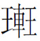
，又作仲服，1910年生，浙江鄞县人，马幼渔之女。1926年为孔德学校学生，1927年至1929年春在中法大学伏尔德学院预科学习，1929年春转入北京大学预科。1931年至1934年为北京大学政治系学生。——1926⑥1，3。1928①8，11。②8，17，18。③2，9，24。④8，20。⑤14。⑥2，12，13，25，28，29。⑦17。⑨13，20。⑩8。（12）17，31。1929①10，30。②12，21。③12，24。⑥27。⑦3，16。⑧2。1930②8。③1。⑥17。1931（11）14。1932④7，28。⑤9，13，25。⑦19，20。⑧1。⑩11，13。（11）26。（12）2，15。1933③13。马 泰 1921年生。马幼渔之幼子。——1932（11）19。
马 理 见周鞠子。
马凡鸟 见马彦祥。
马子华（1912—1996） 云南洱源人，“左联”成员。1935年为上海光华大学国文系学生，曾函请鲁迅为其友审阅《安娜·卡列尼娜》译稿。1936年与周而复、田间等合编《文学丛报》。——1935（11）10，12。（12）11。1936②26。④5。⑤11。⑨6。
马幼舆 见马幼渔。
马幼渔（1878—1945） 名裕藻，字幼渔，亦作幼舆，浙江鄞县人。日本东京早稻田大学、帝国大学毕业，1908年与鲁迅等同听章太炎讲小学。民国初年开始任北京大学教授，讲授文字学。后兼北京女子师范大学讲师，并先后任两校的国文系主任。女师大风潮中，曾领衔发表鲁迅起草的“七教授宣言”，积极参与组织校务维持会并义务讲课。与鲁迅一直保持深厚友谊。——1913②22。③3，10，24。④19，25，26。⑨2，27。（12）17。1914②22。⑥13，17，18。⑨27。（12）13，23，31。1915②14。⑥20。1918②13。④14。⑨10。（12）26。1919③29。（11）23。1920④18。⑧6。⑩8。（11）20。（12）5。1921③16。⑧22，28。⑨1。⑩2，11。1922②17。1923①10，22。②3，17。③20。④11。⑤26。⑦7，12，20，30。⑨14。⑩9。（12）22。1924①29。⑦3，5，6。⑨21，25，26。1925①28。⑤24。⑧19。⑨3，7，11，19，30。（11）7。1926②5。③1，9。⑤10，13。⑦13，19。⑧7，8。⑩1。（11）21。1928②17。③6。⑨2。1929⑤17，18，25，28。⑥27。⑧12，29。1931⑨17。1932④7。（11）15，16，18，19，26。1933③13。⑩9。1934⑧22。
马吉风（1916—1970） 又名马吉峰、马蜂，山东济南人。1935年至1936年间在上海月明公司东方剧社和联华书局等处任职。是隐藏的国民党特务。——1935⑧15，18。1936⑧2。
马仲服 见马玨。
马仲殊（1900—1958） 江苏灌云人。1926年在东南大学毕业后，历任广州岭南大学讲师、上海浦东中学、无锡中学国文教员。1927年参加创造社，曾发表《周年》、《一个中学生日记》等小说。——1927⑥26。1928④24。⑧22。⑨10。
马孝先（1884—1966） 名禩光，字孝先，浙江绍兴人。1916年任北京大学校长蔡元培的秘书。——1917①11。③4。④14。⑥24。
马叔平（1881—1955） 名衡，字叔平，浙江鄞县人，金石、考古学家。马幼渔之三弟。曾任北京大学金石学讲师、国史编纂处征集员、史学系教授、图书部主任等职。1934年后任故宫博物院院长。——1918②15，24。③30。④1。1919⑤23。1920④18，24。（12）25。1921①7。③27。1923④16。
马国亮（1908—2001） 广东顺德人。1935年间为上海良友图书印刷公司编辑。——1935①10。
马思聪（1912—1987） 广东海丰人，音乐家。1929年自法国巴黎国家音乐学院毕业回国，曾往访鲁迅。——1929（12）29。
马叙伦（1884—1970） 字彝初，又作夷初，浙江杭县人。因参加反清革命运动与章太炎相识。1915年初在北京医学专门学校任国文教员。——1915②14。⑩22。
马彦祥（1907—1988） 笔名马凡鸟，浙江鄞县人，戏剧家。马叔平之子，1927年为上海复旦大学国文系学生。——1927（11）2。
马理子 见周鞠子。
马隅卿（1893—1935） 名廉，字隅卿，浙江鄞县人，明清小说、戏曲研究者，版本学家。马幼渔之七弟，曾任北京孔德学校总务长，1926年秋继鲁迅在北京大学教授小说史课程。——1929⑤25，27，28，29。1934（11）10。1935⑤13。
马湘影 1928年为上海法政大学学生。1月10日她在杭州遇一人自称“鲁迅”，信以为真并函鲁迅，鲁迅即复信辟谣。同年3月，她由朱国祥陪同来访。——1928②25。③17。
马巽伯（1903—？） 名巽，浙江鄞县人。马幼渔长子，曾留学日本，1927年回国后在杭州任教，1932年起在浙江省教育厅兼职。寒暑假途经上海时常往拜访鲁迅。——1926⑧22。1928①20，28。⑨2。1929①1。②2。1932⑤30。
马彝初 见马叙伦。
马幼渔幼子 见马泰。
四画
丰 见周丰一。
丰 一 见周丰一。
丰 丸 见周丰一。
丰子恺（1898—1975） 名仁，字子恺，浙江崇德（今属桐乡）人。画家、文学家。曾留学日本。1924年冬参与创办上海立达学园，任校务委员兼西洋画科负责人，曾翻译《苦闷的象征》。——1927（11）27。
王 见王镜清。
王 见王维白。
王 见王顺亲。
王 见王方仁。
王 凡 见王钧初。
王 氏 1919年夏周作人全家到北京时，鲁迅代为向王氏租屋居住。——1919⑦26。
王 弘 见王钧初。
王 君 见王植三。
王 君 上海合义昌煤号经理。——1932（11）10。
王 林（1909—1984） 原名王弢，改名王相林、王林，笔名 闻，河北衡水人，作家。1935年在北平出版《幽僻的陈庄》后，曾寄请鲁迅审阅，因恐写错地址，故又另寄一册。——1934（12）13。1935①7，21。④22。
闻，河北衡水人，作家。1935年在北平出版《幽僻的陈庄》后，曾寄请鲁迅审阅，因恐写错地址，故又另寄一册。——1934（12）13。1935①7，21。④22。
王 弢 见王林。
王 某 鲁迅住在绍兴县馆时的邻居。——1914①31。
王 亮（1881—1966） 字希隐，浙江黄岩人。南京江南陆师学堂毕业，时任陆军部员外郎，后曾为清史馆协修。——1912⑥26。
王 葵 字芝麟，浙江杭州人。——1912⑥26。
王 铸（1902—1986） 名淑明，安徽无为人。1925年间在家乡县立中学任教员，就《苦闷的象征》题名函询鲁迅，鲁迅作《关于〈苦闷的象征〉》为答复。后参加“左联”。——1925①9。
王 楷 未详。——1930⑦26。
王 槱 字朴菴，浙江江山人。日本早稻田大学毕业，曾任京师大学堂矿物学教员，后任山西第二高等检查分厅监督检查官。——1914⑧28。
王 黎 未详。——1933⑤30。
王 潜 未详。——1912⑥26。
王 衡 见鲁彦。
王又庸 江西人。1925年由日本回国。章衣萍、吴曙天、孙伏园等拟从其习日语，设宴招待时邀鲁迅作陪。——1925③21。
王大钟 未详。——1936⑩3。
王之兑 见刘岘。
王女士 见王蕴如。
王小姐 见王顺亲。
王子馀（1874—1944） 名世裕，字子馀，浙江绍兴人。清末《绍兴白话报》、《绍兴公报》与民国初年《禹域新闻》等报纸创办人。晚年从事纂修绍兴县志等工作。——1916⑧27。1917①24。
王云衢 见王倬汉。
王艺滨 未详。——1929⑧21。
王仁山（1871—？） 名树荣，字仁山，浙江吴兴人。清光绪甲午（1894）科举人，京师法律学堂毕业，曾任天津高等审判厅长等职。——1929①5。
王文修 福建闽侯人。1935年为上海光华大学学生。——1935⑩31。
王文灏 见王铎中。
王方仁（1904—1946） 笔名梅川，浙江镇海人。1926年9月起在厦门大学国文系学习，为泱泱社成员。鲁迅在沪定居后他也随即到沪。所译《红笑》由鲁迅校订并介绍发表。1928年冬与鲁迅、柔石等成立朝花社。其兄开设的合记教育用品社，因在与朝花社业务往来中舞弊赖账，致使朝花社遭亏损而告结束。不久，他即往德国留学。——1926（11）28。（12）4。1927①1，10，15。②10，15。③6，9，11，12。④8，15。⑨19。⑩4，16，18，20，31。（11）11，28。（12）23。1928①11，22。②15，16，25。③13，22，28，29。④14，22，23。⑤4。⑥2，12，23。⑧3，7，21，24，28。⑨4，7，10，12，21，27。⑩8，24。（11）1，3。（12）12，14，24。1929①14，17，18。③7，8，17。④27。⑤7，8。⑥7，8，15。⑦21，25。⑧19。⑩8，9。1930①22。⑥4。⑨1。⑩9。
王以刚（1895—1943） 字家蕴，笔名克柔，浙江绍兴人。曾任绍兴成章女子学校校长多年。1927年任《越铎日报》（同年改名《绍兴民国日报》）主编。——1927⑨16。
王书衡（1864—1931） 名式通，字书衡，号志盦，山西汾阳人。清末进士，1914年间任约法会议秘书长。——1914⑧2。
王正今（1910—1984） 又名黎生，河南内乡人。王正朔的堂弟。1936年间在南阳一带从事中共地下工作。应王正朔之托，为鲁迅收集汉画像石拓片。——1936④9，13。
王正朔（约1907—1939） 河南内乡人。1936年间在南阳一带从事中共地下工作。应杨廷宾之托，为鲁迅收集汉画像石拓片。——1936⑧17。
王幼山（1872—1928） 名家襄，字幼山，浙江绍兴人，曾留学日本。1913年间为参议院议员、议长，大总统选举会主席，是研究系的重要人物。——1913③24。
王式乾（1889—？） 字道纲，浙江嵊县人。鲁迅在绍兴府中学堂任教时的学生。1914年考入北京工业专门学校，鲁迅曾为作保。后转入北京大学机械科，1919年毕业。学习期间常向鲁迅借支或汇划学费。——1914⑨5，9。1915①2。②27。③29。④1。⑨11。（12）28。1916①10。④14，27，28。⑥20。⑨17。⑩23。1917③10，11，30。④10。⑨16。（12）21。1918①4。④6。⑤5。⑦5，21，28。⑨4，25，26，29。⑩29，31。（11）12，18，30。（12）27。1919①16。④1。⑤31。⑦2。1921⑦21。
王亚平（1905—1983） 字减之，河北威县人，诗人，中国诗歌会成员。1935年在青岛筹办《诗歌季刊》。——1935⑥12。
王有德（？—1932） 字叔邻，又作茹苓，云南阿迷人。1924年至1925年在北京大学国文系学习。1926年进黄埔军校，后在十九路军任职。——1924③2。1927①30。
王乔南（1896—？） 河北河间人，教育工作者。1930年在北平陆军军医学校任教时，曾为将《阿Q正传》改编为剧本事与鲁迅通信。——1930⑩13。（11）10，15。
王伟人 见王维忱。
王伟忱 见王维忱。
王仲仁（？—1923） 原名仲宸，字星汉，山东蓬莱人。北京大学英文系学生，新潮社成员。——1923④10。
王仲猷 名丕谟，字仲猷，河北通县（今属北京）人。教育部社会教育司第二科主事，兼教育部阅览室主任，后又兼任京师通俗图书馆主任、通俗教育研究会会计干事及中央公园图书阅览所主任。——1913⑩30。（11）2，28。1914③21。（12）3，31。1915⑧8。1923⑧25。⑩31。（11）1。（12）16，20，24。1924①28。1925⑧17。
王任叔（1901—1972） 名运镗，字任叔，笔名巴人，浙江奉化人，作家、文艺理论家。文学研究会成员。1928年8月在上海主编《山雨》半月刊。1929年曾赴日本，次年回国，参加“左联”。——1928⑦1。1929（11）9，10。
王华祝 见王画初。
王志之（1905—1990） 笔名楚囚、含沙等，化名思远，日记又作识之，四川眉山人，作家。1932年为北平师范大学国文系学生，北方“左联”成员，《文学杂志》编辑之一。受北方“左联”之托与鲁迅联系。所著短篇小说集《落花集》曾经鲁迅校订。——1932（12）20，22，26。1933①5，9。②2，3。④3，28。⑤2，9，10，11，20。⑥2，10，13，25，27。⑦5。⑧1，8，30。⑩18，30。（12）27，29。1934①18，29。⑤11，15，22，24，29。⑥3，6，24。⑦7。⑧7，24。⑨4，16，19。（11）20，27。（12）23，28。1935①17，18。③8。④7。⑤6。⑦15，26。⑧17。⑨13，19，27。1936③12。⑨26。
王志恒 未详。——1925⑤20。
王佐才（约1904—？） 江苏无锡人。1930年时为东吴大学学生。——1930②4，8，10。
王佐昌 见王懋熔。
王伯祥（1890—1975） 名钟麒，字伯祥，江苏吴县人，历史学家，文学研究会会员。1926年任上海商务印书馆编辑。——1926⑧30。
王余杞（1905—？） 四川自贡人。1929年在交通大学北平铁道管理学院读书时曾向《奔流》、《北新》投稿，并与王志之、翟永坤等合编文艺半月刊《荒岛》。同年夏赴沪实习，经郁达夫介绍往访鲁迅。1934年任天津《当代文学》编辑时，曾向鲁迅约稿。——1929⑧9，27。（11）13，26，27。1934⑦13。
王希礼（Б.А.Bасильев，？—1937） 苏联人。1925年在冯玉祥国民军第二军俄国顾问团工作，《阿Q正传》俄译本的最初译者。鲁迅曾为之作《俄文译本〈阿Q正传〉序及著者自叙传略》。——1925⑤9。⑦10。⑧11。⑩25，28。1927⑤27。
王冶秋（1909—1987） 笔名野秋，安徽霍丘人。未名社成员。曾在山西、天津等地教书。——1934（11）17，24。（12）7，14，27，28。1935①4，8。②26。③21。⑧19。⑩17。（11）4，5，11，17，18，23。（12）3，5，13，21，22，29。1936①17。②20。③19。④3，6，16。⑤4，5，31。⑥3。⑦11，16。⑨1，15，28。
王君直 名益保，字君直，天津人。清末学部总务司主事，民国后在内务部任职。教育部通俗教育研究会戏曲股名誉会员。——1913（11）15。
王阿花 浙江上虞人。因不堪丈夫虐待而逃沪为佣，在鲁迅家为女佣时，其夫曾纠合流氓前来取闹，后由鲁迅代付赎身费了结。——1929⑩31。1930①9。⑥21。
王画初（1879—1967） 名道元，字画初，日记又作王华祝，河北安新人。1917年起为京师学务局中学教育科科长。1922年至1925年任京师学务局局长。后参加北伐任国民革命军第三军秘书长。——1917⑦12。1918⑧31。1928③2，5。
王叔邻 见王有德。
王叔钧（1874—？） 名章祜，四川华阳人。1912年任教育部社会教育司第二科科长，同年底调任四川教育厅（司）长。1916年又任教育部编审员，并继鲁迅兼任通俗教育研究会小说股主任。1917年调内务部为秘书，旋又出任直隶教育厅长。1920年8月至次年5月任教育部次长。——1916①5。③9。1917②5，8。1923②26。
王叔眉（1875—1941） 名述曾，字叔眉，又作叔梅，浙江绍兴人。民国初年任福建闽侯县知事。——1912⑦22，26。1913③24。
王叔梅 见王叔眉。
王峄山 见王桐龄。
王征天 未详。——1935⑨28。⑩1。
王育和（1903—1971） 浙江宁海人。柔石的同乡，上海沙逊大厦瑞商永丰洋行职员。曾为营救柔石及抚恤其子女与鲁迅有交往；1932年4月将李平（林克多）所著《苏联闻见录》稿送请鲁迅作序。——1931⑤12。1932④7。⑥10。
王学熙 未详。——1935③7，22。
王泽长 见刘岘。
王宝良（1908—1992） 日记作波良，浙江镇海人，上海内山书店店员。——1931（12）23。1935⑨28。
王宗城 浙江绍兴人。《语丝》投稿者，来稿为散文《风雨亭》。——1929⑩26。
王实味（1900—1947） 名诗微，笔名实味，河南潢川人。当时的文学青年。——1928⑩19。
王孟昭 名昉，字孟昭，山西猗氏人。1925年北京大学经济系毕业。——1928⑥18。
王茹苓 见王有德。
王相林 见王林。
王映霞（1908—2000） 浙江杭州人。1928年10月与郁达夫结婚，后离异。——1927⑩5，6。（11）2。（12）31。1928③6。④5，15。⑤19。⑥24。⑦7。⑧21。1929①26。③1，17。1930①5，9。④4，17。⑥13。⑦22。⑧8。1931⑧31。1932③3，7。⑤17。⑩5，12，13。1933⑨8。（12）29，30。1935①10。
王思远 见王志之。
王品青（？—1927） 名贵，字品青，日记又作王聘卿，河南济源人。1925年北京大学物理系毕业，任北京孔德学校教员。《语丝》撰稿人之一。1924年曾促成鲁迅往西安讲学。鲁迅曾为其所校订之《痴华鬘》作题记。——1924⑥28，30。⑧15。（11）30。1925①2，28。②12，27。③19。④8。⑤14，21，31。⑥6，20，23，28。⑦5，12，17。⑧2，15，17，23。⑨7，13，25，26。⑩2，9，13，22。（11）8，14，22，29。（12）25。1926①2，9，19，21，23，31。②5，26。③7，25。⑤13，14，30。⑥1，6，7，8，16，17，19，21，23，26，27。⑦1，5，7，22。⑧19。⑩5，6，12。
王峙南 未详。——1929①31。
王钧初（1904—？） 又名祜曼、胡蛮，日记又作王凡、王弘，河南扶沟人，美术工作者。1934年为北平“教联”和“文总”成员。1935年赴苏联学习。——1934①12。1935⑧3，13，25。⑨1，6，26。⑩18。（11）3。（12）23。1936②2，7。⑧19。⑨24。
王顺亲（约1898—？） 日记又作王、王小姐，浙江绍兴人。1925年为北京女子师范大学学生，许广平的同班同学。——1924⑥8。1925①25。⑦6，21，28。⑩5。
王剑三 见王统照。
王屏华 名铸，江苏太仓人。教育部社会教育司第二科主事。——1913⑨4。1914①27。④15，30。⑤14。⑩6，26。1915⑧31。
王统照（1898—1957） 字剑三，山东诸城人，作家，文学研究会发起人之一。北京中国大学毕业。——1923⑤4。1924①8，12。1925（11）17。
王珪孙（1897—1969） 字桂生，浙江嵊县人。1927年间为厦门大学工科工程系教授。——1927①9。
王桐龄（1877—1953） 字峄山，河北任丘人，历史学家。曾留学日本，1912年回国，历任教育部参事秘书、北京高等师范学校史地部教务主任、北京师范大学历史系教授等职。1924年曾与鲁迅同赴西安讲学。——1924⑦14。
王振钧（1900—1927） 山西天镇人。时任北京《国民新报》编辑。——1925（12）19。
王铁如 见王惕如。
王铁渔 见王惕如。
王铎中（1892—1953） 名文灏，字铎中，浙江绍兴人。鲁迅在绍兴府中学堂任教时的学生，1908年参加越社，后为《越铎日报》主持人之一。——1916（11）13，15。
王造周 字本善，浙江余姚人。与鲁迅、陈子英等同期留学日本。——1913②25。1914⑥8，10。
王倬汉 字云衢，浙江嵊县人。1919年毕业于北京大学国文系。——1919⑦12。1921④3。1924②15。⑥27。
王捷三（1898—1966） 名鼎甲，字捷三，陕西韩城人。1924年在北京大学哲学系学习时，通过王品青认识鲁迅，曾以西北大学驻京代表的身份促成并接待鲁迅在西北大学讲学。——1924⑦4，7，26。（11）5，30。1925②18，20。⑩9。
王野秋 见王冶秋。
王望平 原名王弼，江苏人。中国济难会成员，《白华》杂志主办人。——1927⑩19。
王惕如 日记又作王铁如、王铁渔，浙江绍兴人。曾在绍兴、北京、四川等地行医，业余研究中国古典文学。——1913③17。⑤18，22，27。⑨4，5，15。（11）5，29。1914⑥20。1915④10。⑦25。1917⑤13。⑦15。1918③13。
王焕猷（1892—？） 字儒卿，陕西商县人。1923年北京大学国文系毕业后，在天津南开学校任教。1924年暑假回西安时，适值鲁迅在西安讲学，故往访。——1924⑦23。
王维白（1878—1939） 名家驹，字维白，江苏丹徒人。毕业于日本早稻田大学，民国后任教育部佥事、视学等职。1919年兼任国立北京法政专门学校校长。——1916⑤19，23。1919②22。
王维忱（1875—1922） 名嘉榘，字维忱，号伟人，日记又作王伟忱、王维忱，浙江嘉兴人。与鲁迅同期留学日本，光复会在日本的负责人，《浙江潮》编辑。民国后任教育部主事、佥事、秘书等职。——1912（11）6。（12）2。1913③1。⑧18。⑨27。1914⑥13。1915②12。③2。⑧7。⑨2。1916⑤26，30。1922②26。
王植三（约1896—？） 日记又作王君，浙江镇海人。1929年间为日商“大学眼药店”店员。——1929⑥20。1931②15。
王晴阳 浙江绍兴人。绍兴旧书店奎元堂书商。——1913⑥30。⑦1。
王聘卿 见王品青。
王锡兰 号馥琴，河北任丘人。1929年北京师范大学国文系毕业。——1924（12）14。
王慎思 见刘岘。
王熙之（1904—1960） 名裕和，字熙之，甘肃临洮人。1933年前后为甘肃临洮师范学校教员。所寄儿歌曾经鲁迅介绍给北新书局，未发表。——1933⑩21，26。（12）22，26。1934①4。
王蕴如（1900—1990） 名贤桢，日记又作王女士、王馨如，浙江上虞人。周建人夫人。——1927（11）19，30。1928①20。⑥2，12。⑦1。1929①18。④5。⑥7，8，10。⑦19。⑩10，17，22。1930②28。③3，24，30。④11，23。⑥6，12，21，22，30。⑦10，19。⑧9，10，18。⑨27。+2（11）3，5。（12）26，31。1931①3。②16，19。⑤16。⑥3，12，23，24，27。⑦1。⑧5，10，12，24。⑨13，26。⑩9，11，18，30。（11）13，21。1932①2，4，10，18，25。②15。③14，16，18，22，28，30。④5，7，12，18，26，27，30。⑤10，12，15，18，25。⑥3，12，25，26，27，28。⑦2，7，13，25，26，28，30。⑧28。⑨1，4，8，12，14，16，18，24，29。⑩1，8，23，30。（11）2，5，10。（12）3，10，13，18，24。1933①1，3，8，15，24，28，31。②3，6，12，18，19，23，26，27。③5，11，26，28。④28，30。⑤7，14，21，24，27。⑥3，7，11，17，21，25，29。⑦2，7，12，13，16，22，30。⑧3，5，8，13，16，20，27。⑨3，24。⑩1，8，10，15，22，24，29。（11）5，12，27，29。（12）1，2，17，24，31。1934①3，7，14，18，21，28。②3，10，12，15，19，25，26。③4，11，13，18，26，31。④3，7，9，14，15，17，29。⑤1，4，6，7，12，14，16，19，21，26。⑥2，9，13，16，23，25，30。⑦2，5，7，10，12，14，16，18，19，21，25，28。⑧4，11，14，16，20，25。⑨1，4，8，15，17，22，29。⑩1，7，12，13，14，20，22，27。（11）3，10，13，17，24。（12）1，8，15，22，25，29，31。1935①5，10，13，19，26，29。②2，11，16，19，23，26。③2，9，11，16，21，23，25，30。④4，6，8，11，13，18，20，22，27，30。⑤4，6，11，16，18，25。⑥1，8，15，22，26，29。⑦6，13，20，27。⑧3，5，10，17，24，31。⑨7，14，18，21，28。⑩12，19，20，25，26。（11）2，9，13，16，23，30。（12）7，14，21，27。1936①4，11，18，25。②1，8，22，29。③7，9，14，21，28。④4，11，18，25。⑤2，16，23，30。⑦4，11，18，25。⑧1，5，8，12，15，19，22，29。⑨2，5，6，8，12，16，18，19，26，28，30。⑩3，7，10。
王毅伯 未详。——1928②8。
王翰芳（1895—？） 陕西平利人。曾留学日本，当时任西北大学法律系主任。——1924⑧23。
王镜清（1892—？） 字鑑秋，浙江嵊县人。鲁迅在绍兴府中学堂任教时的学生，1913年考入北京大学预科第二部，请鲁迅作保，1917年退学。学习期间曾向鲁迅借支或汇划学费。——1913⑤12，17，31。⑩2，5，11，16。（11）23，25。1914②5，6，24。③20。⑥7，22，28。⑨15。（12）26。1915②2，13，20，28。③27，30。⑤22，29。⑥28。⑩2。（12）18，28。1916②16，19。③6，7，15。④13，30。⑤3，7，28，29，30。（12）2。1917⑥22。
王儒卿 见王焕猷。
王懋熔（？—1913） 字佐昌，京师图书馆馆员。——1913②2。③30。④6。⑨14。⑩1。（11）11。（12）26，31。1914②9。
王馨如 见王蕴如。
王老太太 日记又作王家外婆，王蕴如之母。——1929④27。1931⑩26。（11）25。
王家外婆 见王老太太。
王叔钧长子——1923②26。
王冶秋之子——1935（11）23。
王维白夫人——1919②22。
井 上 日本人。爱罗先珂的学生，1923年间因参加政治活动受迫害来中国。——1923①20。
井 原 未详。——1923①7。
井上红梅（1881—1949） 原名井上进，日本人。日本改造社成员。中国民俗研究者，著有《支那风俗》、《中华万华镜》等。1932年翻译《呐喊》、《彷徨》为日文，以《鲁迅全集》为书名出版。1933年6月曾到上海。——1932（12）14。1933⑥22。
井上芳郎 日本人。东京庆应大学图书馆职员，中国古代社会研究者。为研究中国封建社会家族情况到上海，在内山书店与鲁迅相识。——1934⑧24，29。
天 行 见魏建功。
天 彭 见今关天彭。
元 庆 见陶元庆。
韦女士 见韦伊兰。
韦丛芜（1905—1978） 又名立人，笔名蓼南，安徽霍丘人，韦素园之弟，未名社成员，翻译工作者。鲁迅曾为其所译《穷人》作小引。1930年8月由他主持未名社社务后，管理不善，致令该社于1931年因亏损解体。他挪用的未名社积欠鲁迅的版税，自1934年6月起以他在开明书店的版税偿还，至1935年底基本还清。——1925③26，28。⑤9。⑦19，27。⑧1，6，30。⑨1，9，14，18，25，26。⑩1，7，10，13，25。（11）14，24。（12）5，14，20，26。1926①31。②10，17，19，20，26，27，28。③1，21。④13，14。⑤4，21，23。⑥11，13，16，26。⑦4，13，16，19，24，26，29，30。⑧1，3，4，10，12，16。⑨29。⑩4。（11）22，24。（12）13。1927③9，17。④28。⑤20。⑥23。⑦6，7。（12）26，29。1928②8，22，29。⑤14。⑦25。⑧2，3。（11）15，24。1929④15。⑤18，21，29，30。⑦15。⑧8，26。⑩16，17。（11）15，18。1930②27。③7，24。⑦5，8。⑧8，30。⑩1，2。（12）31。1931①22，24。③2，8。④29，30。⑤1。⑦25。⑨7，9。1932⑧5。1933⑧18。⑨7，16，18。1934⑥14。⑩24。1935②20。⑦10。（11）4。
韦伊兰 日记又作韦姑娘、韦女士，即孙兰（1913—1968），原名韦毓梅，江苏盐城人。1933至1934年间在复旦大学读书，1935年在清华大学读书。——1933③13。1934⑩28，29。（11）22。1935（11）11。
韦姑娘 见韦伊兰。
韦素园（1902—1932） 又作韦漱园，安徽霍丘人，未名社成员，翻译工作者。曾在鲁迅指导下主持未名社社务，编辑《莽原》半月刊。1927年因肺病在北京西山疗养院疗养。1929年鲁迅北上省亲时曾专往探视。1932年8月2日病殁。鲁迅为其题写《韦素园墓记》，并作《忆韦素园君》。——1925⑤17。⑦6，13，14，16，18，19，26，28。⑧1，3，10，11，17，22，30。⑨1，9，14，24。⑩1，10，18，20，26。（11）2，4，14，17，20，23，25，26，29，30。（12）1，8，22，28。1926③21，23，31。④5，6，23。⑤2，6，13，17，24，25，27。⑥1，3，7，11，16，21，23，24。⑦3，4，14，15，16，17，21，28，29，30。⑧3，12，15，16，23。⑨13，14，17，20。⑩4，8，10，16，19，20，31。（11）4，6，7，8，10，12，14，21，22，28，29，30。（12）4，5，8，13，28，29。1927①4，8，9，11，27。（12）26，29。1928④24。⑤15。⑦11，19，22。⑧19。1929②21。③23。④6，8。⑤7，30。⑧3。（12）9。1930⑧8。1931②2，18。（12）24。1932⑧5。1934④3。⑦16。1935⑦10。
韦漱园 见韦素园。
云 五 未详。——1924（12）20。
云 台 见范文澜。
云 章 见吕云章。
木 工 见张木匠。
木 天 见穆木天。
木 村 见木村毅。
木の实 见增田木实。
木下猛（？—1947） 日本人。时任日本大阪《朝日新闻》上海分社社长。——1933⑨23。1935⑩21。1936⑤11。
木之实 见增田木实。
木村毅（1894—1979） 日本评论家、作家。1933年2月萧伯纳到上海时，以改造社特派记者身份来华采访，并约鲁迅撰稿。——1933②17，18。③1。④25。
木村响泉（1896—？） 日本画家。——1931⑥27。
丏 尊 见夏丏尊。
太 田 见太田贡。
太田贡 日本水彩画家。——1931⑥27。
太虚和尚（1890—1947） 原姓吕，浙江崇德（今属桐乡）人。1926年10月，在美国讲佛学后取道南洋回国时曾游厦门。——1926⑩21。
太田宇之助（1891—？） 日本人。1930年前后为日本大阪《朝日新闻》上海分社社长。——1930⑥15。
友 生 见彭柏山。
友 松 见张友松。
友 桐 见张友柏。
友 堂 未详。——1931②3。
尤炳圻（1912—1984） 江苏无锡人。当时在日本东京帝国研究院研究英国文学和日本文学。1936年他将内山完造著《活中国的姿态》（鲁迅作序）译成中文，改名《一个日本人的中国观》出版。——1936③3，4。⑨19。
车耕南（1888—1967） 名志城，字耕男，浙江绍兴人，鲁迅二姨母之婿，鲁迅表弟，郦荔臣的妹夫，当时在铁道部任职。——1913⑦10，11。⑧23，29。⑩5，6。（11）5。（12）27。1914①9，25。②15，20。⑥22。1915①3。②10，21。③10，12，31。⑤12，14，15。1916⑩4。1917①22。③6。1919（12）6。1920①12，31。⑧2。1922③6。1925⑦9，13。⑧9，18。1926①20。⑤5。⑥10。⑧1。
车耕南夫人 车耕男的继配冯意倩，浙江绍兴人。——1925⑧9，16。1926⑤26。⑥8。
戈宝权（1913—2000） 江苏东台人，翻译家、学者。1936年间为天津《大公报》驻莫斯科记者。曾托人带信告诉鲁迅《死魂灵》翻译中的小错误，并赠鲁迅以《果戈理画传》等。——1936①8。
区声白 广东顺德人。曾留学法国，1927年在广州与黄尊生等组织世界语协会，并在中山大学教授世界语。——1927①30。
区克宣（约1900—1933） 日记又作区国暄，广东人。曾在暨南大学、上海艺术大学等校任教。——1928④23，30。⑥11。
区国暄 见区克宣。
少 其 见赖少其。
少 麒 见赖少其。
中 村 见中村亨。
中 季 见钱玄同。
中村亨（1913—2001） 后改名儿岛亨，日本崗山人。时为内山书店店员。——1934⑨23。⑩3，14。（12）30。
内 山 见内山完造。
内山晓 1933年生，日本人。内山嘉吉的长子。——1933③1。④21。⑥12。
内山鹑 1934年生，日本人。内山嘉吉的次子。——1934②13。⑤9。
内山夫人 见内山美喜。
内山完造（1885—1959） 日记又作邬山生、邬其山生，日本人。1913年来华，后在上海开设内山书店。鲁迅定居上海后因常往该店购书而结识，其后在上海的几次避难都曾得到他的帮助，并常借用该店作通信及会客地点。他所著《活中国的姿态》一书曾由鲁迅作序。——1928④2。（11）11，15。（12）21，30。1929⑥19，20。⑨23。⑩11。1930①4。④6，18。⑤3，19。⑥4，12，15，22，29。⑦4。⑧6。⑨19。⑩4。（12）23。1931①30。②3，11。③1。④11，17，24。⑤14，15，25。⑥2。⑧21，22，24。⑨12，26。⑩19，20，31。（11）5，9，11。（12）22，23。1932①12，19。③29。④12，13，28。⑤12，20，21。⑥28。⑦3。⑨15。⑩11，27。（11）7，14。（12）17，23，30。1933①21，23，25，26，28。②6，14，17，18。④23。⑤16，25。⑥22。⑦1。⑧20。⑨2，23。⑩16，17，19，23，25。（12）31。1934①25。②3，4，5，7。③8，10。④5。⑤30。⑥12，16。⑨2，11，19，23。⑩3，7，8，14，27，28。（12）30。1935①2。②3，14。③4，6，12，15。⑤6，9，17，18，19。⑥19。⑦5，11，15，19。⑧8，31。⑩21。（12）4，22。1936①9。②10，11，25。③2，8，15。④15。⑤22，24，26，28。⑦4，6，13，14，29。⑧1，2，20，23，31。⑨3，12，13，14，23，27。⑩1，11，16。
内山松藻（1906—1991） 原姓片山，日记又作内山嘉吉夫人，日本长崎人。京都同志社高等女子中学毕业后到内山书店工作。1931年8月与内山嘉吉结婚。——1930⑥4。1931③5。⑧13，22。⑨7。1932①12。⑤21。⑥6。（11）7，30。1933③1。⑧4。1934（12）26。
内山美喜（1892—1945） 原姓井上，日本人。内山完造之妻。——1930⑤31。⑥4，13，27。⑧20。⑨27。（12）21。1931①16，30。③1。④11。⑥2。（11）9。1932⑥8，29。⑦3。⑧25。⑨20。⑩12。（11）8，10。（12）31。1933①15，23。③1，3。④23。⑤31。⑥20。⑦24。⑨23。⑩19。（12）22，31。1934①16，25。②4。③8。⑤10。⑦1，20。⑨19，23。⑩3，7，14，28。（11）14。（12）19，26，30。1935①2。③10，15。④11。⑤20，29。⑥20。⑦4。⑨21。⑩22。（12）13，24。1936①7。③15。④17。⑦10。⑧18。⑩8。
内山嘉吉（1900—1984） 日本人。内山完造之弟，儿童戏剧工作者，并擅长木刻。1931年时系日本东京成城学园小学部美术教师，到上海度暑假时，曾应鲁迅之邀为暑期木刻讲习班讲授木刻技法。回国后仍与鲁迅保持联系。——1931⑧13，17，20，22。⑨26。⑩29。1932①12。⑤7，25。⑥6。1933②13。③1，21。④18，21。⑥12。⑦24。1934②13，26。⑤9。⑦20，23。⑧6。1935③10。⑨12，23。1936⑦10。⑩8。
内山夫人之父 名井上平四郎。——1936⑦10。
内山夫人姨甥——1933⑦24。
内山完造之母——1935⑦15，19。
内山嘉吉夫人 见内山松藻。
冈 氏 见冈察罗夫。
冈 本 见冈本繁。
冈 野 未详。——1926⑧17。
冈本繁（1899—？） 日本医学博士。1932年间在上海篠崎医院任外科主任，曾为海婴诊病。——1932（12）9。
冈口女士 见冈田德子。
冈田德子 日记误作冈口女士，日本人。内山美喜之友，1934年5月至7月曾在上海吴淞路出星商会内举办西服裁剪讲习会。——1934⑦20。
冈察罗夫（А.Д.Гончаров，1903—？） 日记又作冈氏、A. Gontchrov，苏联木刻家。他得知鲁迅搜求苏联版画，曾将自己的作品通过曹靖华寄给鲁迅，并与鲁迅通信。——1932⑥3。1934⑩9，15，22，27。（11）2。1935②10。
毛 坤 四川宜宾人。1929年北京大学哲学系毕业。——1925⑥16，18。
毛子龙 名邦伟，字子龙，贵州遵义人。民国后为教育部佥事，任编审处审查员。1919年至1923年间任北京女子高等师范学校校长。——1913（11）15。1915①16。1920⑧26。
毛子震（1890—1970） 名开洲，字子震，浙江江山人。1917年北京医学专门学校毕业，曾留学德国，1925年回国，在北京行医时认识鲁迅。1927年时在广州中山大学医科部任教。——1927④11。
毛壮侯 名福全，字壮侯，安徽清江人。1925年时为北京《民国日报》副刊主任兼编辑。——1925③1。
毛瑞章 名简，字瑞章，浙江江山人。1926年间为厦门大学图书馆办事员。——1926（12）31。1927①9。②17。
毛漱泉（1884—？） 名毓源，字漱泉，浙江余姚人。鲁迅在日本仙台求学时，他在仙台高等学校求学。——1914（11）14，28。（12）15，22。1915②2。③14，28。④10，17。⑤1，23。⑧12。
升 叔 见周凤升。
升 屋 见升屋治三郎。
升屋治三郎（1894—1974） 原名菅原英次郎，笔名胡儿，日记作升屋、菅原英，日本剧评家，日本中国剧研究会会员。经内山完造介绍结识鲁迅。——1930⑧24。1931③5。
长 连 见阮善先。
长 志 见董长志。
长 虹 见高长虹。
长 班 指齐坤之父，原籍浙江绍兴，绍兴县馆工人。长班，即长期仆役。——1912⑤7。
长谷川 见长谷川三郎。
长尾景和（1907—1982） 日本人。1931年在日本关西大学学习，为了解中国民俗到上海，曾与鲁迅同住花园庄旅馆。——1931②15。③1，5，27。④17。
长谷川三郎 日本人。内山书店杂志部负责人。——1932⑤21。（12）25。1933⑤31。⑥1。（12）24，31。1934（12）23。1935②3。（12）24。1936②25。
长谷川本吉 应作长谷川元吉，日本人。曾任日本驻上海领事馆副领事。——1929⑥20。
长泽规矩也（1902—1980） 日本汉学家。1926年为东京帝国大学大学院学生。——1926⑦13。
长谷川如是闲（1875—1969） 日本社会评论家。1928年10月来华考察，经内山完造介绍与鲁迅相识，鲁迅馈赠作品多种，也曾翻译他的杂文《圣野猪》、《岁首》。——1928（11）11，15。
仁 祥 见费慎祥。
片山松藻 见内山松藻。
仆 见齐坤。
仆 人 见齐坤。
介 石 见郑奠。
介 福 见江丰。
今 村 日本人。1923年为东京立教大学学生。——1923①20。
今关天彭（1891—1970） 名寿麿，号天彭，日本汉学家。1923年起长期侨居中国，在北京建立今关研究室，从事中国文化和中日关系史的资料收集与研究。——1923②11。1929⑥18，20。1930①4。1932⑤6。1933（12）31。1934①25。1936③16。
今村铁研（1859—1939） 原名铁夫，日本岛根人。增田涉的表舅。1935年间在日本家乡行医。——1935③22。
今关天彭女孩——1930①4。
公 侠 见陈公侠。
公 衡 见陶公衡。
仓石武四郎（1897—1975） 日本汉学家。时为京都大学中国文学副教授。1928年至1930年在中国进行语言调查，由金九经介绍，与冢本善隆等往观鲁迅收藏的六朝拓本。——1929⑤31。
月 平 见许月平。
风 沙（1909—1942） 原名章维荣，笔名风沙，浙江上虞人，当时任上海生活书店编辑。——1935⑨28。1936⑨19。
风 和 见赵风和。
乌一蝶（1894—1965） 原名钟毓，字统运，号一蝶，浙江镇海人。在宁波长期主编《时事公报》。——1926⑨19。1929③26，29。
凤 举 见张凤举。
文 见杨之华。
文 尹 见杨之华。
文 英 见冯雪峰。
文公直（1898—？） 名砥，字公直，号萍水文郎，江西萍乡人。早年参加同盟会。1934年间为国民党政府立法院编译处股长。曾写信攻击鲁迅为“汉奸”、“买办”，鲁迅因作《康伯度答文公直》予以驳斥。——1934⑧4。
文尹夫妇 见瞿秋白、杨之华。
文英夫人 见何爱玉。
文英夫妇 见冯雪峰、何爱玉。
文英孩子 见冯雪明。
方 仁 见王方仁。
方 君 未详。——1934⑤14。
方 叔 见周凤岐。
方 晨 未详。——1934③28。
方 璧 见沈雁冰。
方之中（1908—1987） 湖南华容人。黄埔军校肄业，“左联”成员。1935年4月曾函请鲁迅为他的小说集《花家冲》作序，鲁迅因忙未作。1936年他主编《夜莺》月刊时，曾发表鲁迅的《三月的租界》、《写于深夜里》二文。——1935④12，18。1936⑦6。
方保宗 见沈雁冰。
方善竟（1907—1983） 应作方善境，浙江镇海人。1929年至1930年间在汉口世界语学会编辑《希望》。他把自刻芥川龙之介等人的石刻画像寄给鲁迅，附信署。石刻芥川龙之介画像后发表于鲁迅主编的《文艺研究》季刊，附信曾由鲁迅引录于《奔流》第二卷第四期《编校后记》。——1929⑦28。（11）6。1930④12，13。⑧1，2。
亢 德 见陶亢德。
忆 农 见周锵凤。
计万全（1876—1950） 字蕴渔，湖北房县人。徐吉轩请鲁迅为之作应试县知事的保人。——1914①29。
心 田 见罗常培。
心 梅 见周秉钧。
尹 庚（1908—1997） 原名楼曦，改名楼宪，笔名尹庚，浙江义乌人，“左联”成员。1935年时在上海天马书店编辑《天马文学丛书》。——1935④18。
尹 默 见沈尹默。
尹宗益（约1890—？） 字嵩吉，浙江嵊县人。鲁迅在绍兴府中学堂任教时的学生，1916年为北京大学理科学生。——1916①3。⑤28。⑦18。
尹德松 见尹翰周。
尹翰周（约1888—？） 字德松，浙江嵊县人。鲁迅在杭州浙江两级师范学堂任教时的学生，1916年为北京高等师范学校理化部学生。——1916⑥11，16，25。⑦4。
巴 金（1904—2005） 原名李尧棠，字芾甘，笔名巴金，四川成都人，作家。1934年8月起与鲁迅交往。同年10月间往日本，文学社为他饯行时，鲁迅应邀参加。1935年与吴朗西合办上海文化生活出版社，鲁迅的《故事新编》、《夜记》曾收入他编辑的《文学丛刊》；鲁迅等编辑的《译文丛书》和《死魂灵百图》等也由该社出版。——1934⑩6。1935⑨25。1936②4，8。④26。
以 孙 见徐以孙。
以 俅 见梁以俅。
以 见徐以孙。
邓飞黄（1895—1953） 字子航，湖南桂东人。1925年北京大学经济系毕业后任《国民新报》总编辑。——1925（12）6，7，23，30。1926①9，12，21，30。②6，14，21，26。③9，10，14。④30。⑤5，6。
邓以蛰（1892—1973） 字叔存，安徽怀宁人，学者。时任北京大学哲学系教授。——1924⑤11。
邓医生（Th.Dunn，1886—1948） 英籍美国人。加利福尼亚大学医学部毕业，曾任美国海军军医。1920年来上海行医。应史沫特莱之请为鲁迅诊病。——1936⑤31。
邓国贤 系应县知事考试请鲁迅作保者。——1914④14。
邓荣燊 广州中山大学政治系学生。——1927⑧2。
邓染原 广东五华人。——1927③15。
邓梦仙 北京世界语专门学校校医。——1924②25，28。
邓肇元 鲁迅在广州中山大学任教时的学生。——1929④8。
书 臣 见陶书臣。
书 堂 见汪书堂。
水 野 见水野胜邦。
水野胜邦（1904—？） 日本人。东京专修大学中国文学与中国地理教授。由盐谷温介绍结识鲁迅。——1931（11）7，9，10，11，25。1932⑨8。
水野清一（1905—1971） 日本人。中国和亚洲考古研究家。1928年京都帝国大学毕业后，来华在北京大学从事考古研究。——1929⑤31。⑥2。
水野胜邦夫人——1932⑨8。
孔另境（1904—1972） 字若君，笔名东方曦等，浙江桐乡人，作家。茅盾之内弟。1932年8月在天津河北女子师范学院任出版部主任时，因故以“共党嫌疑”被捕，经鲁迅等设法营救出狱，12月间回沪。1935年冬着手编辑《当代文人尺牍钞》（后改名《现代作家书简》），鲁迅曾为之作序。——1932（12）26。1933⑤9。1935（11）1，14，24，26。1936①30。②5。③6。④23，24。⑤20。⑦4，22，24。⑧1。⑨2。⑩11。
孔若君 见孔另境。
孔罗荪（1912—1996） 山东济南人，文学评论家。1935年在汉口主编《大光报》文艺副刊《紫线》，写信向鲁迅约稿。——1935⑤22。
孔宪书 云南通海人，北京大学英文系学生。——1925④4，6。
孔容之 见孔祥熙。
孔祥熙（1880—1967） 字庸之，日记又作容之，山西太谷人。早年留学美国。曾任广东革命政府财政厅长，1927年时任武汉国民政府实业部长，后任南京国民党政府工商部长、财政部长等职。——1927③29。
孔德沚（1897—1970） 日记又作德芷、仲方夫人、沈余夫人、茅盾夫人。浙江桐乡人，沈雁冰夫人。——1930④5。1933②3。1935②2。1936⑤9。
五画
玉 生 见谢玉生。
玉 帆 姓纪，绥远人，北京大学学生。——1925⑤5。
玉 堂 见林语堂。
玉 鲁 见朱斐。
未 生 见龚未生。
正 路 见山本正路。
甘 君 见甘润生。
甘 努 见聂绀弩。
甘 某 见甘鹏云。
甘乃光（1897—1957） 字自明，广西岑溪人。美国芝加哥大学毕业。1927年间为国民党广东省党部执行委员、广州政治分会委员、广州《民国日报》和《国民新闻》两报社长，广州中山大学政治训育部副主任。后任国民党中央执行委员、外交部政务次长、行政院秘书长等职。——1927①24。1929⑥26。
甘元灏 见甘润生。
甘闰生 见甘润生。
甘润生 名元灏，字润生，日记又作甘君、甘闰生，浙江绍兴人，鲁迅在三味书屋读书时的同学。1915年间在北京中国银行任职。——1915⑩1。1916④30。⑤7，28。⑥10。⑦7，16。（12）2。1917①28。③6。
甘鹏云（1862—1941） 字翼父，湖北潜江人。时任教育部总务厅秘书。——1924②8。
世 英 见许世瑛。
世 玚 见许世玚。
世 瑛 见许世瑛。
世 琠 见许世琠。
世 琯 见许世琯。
艾 芜（1904—1992） 原名汤道耕，笔名艾芜，日记又作汤，四川新都人，作家。1931年11月他和沙汀就短篇小说题材问题函请鲁迅指教。1932年1月，他将短篇小说稿《太原船上》寄请鲁迅审阅。1933年3月在上海被捕，鲁迅曾捐款营救，9月底出狱后致信鲁迅表示感谢。——1931（11）29。（12）8，28。1932①5，10，14。1933⑩13。1936①31。②1，10。
艾 青（1910—1996） 原名蒋海澄，笔名艾青、莪伽等，日记作伽，浙江金华人，诗人。1932年在上海加入“美联”，同年7月被捕后，在狱中与江丰写信向鲁迅借书。——1932（12）31。
艾 明 江西人。1936年在南昌孺子亭小学任教，爱好文学创作。曾通过段干青将稿件转请鲁迅指教。——1936⑤7。
艾寒松（1905—1975） 原名逸尘，一名逖生，笔名艾寒松、易水等，江西高安人。1934年间为上海生活书店《新生》周刊编辑。——1934⑨24。（11）24，26。
艾锷风（G.Ecke） 德国人。1926年间在厦门大学担任文科哲学系教授。——1926（12）24。1927①13，14。
古 飞 见胡风。
古 屋（1895—1955） 名助次郎，日本山梨人。上海福民医院会计、事务长。——1933⑩23。
古 斐 见胡风。
古安华 见曹靖华。
可 铭 见朱可铭。
石 井 见石井政吉。
石 民 湖南邵阳人。1928年北京大学英文系毕业，曾任上海北新书局编辑。1930年后肺病复发时鲁迅曾给予帮助。——1928⑦4，12。⑩4，21。（11）26。（12）29。1929①8。②4，20，21，26。③3，12，17。④20，22。⑦17，18，19，20，22，23。⑧22。⑨2，3，6，9。⑩7，9，26。（11）16，19。1930①9，15。②1，3，5，7。③10。④1，2，4，27。⑤11。（11）10，11，12，19，26。（12）8，17。1931（11）19。1934⑤17。1935①30，31。1936①21。⑦19。
石 君 见郑奠。
石 珉（？—约1951） 四川成都人，黄鹏基之妻。1926年至1928年间在北京大学教育系学习。——1926⑧9。
石评梅（1902—1928） 名汝璧，笔名评梅，山西平定人。1923年北京女子高等师范学校毕业。曾任北京师范大学附中女子部主任兼国文、体育教员。——1926⑧26。
石川半山（1872—1925） 日本人。日本《万朝报》记者。在中国研究风俗民情等。——1923⑤8。
石井政吉 日本医师。1930年间在上海北四川路阿瑞里开设石井医院。因爱好文学，在内山书店与鲁迅相识。——1932③26，31。④4，6。
龙荫桐 名沐棠，字荫桐，江西万载人。1918年在教育部社会教育司任职。——1918①6。
平 江 见张平江。
平 甫 见柔石。
平 君 见林克多。
平 复 见柔石。
平井博士 在上海开业的日本医师，曾为海婴诊病。——1930⑦9，10，11，13，15，16，18，20，24。（11）12，19，26。（12）8，17。1931①5。⑥2，4，29。⑦1，2，4。1932⑥23。
东 华 见傅东华。
东志翟 未详。——1936⑦6。
卢 彤 1914年时在参谋部第五局任职。——1914②9。
卢自然 字文斋，河南渭县人。北京师范大学国文系学生。——1924③29。
卢克斯 德国人。1928年间在上海同济大学任教。为出版德译本《阿Q正传》与译者廖馥君同访鲁迅，得到鲁迅的帮助。后将译稿带回德国，未见出版。——1928⑩17。
卢闰州 见卢润州。
卢润州（1879—1967） 名镇澜，字润州，日记又作卢闰州，江苏镇江人。周作人在南京水师学堂时的同学。曾留学日本，东京大学法律系毕业。1913年间在浙江高等审判厅任厅长，1916年任浙江鄞县地方审判厅厅长。——1913⑥17，18。1916⑥16。（11）26。（12）1。
卢鸿基（1910—1985） 广东琼海（今属海南）人，美术工作者，一八艺社成员。1936年与鲁迅通信时是国立杭州艺术专科学校雕塑系学生，曾为翻译伏尔泰的《愚昧的哲学家》及有关文人画等问题向鲁迅请教。——1936⑤20。
目 寒 见张目寒。
目加田 见目加田诚。
目加田诚（1904—？） 日本人。中国古代文学研究家。曾任日本九州大学副教授。1933年至1936年在北京大学、中国大学进修中国古代文学，由郁达夫介绍与小川环树同访鲁迅。——1935③21。
申 君 未详。——1927②18。
叶 芷 见叶紫。
叶 君 见叶少泉。
叶 某 未详。——1929⑧16。
叶 渊（1889—1952） 字贻俊，福建安溪人。集美学校校长，曾函邀鲁迅往该校讲演。——1926（11）19。
叶 紫（1910—1939） 原名俞鹤林，笔名叶芷、阿芷等，日记又作阿紫，湖南益阳人，作家，“左联”成员。1933年间与陈企霞等合编《无名文艺》，曾在创作和生活上得到鲁迅的帮助。所著短篇小说集《丰收》由鲁迅作序并编入《奴隶丛书》，于1935年出版。——1934④28，30。⑤18。⑥8。⑧28，31。⑨1，14，27。⑩15，21，31。（11）13，20。（12）17，19，27。1935①4，7，10，17，23。②24，27，28。③1，4，5，18，28，29。④4，8，13，19。⑤6，12，13，14，23。⑥7。⑦3，13，16，30，31。⑧11，28。⑨21，23，27。⑩2，3。（11）24，26。（12）22，26，29。1936①6。②10。③10，14。⑤12，13，31。⑥4。⑧19，29。⑨8，15。
叶之林 见端木蕻良。
叶之琳 见端木蕻良。
叶少泉 日记又作叶君。——1927①25。②5，10，17，18，24。③3。④1，14。⑥18。
叶汉章 浙江绍兴人。曾在教育部任职。——1927（11）29。（12）3。1928④13，21。
叶永蓁（1908—1976） 名会西，字永蓁，笔名叶蓁，浙江乐清人。黄埔军校第五期学生，随军北伐，大革命失败后转居上海，作自传体小说《小小十年》，鲁迅曾为修改并作小引。1934年重新入伍，陆续升至少将师长，后卒于台北。——1929⑤3。⑥12，13，15，16，18，19，21，23，28，29。⑦31。⑨5，19。⑩3，19。（12）4，12。1930③15，16。⑥23。1931①15。1933⑨21。
叶圣陶（1894—1988） 名绍钧，字圣陶，江苏吴县人，作家，文学研究会发起人之一。曾从事教育工作，1923年起担任商务印书馆编辑，1930年起改任开明书店编辑。1926年秋鲁迅赴厦门途经上海时与之相晤，次年10月鲁迅定居上海寓景云里时与之为邻，往还较多。——1926⑧30。1927⑩14，18。（12）4，16，18，24，27。1928⑨24。1929⑧22。1930④5。1931（11）16。（12）3，17，19。1933①11，15。（11）20。（12）4。
叶绍钧 见叶圣陶。
叶洛声 未详。——1933（11）3。
叶锄非 字雏飞，1911年生，安徽休宁人。复旦大学特别生。——1927（12）20。1928②15。1930①6，7。④25。
叶誉虎（1880—1968） 名恭绰，字裕甫，又字誉虎，广东番禺人。民国成立后历任交通部路政司长、次长、总长，交通大学校长，北京大学国学馆馆长等职。1930年时住在上海。——1930（11）20。
叶谱人 浙江余姚人。鲁迅在绍兴府中学堂任教时的同事。——1913⑥30。
叶籁士（1911—1994） 原名包叔元，日记又作罗甸华，江苏吴县人，语言学家，左翼世界语联盟成员。曾留学日本，1935年时在上海从事拉丁化新文字运动，曾函请鲁迅为上海新文字学会募捐，鲁迅复信并捐款。——1935⑤21。⑦18。⑨19。⑩11。
田 夫（？—1931） 原名曹典湖，化名田夫，湖南长沙人，作家。1931年3月被捕，同年9月病逝狱中。——1929⑩22。
田 汉（1898—1968） 字寿昌，日记又作田汗，湖南长沙人，戏剧家，“左联”、“剧联”成员。1927年间组织南国社，1934年8月后担任《戏》周刊编辑。——1927（11）23。1930⑩4。1935①29。
田 汗 见田汉。
田 坂 见田坂乾吉郎。
田 间（1916—1985） 原名童天鉴，笔名田间，安徽无为人，诗人，“左联”成员。1935年至1936年间参加《文学丛报》、《新诗歌》的编辑工作，曾将自作诗集《未明集》寄赠鲁迅。——1935（12）12。
田 君 未详。——1924⑧29。
田多稼 名稔，字多稼，浙江萧山人。1913年为众议院议员。——1913⑤18。
田问山 未详。——1926④14，22。
田际华 见唐诃。
田景福 1911年生，山西汾阳人。1935年间任太原青年会总干事，因请鲁迅为其短篇小说集《冬天的事》作序与鲁迅通信。——1935⑨9，29。
田边尚雄（1883—1984） 日本音乐理论家。1923年时为日本东京音乐会会长、东洋音乐学校讲师，来华从事东洋音乐史研究。——1923⑤14。
田中庆太郎（1880—1951） 日本京都人，东京文求堂书店主人。——1932⑥2。
田坂乾吉郎（1905—？） 日本画家。从事蚀刻铜版画创作。当时与太田贡在上海举办画展。——1931⑥27。
史 君 见史沫特莱。
史 岩 见史济行。
史女士 见史沫特莱。
史佐才（1893—1957） 字瑞麟，浙江杭州人。时任北新书局会计。——1934③31。
史美德 见史沫特莱。
史绍昌 未详。——1927⑦9。
史济行 笔名史岩、齐涵之、天行等，浙江宁波人。曾编辑《人间世》（汉口出版，后改名《西北风》）等刊物。1936年3月以白莽同学的名义骗取鲁迅的《白莽作〈孩儿塔〉序》，鲁迅曾作《续记》予以揭露。——1928⑩19。1929②20，21。⑦20。⑩8。1934⑤15。1935③2。④21。1936③10，13。
史女士友 见Garnich。
史沫特列 见史沫特莱。
史沫特莱（A.Smedley，1890—1950） 日记又作史女士、史美德、史君、史沫特列，美国女作家、记者。1928年底以德国《法兰克福日报》特派记者身份来华。1930年3月曾为《萌芽月刊》撰稿，同年9月曾为“左联”庆祝鲁迅五十寿辰代借会场；1931年起协助鲁迅搜集、编印凯绥·珂勒惠支的版画；1932年春与鲁迅等同参加营救牛兰夫妇；1933年参加中国民权保障同盟；1936年鲁迅病重时曾为延医诊视。鲁迅作《黑暗中国的文艺界的现状》及《写于深夜里》均由她译成英文，在美国进步刊物上发表。——1929（12）25，27。1930①21，22，25。②10。③27，28。⑤6。⑨7，19。1931①18。③18。④7。1932③28。1933②17。⑤10，15。1934⑩29。（11）1。1935⑧5。1936③23。⑤31。
史沫特莱之翻译——1931①18。
白 川 见尾崎秀实。
白 兮 见钟望阳。
白 禾 未详。——1929⑦13。
白 苇 原名韩白涛，浙江人。工人作者，曾给《文艺新闻》投稿。——1933⑥7。
白 波 1925年6月从上海东亚同文书院给鲁迅写信，鲁迅作《田园思想》答复。——1925⑦25。⑧22。
白 莽（1909—1931） 原名徐柏庭，又名徐祖华、徐白、徐文雄，笔名殷夫、白莽，浙江象山人，诗人，太阳社成员、“左联”成员。1929年在上海从事革命活动，因译《彼得斐诗集》向《奔流》投稿与鲁迅通信并会面，多次得到鲁迅的帮助。1931年2月7日被国民党当局杀害于上海龙华。遇害二周年时鲁迅曾作文悼念，后又为他的诗集《孩儿塔》作序。——1929⑥16，25，26。⑦4，11，12。⑧4，16，17，18。⑨14，18，21。（11）10。1930②24，25。③14。1931①15。1936③11。
白 莲 见柳原烨子。
白 涛 见何白涛。
白 频 江苏南京人，时为上海中华书局职员。——1932（12）29。
白 薇（1894—1987） 原名黄彰，字素如，笔名白薇，湖南资兴人，作家，南国社、“左联”、“剧联”成员。当时是杨骚之妻。1929年经郁达夫介绍与鲁迅交往。所作剧本《打出幽灵塔》及小说《炸弹与征鸟》曾连载于鲁迅编辑的《奔流》月刊。——1929①29。②15，18，19，20，21。④28。⑦13。⑧6。1930③29，30。1933③27。1936②8。
白云飞 《北新》投稿者。——1929④4，6。
白龙淮 广州中山大学医科学生。——1929（12）12，13。
白尔玉 山西人。1915年到北京投考知事，由许季上介绍请鲁迅作保。——1915④3。
白振民 江苏南通人。清朝举人，教育部视学。——1915⑧7。⑨2。
丛 芜 见韦丛芜。
冬 芬 见董秋芳。
包蝶仙（1876—1943） 名公超，字蝶仙，浙江吴兴人。画家。长期在杭州一些学校任图画教师。——1913②15。
乐 扬 见冯雪峰。
乐 芬（V.Rover） 日记又作乐君，苏联人。塔斯社驻上海记者。——1930④3。⑤6，22。⑧19，26。⑨19。1931③18。
乐 君 见乐芬。
市原分 未详。——1934⑦3。
邝富灼（1869—1938） 字耀西，广东新宁（今台山）人。早年留学美国，1926年为上海商务印书馆英文部主任，曾为梁社乾的英译《阿Q正传》出版事与鲁迅联系。——1926（11）28。（12）1。
立 波 见周立波。
立 莪 见廖立峨。
立 峨 见廖立峨。
立峨友 见何春才。
立田清辰 日本内务省派驻北京的官员。——1925⑨17。
立峨友人 见曾立珍、曾其华。
玄 同 见钱玄同。
玄 伯 见李玄伯。
玄 珠 见沈雁冰。
半 农 见刘半农。
半 林 见谷万川。
半 侬 见刘半农。
汉 华 未详。——1927⑨7。
汉堡嘉夫人（Mrs.Hemburg） 原名鲁特·维尔纳，德国人，德共党员。当时随丈夫罗尔夫·汉堡嘉（又译汉布尔格）居住上海，通过史沫特莱结识鲁迅。鲁迅曾支持她筹办“德国作家版画展”。——1931⑥11。（11）26。（12）15。1932④28，29。⑥30。
宁 华 见瞿秋白。
它 见瞿秋白。
冯 至（1905—1993） 原名承植，字君培，笔名冯至，日记又作浅草社员，河北涿县人，诗人，浅草社、沉钟社成员。1927年北京大学德文系毕业，后在北平第二师范学院任教，1930年往德国留学，1935年回国。——1925④3。1926⑤1。⑥6。1927⑤23，31。1929⑤24。1931⑦6。1935⑨6。
冯 君 见冯雪峰。
冯 君 似指史沫特莱的秘书冯蕾。——1931⑥7，11。
冯 铿（1907—1931） 原名岭梅，笔名冯铿、绿萼等，日记又作密斯冯，广东潮州人，作家，“左联”成员。经柔石介绍认识鲁迅。1931年2月7日被国民党当局杀害于上海龙华。——1929（12）31。1931①12。
冯乃超（1901—1983） 广东南海人，文学评论家，后期创造社和“左联”主要成员之一。1930年2月为征求对“左联”纲领和宣言初稿的意见往访鲁迅。——1930②24。
冯三昧（1899—1969） 浙江义乌人。上海大江书铺编辑。——1930②1。
冯太太 见何爱玉。
冯文炳（1901—1967） 字蕴仲，笔名废名，湖北黄梅人，小说家，语丝社成员。1925年至1929年间为北京大学英文系学生，毕业后留校任教。——1925②15。④2。⑨17。（12）22。1926③21。⑤30。1929⑤19。
冯汉叔（1880—？） 名祖荀，字汉叔，浙江仁和人，数学家。1909年在杭州浙江两级师范学堂任教时与鲁迅同事。民国初年在北京大学任教。——1912⑧5，7，21。
冯克书 字德峻，浙江绍兴人。鲁迅在山会初级师范学堂任教时的学生，1918年时为北京高等师范学校英语部学生。——1918⑦14。
冯步青 字云生，浙江上虞人。1914年由魏福绵托保应县知事考试；1929年在上海任律师，为女佣王阿花事曾与鲁迅联系。——1914④5，8。1929⑩31。
冯余声 又名冯余生，冯Y.S，广东人，“左联”成员。曾将《野草》译成英文后函请鲁迅作序。译稿后毁于“一·二八”战火，未能出版。——1931（11）2，6。
冯君培 见冯至。
冯季铭 名学壹，字季铭，浙江绍兴人。绍兴师范学校教师。——1913⑥25。
冯姑母 广东番禺人。许广平的姑母。——1929⑨20。1930⑤26。⑩15。1933①25。
冯省三（1902—1924） 山东平原人。北京大学预科法文班学生，1921年因反对学校征收讲义费被开除。1923年与陈声树等创办世界语专门学校，曾请鲁迅到该校任教。——1923①20。②6。⑤10，12。⑥26。⑦20，30。⑧1，4，10，23，24。⑨19。1924①21，28。④3，5。
冯剑丞 字建纯，日记又作剑成，广州人。冯姑母之子，律师。——1932⑥28。1935③22。
冯润璋（1902—1994） 又名周茨石，陕西泾阳人，“左联”成员。为办刊物事曾写信向鲁迅请教，不久与友人编辑出版《洪荒》月刊。——1933⑤18，25。⑥1。
冯宾符（1915—1966） 原名贞用，字仲足，号宾符，浙江慈溪人，国际问题研究者。三十年代任商务印书馆、生活书店编辑。曾托周建人请鲁迅书赠墨迹，鲁迅为之写钱起《湘灵鼓瑟》一幅。——1935（12）5。
冯梅君 未详。——1931①17。
冯雪明 日记又作雪儿、碧山、碧珊、文英孩子、雪方孩子，1930年生，浙江义乌人。冯雪峰之女。——1931④20。1933⑨22。（12）5，30，31。1934①7。②22。1936⑨16。⑩3，10。
冯雪峰（1903—1976） 笔名画室、洛扬、成文英等，日记又作冯君、息方、乐扬、雪方、文英，浙江义乌人。作家、诗人、文艺理论家。1925年曾在北京大学旁听鲁迅讲课。1926年8月起与鲁迅交往。1928年底开始与鲁迅关系密切。曾共同译印《科学的艺术论丛书》及《现代文艺丛书》，出版《萌芽月刊》、《世界文化》、《前哨》、《十字街头》等刊物；并共同参加“自由大同盟”和“左联”的发起、筹备及其后的领导工作。鲁迅通过他与瞿秋白建立了友谊。1933年底调往瑞金工作，其后参加了长征。1936年4月自陕北回上海工作，向鲁迅传达中共中央关于抗日民族统一战线等方针、政策。——1926⑧5。1928⑦19，20。⑨26。（12）9。1929①1，13，20，29。②1，16，24。③11，20，28。④12，17，20，23，27。⑤1，4，11。⑥6，14。⑦19，20。⑧7，10，15，21。⑨13。⑩13，14，15。（11）7，27。（12）22，26。1930②1，10，16。③14，15，20，23，24，26，28，30。④6，8，9，11，12，15，18，24，26。⑤7，13，17，19，28，31。⑥2，7，17，22，24。⑦12，26。⑨27。⑩6。1931④4，20。⑤8。⑥9。⑦30。⑩15，19。1932③7。⑩6。（12）11。1933①19，25。③12。⑨22。（12）23。
冯稷家（1884—1969） 名农，字稷家，浙江嵊县人。北洋政府法制局编译、北京私立华北大学创办人之一。——1924（12）8。
冯德峻 见冯克书。
冯至夫人 见姚可昆。
永 言 见蔡咏裳。
永 持 见永持德一。
永持德一（1875—？） 日本人。北京税务专门学校教员。——1923①5，7。
司 长 见夏曾佑。
司徒乔（1902—1958） 广东开平人，画家。鲁迅曾两次参观他的画展，购买他的作品，并作《看司徒乔君的画》。1928年赴法国留学，归国后仍与鲁迅保持联系。——1926⑥6。1927②17。1928②25，28。③13，15，21。④5。⑩14，25。（11）6，17。1931⑨5，6。1935⑩15，18。1936②17。
加 藤 见加藤真野。
加藤真野 日本人。内山美喜之友，1931年时居住上海。美喜逝世后，1950年她与内山完造结婚。——1931⑥2。
圣 旦 姓刘，江苏常州人。——1935①17。
圣 陶 见叶圣陶。
台伯简 见台静农。
台静农（1902—1990） 字伯简，日记又作靖农、静、青曲、青辰，安徽霍丘人。未名社、北方“左联”成员。北京大学研究所国学门毕业，先后在辅仁大学、山东大学、厦门大学等校任教。鲁迅曾三次赠与手书字幅。——1925④27。⑤14，17，20，21。⑥23。⑦5，6，10，13，14，19。⑧15，24，30。⑨1，9，14。⑩1，7，13，18，26。（11）25。（12）1，12，18，20，26，30。1926①2，12，13，21，27，31。②7，9，10，20。③2，6，10，15，21，23。④23，30。⑤1，5。⑦15，26。⑩23。（11）28，29。1927②22。④9，10，29。⑤3，6，11，14，23。⑥1，3，7，13，23。⑦2，15，24，25。⑧17，18，21。⑨20，23，25。⑩4，5，26。1928②10，23，25。⑥5。1929⑤17，24，28，29，30。⑥3。1930⑧8。1932④24。⑥5，6，17，18，19。⑦10，11。⑧5，15，16。⑨21，29。（11）15，17，18，19，20，22，26，27，28。（12）1，2，9，12，14。1933①5，26，31。②11，13。③1，11，13，25，30。⑤9，12。⑥28。⑧29。（12）27，28。1934①12，25，26。②14，15，26。③16，23，27，31。④3，12，13。⑤10。⑥9，17，18，29。⑦1，2，3，5，14，15，16，17，31。1935⑤6，15。⑥6，24。⑦2，3，22。⑧11，30，31。⑨2，17，20。⑩6。（11）15，29。（12）4，6，21，22。1936①7。②25。③16。⑤7。⑩4，16。
矛 尘 见章廷谦。
矛尘夫人 见孙斐君。
母 亲 见鲁瑞。
幼 渔 见马幼渔。
幼 雄 见黄幼雄。
幼 舆 见马幼渔。
六画
邢墨卿 见邢穆卿。
邢穆卿 日记又作邢墨卿，浙江嵊县人。曾任北京《晨报》校对，1926年时为上海北新书局校对。——1926⑧30。（11）10，12，21。
耳 耶 见聂绀弩。
吉 冈 见吉冈恒夫。
吉 田 见吉田笃二。
吉 轩 见徐吉轩。
吉冈恒夫 日本人。上海三井洋行职员，鲁迅住大陆新村时的邻居。——1934⑧18。⑨29。（11）3。1935⑦27。
吉田笃二 日本人。上海福民医院外科医生。——1933⑩23。
亚 丹 见曹靖华。
亚 平 见王亚平。
亚历克舍夫（H.B.Алексеев，1894—1934） 又作亚历舍夫，苏联版画家。他曾通过曹靖华向鲁迅赠送自己所刻费定的《城与年》、高尔基的《母亲》等书插图。鲁迅也回赠他一些中国古代木版画集。——1934①9。1936⑦2。
芝 圃 未详。——1926④10。
协 和 见张协和。
西 村 见西村真琴。
西 谛 见郑振铎。
西村真琴（1883—1956） 日本生物学家。上海一·二八战事期间，他在闸北三义里废墟拾得一鸽，带回日本饲养，鸽死后为之修一石碑，名“三义冢”，并描摹其体态，寄请鲁迅题诗。鲁迅即为作《题“三义塔”》一诗。——1933④29。⑥9，21。⑧1。
有 林 见荆有麟。
有 恒 见时有恒。
有 麟 见荆有麟。
百 年 见陈大齐。
存 统 见施复亮。
达 夫 见郁达夫。
达 和 见张达和。
达夫之兄 见郁华。
达夫之嫂 见陈碧岑。
达夫夫人 见王映霞。
成 君 见成慧贞。
成先生 见成慧贞。
成仿吾（1897—1984） 湖南新化人，文学评论家，创造社发起人之一。1927年在黄埔军校任教官。同年4月初与鲁迅等联名发表《中国文学家对英国智识阶级及一切民众宣言》。——1927②20。
成春祥 浙江上虞人。王蕴如的外甥女。——1933（11）29。（12）3。
成慧贞（？—约1960） 日记又作成君、成先生、成慧珍、郑慧贞，浙江上虞人。当时在家乡教书，通过王蕴如结识鲁迅。——1930②4，15。⑧9，18。（11）9。1933（11）27。1935⑦20。
成慧珍 见成慧贞。
成城学园之生徒 见林信太。
毕 磊（1902—1927） 字安石，湖南澧县人。时为广州中山大学文科本科学生。曾任中共广东区委学生运动委员会副书记、中山大学社会科学研究会干事。曾在他主编的革命刊物《做什么？》上发表《欢迎了鲁迅之后》一文。鲁迅在中大时，他受党的委派负责与鲁迅联系。在广州四一五事变中被捕牺牲。——1927①31。
毕斯凯莱夫（H.Пискарев，1892—1959） 苏联版画家、图书插画家。1931年间出版《铁流》中译本时，鲁迅曾托曹靖华搜求他为该书所作木刻插图。——1931（12）8。
扫街人 景云里的扫街工人。——1930①29。
师 曾 见陈衡恪。
光 人 见胡风。
光 仁 见胡风。
曲广均 应作曲广钧，山东牟平人。1925年间为北京大学英文系学生。曾在《京报副刊》、《国民新闻副刊》发表文章。——1925（12）14，15，16，22。1926①6，7，12，28。③7，9，25。
曲传政（1907—1960） 辽宁大连人。研究版本目录学。——1932①17。1933⑩26。1934⑨15。
曲均九 未详。——1926④30。⑤1。
吕 二 鲁迅雇用的人力车工人。——1923（11）16。（12）1。
吕 生 见吕琦。
吕 君 未详。——1927⑨12。
吕 姓 浙江余姚人，曾闯进鲁迅居室乞资。——1913①25。
吕 琦 字蕴儒，日记又作吕生，河南人。鲁迅在北京世界语专门学校任教时的学生。1925年与向培良、高歌等在河南开封编辑《豫报副刊》。——1924③30。（12）25。1925①31。②12，24。③1，12。④22，23。⑤5，9。⑦2。
吕小姐 见吕云章。
吕云章（1891—1974） 字倬人，别名沄沁，日记又作吕小姐，山东蓬莱人。北京女子师范大学国文系学生，许广平的同学。在“女师大风潮”中与鲁迅联系较多。后任国民党浙江省党部委员、中央党部妇女部干事等职。——1924⑨24。1925⑤21，28。⑥14。⑦10，12，14，19，24。⑧1，15。⑨29。⑩8，16，17，28。1926⑥14。⑧12，13，15，16，21，25，26。（11）5，8。1927③26。⑩5，7，13。（12）12。1928⑩31。1929③13。⑥2。1932（11）27。（12）2。1933⑦3。⑨6。
吕剑秋（1879—1955） 名复，字健秋，日记作剑秋，河北涿鹿人。曾留学日本。1925年时为教育部次长。——1925⑨2。
吕渐斋 见吕蓬尊。
吕联元 字仲还，浙江绍兴人。鲁迅在杭州浙江两级师范学堂任教时的学生。——1913③31。
吕蓬尊（1899—1944） 原名劭堂，又名渐斋，广东新会人。小学教员。因对鲁迅的几篇译作词语有不同意见，写信与鲁迅商讨。——1933⑧1。1934（11）16。
吕蕴儒 见吕琦。
朱 见朱斐。
朱 氏 未详。——1918⑤11，13。
朱 安（1878—1947） 日记作妇，浙江绍兴人。1906年鲁迅奉母命与她结婚。——1914（11）26。1923⑧2。
朱 君 未详。——1924（12）8。
朱 君 未详。——1929⑨3。⑩26。
朱 迪（？—约1930） 湖南衡阳人。广州中山大学学生。——1927（11）2。
朱 淳 未详。——1935（12）13。
朱 斐 字玉鲁，安徽舒城人。厦门大学文科教育系学生，泱泱社发起人之一。——1926（11）28。（12）4。1927①1，22。②16。④20，24。（11）18。
朱一熊 江苏苏州人。1912年生，当时在上海沪江大学商学院新闻专修科读书。——1933④25。
朱大枏（1900—1931） 四川巴县人，诗人。1926年为交通大学学生。——1926③17。
朱云卿 未详。——1919（12）2。
朱六琴（1890—1957） 名相孙，字鹿琴，浙江绍兴人。朱安的从叔父。——1921⑨12。
朱玉珂（1902—1969） 日记作江绍原夫人，江苏武进人。——1927⑩15，16，17，18。
朱玉鲁 见朱斐。
朱可民 见朱可铭。
朱可铭（1880—1931） 名鸿猷，字可民，浙江绍兴人。朱安之弟。——1913④4。⑦11。1919（12）19，22，31。1920②16。④24。⑤4。⑥30。⑨22，27。⑩16。1921①27。⑤16。⑨12。1923⑧25。（11）4。1924③9。⑧14。⑨2，13。1927⑧4。1931⑤28。
朱石甫 江苏宜兴人。朱焕奎之弟。——1913⑧7。
朱自清（1898—1948） 字佩弦，江苏东海人，作家、学者，文学研究会成员。1925年为北京清华大学教授，次年秋在上海与鲁迅第一次晤面。1932年11月因邀鲁迅至清华讲演，曾两次往访。——1926⑧30。1932（11）24，27。
朱企霞（1904—1984） 江西南昌人。鲁迅在北京大学任教时的学生。1928年间在江苏南通教书，1929年9月去日本，曾函请鲁迅助其进帝国大学研究院，鲁迅转托日本作家武者小路实笃介绍其入学。后因故未能就读，次年10月回国。——1928（11）29。1929⑨19。1930②19，20。③14。④2。⑨26。
朱兆祥 浙江诸暨人。1915年到北京投考知事，托魏福绵请鲁迅作保。——1915④2。
朱寿恒 女，日记误作李寿恒，广东人。1926年时为北京燕京大学学生。经韦丛芜介绍认识鲁迅。1927年在广州岭南大学任教。——1926⑧3。1927②11，15，16。
朱孝荃（？—1924） 名颐锐，字孝荃，湖南衡阳人。教育部社会教育司主事兼通俗图书馆主任。——1915⑥24。⑩7。（11）20。1916①28。②8。⑥14。（12）2。1917①30。②16。⑥15。⑨29。（11）17。（12）29。1918①19。⑧31。⑨7。（11）12。1919③19。⑤18。⑦23。⑧7。1920⑧24。（12）29，31。1924⑨23。
朱国祥 在北京师范大学读书时曾听过鲁迅讲课。1928年3月陪同上海法政大学女学生马湘影往访鲁迅，以证实马在杭州遇见的是假“鲁迅”。——1928③17。
朱国儒 未详。——1927②17。
朱迪先 见朱逷先。
朱炎之（1883—？） 名炎，字炎之，上海人。教育部佥事，在专门教育司第三科工作。——1915③31。
朱姓者 未详。——1914（12）25。
朱顺才 未详。——1936③26。
朱莘濬 未详。——1929⑦30。⑧3。
朱造五（1883—1961） 名文熊，字造五，江苏昆山人。曾留学日本，系鲁迅在东京弘文学院读书时的同学。民国后曾任教育部图书审定处常任审定员、编审股编审员、通俗教育研究会小说股会员等职。——1916⑤10。1925⑨17。
朱积功 1915年生，浙江绍兴人。朱可铭次子。——1931⑨29。1933①18。
朱积成（1911—1995） 日记又作稷臣，朱可铭长子。——1930⑨6。1931⑤28，29，30。⑥3，9，29。
朱逖先 见朱逷先。
朱家骅（1893—1963） 字骝先，日记又作留仙，浙江吴兴人。曾留学德国，回国后任北京大学教授，1926年任中山大学委员会委员。1927年四一五“清党”事变后，任国民党广州市清党委员会委员。后任国民党政府教育部长等职。——1926⑩16，23。（12）13。1927①24，26。②1，8，10。④19，22，24，29。⑧5，8。
朱逷先（1879—1944） 名希祖，字逷先，日记又作迪先、逖先，浙江海盐人，历史学家。1908年在日本曾与鲁迅同听章太炎讲学。归国后在杭州浙江两级师范学堂任教，与鲁迅同事，并参与“木瓜之役”。辛亥革命后在浙江省教育厅任职。1913年2月至北京任北京大学预科国文教授兼清史馆编修，1921年往杭州任浙江省教育司第三科科长，1923年回京任北京大学史学教授，又在女师大兼课。——1913②22。③1，2，3，10，22。④13，19，25，26。⑤7。⑧9。⑨23，27。（11）16。1914①31。②8，22。⑧11，12，22，28。⑨27。（12）8，12，13，31。1915②9，14。③4，8。⑥20，24。1916③12。1917⑧25。1919③29。（11）23，30。1920④18。（12）5。1921⑤9。⑩2。1923①10。②17。1926⑧13。
朱焕奎 字莘芍，江苏宜兴人。1913年间为教育部主事，任社会教育司第二科科员，后入财政部供职。——1913⑧7。1914①1，21。
朱联沅 字芷青，浙江海盐人。朱逷先的族叔。北京高等师范学校管理员兼国文部教员。——1913③1。
朱辉煌 福建平和人。在厦门大学教育系二年级肄业后，转入广州中山大学就读。——1927①22。③7，31。④7。⑤5，6。⑥11，21，30。⑦18，26。⑧6，9。⑩5。1928①7。
朱舜臣 见朱舜丞。
朱舜丞 日记又作舜臣，浙江绍兴人。朱安的远房兄弟。——1914②7。④15。⑤28，30。⑦28。⑧19，20。⑨17，30。
朱渭侠（？—1916） 名宗吕，字渭侠，浙江海宁人。金石学爱好者。1916年为浙江第五中学校长。——1916①29。⑦8。（12）16。
朱蓬仙（1881—1919） 名宗莱，字蓬仙，浙江海宁人。留学日本时与鲁迅同听章太炎讲学。归国后任北京大学预科讲师。——1917⑨30。
朱骝先 见朱家骅。
朱稷臣 见朱积成。
朱镜宙（1884—1985） 字铎民，浙江乐清人。厦门中国银行经理兼厦门大学法科政治系教授。——1926⑨21。
朱曜冬 1924年时托李秉中请鲁迅为入学保证人。——1924⑨14。
朱莘濬妹——1929⑧3。
朱可铭夫人 即朱可铭的继配王氏（1887—？），江苏南京人。——1935①26。
廷 璠 见陈空三。
竹 田 见竹田复。
竹田复（1891—？） 日本人，汉语研究者。1921年至1924年作为日本外务省海外研究员在中国工作。——1923④15。⑤4。
乔 君 未详。——1933（12）6。
乔 峰 见周建人。
乔大壮（1893—1948） 名曾劬，字大壮，四川华阳人。1913年任京师第二初级审判厅书记官，后任教育部编审员。鲁迅曾请他书写《离骚》集句“望崦嵫而勿迫，恐鹈之先鸣”。——1915⑦19。1921（12）25。1924②2。⑨8。1929⑥1。
乔曾劬 见乔大壮。
传 梅 见周秉铣。
传叔祖母 鲁迅从叔祖子传之妻张氏（1852—？），人称廿五太太。浙江绍兴人。——1919（12）19。
伍 斌 未详。——1926⑦29，30。
伍仲文（1881—1954） 名崇学，字习之，又字仲文，江苏南京人。鲁迅在南京矿路学堂和日本弘文学院学习时的同学。1913年为教育部视学，6月间到浙江视察学务。1915年3月任普通教育司司长。1917年9月任江西教育厅厅长，旋即改任浙江教育厅厅长，1919年底辞职。——1913⑥24，25，26。⑦1。⑨2，22。（11）15。（12）31。1915①16。②12。④29。（11）20，22。1916②2。③20。1917①22。1918⑤10，24。
伍叔傥（1897—1966） 名倜，字叔傥，浙江瑞安人。北京大学国文系毕业，1927年任中山大学预科教授，中山大学国民党特别党部区分部委员，朱家骅的连襟。——1927①24。
伍博纯（1880—1913） 名达，字博纯，江苏武进人。1912年，应蔡元培之聘任教育部社会教育司第三科科长，并与蔡元培、于右任等发起成立中华通俗教育研究会，任理事，主编《通俗教育研究录》（月刊）。——1912⑧6，29。
伏 园 见孙伏园。
延 进 见陈延进。
仲 文 见伍仲文。
仲 方 见沈雁冰。
仲 书 见陈仲书。
仲 平 见柯仲平。
仲 芸 见金仲芸。
仲 芳 见沈雁冰。
仲 甫 见陈独秀。
仲 足 见冯宾符。
仲 沄 见范文澜。
仲 侃 见李霞卿。
仲 服 见马玨。
仲 居 见木下猛。
仲 南 见许仲南。
仲 见马玨。
仲 素 见张仲素。
仲 殊 见马仲殊。
仲方夫人 见孔德沚。
任 见任国桢。
任 钧（1909—2003） 原名卢嘉文，笔名任钧、卢森堡等，日记作森堡，广东梅县人。1933年间为“左联”组织干事，上海中国诗歌会会员。——1933⑤6。
任 陛 浙江萧山人。来雨生托保应县知事考试者。——1914②3。
任子卿 见任国桢。
任国桢（1898—1931） 字子清，亦作子卿，日记又作任，辽宁安东（今丹东）人。1924年北京大学俄文专修科毕业。鲁迅曾为他编译的《苏俄的文艺论战》作前记，并收入《未名丛刊》。1925年后历任中国共产党哈尔滨市委书记、奉天（今辽宁）省委书记等职。1931年10月任中共河北省委驻山西特派员，被国民党杀害于太原。——1925②18，20，21，23，24。③16，18，19。④9，10，27。⑤22。⑥7，8，9，11，13。⑦11，15。⑧22，24。⑨3，17，20，29。⑩7。1926③20，28。1929④4，26。1930③9，11。④21。1932⑥20。
任惟贤 浙江萧山人。来雨生托保应县知事考试者。——1914②3。
华 铿 未详。——1935④12。
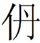
仃 1934、1935年时为《申报·自由谈》投稿者。——1936①8。伊 见伊赛克。
伊 东 即伊东丰作，日记又作伊藤，日本牙科医师，当时在北京八宝胡同开设伊东牙科诊所。——1923⑥20，22，26，28，30。⑦25，28。⑧1，8，10，25。1925①22。1926⑦3，8，10。1929⑤23，27。
伊 兰 见韦伊兰。
伊 吾 见骆宾基。
伊 君 见伊赛克。
伊 藤 见伊东。
伊 藤 未详。——1933④23。
伊立布 鲁迅购置宫门口西三条胡同房屋时，原房产主连海方面的中人。——1923（12）2。
伊罗生 见伊赛克。
伊法尔（А.А.Ивин，1885—1942） 应作伊文，俄国人。北京大学俄文教员。——1925⑦16。⑧11。
伊洛生 见伊赛克。
伊赛克（Н.R.Isаасs，1910—1986） 中文名伊罗生，日记又作伊、伊君、罗生、伊洛生，美国人。1930年到上海，任上海《大美晚报》记者，1932年时为上海出版的《中国论坛》（《China Forum》）编辑。1933年任中国民权保障同盟上海分会执行委员。1934年约请鲁迅和茅盾编选中国现代短篇小说集《草鞋脚》，随即往北平翻译。1935年7月回国。——1932⑦12。（12）29。1933②11，17。⑤28。⑦5。1934②28。③25。⑤28，30。⑦13，14，28。⑧20，22，25。⑨2。（11）27。1935③26。⑥25。⑩7，16。
伊君夫妇 见伊赛克、姚白森。
伊藤武雄（1895—1984） 日本人，中国社会政治研究者。1925年为满铁驻北京特派员。——1925⑨17。
伊藤胜义 日本人。基督教牧师，内山完造的老师。——1935⑦25。
向培良（1905—1959） 湖南黔阳人，狂飙社主要成员。1924年在中国大学学习时开始与鲁迅交往。1925年参加《莽原》周刊筹备工作，不久与吕琦、高歌往开封编辑《豫报副刊》，10月回京与高长虹等刊印《狂飙》不定期刊。1926年鲁迅为他选编小说集《飘渺的梦》，并介绍给北新书局出版。鲁迅赴厦门前在女师大的讲演系由他记录整理。鲁迅离京后不久他们的关系就逐渐疏远以至断绝。1929年后在南京主编《青春月刊》，反对左翼文学，提倡“为人类的艺术”和“民族主义文学”。——1924①9，27。③14。⑥21，29。⑦2，3，7。⑧18，29。（12）15，21，23，26。1925①9。②9，12，16，19，24。③1，5，12，15，22，23，24，26，29。④4，5，7，11，13，14，22，23，27，29。⑤5，9，13，22。⑥3，27，29。⑦4。⑧8，22，26。⑩12，27。（11）6，21，26，28。（12）1，3，5，6，12，17，21，22。1926①7，10，19。②1，7，8，14，24。③6，14，20。④7，10，14，22。⑦4，6，15，18，25。⑧5，8，12，14，23，26。⑨14。（11）21，23。
向培良友——1925③23。
企 莘 见潘企莘。
旭 生 见徐旭生。
名 肃 疑指孙伏园。——1926④25。
邬山生 见内山完造。
邬其山生 见内山完造。
庄一栩 未详。——1929⑦2。
庄启东（1910—1998） 原名起东，浙江镇海人，“左联”成员。曾任《春光》月刊及《新语林》半月刊编辑。后与蔡若虹编《漫画与漫话》时曾向鲁迅约稿。——1935①13。④18。
庄泽宣（1896—？） 浙江嘉兴人。早年留学美国。1927年间为中山大学文科教授兼教育研究所主任。——1927③28。1928②14。
庄奎章 福建惠安人。1925年北京师范大学国文系毕业，1926年时为厦门福建省立第十三中学教员。——1926⑨14，19。（12）16。
刘 三（1878—1938） 原名钟龢，字季平，号江南，上海人，南社诗人。民国后历任北京大学、北京高等师范学校、东南大学等校国文系教授。——1928⑧19。
刘 升 教育部的工友。——1915①7。1918⑧28。1919（12）29。1925⑨1。1929⑨25。
刘 仑 1913年生，广东惠阳人，版画工作者。1935年时为广东防城中学教员，自学石刻，同年9月参加广州现代创作版画研究会。——1935⑨17。
刘 军 见萧军。
刘 岘（1915—1990） 原名王之兑，字泽长，号慎思，笔名刘岘，河南兰考人，木刻家。他常将自己的作品寄请鲁迅指教，所刻的苏联特烈捷雅柯夫著《怒吼吧中国》一书的插图，曾由鲁迅代为修改说明；与黄新波合作的《无名木刻集》由鲁迅作序。鲁迅选编《木刻纪程》时，收录了他的作品四幅。——1934①8，11，16，25。②1，26。③5，10，12，14，25，28。④3，17，28。⑤18，23，28。⑥27，30。⑨16。⑩4，5，6，9，27。（11）5，9，12，21。（12）30。1935①6。②8，17，19，24，28。③4，9，15。④11。⑤31。⑧9。（12）9。1936③5。
刘 君 未详。——1925⑤2。
刘 君 未详。——1928②3。
刘 衲 又名刘一僧。余未详。——1928（12）21，28。1929①15。②15，21，25。③31。④3。⑤8，10。1930③17，22。
刘 瑀 见刘肖愚。
刘 穆（1904—1985） 原名刘燧元，后改名刘思慕，笔名小默，广东新会人，国际问题研究者，文学研究会成员。1929年时为上海远东图书公司编辑。曾往访鲁迅，并赠以据英文本所译苏联小说集《蔚蓝的城》一册。——1929⑥23，30。⑦8。
刘一僧 见刘衲。
刘大白（1880—1932） 原名金庆棪，后改姓刘，名靖裔，字大白，浙江绍兴人，诗人。上海复旦大学国文系主任兼附属实验中学行政委员会主任。——1926⑧30。
刘之惠（1907—？） 后改名刘惠之，云南易门人。北平女子文理学院讲师。1932年鲁迅赴北平省亲时，经范文澜介绍相识。次年4月寄予鲁迅在北平演讲的照片。——1933④7。
刘小芋 见刘肖愚。
刘小宇 见刘肖愚。
刘小愚 见刘肖愚。
刘子庚（1867—1928） 名毓盘，字子庚，浙江江山人。曾任杭州师范学校教员。1920年9月起任北京大学国文系教授。曾将自作诗词集《濯绛宦存稿》赠与鲁迅。——1925③20。
刘历青（1876—约1920） 名声元，字历青，日记又作立青、雳青，四川万县人。周作人在南京水师学堂时的同学。1911年四川保路运动时为保路同志会赴京请愿代表，民国初年曾任陆军部修浚宜渝滩险处处长。——1912（11）10。（12）1。1913②23。1914③26。⑧4。（11）22。1915①2。⑦16，18，19。⑧5。1916⑦16。（12）1。1917（11）11。1918①28。⑦16。1919⑥8。
刘文贞（1910—1994） 日记又作霁野学生，天津人。李霁野夫人。1935年时为河北女子师范学院英语系学生。她所译英国约翰·布朗的《莱比和他的朋友》由李霁野转寄鲁迅，发表于《译文》第二卷第五期。——1934（12）7。1935⑧8。
刘文铨 上海篠崎医院翻译。——1932（12）30。
刘立青 见刘历青。
刘半农（1891—1934） 名复，号半农，又作半侬，江苏江阴人，作家、语言学家。1917年任北京大学预科教员。参加《新青年》编辑工作时与鲁迅相识。1920年留学欧洲，得法国国家文学博士学位。1925年归国后任北京大学国文系教授、《世界日报副刊》编辑、北平大学女子文理学院院长等职。1926年校勘、标点《何典》，鲁迅为之作《〈何典〉题记》。1934年病逝后，鲁迅为作《忆刘半农君》。——1918②10。④5。⑦15，16，21，31。⑧6，8，17，29，30。⑨4，19，21。⑩7，9，10。（11）28。（12）11，17，22，26，29。1919①5，7，12，24。②4，23。③29。④10，13，16。⑤4，18。⑥11。⑦5，10。（11）10，23。1920⑥22。1921⑧9，30。1926①10。③7。⑤11，18，20，24，26，27。⑥16，18，22，23，24，28。⑦1，2，4，5，10，11，14，27。⑧2，11，22。1928⑧4。1933③1。
刘亚雄（1901—1988） 山西兴县人。北京女子师范大学学生，三一八惨案后由中共党组织派往苏联莫斯科中山大学学习，8月20日来向鲁迅辞行。——1926⑧20。
刘达尊 见刘肖愚。
刘同恺 字濬吾，湖南新化人。时任教育部文书科主事。——1921⑥6。
刘弄潮（1905—1988） 四川灌县人。1925年春在北京女师大社会主义青年团任交通员，曾受李大钊指示请鲁迅指导青年工作。1927年初为广州中央学术院讲师。——1925③27，28，29。④14，20。1927①25。
刘肖愚 名瑀，又名肖愚，字达尊，日记又作刘小芋、刘小宇、刘小愚，湖南长沙人。1927年初为中山大学秘书处书记员，同年3月往武汉，任职于《中央日报》。1928年起在上海暨南大学任历史教员，常给《奔流》投稿。——1927②1。④13。⑤23。（11）2。（12）28。1928①2，19，24，31。②10，12，13。③4。⑤22，27。⑧26。⑨6。（11）18，21。（12）28。1929⑦8。（11）25。（12）3，22。1932（11）26。1934③18。1936⑩14，15。
刘叔琴（1893—1939） 名祖徵，字叔琴，浙江镇海人。曾在宁波浙江省立第四中学、上虞私立春晖中学、上海立达学园教书。——1926⑧30。
刘叔雅（1890—1958） 名文典，字叔雅，安徽合肥人。1919年为北京大学国文系教授，1929年为清华大学国文系主任，后任安徽大学文学院院长。——1919③29。1929⑤20。
刘国一 湖南芷江人。1926年时为厦门大学法科政治系学生。——1927③7。④24。⑤27。
刘和珍（1904—1926） 江西南昌人。1923年考入北京女子高等师范学校英文系，不久被选为学生自治会主席。三一八惨案中牺牲。鲁迅曾参加其追悼会并作《记念刘和珍君》。——1926③25。
刘秉鉴 河北人。齐寿山托保应县知事考试者。——1914②5。
刘侃元 字济訚，笔名范沁仪，日记又作范沁一、沁一，湖南醴陵人。1927年在广州中山大学任教，1929年在上海从事翻译工作，1930年先后在北平大学、中国大学等校任教授。——1927②27。③3，5，25，27。1929（11）7，24，28，30。1930①14。
刘念祖 见刘履阶。
刘炜明（1908—？） 广东大埔人。1934年间在新加坡经商，因希望得到鲁迅新作与鲁迅通信。——1934⑩30，31。（11）28。（12）26，31。1935①23。②1，5，6。④27。⑦6。
刘宗德 未详。——1935（11）25。（12）16。
刘绍苍 辽宁辽阳人。北京大学哲学系学生。——1928（12）28。
刘栋业（1897—1969） 福建福州人。中法大学孔德学院教授兼教务长。在张凤举等招待鲁迅的宴会上偶与鲁迅同席。——1929⑤27。
刘省长 见刘镇华。
刘勋宇 见刘薰宇。
刘重民 见李宇超。
刘前度 又名刘随，1927年2月鲁迅在香港讲演《老调子已经唱完》时，他曾作记录。——1927③2，4。
刘济舟 名乃弼，字济舟，安徽人。鲁迅在南京矿路学堂和东京弘文学院时的同学。——1915①7，10，16。
刘冠雄（1858—1927） 字子英，号资颖，福建闽侯人。曾留学英国，民国以后任海军总长。1913年1月28日以海军总长兼任教育总长，因部员反对，于3月19日辞去兼职。——1913②5。
刘
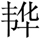
鄂（1913—1938） 名暐，字鄂，日记误作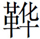
鄂，河南信阳人。上海美术专科学校学生，因爱好木刻，写信向鲁迅请教。——1936③22。④13。刘梦苇（1900—1926） 原名国钧，湖南安乡人，诗歌作者。——1925⑦8。⑩16。
刘雪亚 见刘镇华。
刘雪雅 见刘镇华。
刘雳青 见刘历青。
刘策奇（1895—1927） 笔名啸真，广西象县（今象州）人。民俗学研究者。早年在家乡教书，1924年为北京大学歌谣研究会通讯会员。曾通过鲁迅在《莽原》周刊发表《一本通书看到老》一文。——1925④9。⑥20。⑩21。
刘楚青（1893—？） 名树
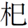
，字楚青，湖北新埔人。1926年间为厦门大学教务长、秘书，兼理科主任。——1927①3，4。刘楫先（约1872—？） 名川，字楫先，浙江上虞人，数学教师。鲁迅在绍兴府中学堂任教时的同事，民国后绍兴府中学堂改称浙江第五中学，刘仍在该校任教。——1912⑦7。1913⑥28。1916（12）8。
刘锡愈 山东郯城人，北京大学国文系学生。——1926⑤27。
刘暮霞 1916年生，广东人。上海复旦大学学生。——1935（12）4，12。
刘鄂 见刘鄂。
刘镇华（1883—1953） 字雪亚，日记又作刘雪雅，河南巩县人，陕西省督军兼省长。——1924⑧3，10。
刘履阶 名念祖，字履阶，四川汶川人。教育部秘书。——1917②5。
刘冀述 河南郑州机关枪营营长。——1924⑧11。
刘燧元 见刘穆。
刘薰宇（1896—1967） 名家镕，字薰宇，日记误作刘勋宇，贵州贵阳人。上海开明书店编辑。——1926⑧30。
刘三夫人 见陆繁霜。
齐 坤 日记误作徐坤，又作工、仆、仆人、佣，原籍浙江绍兴，绍兴县馆长班之长子。鲁迅寓县馆时由他照料生活，后来为八道湾周寓的门房兼管采买。——1914①31。⑤28。⑧11。1915⑥16。⑨4。1919（12）29。
齐如山（1876—1962） 名宗康，字如山，河北高阳人。戏曲理论家。齐寿山之兄。1915年9月被聘为通俗教育研究会戏曲股名誉会员。鲁迅在张勋复辟和三一八惨案后的两次避难中，曾得到他和齐寿山的帮助。——1913⑨5。1915⑨29。1926④28。
齐寿山（1881—1965） 名宗颐，字寿山，河北高阳人。曾留学德国。1912年任教育部社会教育司第三科科员，后改任视学。1925年鲁迅被章士钊非法免职时，他与许寿裳发表《反对教育总长章士钊宣言》。在张勋复辟、三一八惨案后曾帮助鲁迅避难，1926年协助鲁迅翻译《小约翰》。1927年秋蔡元培就任大学院院长，他往南京任该院秘书，直至蔡离任。1929年时在甘肃西北军邓宝珊部工作。——1912⑥10，18，27。⑧20。（11）20。（12）12。1913②5，27。③1。④1。⑤5，8，29。⑥14，16。⑨2，4，5，28。（12）23，25，26。1914①10，30。②5。③17，18。④6，14，30。⑤9，14，30。⑦2。⑨1，4。⑩26。（11）3，5，6，7，16，19。（12）7，8，11，12，21，24，28，29，31。1915①1，13，16，18，23，30。②4，5，8，11，12，22。③1，3，6，13，26，27。④6，17。⑤8。⑥22，26。⑦31。⑨10。⑩30。（11）15，22。1916①21，26。⑦9，21。⑨6，21。（11）14，29。（12）2。1917①8，15，17。⑤13，16。⑦3，7，12，24，31。⑩12，23，29，31。（11）1，3，7，16，17。（12）25，28，29。1918①8，10，23，26，28。②1，9，28。③11，15。④19。⑤10。⑥18。⑦2，20。⑧31。⑩11。（12）6，10，28，30，31。1919①16，17。②11，13。③26。④12，14。⑤2。⑥1。⑨18。（11）13。（12）31。1920②9，16，17。③4。④21。⑤11，22。⑦9，10，13，27，29。⑧20，24。⑨25，28。⑩11，27。（11）16，27。（12）2，15，28，31。1921②3。③29。④5，12，26，27，28。⑤3，24。⑥4，6。⑨3。（11）3，9。1923⑨22，24。⑩9。（12）1，7，13，15。1924①14，19。④9，14，25，30。⑤20。⑥24。⑦5。⑧16。⑨10。1925④1，28。⑥22。⑦22。⑧5，7，17，20，26。⑨4，12，13，17。⑩15，20，25，28，31。（11）11。1926②3，5，23，25。③22，23，24。④9，10，15，16，18，20，22，26，27。⑥3，7，26，28。⑦3，6，10，28。⑧13，21，27。（11）24。1927⑩26。1928①16，25。②17，25。③1，2。④7。⑤4，18。⑥22。⑩30。（11）5。1929①31。1932（11）15。
齐宗颐 见齐寿山。
齐涵之 见史济行。
齐耀珊（1865—？） 字照岩，吉林伊通人。1921年下半年为农商部总长兼教育部总长。——1921（12）29。
齐寿山第三子——1926④9。
亦 志 未详。——1934⑤22。
衣 萍 见章衣萍。
关 生 未详。——1927⑨26。
关先生 见关来卿。
关来卿 名维震，字来卿，日记又作关先生，浙江杭州人。京师图书馆分馆主任。——1913⑥6，12，17。⑧12。⑨13，15，18，23。⑩17，19，26。（11）15。（12）7。1914①17，22，26。②18。③14。④5。⑤30。
关卓然 名鹏九，字卓然，浙江杭州人。在杭州浙江两级师范学堂与鲁迅同事。1914年时在北京财政界任职。——1914⑤17。
米和伯 德国人。莱比锡“万国博览会”驻北京筹备所负责人。——1913（11）20，21。
冲 见周冲。
次 长 见董恂士。
次 长 见梁善济。
江 丰（1910—1982） 姓周，原名介福，后改名熙、江丰，上海人。画家，一八艺社成员，“美联”负责人之一。1931年夏参加鲁迅主持的暑期木刻讲习班，其后曾组织春地美术研究所和铁马版画会。1932年7月与艾青等同时被捕，同年12月底在狱中与艾青写信向鲁迅借书。1933年夏获释，10月再次被捕，12月通过倪风之向鲁迅借阅原版《珂勒惠支版画集》。1935年出狱后曾函请鲁迅代谋工作。——1932（12）31。1935⑩3。
江 石 未详。——1927（11）22。
江叔海（1858—1935） 名瀚，字叔海，福建长汀人。京师图书馆馆长，1913年初调任四川盐运使。——1912⑨30。1913①13。②17。
江岳浪 曾将自著诗集《路工之歌》寄赠鲁迅。——1935（12）12。
江绍原（1898—1983） 又名绍平，安徽旌德人，宗教学和民俗学家。1924年为北京大学讲师，《语丝》撰稿人之一。1927年4月经鲁迅介绍至中山大学英语系任教，同年暑假离中山大学赴杭州，后任大学院特约著作员。——1927③2，31。④1，4，14，15，19，22，24，27，30。⑤4，6，9，11，13，18，20，23，25，28，29。⑥1，5，11，13，17，22，23，26，30。⑦3，13，15，20，27，28，30。⑧2，7，17。⑩4，15，16，17，18，21，26，28。（11）1，6，8，12，15，17，18，21，25，26。（12）2，5，10，15，19，24，26，30。1928①6，11，16。②21。③4，6，27。④13。⑨19。（11）4。1929①24。⑩22。
江绍原夫人 见朱玉珂。
池 田 日本医师。当时在北京石驸马大街开设池田医院。——1912（12）10。1913③19。1914⑤14。1916⑩31。
池叔钧 陈子英家的仆人。——1913②26。④8。
池田幸子（1911—1973） 日记作鹿地夫人，日本人。当时是鹿地亘之妻。——1936⑧23。⑨17，23。
汝 珍 见曹靖华。
汝 兼 见沈汝兼。
汤 见艾芜。
汤日新（1897—1951） 字又斋，江西广丰人。1929年为浙江绍兴县县长。——1929②6。
汤化龙（1874—1918） 字济武，日记又作汤总长，湖北蕲水（今浠水）人。1914年5月1日任教育总长，次年10月5日去职。——1914⑤4。1915③29。
汤尔和（1878—1940） 本姓沙，名槱，字尔和，浙江余杭人。与鲁迅同期留学日本，原习陆军，后改学医。归国后任杭州浙江两级师范学堂校医。民国以后长期任北京医学专门学校校长，1922年曾任教育部次长、总长等职。抗日战争时期曾任日伪临时政府议政委员会委员长、汪伪华北政务委员会常务委员、教育总署督办等职。——1913⑧18。1914①5。1916（11）27。1917⑥9。1918⑦30。⑧29，30。1919⑧21。1920⑤29。⑧16。
汤兆恒（1907—1977） 日记误作姚君，浙江诸暨人，许寿裳长婿。上海英商万泰洋行工程师。——1935⑦7。
汤咏兰 日记作芷夫人、阿芷夫人。1910年生，湖南益阳人。叶紫夫人。1936年10月间曾将叶紫病重情况函告鲁迅。——1936⑤13。⑩6。
汤总长 见汤化龙。
汤振扬 见汤增敭。
汤哲存（1876—1946） 名孝佶，字吉人，号拙存，又作哲存，浙江绍兴人。汤寿潜之子。曾留学日本，当时在教育部任职。——1912⑧31。
汤爱理（1882—？） 名中，字野民，江苏武进人。北洋政府时历任教育部参事、主席参事、司长、次长。——1929（11）2，7，8，13。
汤聘之 来雨生托保应县知事考试者。——1914④6。
汤增
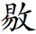
（1908—？） 日记作汤振扬，浙江吴兴人。曾编辑《草野》半月刊（后改为周刊），宣传“民族主义文学”。——1928⑩18，29。1930④7，9。汤鹤逸（1900—1968） 陕西汉阴人。北京大学毕业，曾留学日本，1925年回国，为北京《晨报》翻译日本小说。——1925（11）16。
宇 都 日本人。时在上海开设宇都齿科医院。——1929⑦19，20。
宇留川（1901—？） 即宇留河泰吕，日记又作パン·ウル，日本画家。1928年春与国木田虎雄、金子光晴等同到上海，经内山完造介绍认识鲁迅。——1928④2。（11）7，15。1929④27。
守 常 见李大钊。
安 平 见储安平。
安 弥 见萧三。
安 藤 日本人。东京高等师范学校大塚童话会会员。应内山完造之请，与斋藤、福家到上海为日本儿童举办童话会，担任讲师。——1930④6。
冰 山 见彭柏山。
冰 莹 见谢冰莹。
祁伯冈 名锡蕃，字伯冈，日记又作柏冈，河北永年人。教育部社会教育司主事，通俗教育研究会讲演股会员。——1913⑩2。（12）21，28。1914①25。②12。③29。⑤30。⑥7。（12）31。1915②13。④25。⑥13。⑩4，5。1916①26。⑧6。（11）5。（12）1。1917①14。
祁柏冈 见祁伯冈。
许 见许羡苏。
许 妈 日记又作许媪，海婴的保姆。——1931①20。1932④23。⑤10。⑨24。1934④15。
许 君 未详。——1927①30。
许 杰（1901—1993） 浙江天台人，作家，文学研究会会员，暨南大学教授。蒋径三坠马而死后，他曾函请鲁迅写纪念文章。——1936⑨18。
许 姓 王镜清的同学。——1913（11）23。
许 姓 当为许士熊，字吕简，江苏无锡人。与顾养吾同乡，1913年起任教育部秘书。——1914①16。
许 深 未详。——1936⑨2，4。
许 媪 见许妈。
许广平（1898—1968） 号景宋，日记又作害马、许小姐，广东番禺人。鲁迅夫人。1922年考入北京女子高等师范学校国文系。1925年为学生运动、教育改革等问题与鲁迅通信。1926年毕业后与鲁迅同离北京。鲁迅赴厦门，她返广州，任职于广东省立女子师范学校。1927年1月鲁迅就任中山大学文学系主任兼教务主任时，她被聘为鲁迅的助教。9月，与鲁迅同赴上海共同生活。——1925③11，12，16，19，21，24，27。④1，6，7，9，11，12，15，17，21，23，24，27，28，29。⑤1，3，10，17，19，20，27，28，31。⑥1，2，6，13，14，18，20，27，29。⑦1，2，4，6，10，13，15，16，18，19，21，27，28，30。⑧14。⑨7。（11）8。1926②3，28。③6。④18。⑥21。⑧3，8，12，13，15，16，21，26，28，29，30，31。⑨5，13，14，17，18，20，22，24，27，30。⑩1，4，5，11，12，15，16，18，20，21，23，24，27，29，30。（11）1，2，4，5，8，9，10，11，16，18，19，20，21，22，26，27，29。（12）2，3，6，7，12，13，14，16，21，23，24，25，30。1927①2，3，5，6，7，11，12，18，19，20，21，22，24，25，30，31。②1，2，8，9，18，19，20，21，22，23，26，27。③1，2，5，6，7，11，13，16，18，20，21，26。④1，6，11，14，19，22，24。⑤3，4，17。⑥9。⑦1，2，16，23，26。⑧2，11，13，15，19。⑨11，24，27。⑩3，4，5，7，8，9，12，15，16，17，18，22，23，24，25，29。（11）5，8，14，19，30。（12）1，6，14，17，19，20，22，24，25，31。1928①4，6，9，13，16，19，20，22，26。②4，18，26。③10，13，21，22，30。④2，5，25。⑤4。⑥2，12，24。⑦2，6，9，12，15，17。⑧4。⑨2，27。⑩10。（11）3，5，24，25。（12）1，25，30。1929①8，11，18，26。②8，11。③8，17，31。④5，9，25，27，28，30。⑤2，8，12，16，18，20，21，22，23，24，25，27，28，29，30。⑥1，7，8，10，11，12，13，15，16，26。⑦19，25。⑧8。⑨5，20，26，27，28。⑩1，3，5，10，17，24。（11）26，30。1930①4，9，31。②6，12，25，28。③3，21，22，23，24，25，26，27，28，29，30，31。④1，6，7，8，9，10，11，12，13，14，15，16，17，18，19，23，24，30。⑤1，2，8，12，13，29。⑥16。⑦4，5，6，8，9，10，11，13，16，18，19，20，24，29。⑧18。⑨17，24，25，30。⑩2，4，6，8，12，28，31。（12）11，12。1931①5，20。②1，28。③4，8。④3，20，25，26，30。⑤8，15，16，31。⑥2，3，4，12，23，27，28。⑦1，2，4，14，16，22，28，30。⑧5，10，12，15，16，23，24，30。⑨7，13，17，20，26。⑩3，7，9，11，14，17，18，20，26，30。（11）13，15，21，23。（12）4，6，8，11，31。1932①4，10，12，18，20，22，23，25，27，28。②15。③16，18，20，24，28。⑤6，7，9，10，30。⑥1，3，5，7，9，14，15，18，26，30。⑦1，3，14，16，21，22，26，30。⑧7，9，11，29，31。⑨1，6，8，15，17，18，19，21，23，25，27，29。⑩1，3，5，7，9，11，12，13，15，17，19，21，23，25，27，28，31。（11）7，9，13，14，15，16，17，18，20，21，22，23，25，26，27。（12）9，26，28，30。1933①4，15，19，25，31。②19，20。③13，19，23。④2，7，8，14，20，23，29。⑤2，9，10，15，20，30。⑦4，8，11。⑧2。⑨13，15，20，22。⑩11，14，15，19，20。（11）18。（12）3，18，23，25。1934①7。②4，19，20，22。③7，11，22，29。④2，3，7，8，14，15，20，21，24，25，27，29。⑤1，4，5，18，22，25，31。⑥2，8，11，14，15，16，23，30。⑦4，13，16，30。⑧7，14，16，24。⑨9，15，16，17，21，22，27，28。⑩3，4，6，7，10，11，14，16，22，28。（11）6，8，14，20。（12）19，30，31。1935①2，10，11，28，29，30。②1，16，25，28。③5，11，12，18，19，21，23，25，27，29，31。④2，4，8，9，11，20，21，30。⑤2，4，7，11，26，28。⑥16，17，26，29。⑦7，15，21。⑧5，6，9，14，17，19，25，28。⑨1，8，14，15，24，27。⑩1，3，10，20，21，23，25，27。（11）3，10，12，13，15，20，24，26，27。（12）6，11，23，29。1936①2，4，12，13，15，19，29。②4，11，12，15，19，23，25，28。③28。④11，13，18，26。⑤7，10。⑦15，16。⑧1，5，7，11，14，21，29。⑨27。⑩1，4，6，10，11，15。
许小姐 见许广平。
许小姐 见许羡苏。
许天虹（1907—1958） 浙江海盐人。许粤华之兄。1928年至1929年间在上海劳动大学编辑馆任助理员，后从事翻译工作。曾将自己的创作和译作寄请鲁迅介绍发表。——1928（11）5，29。（12）20。1929②2。
许仑音（1914—1935） 原名蔡思诚，浙江德清人。北平师范大学学生，平津木刻研究会成员，参加筹办第一次全国木刻联合展览会。——1934（11）20。
许月平（1916—2004） 广东番禺人。许广平之幼妹。曾协助鲁迅管理广州北新书屋业务。——1927②27。③6，21。④24。⑧2。
许以敬 安徽贵池人。1924年为北京女子高等师范学校国文系学生，与许广平同班。——1924（12）7。
许世玚 1924年生，浙江绍兴人。许寿裳五女。1934年时在上海念书，因患甲状腺机能亢进，许寿裳函请鲁迅代为介绍医生诊视。——1934⑩23。（11）26，28，30。
许世瑛（1910—1972） 字诗英，日记又作世英，浙江绍兴人。许寿裳长子。鲁迅曾为他开蒙。1930年考入清华大学国文系时又为他开列应读文学书目。1936年毕业于清华大学研究院。——1914②5。1915⑩31。1916②20。⑩10。1918①1。⑤13。1924⑥21。1926⑧21。1930⑦13。1932（11）27，28。1935⑦6。
许世琠 1920年生，浙江绍兴人。许寿裳四女。1935年间在南京金陵女中求学。——1935⑦8。
许世琯（1912—1966） 浙江绍兴人。许寿裳长女。——1935⑦7。
许世瑾 见许诗芹。
许东平（1900—？） 广东番禺人。许广平之妹。——1927⑧14。
许永康 名泽新，字永康，四川人。刘历青之友。曾任法制局佥事、京师高等检察厅检察官等职。——1914（11）22。
许光希 未详。——1936③10，15，18，22。④14。
许先生 见许寿裳。
许仲南（1873—1939） 名寿棠，字仲南，浙江绍兴人。许寿裳的二兄。曾任山东博山、莱阳等县知事。——1914②10。⑩18，24。
许寿裳（1883—1948） 字季茀，又字季黻，号上遂，日记又作季巿、许先生，浙江绍兴人，教育家。鲁迅在日本东京弘文学院的同学。1909年回国，任杭州浙江两级师范学堂教务长，曾邀鲁迅前往教书。民国成立后向蔡元培推荐鲁迅入教育部。教育部迁京后受任为佥事、科长、参事。1917年任江西省教育厅厅长，1920年冬回教育部。1922年至1924年任北京女子高等师范学校校长。1925年8月鲁迅被章士钊非法免职后愤而辞职。1927年经鲁迅推荐任中山大学教授。四一五事变后一同辞职。后历任大学院参事、秘书长，中央研究院文书处主任，北平女子文理学院院长等职。——1912⑤12，13，17，18，19，26，31。⑥1，2，13，19，23。⑦3，6，10，14，17，19，20，22，27，28，30。⑧1，2，9，10，14，16，22，28，31。⑨1，3，4，6，7，8，11，13，19，21，25，27。⑩2，6，10，19，22，25，26。（11）6，9，21，24。（12）22，27，28，31。1913①1，2，5，19，28，29。②3，5，8，10，27。③1，4，6，9，16，18，24，26，27。④8，25，28。⑤4，5，18。⑥16。⑧8，11，12，18，30。⑨21，26，27，28。⑩4，7，22，27，31。（11）3，8，9，14，17，19，21，22，27，29。（12）2，3，6，11，13，14，15，19，22，24，27，28，30，31。1914①1，12，16，17，20，21，28，31。②1，2，3，4，5，6，9，10，21，25，27。③11，13，28，30。④4，5，8，9，17，23。⑤1，5，8，13，15，16，20，26，29，30。⑥1，3，4，9，10，20，21，22。⑦3，21，26，27，28，31。⑧7，11，19，22，25，26，30。⑨6，17，23。⑩1，4，18，24，25。（11）20，25。（12）1，4，12，13，15，19，23，24，30，31。1915①1，11，26，31。②1，4，5，11，14，15，23，25。③1，14，21，26。④29。⑤9，10，11，18，21，29，30。⑥4，6，9，17，19，20。⑦4，13，18，19，24，28。⑧7，26。⑨2，18，23，27，30。⑩13，28，31。（11）2，16，29。（12）6，19，31。1916①23，26。②4，5，19，20，26。③13，15。④1，12，14，23，30。⑤11。⑥5。⑦2，9，19，20，31。⑨4，21，26。⑩8，10，18。（11）4，16，21，29。（12）2，9，20，30。1917①8，12，21，22。②4，6。③7，20，25，31。④19，22。⑤12，14，16，19，21，24，26，28。⑥4，17，23。⑦1，13。⑨9，10，11，13，16，18，21，23，26，29，30。⑩5，6，7，12，16，18，20，26，31。（12）24。1918①2，5，23。②27。③11。④1，11，19，20。⑤6，13，29。⑥17，19。⑦31。⑧5，21。⑨25。⑩30。（12）24。1919①4，16。②4，10。③13。⑤12。⑧7。⑨18。（11）16。1920②3。④8。（12）24，26。1921①6。④1。⑦10，19。⑧6，26。⑨30。（11）5，28。（12）16。1922①14，27。③6，17。⑦16，28，31。⑧10，29。⑨21。⑩5，30。（11）15，17，18，20，22，29。（12）6，7，19，21。1923①5。③28。④19。⑤24。⑥6。⑦31。⑧14，16，24。⑨26。⑩8，9。（12）1，11，12，22，24，26。1924②14。③3。④9，19。⑤6，19，26。⑥21。⑦1，4，5，24。⑧15，25。⑩3，25，28，30。（11）20。（12）8，21。1925①16。③9，12，19，28。⑤11，30，31。⑥4，17，24。⑦11，22。⑧1，5，7，14，15，17，18，19，20，21，22，23，24，25，26，28，29，31。⑨1，4，8，9，11，15，17，18，22，25，27，28，29。⑩4，5，8，9，12，17，19，20，24，26，27，30，31。（11）7，11，13，16，21，28，29，30。（12）2，4，5，8，9，16，20，24，27，29。1926①3，6，7，9，10，12，14，15，16，20，24，30。②2，4，5，7，9，14，24，26。③3，7，9，15，16，21，22，24，25，26，27。④1，2，3，5，7，8，10，11，12，15，26。⑤4，7，10，12，13，21，28。⑥4，7，13，18，19，21，25，30。⑦7，10，12。⑧1，7，11，13，16，19，21，24，26，28。⑨8，29。⑩4，19。（11）5。（12）28，30。1927①11，12，28，30，31。②1，14，17，20，21，22，23，26，27。③2，5，6，7，11，13，16，18，20，21，26。④1，19，22，24。⑤3，5。⑥5，9，23。⑦16，19。⑩5，8，12，17，18，21，22，24。（11）11，14。（12）16，22，29，30。1928①6，15。②4，17，29。③11，14，20，23，25，27。④7，10。⑤4，10，18。⑥2，3，4，23。⑦7，9，23。⑧24。⑨10，29。⑩3，22。（11）2，5。（12）16，17，25。1929①9，18。②7，19，25。③1，5，6，23，24，27。④9。⑤1，3，7。⑥13，21，23，30。⑦10，12，31。⑧26。⑨1，3。⑩5，14，20，23，28。（12）2。1930①10，11，20。②11，12，16。③8，16。④9，17。⑤1，29。⑥1。⑦8，12，13，16，30。⑧8。⑨16，19。⑩14。（12）6，30。1931①21。③4。⑤23，27。⑧24。⑩6。1932①11。②22。③1，2，13，15，22。④11。⑤15，30。⑥8，13，18，26，29。⑦27。⑧1，2，4，11，13，17，18，20。⑨19，21，28。⑩25。（11）3，26。（12）2，3，31。1933①9，20，25，26。②3。③1，3，9，31。④15，16，20。⑤3，9，10，17，27。⑥19，20。⑦2，30，31。⑧19，20，27。⑨19，27。⑩25，26。（11）7，14。（12）29。1934②9。③29。④1，9，26。⑤3，9，21，22，23，29。⑥1，5，14，24，29。⑦5，31。⑧7。⑩23，27。（11）3，19，27。（12）9，27。1935①9，13。②1。③23。④2。⑤20，26，27。⑦2，6，7，8，20。⑨2。（12）2，5。1936④4，6，23，24。⑤10，29，31。⑦1，4，17，20，27。⑨26。⑩16，17。
许声闻 见许涤新。
许伯琴（1886—1958） 名文溥，字伯琴，浙江绍兴人。杭州浙江两级师范学堂毕业，1911年任山会初级师范学堂教员。——1918①7。
许希林（1900—？） 江苏吴县人，美国杜邦（Du Pont）上海分支机构职员。与孙君立、周建人同寓景云里，合请一厨师，鲁迅、许广平初迁入景云里时曾临时入伙共餐。——1927⑩23。（11）19。
许叔和（1896—1942） 广东番禺人。许广平之三兄。——1929（11）5，26。1930⑥5。1932⑩17。
许叔封 魏福绵托保应县知事考试者。——1914①31。
许季上（1891—1950） 名丹，字季上，浙江杭州人。佛教徒，精通梵文，历任教育部主事、视学、通俗教育研究会编审员。1914年鲁迅刻印《百喻经》系由他经手。1917年上半年在北京大学兼课，讲授印度哲学。后去开滦煤矿任职，曾被派往南洋考察。——1912（11）18，20。（12）2，12，14。1913①11。②2，3，27。③23。④4，6，7。⑤28。⑥11，12。⑧8，12。⑨21。⑩10，12，18，23。（11）16，20，26。（12）18。1914①2，3，4，13，15，17，20，25，30。②5，6，8，22。③3，9，22，26，27。④15，24，30。⑤3，9，14，23，29，30。⑥14，21。⑦2，4，8，19，27，29。⑧9，12，19。⑨7，8，11，13，14，16，17，19，23，26。⑩4。（11）7，13，22。（12）7，8，12，20，22，31。1915①1，11，14，26。②5，7，21。③14，20。④3，13，17，25。⑤1，3，10，16，17，18，22。⑥6，13，17，19，20，27。⑦4，8，9，11，15，19，23，25，30，31。⑧5，7，8，15，16，23，28。⑨5，7，10，14，24，27。⑩2，9，15，24，26。（11）4，5，15，26。（12）4，17，21。1916①1，16。②5，8，9，11，14。④22，27。⑤28。⑥9，15。⑦3，20，21，29。⑧4，13，17，20。⑨2，3，16，21，24。⑩11，19。（11）9，14，21。（12）1，2，5，9，18，26，28，29。1917①8，17，22。③25。④7，23，29。⑤13，15。⑥10，23。⑦4，6，15，31。⑧5。⑨9，20。⑩12，19，24，27，31。（11）1，5，7，8，11，17，22。（12）1，6，14，25，29。1918①8，19，26。②1。④14。⑤21。⑧31。⑨14，19。⑩10。（11）17，29。1919①31。②2。④27。⑤11。⑦8，11，17，26。⑧5，9。（12）13，14。1920④1。⑩24。（11）3。（12）23。1921④29。⑤8。1922①27。1926②23，26，27。1928⑦2。
许季巿 见许寿裳。
许季茀 见许寿裳。
许季黻 见许寿裳。
许诗芹（1903—1988） 名世瑾，字诗芹，日记又作许世堇、许诗荩、诗堇，浙江绍兴人。许铭伯之幼子。1919年上半年在京师第一中学读书，暑假后考入北京医学专门学校，1923年毕业。1926年时为北京医科大学助教。1928年3月起任上海市卫生局科员。——1919④27。⑦2。⑩2。（11）9，16。1926⑥19。1928③11。⑦9。
许诗苓（1886—1959） 名世琳，字诗苓，浙江绍兴人。许铭伯长子。1912年至1919年间在汉口中国银行工作。——1912⑩10，22。1913（12）14。1914②10。1919③30。
许诗荃（1895—1969） 名世璿，字诗荃，浙江绍兴人。许铭伯次子。1917年北京大学化学系毕业，1923年间曾在北京女子高等师范学校任职。1925年底往兰州任甘肃省政府秘书、主任秘书等职。——1912⑤12，26。⑥2。⑧25。⑩10。1913①19。②5。⑤17。⑥14。⑩22。1914③25。⑤7。⑥1，9。⑦10。⑧13，31。（11）8。（12）25。1915⑥28。⑦1。⑩15，31。（12）26。1916⑥17。⑩10。1917①23。④1，22。⑤8。⑥24。⑧26。⑨23。⑩14，18。（12）9。1918①1。④9，10，11。⑦14。⑧6。（12）29。1919②16。③30。⑦7，22，23。⑧17，31。1920①25。②20。1923⑩13，22。（12）11，21，24，26。1924⑤23，27。1925③22。⑤31。⑧14，26。⑨5，20。（11）1。（12）20。1926①26。⑤31。⑧5。
许诗荀（1900—1930） 名世珣，字诗荀，浙江绍兴人。许铭伯第三子。1922年北京大学化学系毕业。后在北洋政府实业部任职。——1918（12）29。1919⑥6，12。⑧17。1920③23。⑥6，18。1924③18。1925③22。1927（12）27。1928③11。⑦9。
许诗荩 见许诗芹。
许诗堇 见许诗芹。
许省微（1899—1967） 名绍舜，字心微，又作省微，日记又作星微，浙江绍兴人。许钦文三弟，经商。——1928⑦15。1932⑨3，5。1934④21。
许拜言（1902—1994） 名赞禹，字拜言，浙江绍兴人。许钦文的幼弟。当时在杭州任小学教员。1933年间许钦文入狱后，曾函请鲁迅设法营救。——1933⑩4，10，22。（12）20。1934①18。
许钦文（1897—1984） 名绳尧，笔名钦文，浙江绍兴人，作家。1920年间在北京大学旁听鲁迅讲课。1923年初由孙伏园介绍与鲁迅结识。其后在创作方面曾得到鲁迅很多帮助，他的短篇小说集《故乡》由鲁迅编选，收入《乌合丛书》。1932年至1934年间因受陶思瑾、刘梦莹案件牵连，两次入狱，经鲁迅托蔡元培等设法营救获释。——1923①15。⑧25，26。⑨16。⑩20，28。（11）27。（12）30。1924①1，13，17。②3，6，17，24。③9，23，27，28。④6，12，15，20。⑤6，18，25，29，30。⑥8，20，22。⑦1。⑧17，23。⑨1，11，21，25。⑩12，22，29。（11）2，3，5，9，23。（12）3，7，10，17，25，27。1925①1，6，15，18，20，22，25，31。②4，11，15，21，27。③4，15，16，18，19，22，24，27。④4，6，11，13，15，22，27。⑤2，3，12，16，19，24，31。⑥5，7，9，18。⑦17。⑧2，4，6，8，14。⑨3，13，28，29。⑩1，9，13，14，30。（11）7，11，19，24。（12）1，27。1926①5，6，23，26。②1，7，8，15，26，27。③3，26。④12，18，23，24。⑤12，30，31。⑥6，17。⑦7，11，12，15，18，20，22，27。⑧2，10，11，16，20，21，24，26。⑩10，12，22，25。（11）7，25，30。（12）24。1927①28。②10，21。④13，15，21。⑤3，13，18。⑥5。⑩4，5，6，15，18。（11）13，14。（12）16，17。1928①13，16，20。②18，22，25，29。③5，6，19，22，26，27，31。④1，3，5，9。⑤12，13，17，18。⑥2。⑦6，7，9，10，12，14，15，17，18，20，23，30。⑧1，21，25，29，30。⑨11，18。⑩1，9。（11）2，21，29。（12）4。1929①20。②21，27。③2，3，8，9，14，24，28。⑤21，24。⑥13，17，19，28，30。⑦2，10，14，16，23。⑧10，14，16，26，30。⑨7，8，11，13。⑩3，18。（11）15。（12）1，2。1930②13，14，19，20，26。③3。⑤31。⑦14，19，31。⑧6，7。⑨8，23，26。（12）14。1931④15，16。⑥11，17，18。⑨17，19，20，23。⑩20，27，30。（11）4，6，13，14，24。（12）2，7，8，14，19，21，22，28，31。1932①5，6，10，11，12，13，15，21，22，27。②8，18，24。③28。④6，9，12，16，25。⑤28。⑥4。⑦8，12，13。⑧28，31。⑨3，12，30。⑩8。（11）7，30。（12）13。1933①29，30。③21。⑥10，13。⑦8，13。⑧16。⑩23。（11）22。1934①18。⑦11。⑧6，7，11，16。⑨25。⑩11，24。（11）24。（12）1，28。1935①28。②22。④22。⑤19。⑧10，28。1936①21，22。②29。⑦14，15。
许俊甫 见许骏夫。
许席珍 因对《铁流》中译本译文词语有不同看法与鲁迅通信。——1933⑤24，29，30。⑥16。⑦28。
许涤新（1906—1988） 原名声闻，广东揭阳人，经济学家。1927年时为广州中山大学文科学生，选修鲁迅讲授的课程，并经常往访求教。2月间函询鲁迅应如何观察社会、了解人生等。鲁迅曾及时复信。——1927②21，22。
许骏夫（1878—1965） 名炳堃，字缄甫，号潜夫，日记作许俊甫、许骏甫、许骏夫，浙江德清人。清末留学日本，民国初年先后创办浙江甲种工业学校、浙江工业专门学校。——1917（11）14。1918①28。②7，8，9。③17。1919⑥24。⑧9，25。1920⑤4。（12）18。
许骏甫 见许骏夫。
许菊仙 浙江绍兴人。许寿裳之堂侄，在广州经商。——1927⑥9。
许铭伯（1866—1921） 名寿昌，字铭伯，浙江绍兴人。许寿裳的长兄。曾任财政部佥事、盐务署会办等职。——1912⑤5。⑥1，2，13，19，23。⑦14。⑧19。⑨4，19，25。⑩2，10，19，22。（11）9，17。（12）22，30，31。1913①3。⑥7。⑩22。（12）3，6，8，11，12，13，14，15。1914⑤5。1915⑥16，19，26。⑦4，13，15，21。⑨12，23。⑩31。（11）2。（12）12，25。1916①8，23。②5，20，26。③19，26。④16，30。⑤10，17，20，29。⑥8，21，22。⑦7，8，21。⑧18，24。⑨10，12，13，21。⑩10，24。（11）1，4，18。（12）1，2。1917①9，11。③1，31。④8，9，15。⑤6，8。⑦1，4，5，13。⑧5。⑨9，23，24，30。⑩1，7，19，21。（11）11，12。（12）13，22。1918①1。②9，10，12，23。③3，17。④8，20，28。⑤2，13，18，26，28，30。⑥1，8，12，16，23。⑦7，21，22，31。⑧4，8，18，21，25，28，31。⑨4，9，12，13，16，19，21。⑩1，20，27。（11）10，12，14，28。（12）2，15，17，23，29，31。1919①2，9，15，19，23，31。②2，23，28。③1，4，11，15，23，29。④4，6，18，24，25，27。⑤7，9，11，16，17，25。⑥1，2，12。⑦3，13，17。⑧17。⑨14。⑩8，20。（11）16，20。（12）30。1920①3，9。②4，5，18，20。④15，16。⑧7。1921⑦2。⑧14。
许粤华 笔名雨田，日记又作河清夫人。1912年生，浙江海盐人，翻译家。许天虹之妹。1935年夏去日本留学，一年后归国。——1935⑦11。1936③22。④7，24。⑨2。
许羡苏（1901—1986） 字淑卿，日记又作许璇苏、许小姐，浙江绍兴人。许钦文之四妹，周建人在绍兴女子师范学校任教时的学生。1924年北京女子高等师范学校数理学系毕业。1926年夏鲁迅南下后，她长住鲁迅京寓，帮助鲁迅母亲理家，至1930年春到大名河北第五女子师范任教时为止。1931年去浙江萧山、杭州教书。1932年初在上海小住，同年4月去成都。——1921⑩1，5，8。（12）7，8。1923⑧3，23。1924①8。⑥8。⑨27。1925①1，25。③8，15。⑦6，21，28。1926③29。④16，18，20，21，22。⑥20。⑧21，26，27，28，29。⑨1，4，5，8，12，18，23，24，27。⑩2，4，6，18，19，20，21，26，28。（11）5，10，14，21，22，25，28，29，30。（12）1，7，8，9，13，19，20，28。1927①4，5，9，14，15，18，23，28，29。②9，16，17，26。③4，12，22，27。④13，15，28。⑤2，18，19，27，30。⑥3，10，20，23，29，30。⑦11，20，25，31。⑧10，12，21。⑨2，12，23。⑩5，12，14，20，21，31。（11）2，4，7，9，15，17，18，19，22。（12）2，3，13，16，19，29。1928①2，3，9，10，17，29。②1，2，10，15，16，25。③8，9，17，31。④3，20，23。⑤7，18。⑥2，3，6，18，20。⑦3，12，23，30。⑧3，27，28。⑨20。⑩1，19，22，31。（11）22，29。（12）21，27，31。1929①7，18，22。②16，21，26。③6，21，23，27。④4，29。⑤3，7，15。⑥3，5，11，13，16，24，25。⑦10，11，12，13，16，20，22，23，24，30，31。⑧15，17，26。⑨7，9，24，25，27。⑩6，9，23，24，26，28。（11）10，14，16，25，27。（12）2，12，13，25。1930①7，15，17，20，30。②1，3，8，14，17。③1，2，18。④9。⑦19，23，24。⑧6，15。（12）7，26。1932①21。③13。1933⑨23。⑩22。
许羡蒙（1907—1929） 浙江绍兴人。许钦文之五妹。1928年间在湖州乡间任小学教员。——1928⑤18。⑥23。⑧3。⑩19。（12）21。1929①18。②16。③23。
许楚生 见许德珩。
许锡玉 1918年生，广东番禺人。许广平二哥之子，广州广雅中学学生。——1933③28。
许锡
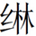
（1923—1953） 广东番禺人。许叔和之子。——1929（11）26。许璇苏 见许羡苏。
许德珩（1890—1990） 字楚生，江西九江人，社会学家。早年参加辛亥革命和五四运动。曾任黄埔军校政治教官。1928年间为上海大陆大学教授，曾请鲁迅往该校讲演。该校被当局封闭后筹资创办社会科学院，1930年3月曾写信向鲁迅募捐。——1928（11）5。1930③20。
许妈之女——1932④23。
许季上子——1920（11）3。
许季上母——1915⑧5。
许寿裳夫人 见沈女士。
许寿裳夫人 见陶伯勤。
许叔和夫人 见钟娟如。
许叔和孩子 见许锡。
许季上夫人——1917（12）25。1918④14。
许季上次女——1917⑧5。
阮久孙（1886—1935） 日记又作阮久荪、阮久巽、九孙，浙江绍兴人。鲁迅大姨母之幼子，阮和孙幼弟。原在山西作幕友，后因神经错乱，到北京经鲁迅延医治疗无效，派人送回原籍。——1915⑧31。1916⑥16，17。⑨15，16。⑩15，30，31。（11）6，10，14。（12）5，24。1919（12）7。1921⑨8。1923⑤27。⑦18。1924⑥20，24，26。⑨27。1925⑤2。1926⑥21，28。⑦2，25，28。
阮久荪 见阮久孙。
阮久巽 见阮久孙。
阮长连 见阮善先。
阮立夫（1879—1931） 名文鼎，字质孙，号立夫，浙江绍兴人。阮久孙的从兄。南京江南水师学堂毕业。民国初年曾任绍兴府中学堂英文教员、江西九江镇守使副官等职。——1912⑩21。（11）9。1913①4。④26。1917①1。
阮和孙（1880—1959） 日记又作阮和荪、阮和森，浙江绍兴人。鲁迅大姨母三子，阮久孙之三兄。曾在山西省当幕友。——1913①27，29。②7。⑤8，12，17。1916③20，21，24。⑩3，4，9，14，15，29，31。（11）4，8，10，13，15，17，26，29。1917⑥10，20。（11）19，21，27。1918①3，5。③8，22，26。⑥22，24。1920①13。②10。1921②25。1923⑨3，13，16，23，29。⑩11，19，31。（11）12，18。（12）25。1924①15。④15，21。⑤29。⑥11。⑩2，15。（11）14。1925⑩26。1927①29。1928⑩8。（12）4。1929①21。1930⑥2。1932（11）9，25。1933⑤1。1935（12）23。1936③8，20。
阮和荪 见阮和孙。
阮和森 见阮和孙。
阮姓者 未详。——1913（11）29。
阮梦庚（1872—？） 名文星，字罗孙，号梦庚，浙江绍兴人。鲁迅大姨母之长子，阮久孙的长兄。1916年在家闲居。——1916（11）14，15。
阮善先 又名长连，日记又作和森之子、和森长男，1919年生，浙江绍兴人。鲁迅的姨表侄。——1928⑩8。1932（11）9，13。1934⑨5。1935（12）23。1936①17。②1，15。
阮翱伯 名贞豫，字奥伯，日记作翱伯，安徽合肥人。陕西临潼县知事。——1919⑤20。⑥7。
如 山 见齐如山。
妇 见朱安。
羽太父 见羽太石之助。
羽太母（1870—1946） 日本人。羽太信子之母。——1920①28。
羽太兄弟 见羽太重久、羽太芳子。
羽太芳子（1897—1965） 日记又作三弟妇、三太太、芳子太太等，羽太信子之妹。因照顾信子分娩，于1912年5月在其兄重久陪同下来华。1914年初与周建人结婚。——1912⑤23。⑥29。⑦5。（11）13，15。1913⑥10，14。⑦4。1914③17，18，21。④3，10。（12）12，15，27，30。1915③1。④13，16。⑧17。⑨29。⑩4。1916⑨10，20。⑩26，28。（11）6。（12）2，15，21。1917③5，13，16，19，31。④4，5，6，20，28，30。⑤12，18，26，31。⑥5，7，25。（11）11。（12）12，31。1918①11。③3。④8。⑤24。⑥17，24，26。⑩19，20。1919①9。⑤20。1920⑤20。1923⑧13，15，26，29。⑨16。1924②2。③8。⑤20，26。⑧13。⑩3，5，18。（11）7，22。1925②11。③13。④5，19。⑥1。⑦21，30。1927（12）29。1936⑧27。⑨25。
羽太重久（1893—1980） 日记又作H君、重君等，日本人，羽太信子之弟。曾多次来华探亲。——1912⑤23。1914④9，11，14，21。⑤16。⑦8，30。⑧4，11。（12）27。1915⑧5。⑨2，4，15，21。1916②7，22。③1。④15。1917①25，31。⑥25，27。1918⑦13，15。1919①10。⑧10。⑩12，19。（12）29。1920⑤20，25。1921②27。1924②8，17，25。③4，8，20，25。④15。⑤5，21。⑥5，11，19。⑧13，14，21，29。⑨7，19，23，27。⑩11，23，27，28，30。（11）23，26。（12）2，12。1925②14。④30。⑥26。⑦1。⑧1，26。⑨12。⑩13。1926①11。⑦31。⑩31。1929④4。⑦13。
羽太信子（1888—1962） 日记又作二弟妇、二弟夫人、弟妇、启孟妻等，周作人之妻。——1912⑤11，23，28。⑥12，14，29。⑦5，11。⑧28，31。⑨15，17，27，29。⑩6。（11）13，15，16，27。（12）1，21。1913①19，20。④5，11，16。⑤23。（11）13。1914①10，13，14，15。②5，14。③8，11，13，29，30。⑦10。1915⑥16，17。⑩29。1916⑤27，28。⑥6，9，10。⑦5，19，28。（12）2。1917④16，27。⑤2，11，13，14，15，17，19，20，22，23，24，25，27，31。⑥3。⑩12。（11）25，26，27。（12）3，6，27，31。1918①11。②19，22，23。③3。④10，20，24。⑥17，26。⑧17，20，21。⑩7，19，20。（11）20。（12）25，26。1919④21。⑤1。⑧10。⑩19。1924⑥11。
羽太祖母（？—1913） 日本人。羽太信子的祖母。——1913④9，10。
羽太福子（？—1928） 日本人。羽太信子之妹。——1912⑨18。1913⑥13。1914（11）25。（12）9。1915③3，18。④7，15。⑥16。⑦1。⑧3。⑩23，27。（11）8。1916①15。③31。④17。⑨30。（12）14。1917③3，5，31。④4，20。⑥25。⑨24。⑩3。1918④6，9。⑧16。
羽太石之助（？—1941） 日本人。羽太信子之父。——1921⑨22。
约 夫 未详。——1936②7。
孙 用（1902—1983） 原名卜成中，浙江杭州人，翻译家。当时是杭州邮局职员。1929年1月，他将所译莱蒙托夫诗四首寄给鲁迅，后发表于《奔流》。同年11月又将所译裴多菲长诗《勇敢的约翰》寄与鲁迅。为刊印此书鲁迅曾几经周折，最后商定由湖风书局承印。在出版过程中鲁迅为之修改，校稿，作校阅后记，设计版式，选择插图，并垫付稿费，前后历时两年。——1929①24。②4。⑥16。（11）6，9，14，20，25。1930②11，14。④12。⑨1，3，6。（11）21，24，30。（12）3，6。1931⑤5，16。⑨16，17，22。⑩6，11。（11）13，18。1936②9。
孙 成 教育部工友。——1919（12）29。
孙 君 见孙伏园。
孙 君 中国银行杭州分行职员。——1919（12）25。
孙夫人 见宋庆龄。
孙太太 见孙式甫夫人。
孙少卿 名祖绳，字少卿，日记又作孙幼卿，山西临汾人。1925年北京师范大学史地系毕业。——1927①15。③16。
孙北海 名初超，字北海，山东文登人。教育部社会教育司分部人员、京师图书馆馆员。——1923③18。⑤4。
孙永显（1904—？） 字俊扬，山东泰安人。北京大学理预科学生。受中学同学燕志之托将诗稿转寄鲁迅。——1925④26。
孙幼卿 见孙少卿。
孙式甫 名金钰，字式甫，江苏无锡人。许广平的表姐夫。——1934⑧7。1936⑨3。
孙尧姑 字叔贻，贵州贵阳人。1925年北京女子师范大学国文系毕业。——1925⑨6。
孙师毅（1904—1966） 笔名施谊，江西南昌人，电影艺术家，南国社及“剧联”成员。上海中外出版公司总编辑。——1933（12）23。
孙伏园（1894—1966） 名福源，后改伏园，字养泉，笔名柏生、松年等（日记中的“名肃”疑亦指孙），浙江绍兴人。鲁迅任山会初级师范学堂监督时的学生。1913年转入浙江第五中学（其时周作人在该校任教）。1918年入北京大学国文系旁听，翌年改为正科生，1921年毕业。在校时曾参加该校新潮社，任干事部干事兼编辑部编辑。1919年兼任北京《国民公报》副刊编辑。1920年兼任北京《晨报》编辑，1921年主编《晨报副刊》。1924年夏以记者身份与鲁迅等同赴西安讲学。同年10月离开《晨报》，旋改任《京报副刊》编辑，并发起创办《语丝》周刊。1926年下半年与鲁迅同在厦门大学，任国学院编辑部干事。同年底任广州中山大学史学系主任，曾与鲁迅筹办广州北新书屋。1927年3月到武汉编辑《中央日报副刊》。1928年初赴法国短期留学。1929年回国后长期在河北定县从事教育工作。——1913⑦21。1917⑤24。1919④3。⑤3，4，10，21。⑥4，14，17，20。⑦1，5，9，14，19，22，25，27。⑧1，7，23。⑩8。（11）9，20。1920①18。⑦13。⑨25。1921①2。③31。④8，10，11，12，13，15，17，24。⑤1，3，5，13，25，27，29。⑥4，5，9，11，18，22，25。⑦3，7，9，11，14，17，25。⑧1。⑨2，7，10，13，18，22，26，27。⑩1，2，7，9，13，17，19，22，30。（11）6，11，20，23，25，27。（12）3，8，15。1922①27。⑧27。（11）24。1923①1，3，11，13，14，15，26，28。③21。④8，12，13，15，29。⑤6，10，13，20，24，25。⑥6，10，12，13，17，18，24，28，29。⑦3，7，8，14，20，27，28。⑧5，8，10，12，14，19，22，25。⑨11，17，21。⑩1，7，8，14，18，19，21，22，23，24，28。（11）9，10，13，14，19，30。（12）1，11，12，21，22，25，30。1924①1，7，8，11，12，13，14，17，23，28。③7，8，9，14，19，23，24，28，31。④2，4，12，22，25，26。⑤4，6，8，10，11，13，15，18，20，22，23，29，31。⑥2，4，7，8，11，12，14，17，18，20，22，28，29，30。⑦1，3，4，6，14，15，16，17，18，29，30。⑧1，3，9，10，11，14，15，18，19，21，24，26，29。⑨1，4，8，12，16，21，26，27，28，29。⑩1，2，3，5，7，8，10，11，13，14，16，19，20，25，26，27。（11）3，8，13，15，16，17，18，22，23，24，25，27，30。（12）1，7，9，10，12，13，14，15，21，22，24，27，28，31。1925①1，4，9，10，15，18，21，22，25，28，31。②1，5，8，10，11，12，15，16，17，18，23，24，27。③1，3，6，8，11，14，15，19，21，23，24，27，29。④1，26，28。⑤4，5，9，20。⑥14，29。⑧14，24，28。⑨2，9，20。⑩4，22。（11）27，30。（12）31。1926①7，12。②4。③1，5，26。④7，11，14，17，25。⑤24。⑦30。⑨4，5，11，19，21。⑩2，14，27，29。（11）5，10，13，28，30。（12）4，10，11，12，14，18，28。1927①3，8，12，19，20，21，22，23，24，29，31。②17，24。③7，17，20。④11，26。⑤6，14，20。⑥23。⑦4。⑧25。⑩3，4，5，7，9。1928②29。③14。1929③20。④13。
孙庆林（1888—1943） 名庆麟，字虞臣，浙江绍兴人。孙德卿之嗣子，绍兴成章女子学校校长，绍兴救济院院长。——1919②20。
孙伯恒（1879—1943） 名壮，字伯恒，北京人，金石学研究者。北京商务印书馆经理。1915年为教育部通俗教育研究会小说股调查干事，北京通俗教育研究会会员。——1915（11）13。
孙伯康（1894—1943） 字安生，浙江绍兴人。鲁迅任山会初级师范学堂监督时的学生。——1918⑤29。⑥29。⑦9。⑧6，27，31。⑨2，16。
孙君立（1902—？） 名豫寿，字君立，日记作孙君烈，江苏无锡人。商务印书馆编辑，与周建人、许希林同寓景云里，并合请一厨师。鲁迅、许广平初迁入景云里时曾临时入伙共餐。——1927⑩9，23。（11）19。
孙君烈 见孙君立。
孙宝瑚 浙江杭州人。当时的外交总长孙宝琦之弟。——1912⑥26。
孙春台 见孙福熙。
孙冠华 浙江余杭人。曾任教育部社会教育司主事。——1915（11）4。1920③17。
孙席珍（1906—1984） 浙江绍兴人，作家，北方“左联”成员。1925年为《晨报副刊》校对，并编辑《京报·文学周刊》。1929年在上海从事创作，1932年为北京师范大学讲师。——1925①6，18，29。④1，5。1929④16，28。⑦13。⑧7。1932（11）27。
孙祥偈（1903—1965） 女，字荪荃，湖北武昌人。1925年北京女子师范大学哲学系毕业，1929年为北平《新晨报》副刊编辑主任。——1929⑤28。
孙惠迪（1915—1992） 日记又作惠迭，浙江绍兴人。孙伏园之长子。北京孔德学校学生。——1923③21。④8，15。⑥17，18。（12）25，30。1924①13。⑧15。⑨26。⑩10，26。1925②1，12。③24，29。④8，19。⑤4。⑧14。⑨2，20。（11）27。（12）31。
孙斐君（1897—1990） 名桂丹，字斐君，日记又作川岛夫人、矛尘夫人，黑龙江安达人。1922年北京女子高等师范学校毕业。1924年与章廷谦结婚。1925年在河北省立高级中学任教，1928年至1931年在杭州高级中学、杭州女一中任教，1931年秋至1932年在北平大学女子文理学院任教。——1925④10，17。1928⑥2。⑦12，13，14，15。⑩9。（11）29。1930②11。1931⑦6。（11）14。1932（11）27，28。
孙奠胥 字瀚臣，浙江绍兴人。绍兴师范学校校长。——1915（11）17。
孙楷第（1898—1986） 字子书，河北沧县人，目录学家。1924年为北京师范大学国文系学生。曾为文哀悼贫病致死的同班同学杨鄂生，请鲁迅介绍给《语丝》，后未发表。——1924（12）24。
孙福源 见孙伏园。
孙福熙（1898—1962） 字春苔，日记又作春台，浙江绍兴人，孙伏园之弟，画家、作家。1921年至1924年在法国留学。1926年至1927年间任上海北新书局编辑，以后曾编辑国民党改组派的《贡献》月刊。曾为鲁迅设计《野草》及《小约翰》初版封面画。所著散文集《山野掇拾》、《大西洋之滨》经鲁迅校正出版。——1919（11）9。1923⑥17。⑦3。⑧5，14。⑩21。（11）9。（12）22。1924③7。⑤4，9。⑩17。1925②8。④26。⑤7。⑧14，24。⑨2，9，20，21。⑩4，5，22。（11）27，30。（12）31。1926①7。④11。⑩13，20，21。（11）10，21。（12）19，30。1927①3，20，25，26。②8。③4，10，19，20，24，30。④2，4，5，10，19，26，28。⑤13，14。⑥7，8，16，18。⑦4，9。⑧12。⑩3，4，5，15，23。（12）3。1928③2。⑥24。⑧14。1929③20。
孙德卿（1868—1932） 名秉彝，字长生，号德卿，浙江绍兴人。清末参加反清革命，为光复会、同盟会会员。绍兴光复后，支持创办绍兴《越铎日报》。——1913①13。
孙瀚臣 见孙奠胥。
孙冠华妹——1920③17。
孙式甫夫人 日记又作孙太太，广东番禺人。许广平的表姐。——1934⑧7。1935⑨29。（11）6。1936⑨3。
七画
寿 山 见齐寿山。
寿 师 见寿镜吾。
寿
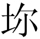
（1889—1950） 字石工，浙江绍兴人。教育部通俗教育研究会编审员，工刻图章、书法。——1923（12）1。寿 晋 见韩寿晋。
寿师母 寿镜吾的夫人徐氏（？—1915），浙江绍兴人。——1915（12）3，5。
寿拜耕（1882—？） 名昌田，字拜耕，浙江绍兴人。寿镜吾之本家，陈公侠（仪）表弟。曾与鲁迅同在日本弘文学院学习。——1917①4。
寿洙邻（1873—1961） 名鹏飞，字洙邻，浙江绍兴人。寿镜吾之次子。1914年至1928年在北京平政院任记录科主任兼文牍科办事书记。1925年时曾化名钝拙为鲁迅《中国小说史略》提过意见。——1912⑨21。⑩6，15。1913①27，29。②7。④25，26。⑨9，10。1914⑧9。1915④15。⑧22。（12）3，5。1916④30。⑥11，18。⑧6。（12）1。1917②18。⑧5，22。⑨30。（12）2。1918①1。②3，4。③23。⑥9，29。⑧7。⑨19。（12）25。1919④13。⑤25。⑥4。⑧9。⑩12。1921①4。1923（12）25。1925⑤9。⑧16。⑨26，28。（11）28。1926②5，24。⑧20。1928⑧20，22。1929③29。
寿镜吾（1849—1929） 名怀鑑，字镜吾，日记又作寿师，浙江绍兴人。清代秀才，鲁迅在三味书屋学习时的塾师。——1915⑩1。1923①29。②9。
寿之妇——1923（12）1。
玛 理 见周鞠子。
戒 仙 姓中村，日本人。京都大德寺山内聚光院住持。1934年时随铃木大拙来华参观佛迹。——1934⑤10。
赤 谷 见赤谷喜久子。
赤 坪 见赵赤坪。
赤谷喜久子 日本人。内山完造之友，北川公寓鲁迅寓所的原住户。——1930⑤19。
坂 本 日本人。上海狄思威路（今溧阳路）鲁迅藏书室的房东。——1933⑤2。
坂本太太 日本人，鲁迅藏书室房东之妻。——1936⑧5。
志 儿 未详。——1931（12）16。
志 之 见王志之。
志 仁 见季志仁。
志贺迺家淡海 见淡海。
声 树 见陈声树。
芷 生 见宋芷生。
芷 青 见朱联沅。
芷夫人 见汤咏兰。
芳 子 见羽太芳子。
芳 叔 见周凤岐。
芦 舲 见戴螺舲。
严 修（1861—1929） 字范孙，号梦扶，天津人，教育家。南开大学创办人之一。1914年2月袁世凯任命为教育总长，坚辞未就。——1914②21。
严既澄（1899—？） 名锲，字既澄，广东四会人。曾任北京大学讲师。1927年在杭州编《三五日报》副刊时曾函请鲁迅写稿。——1927⑦9。
克 士 见周建人。
克 氏 见Kravchenko，A.。
苏 君 见苏秋宝。
苏 萍 见苏滨。
苏 梅（1899—1999） 字雪林，笔名绿漪，安徽太平人，作家。北京女子高等师范学校肄业，后留学法国。1928年回国后在沪江大学、东吴大学等校任教。——1928⑦7。
苏 滨 日记又作苏萍。余未详。——1926⑤24，25。
苏金水 未详。——1929⑦3。
苏秋宝 日记又作苏君，河北满城人。1922年北京大学理学院预科毕业。——1927②5，18。
苏流痕 未详。——1930④24。
苏遂如 名师颖，字遂如，福建莆田人。1920年北京高等师范学校国文部毕业，1926年为厦门集美学校师范部教务主任。——1926⑨17。
杜 力 未详。——1927（11）15。1928①12。
杜 谈（1911—1986） 笔名窦隐夫，河南内乡人，诗人。1934年间参与编辑中国诗歌会刊物《新诗歌》，曾写信征求鲁迅对新诗的意见。——1934（11）1，5，14。
杜 衡（1906—1964） 原名戴克崇，笔名苏汶、杜衡，浙江杭县人。以“第三种人”自居，1933年间主编《现代》月刊时常向鲁迅约稿。——1933⑧8，11，13，14，19，20，28。⑨3，11，12。（11）12，13。
杜亚泉（1873—1933） 名炜孙，字秋帆，号亚泉，浙江绍兴人，教育家。1913年时为商务印书馆编译所理化部主任并主编《东方杂志》。——1913②16。
杜和銮（1919—1987） 后改名杜草甬，安徽太平人。杭州盐务中学学生，和同学陈佩骥等合办一小型刊物《鸿爪》，写信向鲁迅约稿。——1936④2。
杜俊培 浙江诸暨人。因投考县知事请鲁迅作保。——1915④3。
杜海生（1876—1955） 名子楙，字海生，浙江绍兴人。1910年任绍兴府中学堂监督，曾聘请鲁迅往该校任教。1912年参加教育部临时教育会议。1926年后任上海开明书店经理。——1912⑥7，10。⑦21，23。⑧4，11。1914③22。④11。⑦31。⑧24。⑩28。1915①31。1916⑧13。1917⑧21，22。⑨30。⑩5，28。（11）11。（12）16。1918②3。③22，27。⑦24，26，29。⑧23，30。⑨18，26。⑩18，19，24，26。1919③2。1930①31。1932⑧17。1934⑤5。
村 井 见村井正雄。
村井正雄 日本人。内山书店店员。——1934⑨23。⑩3，14。（12）30。
杏 村 见阿英。
杉本勇乘（1906—2001） 日本僧侣。爱好文艺，1932年时住在上海东本愿寺。——1932（12）21，30。
巫少儒 未详。——1936①31。
杨 见沙汀。
杨 君 见杨骚。
杨 晦（1899—1983） 名兴栋，字慧修，笔名杨晦，辽宁辽阳人，作家，沉钟社成员。1929年时在北平大学第二师范学院任教，并编辑《华北日报》副刊。1934年到上海专事写作，后在北平各大学任教。——1929⑤24，27，29。⑨13。（12）24。1934⑩17。1935⑥2，3，16。⑨6。（12）17。
杨 铿 字金坚，日记又作杨律师，江苏武进人。曾受鲁迅委托向北新书局交涉归还积欠版税事。——1929⑧12，13，14，15，16，23，24，25。⑨11，16，21。⑩1，14。（11）4，5，22。（12）23。1930②18。③8，23。④20，26。⑤22。⑥6。⑦6，7，30。⑧7，25。⑨2，4，16，17。（11）4，6。（12）26，27。1931①21。②27。1935⑤24。
杨 骚（1901—1957） 名古锡，字维铨，日记又作杨君、杨维诠，福建漳州人，作家，“左联”成员。1928年间偕爱人白薇及林惠元同住上海施高塔路（今山阴路），常去鲁迅家谈论创作和翻译等事，并在经济上得到过鲁迅的资助。——1928①25。⑤10，28。⑦6，19，26。⑧7，12，15，18，22，25，28，29，30。⑨8，27。⑩4，10，13，17，26，27。（11）1，16，29。（12）4，6，12，23，30。1929①8，13，21。②1，27。③10，11，17，20，27。④14，24，27，28。⑤11。⑥29。⑦13，16，21，31。⑧1，6，16，17，19，28。⑨2，3，8，9。（11）2，7，13，21，22，23。（12）27，30。
杨 潮（1900—1946） 笔名羊枣，湖北沔阳（今仙桃）人，新闻记者，“左联”成员。曾数次将文稿寄请鲁迅指导。——1934⑨21。（11）22。（12）14。1935①17。⑨24。⑩11。
杨千里 名天骥，字千里，江苏吴江人，教育部视学。——1916①19。
杨之华（1900—1973） 日记又作文、文尹、维宁夫人，浙江萧山人，瞿秋白夫人。文尹是她的笔名，瞿秋白译文也曾借用做笔名。日记所记何家夫妇、文尹夫妇即指瞿秋白夫妇。鲁迅曾多次为她阅稿，1932年编译《一天的工作》时，曾收入她的译作两篇。1935年6月瞿秋白被害后，她于8月赴苏联。关于她和鲁迅交往的情况，参看瞿秋白条。——1932⑨1，14，18，25。（11）4。（12）9，11。1933②10。③6。⑦5，10。1934②3。⑧5，7。1935⑧19。（12）23，31。1936②7。⑦1，2，17。
杨女士 日记又作杨先生。上海福民医院护士。——1930①6，13。
杨子毅 广东中山人，广州中山大学教授、组织委员会主席。鲁迅为该会委员。——1927⑤2。
杨少勤 见杨伟业。
杨月如（？—1916） 疑为教育部职员。——1916②24。
杨凤梧 浙江诸暨人，童亚镇托保应县知事考试者。——1914②4。
杨立斋 号天行，浙江绍兴人，广东汕头《岭东民国日报》副刊编辑。——1927①15。②20。
杨成志（1901—？） 日记又误作杨志成，广东海丰人。广州岭南大学历史系学生，为计划在广州设立“北新分局”之事，与钟敬文和鲁迅通信。——1927②13。⑥29。⑦3。
杨先生 见杨女士。
杨廷宾（1910—2001） 河南南阳人。王冶秋、王正朔的中学同学，1935年自北平大学艺术学院毕业后回河南，在南阳女子中学教书。曾应王冶秋之托为鲁迅收集汉画像石拓片。——1935（12）21，22。1936①28。
杨伟业（1899—？） 字少勤，广东茂名人。1923年北京大学国文系毕业，1927年时为广州中山大学预科教师。——1927①30。
杨仲文 未详。——1927（11）8。
杨仲和 名彬，字仲和，河北宛平人。教育部社会教育司办事员。——1913①1，2。②9，27。1914①1。1916⑤22。1923⑧28，31。（11）⑩27，30。（12）2，7。
杨志成 见杨成志。
杨杏佛（1893—1933） 名铨，字杏佛，江西清江人。1932年为中央研究院总干事，与宋庆龄、蔡元培等组织中国民权保障同盟，任副会长兼总干事。1933年6月18日在上海遭国民党特务暗杀。鲁迅曾不顾国民党特务的恫吓，前往参加入殓式，并作《悼杨铨》诗。——1933②17，24。③1。⑥12，20。
杨每戡 见董每戡。
杨幸之 湖南人。申报年鉴社编辑。——1933③24。
杨姓者 未详。——1930①9。
杨荫榆（1884—1938） 江苏无锡人。1924年2月底至次年5月任北京女子高等师范学校校长。——1924⑨14。
杨树达（1885—1956） 字遇夫，湖南长沙人，语言学家。曾留学日本，1925年间为教育部编译馆编译员，并先后任北京师范大学、清华大学教授。——1924③30。④20。（11）27。1925⑦25。⑨5。
杨树华 字冠珊，1912年生，广东澄海人。广东汕头私立友联中学初三学生，曾给鲁迅写信并寄稿求教。——1927②17，22，27。③24。⑤20。⑥3，23。
杨律师 见杨铿。
杨莘士 见杨莘耜。
杨莘耜（1883—1973） 名乃康，字莘耜，又作莘士，浙江吴兴人。曾任杭州浙江两级师范学堂教员，与鲁迅同事。1912年后任教育部普通教育司科员、科长、视学等职。1913、1914年两次被派赴四川、陕西视察教育状况；1917年3月复往安徽、山东视察，同年9月后任吉林省教育厅厅长。——1912⑥8。⑦14，20，28。⑧2，11。⑨11。（11）4。1913⑤15。⑥10，21。⑧29，30。⑨5，27。1915①26，28。②5，6。③5。④4。⑤10。⑥10。（11）27。1917⑤16，18，21，31。⑥1。1918⑥6，11。
杨晋豪（1910—1993） 江苏奉贤（今属上海市）人。1929年时为南京中央大学学生，因请审阅其小说稿开始与鲁迅通信。1936年任北新书局《小学生》半月刊编辑时，曾约请鲁迅撰稿，未获允。——1929①24。1936③7，10，11，18。⑦5。
杨鄂生（？—1925） 日记作一少年，北京师范大学国文系学生。因精神失常，自称“杨树达”闯入鲁迅住宅，鲁迅误其为装疯讹诈，曾作《记“杨树达”君的袭来》一文。不久得知真实情况，又作《关于杨君袭来事件的辩正》。——1924（11）13。
杨维诠 见杨骚。
杨维铨 见杨骚。
杨遇夫 见杨树达。
杨遇安 见李遇安。
杨翔鹤 见陈翔鹤。
杨霁云（1901—1996） 江苏常州人。曾在上海复旦中学、正风文学院任教。1934年因搜集整理鲁迅集外佚文拟编印《集外集》，与鲁迅通信。——1934④13，24。⑤6，15，22，24，28，29，31。⑥3，7，10，12，19，21，25。⑦17。⑩10，13。（12）5，7，9，11，13，14，16，18，19，20，21，23，29，31。1935①4，17，29。②4，7，9，14，24。⑤18，24，28。（12）5，13，19。1936②29。③6。⑧26，28。
杨慧修 见杨晦。
杨镇华 浙江人，翻译工作者。——1928⑤31。
杨德群（1902—1926） 湖南湘阴人。北京女子师范大学理科学生。1926年三一八惨案中与刘和珍同时牺牲，鲁迅曾参加她和刘的追悼会。——1926③25。
杨赢生 日记又作杨赢牲，疑即《三闲集·通信》中的Y。——1928④9。⑤1。⑦19，20。
杨赢牲 见杨赢生。
杨藻章 贵州人。南京中央大学文科学生，《语丝》投稿者。——1929⑦28，29。
李 未详。——1919⑨28。
李 厶 未详。——1918①10。
李 生 未详。——1924④9。
李 华 见李桦。
李 估 未详。——1916⑥24。
李 君 未详。——1913③13。
李 君 见李济之。
李 君 未详。——1927⑨16。
李 季 字默然，日记又作李季子，湖南平江人。1918年北京大学英文系毕业。——1921⑦2，18。
李 某 未详。——1935③18。
李 映 广西南宁中央军事政治学校第一分校炮兵队学员。——1935①29。③19。
李 洛 未详。——1930③18。
李 桦（1907—1994） 日记又作李华，广东番禺人，木刻家。广州市立美术学校教师，广州现代创作版画研究会的组织者。为取得鲁迅对现代版画会的指导，1934年起与鲁迅通信。——1934（12）18，25，29。1935①4，14，17。②5，16。③9，25。④4。⑤20，30。⑥16。⑦16，26。⑨9，17，23。⑩6。（12）17。1936①4，14。④10。
李 基 未详。——1936②19。
李 梨 未详。——1935①27。
李一氓（1903—1990） 日记又作一萌，四川成都人，创造社成员，“社联”负责人之一。曾编辑《流沙》和《巴尔底山》，1931年5月应郭沫若之托赠鲁迅《甲骨文字研究》一部。——1930（12）23。1931⑤14。
李人灿 日记又误作张人灿，北京大学学生，与当时的北大旭社有联系。——1924⑥6，9，21。⑧31。（11）28。（12）5，25。1925③27。④15。
李力克 未详。——1929④4，6。
李又观 原名李丁奎，朝鲜爱国者，当时流亡在中国。——1923③18。
李又然（1906—1984） 日记又作李又燃，浙江慈溪人。曾留学法国，研究法国文学。1933年9月曾任来华访问的“世界反战大同盟”代表团副团长、法国作家保尔·瓦扬古久里的翻译。——1933④26。1934④12。⑨9。
李又燃 见李又然。
李大钊（1889—1927） 字守常，河北乐亭人，马克思主义在中国最早的传播者，中国共产党创始人之一。早年留学日本，1918年任北京大学教授兼图书馆主任，同年参加编辑《新青年》杂志，与鲁迅在《新青年》编辑会上认识并开始交往。1927年4月在北京被奉系军阀逮捕遇害。1933年公葬时鲁迅曾捐款，同年5月为《守常全集》作《题记》。——1919④8，16。⑦8。1921①20。②24。④19。⑤19，25。⑧28。1933⑤6，11。
李小峰（1897—1971） 名荣第，字小峰，笔名林兰等，日记又作李晓峰，江苏江阴人，新潮社成员。1923年北京大学哲学系毕业，通过孙伏园开始与鲁迅交往。1924年11月与孙伏园等创办《语丝》周刊，次年3月在鲁迅等帮助下开设北新书局。当时鲁迅除将自己大部分著译交其出版外，又为之编选、校阅书稿，介绍作品，编辑丛书；写给《语丝》的稿件也多由李小峰转交编者。1927年4月后李小峰与北新总店移沪，鲁迅到沪后曾为他编《语丝》和《奔流》。1929年夏，鲁迅因北新长期拖欠其应得版税不予处理，曾拟通过法律解决，经李小峰请人调解达成协议作罢。以后鲁迅仍在该店出版《三闲集》、《两地书》、《伪自由书》等。——1923④8，15。⑤20。⑥29。⑦28。⑨11。⑩1，18。（11）10。（12）25，30。1924①13。⑤6。⑥22。⑦4。⑧15。⑨1，8，12，26。⑩29。（11）15，22，30。（12）9，31。1925①2，12，15，28。②1，4，5，8，9，12，24，28。③6，10，11，13，23，24，25，27，31。④5，8，10，12，15，19，21，26，30。⑤1，3，4，9，23，24，25，27。⑥4，7，12，13，17，20，22，28。⑦5，11，13，17，19，25。⑧1，2，4，6，14，17，23。⑨2，3，9，13，14，15，18，26。⑩1，2，7，9，11，13，16，22，30。（11）2，5，13，14，17，20，27，28，29，30。（12）3，7，21，22，24，25，30。1926①2，9，11，18，24，25，26，31。②2，3，5，6，9，20，26，28。③1，2，4，5，7，10，17，18，19，23，27，28，30，31。④3，6，8，9，11，12，20，23，26。⑤2，6，10，13，17，22，24，27。⑥1，3，5，6，7，11，13，16，23，24，26，27，28，30。⑦2，3，6，10，16，21，24，26，27，28，31。⑧1，5，6，8，12，15，18，19，23，24，25，26。⑨8，16，17，18，20。⑩1，6，11，16，19，21，23，24，29。（11）4，8，14，16，17，21。（12）13，14，15，27，28。1927①3，7，9，21。②7，13，16。③14，15。④11，13，24，28。⑤18，19。⑥11，18，27。⑦3，9，19，20。⑧19。⑨5，16，17。⑩3，4，5，7，9，12，15，16，17，20，26，30。（11）1，2，4，8，9，10，11，12，15，17，21，22，23，24，26，29。（12）3，5，6，8，12，13，18，19，24，25，27，29，31。1928①3，12，13，14，15，16，18，22，24，29，31。②2，3，4，13，14，15，16，18，23，26。③1，4，5，8，12，19，26，28，31。④1，2，5，7，10，13，17，19，23，24，26。⑤8，10，11，15，17，21，23，26。⑥1，5，9，11，15，16，17，20，22，24，26。⑦1，4，5，6，7，9，11，12，18，22，25，27，30。⑧3，4，9，12，19，23，24，29，31。⑨8，12，13，18，19，21，26，27，29，30。⑩3，4，7，12，14，18，21，24，27，28。（11）1，4，6，9，12，15，17，19，20，26，27，29。（12）2，5，7，11，19，21，25，30。1929①5，8，11，12，15，17，20，22，29。②4，6，16，17，19，20，21，24，25。③3，5，6，15，17，26，27。④4，6，8，13，16，19，24。⑤1，2，5，12，30。⑥1，8，10，19，21，26，27。⑦9，10，11，13，18，22，28，29。⑧5，12，15，16，25，26，28。⑨7，10。⑩19，20，26，28。（11）4，6，11，13，16，22，23，28。（12）4，10，15，17。1930①22。②5，20。④9，11，16，17，19，21，22，24。⑥6。⑦4，6。⑨3，10，22。⑩2，13，15，30，31。（11）22。（12）6。1931①23。②2，3，5，11，13，17，21，23。③18，20。④26。⑤3。⑥1，2，24。⑦6，14，15，18，19，30，31。⑧8，9，15，23。⑨11，15，16。⑩6，9，11，19。（11）6，8，17，18，27，30。（12）1，12，19，22，31。1932①12，14，20。②8，10。④6，13，14，15，25，26，27。⑤8，13，14，18，27。⑥13，23。⑦26。⑧13，16，26。⑨14，24。⑩3，13，17，19，20，22。（11）15，25。（12）13，21，24，28。1933①3，6，13，14，15，20，23。②12，21，27。③2，14，16，19，21，22，24，25，29，31。④3，5，7，12，13，18，19，20，21。⑤3，13，15，27，29。⑥13，21，24，26。⑦3，8，15，28。⑧2，4，16，30。⑨4，18，19，25，26。⑩5，16，17，26。（11）15，16，29。（12）2，3，10，22，26，30。1934①22。②6，7，14，24，28。③9，20。④7，11。⑤12，17，19，20，31。⑥2。⑦31。⑧2，12。（12）10。1935①24。②16，23。④13。⑤1，21，22。⑥17。⑧14，30。⑨5，14，28。（11）30。（12）21，23。1936①12，17。②5，29。③28。
李小酩 《莽原》周刊投稿者。——1925④30。⑤9，20，21，24，26。⑥13，18。⑨1。⑩19。1928①3。
李天元 号嵩岳，1914年生，云南昆明人。广西南宁国民党中央军事政治学校第一分校第五期步兵队学员。——1934⑨3，29。⑩17，20。（12）28。
李天织 未详。——1926④13。
李太太 见蔡漱六。
李瓦匠 见李德海。
李少仙 《语丝》投稿者。当时在日本留学。——1928⑥12，15，20。1929⑨10。
李升培 字子栽，浙江吴兴人。京师警政厅佥事、科长。——1912⑥26。
李长之（1910—1978） 山东利津人，文艺批评家。1934年时在清华大学哲学系肄业。1935年间为天津《益世报》文学副刊编辑。为著《鲁迅批判》一书与鲁迅通信。——1934（12）30。1935⑦28。⑧11，31。⑨12。（12）2。1936④6。
李文若 见梁文若。
李世军（1901—？） 甘肃静宁人。北京师范大学国文系学生，国民党北京市城南区党部工作人员。三一八惨案后因遭北洋政府通缉，被调往甘肃工作，行前来向鲁迅辞别。——1926⑤25。
李白英（1903—1981） 江苏无锡人。《奔流》投稿者。1932年1月发起组织榴花诗社，出版《榴花》诗刊。——1929⑥24。1932①12。
李立青 朱斐之妻。武昌文华大学学生。——1927（11）18。
李玄伯（1895—1974） 名宗侗，字玄伯，河北高阳人。1925年间为北京大学法文系教授，北京师范大学讲师，《猛进》周刊发起人和编者之一。——1925⑨20。（11）20。（12）21，24。1926③7。
李式相（1894—1965） 名燮治，湖南宝庆（今邵阳）人。1924年北京高等师范学校国文系毕业，1927年为上海劳动大学附属中学主事，同年10月受易寅村之托邀鲁迅往劳动大学演讲，后鲁迅曾任劳动大学教职，不久即辞职，李复持易寅村信前来挽留。——1927⑩23，25。（11）27。（12）11。
李朴园（1901—1956） 河北曲周人。美术史学家。时为杭州国立艺专教授，编辑出版《阿波罗》等艺术刊物。——1928④18，21。
李匡辅 名明澈，字匡辅，湖北黄梅人。教育部社会教育司分部人员。——1917（12）16。1918⑨8。1920①10。
李光藻 福建思明人。1926年为厦门大学商业系二年级学生，1927年转学广州中山大学。——1927④7。⑤5。⑦26，31。⑧2，6。⑩25。
李竹齐 见李庆裕。
李竹泉 见李庆裕。
李竹庵 见李庆裕。
李仲侃 见李霞卿。
李华延 广东梅县人。广州中山大学法科政治系学生。——1927⑧15。
李庆裕（1897—1981） 北京琉璃厂云松阁店主。该店门上横匾书有其祖父李竹庵之名，故日记又作李竹庵，误作李竹齐、李竹泉。——1913⑩5。1914⑥6。1924②2。⑨18。1925④3。
李宇超（1906—1968） 化名刘重民，山东诸城人。1935、1936年间在上海从事中共地下工作，曾因组织遭破坏与党失去联系，函请鲁迅帮助，鲁迅设法为他接上了关系。——1936⑧22。
李守常 见李大钊。
李级仁 陕西长安人。西安东关私立竞化学校教员。鲁迅在西安讲学时的接待人员之一。——1924⑧18。⑨29。
李约之 名博，字约之，陕西蒲城人。西安易俗社创始者李桐轩之长子，鲁迅到西安讲学时任西安女子中学校长，并在易俗社兼职。曾接待鲁迅在易俗社观剧。——1924⑧18。
李寿恒 见朱寿恒。
李志云（1889—1954） 江苏江阴人。李小峰之兄，上海北新书局经理。——1926⑧29，30，31。1928⑨13。1929⑧5，25。1930⑥25。
李秀然 广东人。广州中山大学学生，学生会临时主席。广州四一五事变后任国民党中山大学特别党部改组委员会委员，进行反共活动。——1927①24。
李希同（1901—？） 江苏江阴人。李小峰之妹，赵景深夫人。——1930④19。
李若云 名维庆，字若云，河北清苑人。李慎斋之子。——1924⑨13，14。
李茂如 日记又作李姓者，房屋掮客。——1923⑧14，16，20。⑨25，27，30。⑩1，2。
李英群 未详。——1926④5。
李叔珍 厦门《厦声日报》记者。鲁迅在厦门大学讲授中国小说史时常往听讲，并于1926年12月16日《厦声日报》发表他写的《鲁迅访问记》。——1926（12）15。
李明澈 见李匡辅。
李季子 见李季。
李季谷 见李宗武。
李季野 见李霁野。
李秉中（1905—1940） 字庸倩，四川彭山（今彭县）人。1924年为北京大学学生，曾得到鲁迅的资助。10月入黄埔军校第三期，1926年被派往苏联，入莫斯科中山大学，次年赴日本学陆军，1932年返国，在南京国民党军事机关任职。——1924①29。②17，26，27。③11，30。④10，19。⑤1，5，26，27，30。⑥12，17，24，28。⑦5，6，29。⑧16，20，22，26，28，29。⑨1，3，4，8，12，14，24，25，27，29，30。⑩12，18，20，21，22，23，26。（11）1，2，26。（12）14，17，24，26。1925①6，10，19。②2，7，10，18。④5，17。⑤16。1926⑤30。⑥17。⑦21。1927（11）7，8，9，10，15，19，21，22。（12）5。1928④7，9。⑤14。（12）28，29。1929①15。⑤18，20，27，29。⑦22。1930④12，13，23，28。⑤3。⑥21，23。⑨2，3。1931②4，16，18。③3，6，21。④4，16。⑥23，24。⑧20，27。1932②21，28，29。③18，21。④5，11。⑤3，4，13。⑥4，5，13，29。1934⑤1，2，3。⑧7，11。⑩23。1936⑤20，31。⑦5，16。⑨9，20，27。
李金发（1900—1976） 广东梅县人，诗人、雕塑家。文学研究会成员。曾留学法国、德国。回国后历任上海美术专门学校、中央大学、杭州艺专等校教授。1928年时任广州市立美术学校校长，在编辑《美育》月刊时，曾致函鲁迅约稿。——1928④24。⑤5。
李宗武（1895—1968） 名季谷，字宗武，浙江绍兴人。李霞卿之弟。早年曾留学日本、英国。1924年回国，先后在北京师范大学、北京大学、北平大学女子文理学院等校任教。鲁迅曾校阅他与毛咏棠合译的日本武者小路实笃所著《人间的生活》。——1920②9。（11）24。1921③7，14。④26。⑦30。⑧30。⑨5，6，21，27。⑩9，10，12。（12）30，31。1924④6。⑤11。⑥21。1925③8。⑤15，30，31。⑨5。（11）21。1926①31。⑤8，13，28。⑥26。（11）15，25。1928④1。⑤1。1929③18，20。1932（11）23。
李宗奋 1916年生，江苏江阴人。李小峰之侄。1929年间在上海光华大学附中学习时，将自己的作文编成一集寄请鲁迅审阅并作序，鲁迅曾复信鼓励。——1928②18。⑦7。1929⑦11。
李姓者 见李茂如。
李春朴 见李春圃。
李春圃 名桃元，字春圃，日记又作李春朴，山西阳高人。1923年北京高等师范学校英语系毕业，曾任归绥（今呼和浩特）绥远省立第一女子师范学校校长。——1930③11，30。
李荐侬 广东五华人。北京大学哲学系学生。——1928（11）26。（12）28。
李虹霓 江西人。叶紫的友人。曾翻译苏联萧洛霍夫《开拓了的处女地》。——1936⑨8。⑩6，16。
李济之（1896—1979） 名济，字济之，日记又作李君，湖北钟祥人，考古学家。曾留学美国，得哈佛大学哲学博士学位。1924年任南开大学教授，与鲁迅同时应邀赴西安讲学。1933年时为中央研究院历史语言研究所考古组主任。——1924⑦16，17，18，20。⑧1，10，29。1925②23。③3。1933②24。
李桂生（1904—1948） 字洁华，安徽太平人。北京女子师范大学国文系学生，许广平的同班同学。女师大风潮中曾被刘百昭率领的流氓殴伤。——1925⑥7，24，30。⑦2。⑧26。
李硕果（1883—1979） 福建南安人。1908年在泰国加入中国同盟会，1916年回国，创办厦门《民钟日报》社，并任经理。——1927①8。
李晓峰 见李小峰。
李竞何 广东梅县人。北京大学德文系学生，1927年回广州随友访鲁迅。四一五事变后曾任国民党广东政治分会干事。——1927③15。
李梦周（？—1918） 曾任教育部主事、佥事、科长、司长等职。——1912⑨7。1918④1。
李庸倩 见李秉中。
李鸿梁（1894—1971） 浙江绍兴人。鲁迅在绍兴府中学堂任教时的学生。曾任绍兴浙江省立第五中学艺术教员，常在《越铎日报》发表美术作品。——1913②5，11。1921③29。
李寄野 见李霁野。
李维庆 见李若云。
李辉英（1911—1991） 原名李连萃，吉林永吉人，作家。一度为“左联”成员。1935年时为《生生月刊》、《漫画漫话》编辑。——1933④8。1935①11。②23，28。③28，31。④4，19，28。⑦23。
李遇安 日记又作遇庵、一学生，误作杨遇安，河北人。1924年至1926年间为北京师范大学学生，曾为《语丝》、《莽原》撰稿。1926年秋任中山大学委员会职员，同年底辞职与郁达夫赴上海，不久往江西。——1924（11）24。（12）2，4，16，24。1925①17，28。③2，8，9，19，24。④6，7，12，14，23，27，28。⑤11。⑥5，8，9，30。⑦19，20。⑧3，21。⑨28。（12）16，17。1926①7，9。②4。③10。④23，25。⑤9，21。⑥21，27，30。⑦24。⑧1，3，11，20，22。⑩2，13，23，24。（11）5，11。（12）14，21。1927①9。②27。1928③13。1930⑩30。
李赋堂 未详。——1914⑥28。
李渭滨 未详。——1925⑤11。
李遐卿 见李霞卿。
李雾城 见陈烟桥。
李虞琴 浙江绍兴人。周建人在绍兴明道女校任教时的学生。——1921⑨26。
李简君 广东梅县人。1927年北京师范大学国文系毕业。后曾任广州勷勤大学师范学院附中教员。——1931②11。
李慎斋（1868—1947） 名懿修，字慎斋，浙江绍兴人。1916年时为教育部会计，1922年至1925年间为教育部社会教育司办事员。曾帮助鲁迅购置、翻修北京西三条寓所。——1916（12）2。1923⑨13，24。⑩5，10，17，23，24，27，28，30。（11）13，16，18。（12）2，3，12，16，20，23，25，30。1924①2，12，15，16，20，27，28，30。②1，2，3，17，18。③2，16，17，27，30，31。④7。⑤1，3，10，20。⑥3。⑧13，14。⑨13。1925①23。⑧14。
李福海 河北宛平人。北京高等师范学校录事。——1925⑩28。
李静川 未详。——1926①21，29。②7。
李霁野（1904—1997） 日记又作季野、寄野，安徽霍丘人，翻译家、教育家。1924年冬认识鲁迅。1925年8月底在鲁迅发起和支持下，与韦素园、台静农等组织未名社。1927年初与台静农主持社务，并编辑《莽原》半月刊。1930年8月去天津河北女子师范学院任教。在创作、翻译以至生活等方面，曾得到鲁迅许多鼓励与帮助。——1924（12）26。1925②10，15，16，18，20。③14，22，26。⑤6，17。⑥23。⑦6，13，19，28。⑧10，17，22，30。⑨1，9，14，18，19，24。⑩1，8，18，26，29。（11）4，6，14，16，19，25。（12）1，4，11，12，14，15，16，18，20，22，26，28。1926①2，7，9，11，13，14，15，17，18，21，23，25，31。②3，5，6，7，9，10，19，20，23，24，25，26，28。③6，8，9，11，12，13，15，17，21，23，27，29。④3，4，6，8，9，13，15，17，19，20，25，26。⑤10，13，14，17，20，22。⑥26。⑨14，29。⑩4，27，30。（11）22，24。（12）13。1927①8，12。②1，7，10，17，22。③9，17，27。④2，8，9，21。⑤5，11。⑥7，10，11，13，23，27。⑦2，15，24，25。⑧17，19，21。⑨23，25。⑩5，17，18，21，26。（11）3，4，11。（12）16，29。1928①19，29。②1，4，5，21，22，26，29。③2，9，13，14，17，31。⑥5。⑦6，17，18。⑧6。⑩8。1929③18，23。④16，18。⑤16，17，20，28，29，30。⑥1，3，11，19，22，24。⑦2，3，9，10，13，21，31。⑧13，16，21。⑨23，28。⑩5，20，21，31。（11）18，27。（12）20。1930①19，20。②3，15。③12，26。⑤5。⑥9，10。⑧8，14。1932④11，24，26，27。⑤12，13。⑥5，10，20，30。⑦2，3，8。⑧5，6。⑨21。（11）17，18。（12）22，26。1933①31。②14，18，24，27。③10。⑤12。⑧9，20，24。⑨7。1934⑥28，29。⑧7，25，26，27。⑨18。⑩5。（11）6，7，19，20，22，29，30。（12）7，8。1935①11，21。②22。⑥1，16，23。⑦3，17，18，22。⑧3，15，24。（11）27。1936④21，22，24。⑤8，9，22。⑦21。⑩4。
李德海 日记又作李瓦匠。鲁迅翻修西三条胡同寓所时请的瓦匠。——1924①15，16，18，20，21，23。②21。③16，31。④17，30。⑤12。
李醒心 未详。——1924（12）21，22。
李霞青 见李霞卿。
李霞卿（1887—1931） 原名仲侃，改名霞卿，字宗裕，日记又作李霞青、李遐卿，浙江绍兴人。鲁迅在绍兴府中学堂任教时的学生和同事；《越铎日报》的创办人和编辑，后与宋子佩等退出另办《民兴日报》。1915年考入北京大学国文系，1918年毕业。——1913④13，21。⑦17。1914③16，17，19。1915⑧27。⑨6，7，8，13，15，16，19。⑩5，30。（12）27，30，31。1916①3，26。③10。④7，8。⑤7，21，28。⑥6，9，19，25。⑦20。⑧1，22。⑨5，6。⑩27，29。（11）1，24，25。1917①9。③5，24。④2，22。⑤18，27，28。⑥22。⑧16，19。⑨12。⑩7，21，24，26，28。（11）28，29。（12）8，24。1918①9，11，12，13。④6，14，25。⑤3，17，25。⑥6，19，24。⑦3，15，21，28。⑧1，5，17，21，28，31。⑨10，29。⑩3，8，10，20，28。（11）10，14。（12）6，8，27，30。1919①17，23，24。③6，30，31。④22，23，26，27，28。⑤10，22，23，24，27。⑥9，14，15，30。⑦8，12，14，19，20，24，25，27。⑧4，5，7，24，25。⑨11，13，14，18。⑩8，15，17。（11）2，4，15，16，18，30。1920①25，31。②10，11。⑥17。⑦5。⑧6，21，23，24，26。⑩15，18。（11）14，22，24。（12）1。1921②4，19，20，27。③14。④3，16，17，26。⑤2，5，30，31。⑥6，9，13，14。⑦8，9，28，31。⑧12，19，31。⑨15，22。⑩3，4，5，7，9，12，13。（11）27。1922②26。1923③22。④13。⑤19。⑥27。⑦15。⑧26。1924②5。④21，24。⑥18，21，26，27。⑦5。（12）24。1925⑥16。⑧14。⑨2。（12）11。1926①3。②28。④10。⑦13。⑧7。
李缵文 湖北人。徐吉轩托保应县知事考试者。——1914②3。
李小峰侄 见李宗奋。
李小峰妹 见李希同。
李太夫人 马幼渔的母亲。——1934⑧22。
李匡辅母——1918⑨8。
李仲侃子 见李霞卿长子。
李秉中友——1924②17，27。③30。
李庸倩友——1927（11）7。
李霞卿长子 名浩川，日记又作李遐卿“长郎”、李宗武“侄”等，1913年生，浙江绍兴人。时在北京读小学。——1923⑦15。1924②5。④6。⑥27。
李秉中夫人 见陈瑾琼。
李秉中孩子——1934⑤1。
李霁野学生 见刘文贞。
两弟妇 见羽太信子及羽太芳子。
丽 尼（1909—1968） 原名郭安仁，笔名丽尼，湖北孝感人。翻译家，“左联”成员。1936年间为上海文化生活出版社编辑。——1936①28。②6。⑨15。
来雨生（1873—1962） 名裕恂，字雨生，日记又作雷雨生，浙江萧山人。与鲁迅同期留学日本，回国后任萧山劝学所所长。民国初年任萧山县教育科长、萧山县志馆分纂等职。——1914②2，3。③9。④6。
连 海 北京阜成门西三条鲁迅寓所的原房主。——1923（11）16，18。（12）2。
抑 卮 见蒋抑卮。
坚 士 见沈兼士。
坚 瓠 未详。——1925③28。
肖 三 见萧三。
肖 山 见萧三。
肖 愚 见刘肖愚。
吴 吾 见吴虞。
吴 君 未详。——1924（12）8。
吴 君 未详。——1925⑤2。
吴 君 见吴景崧。
吴 姓 绍兴县馆鲁迅邻室的来客。——1914①31。
吴 渤（1911—1984） 笔名白危，广东兴宁人。1933年时是青年作者。鲁迅曾为他校阅《木刻创作法》稿，并托他搜集木刻作品交绮达·谭丽德送往法国、苏联展览。——1933（11）9，12，16。（12）6，13，16，19。1934①19，25。⑥2，6。⑦17。⑨13。⑩16。1935②7，14。③4。⑨18，20，21，27。（11）26。1936⑧5。⑨28。⑩1。
吴 虞（1872—1949） 字又陵，笔名吴吾，四川成都人。北京大学、北京高等师范学校国文系教授。1921年亚东图书馆曾出版他的《吴虞文集》。——1921（11）2。1924⑨3。
吴一斋 见吴秉成。
吴人哲 见胡人哲。
吴又陵 见吴虞。
吴女士 未详。——1925⑤3。
吴月川 日记又误作崔月川。鲁迅购买西三条房屋时的中介人。——1923⑧16。⑨1。（11）29。（12）2。
吴文瑄 教育部社会教育司工作人员。——1914（12）31。
吴方侯（1891—？） 名祖藩，字方侯，日记又误作胡祖藩，浙江绍兴人。鲁迅在杭州浙江两级师范学堂任教时的学生，1916年北京高等师范学校理化部毕业，曾任绍兴稽山中学、绍兴浙江第五师范学校和杭州浙江第一师范学校教员。——1916⑥4，25。⑧11，16，26。⑨2，16，19。⑩3。（11）13，25。（12）23，25。1917①16，24。②1，2，7，12，22。③17。⑧26。⑨17。（11）15。1928⑦22。⑩19。
吴成均 见吴成钧。
吴成钧 日记又作吴成均，浙江桐庐人，美术工作者。曾在杭州国立艺术院研究院和上海立达学园学习。——1931（12）29。1933③23。
吴季醒 未详。——1925⑧12，14。
吴秉成 字一斋，河南人。南京江南水师学堂毕业，与周作人同时留学日本，回国后在北京海军部任军法官。——1912⑤18。⑨5。1913⑤26。1917②4，14。
吴姓者 裁缝。——1912（11）4。
吴复斋 名敖，字复斋，浙江海盐人。1909年在杭州浙江两级师范学堂任斋务长兼国文教员时与鲁迅同事。——1921⑩22。
吴炼百 可能为教育部同人。——1916①20。
吴祖藩 见吴方侯。
吴奚如（1906—1985） 湖北京山人，作家，“左联”成员。——1936④23。
吴家镇 字重岳，湖南湘乡人。教育部普通教育司第一科主事。——1924⑤23。
吴朗西（1904—1992） 四川开县人，翻译家、出版家。1934年任上海美术生活杂志社编辑，为《漫画生活》组稿事与鲁迅交往。1935年5月与巴金合办文化生活出版社，任经理，曾经手出版鲁迅的译著《俄罗斯的童话》、《死魂灵》、《故事新编》等，并协助印制鲁迅以“三闲书屋”名义刊行的木刻画集《死魂灵百图》、《凯绥·珂勒惠支版画选集》。——1934⑩30。1935⑦6。⑧22，24，25。⑨11。⑩8，20，25，28，29，30，31。（11）2，11，12，16。（12）3，21，28。1936②21，28。③11，24，28。④1，6，9，25。⑤1，2，5，8，9，15，28。⑥1。⑦2，4，11，12，14，21，23。⑧7，19。⑨14，15，26，29。⑩9，12，16。
吴冕藻 见吴曙天。
吴葆仁 经杨莘耜介绍为鲁迅从西安购买碑拓。——1915④4。
吴敬夫 日记又作敬夫、谨夫。余未详。——1927（12）29。1928①14，31。②14，27。③4，5，14。④27。⑤27。⑨19，20。⑩2，13，15，24。（11）26。
吴景崧（1907—1967） 日记又作吴君，江苏丹阳人。鲁迅寓景云里时的邻居。1932年7月起任《申报月刊》编辑。1934年开始担任《申报·自由谈》的部分编辑工作，为组稿事与鲁迅通信。——1930⑥22。1934⑧13，14，22。⑨7，8。
吴雷川（1868—1944） 名震春，字雷川，浙江钱塘（今属杭州）人。清末进士、翰林院编修，民国后任教育部佥事、科长。1925年为参事。1926年任燕京大学教授兼副校长。1928年任教育部常任次长。——1913⑧18。1915③6。⑧7。⑨2，18。1916②26。⑤14。1917⑤10。1921⑩22。1923④9。1924②8。⑧23。1925⑨27。1926⑤22。1929④26。
吴稚晖（1865—1953） 名敬恒，字稚晖，江苏武进人，曾留学日本，民初任教育部国语读音统一会议长。后任国民党中央监察委员、中央政治会议委员等职。——1918（12）26。
吴微哂 未详。——1934④27。
吴德元 见吴德光。
吴德光（1902—1971） 字幼潜，日记误作吴德元，浙江绍兴人，篆刻家。杭州西泠印社创始人之一吴隐次子。——1931⑥7。
吴曙天 名冕藻，章衣萍之妻。——1924⑨28。（12）7，21，25。1925②8，15，24。③6，21，29。④8，11，18，22，26。⑤3。⑧26。⑨20。⑩2。（11）14，29。1926①31。1927⑩12，23，30。（12）6，12，19，27，31。1928①3。②2，18，23。③9，28。④12，29。⑥13。（12）10，16，23。1929①15。②11，23。⑤2，12。⑦19，23。⑧22，28。⑩26。（11）9，10。1930①31。
吴家镇母——1924⑤23。
吴雷川兄——1915③6。
吴雷川夫人——1917⑤10。
吴敬夫友人——1928（11）26。
时 玳 原名张组文，山东文登人。《自由谈》投稿者。来信询问应否加入作家协会（后改名为文艺家协会）及探听有关《作家》月刊情况。——1936⑤2，25。⑧6，7。
时有恒（1905—1982） 江苏徐州人。曾参加北伐，1927年大革命失败后流落上海，8月在《北新》周刊发表杂感《这时节》，文中涉及鲁迅，鲁迅因作《答有恒先生》。鲁迅到上海后开始交往。1931年入狱，1934年获释后不久回徐州，任《国民日报》副刊编辑。——1927⑩15，26。（11）7，17，22。1928⑥20。⑨1。（12）8。1929④14。1934（11）5，27，30。1935②6，8。⑩2。
秀 文 见陈秀文。
秀 珍 鲁迅邻家的孩子。——1934③16。
邱 遇（1912—1975） 原姓袁，名世昌，笔名邱遇，山东淄博人。1935年时为《青岛时报》编辑。——1935（11）23。
何 水 未详。——1929③26。（11）18。
何 归 未详。——1935⑤17，18。
何 君 未详。——1923（12）16。
何 君 未详。——1929⑨11。
何 君 见瞿秋白。
何 穆（1905—？） 字公竞，江苏松江（今属上海市）人，医师。当时是陈学昭的丈夫，与陈同在法国留学，1935年回国。——1931①23。1935⑥26。
何 凝 见瞿秋白。
何几仲（？—1937） 名寄重，浙江绍兴人。山会初级师范学堂职员，辛亥革命后为“中华自由党”绍兴分部骨干。鲁迅在《哀范君三章》诗中曾予讥刺。——1912⑦19。
何女士 见何爱玉。
何太太 见何爱玉。
何公竞 见何穆。
何白涛（1911—1939） 广东海丰人，木刻工作者。1933年间为上海新华艺术专科学校学生，与同学陈烟桥等组织木刻团体“野穗社”。1934年初离沪时鲁迅曾资助旅费。后在广东南海县西樵中学任教，业余致力木刻创作，作品常得到鲁迅的介绍推荐。——1933（11）14。（12）19。1934①8，12，18。③9。④24，25。⑤8，15，18，29。⑥2，24，26，27。⑦25，27。⑨24。⑩6，13。（12）15，25。1935①4，9。④3，22。⑦17。⑧10，20，30。（11）11。
何作霖 广东东莞人。1921年任《晨报》编辑。1922年初孙伏园回绍兴探亲时曾代编《晨报副刊》。——1921⑧8。1922②2。
何谷天 见周文。
何沧苇 见何鬯威。
何春才（1912—？） 日记又作立峨友，广东兴宁人。1927年时是因病休学的中学生，由廖立峨介绍认识鲁迅。1929年秋在广州国民大学国文系一年级学习。1930年下半年赴北平，先后在法文专门学校、艺术学院读书，1932年失学，鲁迅北上省亲时曾往访鲁迅。——1927⑥27。⑧15，19，20，25。⑨21。1929⑩1。1932（11）25。
何昭容 广东人。北京女子师范大学肄业，许广平的同班同学。——1933⑧2。1934⑨11。
何思敬（1896—1968） 名浏生，字思敬，笔名何畏，浙江余杭人，法学家、翻译家。广州中山大学法科社会学教授。——1927②21。③5。
何俊明 见周文。
何晋荣 浙江新昌人。1915年因投考县知事，托商契衡请鲁迅作保。——1915④3。
何鬯威 名震彝，字鬯威，日记又作何沧苇，江苏江阴人。教育部佥事。——1915（11）19。1916②8。
何爱玉（1910—1977） 日记又作冯太太、何太太、何女士、密斯何、雪峰夫人、文英夫人，浙江金华人，冯雪峰夫人。1933年底冯往苏区后，她与女儿雪明曾在鲁迅家暂住约三个月。——1930③20。④6。⑦12。⑩6。1931④4，20。1933⑥2。（12）23。1934①7。②22。1936⑨16。⑩3，10。
何家槐（1911—1969） 浙江义乌人，作家，“左联”成员，作家协会（改名中国文艺家协会）发起人之一。1936年4月函请鲁迅加入该会，被谢绝。——1936④21，24。⑤19。
何植三 浙江诸暨人。北京大学图书馆职员，经常旁听鲁迅讲课。参与发起组织学生文学团体春光社，在《晨报副刊》上发表过一些新诗。——1923④13。
何燮侯（1878—1961） 名燏时，字燮侯，浙江诸暨人。在日本留学时与鲁迅相识。1912年初任工商部矿务司司长，同年年底至1913年任北京大学校长。——1912⑤12。⑧31。1913③22，24。⑤17。⑧18。⑨27。1920④14。
何家夫妇 见瞿秋白、杨之华。
佐 藤 日本牙科医生。当时在上海开设诊所。——1927（12）20，22，24。1928①4，6，9，13。
佐藤春夫（1892—1964） 日本诗人、小说家。1934年至1935年间曾与增田涉合译《鲁迅选集》。——1934③27。④28。1935⑦26。
作 者 见江岳浪。——1935（12）12。
作 者 见田间。——1935（12）12。
作 者 见俞鸿谟。——1936②14。
作 者 见曹禺。——1936④22。
伯 奇 见郑伯奇。
伯 撝 见周凤珂。
伯 简 见台静农。
佣 见齐坤。
伽 见艾青。
余 瑞 浙江人。凌煦托保应县知事考试者。——1914②4。
余日章（1882—1936） 湖北蒲圻人。1912年加入中华基督教青年会全国协会，次年任该会演讲部主任干事，旋出席第八次世界基督教学生联盟大会，历游欧美各国。回国后，于1915年12月6日应教育部之邀在该部作《各国教育之比较》的演说。——1915（12）6。
余志通 湖南长沙人。上海光华大学学生。——1928④1，2。⑥16。
余沛华（1899—1980） 日记误作俞沛华，四川内江人。1930年时为河北第五女子师范学校教员。许羡苏为说明其离京系准备与余结婚，故将余沛华给她的信转寄鲁迅。——1930⑧15。
佘 余 见陈沂。
希 同 见李希同。
谷 天 见周文。
谷 风 见胡风。
谷 青 见蔡元康。
谷 英 未详。——1927③23。
谷 非 见胡风。
谷 卿 见蔡元康。
谷 清 见蔡元康。
谷万川（1905—1970） 笔名半林，河北望都人。北方“左联”成员，北京师范大学学生，《文学杂志》编辑。——1933④28。⑥10，12，20，26，30。1935⑩18。
谷中龙 日记又作谷铁民，湖南耒阳人。1926年在厦门大学读书，次年转入广州中山大学。鲁迅曾致函林语堂和孙伏园，介绍他和谢玉生去武汉工作。——1927③3，6。④25。⑤9，14。⑦19。
谷铁民 见谷中龙。
谷非夫人 见梅志。
狄 克 见张春桥。
狄桂山（？—1937） 名槐馨，字桂山，山西崞县人。1913年北京高等师范学校理化部毕业。1915年为教育部普通教育司主事。——1915①1。
岛津女士 见津岛文。
邹 未详。——1913⑤12。
邹明初 名德高，字明初，四川长寿人。教育部社会教育司二等额外部员，北京《民国日报》编辑。——1925⑤22。⑨4。（12）20。
邹梦禅（1905—1968） 名敬栻，字今适，号梦禅，浙江瑞安人。杭州西泠印社社员，工书法篆刻。时在中华书局参加《辞海》编纂。——1932（12）29。
邹鲁风（1909—1959） 原名素寒，化名陈蜕，辽宁辽阳人。北平东北大学学生，1936年1月初他以北平“学联”代表身份到上海参加全国“学联”筹备工作，经曹靖华介绍认识鲁迅并得到鲁迅资助。同年2月中再次赴沪时，曾请鲁迅代转中共北方局给中共中央的报告。——1936①4，12。②13，20。④7。⑤18。⑦17，24。
邹韬奋（1895—1944） 原名恩润，江西余江人，政论家、出版家。中国民权保障同盟执行委员，《生活》周刊主编、生活书店创办人。1933年间鲁迅得知他在编译《革命文豪高尔基》时，曾向他提供高尔基像图片作该书插图。——1933⑤9，10，17。⑥6。⑦7。
应修人（1900—1933） 笔名丁九，浙江慈溪人，诗人。1927年时在广州黄埔军校政治部工作。大革命失败后赴苏联学习，1930年回国在中共中央机关工作，并参加“左联”。——1927④8。
辛 丹 未详。——1936⑧28。
辛 岛 见辛岛骁。
辛岛骁（1903—1967） 日本汉学家。盐谷温的学生和女婿。1926年在东京帝国大学读书，暑假时到中国旅行，经盐谷温介绍认识鲁迅。1929年毕业，1933年任朝鲜京城大学教授。——1926⑧17，19。⑨12，19，20。⑩5，30。（11）3。（12）31。1927④1，2。1928②18，23。③1，9。1929⑨8，11，24。1933①23，24。②14。
汪 君 未详。——1925⑦26。
汪 震 字伯烈，1901年生，江苏武进人。北京高等师范学校国文系学生。——1924③29。
汪大燮（1859—1929） 字伯棠，亦作伯唐，日记又作汪总长，浙江钱塘（今属杭州）人。清光绪举人，1902年时为留日学生监督。1913年9月任教育总长，次年2月辞职。旋任平政院院长。——1913⑨15，28。1914②21。
汪书堂 名森宝，字书堂，江苏吴县人。教育部视学兼秘书。——1915①4，15，18。②12，20，23，27。③2，5，6，8，23，26，29。⑤8。⑨9，30。⑩2，30。1916①12，13。⑧24，30。1917（12）18。
汪立元 字健斋，又作简斋，浙江余杭人。内务部礼俗司佥事。——1912⑥26。
汪达人 未详。——1928⑩18。
汪旭初（1890—1963） 原名东宝，后改名东，字旭初，江苏吴县人。日本早稻田大学肄业，在鲁迅之后听过章太炎讲授小学。民国初年任内务部佥事、大总统府法律谘议等职。——1914（12）31。
汪金门 1914年生，江苏六合人。中国银行六合县办事处职员。——1936②29。③1。
汪剑尘 未详。——1926（11）8。
汪剑余 湖南益阳人。当时为厦门大学国学研究院通信研究生，后任上海正风文学院中国文化史及中国社会问题教授。——1926（11）16。
汪总长 见汪大燮。
汪铭竹（1907—？） 原名鸿勋，江苏南京人。中央大学学生。1934年时在南京与常任侠、孙望等组织土星笔会，编辑《诗帆》半月刊。——1934（11）8。
汪静之（1902—1996） 安徽绩溪人，诗人。1921年时在杭州浙江第一师范学校读书，通过周作人关系与鲁迅通信。1925年在保定任中学教师，1927年在杭州赋闲，1928年至1929年冬为上海暨南大学附中国文教员。——1921⑥13，30。⑦23。1925⑧26。1927（11）3。（12）3。1928④22。1929⑥15。（11）25。
汪曙霞（1879—？） 名与准，字曙霞，浙江海宁人。与鲁迅同在日本弘文学院学习。1912年为内务部佥事。——1912⑨8。
汪馥泉（1899—1959） 浙江余杭人。1927年时在印尼苏门答腊棉兰任《南洋日报》编辑。1928年至1930年间为上海大江书铺经理。——1927⑥17。⑦18。1928⑦22。1929②2，16。③17。（11）13。1930②1。
汪书堂母——1917（12）18。
汪曙霞兄——1912⑨8。
沛 见周丰二。
沙 汀（1904—1992） 原名杨朝熙，改名杨子青，日记作杨，笔名沙汀，四川安县人，作家。曾任“左联”常委会秘书。1931年间为短篇小说题材问题与艾芜联名给鲁迅写信，1932年1月又将小说稿《煤油》寄请鲁迅审阅。——1931（11）29。（12）8，28。1932①5，10，14。1936⑧16。
沃 渣 见程沃渣。
沈 见沈琳。
沈 观（1915—1943） 字劭颙，沈兼士之子。——1932（12）23。
沈 余 见沈雁冰。
沈 君 未详。——1919⑩2。
沈 琳 字映霞，江苏江阴人。1925年时为北京女子师范大学国文系学生，因转学问题函询鲁迅意见。1928年毕业于北京师范大学。——1925⑩4，5。1932（11）28。
沈 霜 改名韦韬，日记作阿霜、茅盾孩子、保宗之长儿，1923年生，浙江桐乡人，沈雁冰之子。——1933②3。③17。1934④20。⑨9。
沈 霞（1921—1945） 日记作茅盾孩子，浙江桐乡人。沈雁冰之女。——1933②3。
沈士远（1881—1957） 浙江吴兴人。沈尹默、沈兼士之兄。民初任北京大学预科教授，后任北京大学庶务主任，又兼女子师范大学讲师。1926年时为燕京大学国文系教授。——1918（12）22。1919①3。③29。1920④18。1921⑧22。⑨1。⑩22。1923①1，10。②17。⑤26。⑥3，26。⑦4。⑧23，30。⑩25。1925⑧23。1926⑧13。
沈子余 未详。——1932①17。
沈子良 《萌芽》投稿者。——1933⑤30。
沈仁俊 见沈应麟。
沈尹默（1883—1971） 原名实，字君默，后改尹默，浙江吴兴人，书法家、诗人。沈士远之二弟。早年留学日本。1913年后，先后任北京大学、燕京大学、中法大学等校国文系教授，并为孔德学校校长，又兼北京女子师范大学讲师。1918年春参加编辑《新青年》杂志。1929年任河北省教育厅厅长。——1913③1，2，22。④25，26。⑤7。⑨27。1914①31。⑥13。⑨27。（12）13，31。1915②14。⑥20。1918⑤12。⑥21，22。⑦25，26，28。⑧10，12。⑨10。（12）22。1919③29。④28。⑤1，2，12。⑩5。（11）23。1920④23。⑦9。1921⑧22，29。⑨1。1922②17。1923①1，10。②17。④16。⑥3，26。⑦4。⑧23。1924④16。1925（11）27。1926⑧8，13，19。1928⑧4，19。1929⑤20，27，29。
沈立之 未详。——1926⑤31。
沈西苓（1904—1940） 原名学诚，笔名西苓、叶沉，浙江德清人。电影、戏剧工作者。早年随大姐沈慈九留学日本，回国后参与组织时代美术社，加入“左联”，在上海从事电影工作，时为明星影片公司导演。曾为将《阿Q正传》改编成电影剧本，函询鲁迅意见。——1936⑦19，25。
沈仲九（1887—1968） 名铭训，字仲九，日记又作仲久，浙江绍兴人。陈公侠妻之族弟。曾留学日本。1916年至1917年间在浙江第一师范学校任教，1927年10月时为上海劳动大学农工学院院长。——1916（11）17。1917①28。1927⑩24。
沈仲久 见沈仲九。
沈仲章（1905—？） 浙江吴兴人。当时为北京大学哲学系学生，持许季上介绍函往访鲁迅。——1928⑦2。
沈后青 名鉴史，字后青，浙江绍兴人。陈公侠内弟。北京日本正金银行职员。——1913（11）23。（12）27，28。1914①25。②1，8。
沈旭春 女，笔名雨樱子，福建人。文艺爱好者，上海沪江大学学生。——1936⑧23，25。
沈汝兼（1895—1977） 名谦，字汝兼，浙江嘉兴人。沈钧儒长子。——1917①27。
沈寿彭（1880—1952） 名仁山，字寿彭，浙江绍兴人。许寿裳内兄。——1913⑧8。
沈应麟（1896—？） 字仁俊，浙江绍兴人。鲁迅在绍兴府中学堂任教时的学生，后学海军。——1914⑧20。
沈君默 见沈尹默。
沈孜研 未详。——1926⑥9。
沈松泉（1904—？） 名涛，字松泉，江苏吴县人。上海光华书局经理兼总编辑。1930年8月赴日本前曾托冯雪峰向鲁迅求字。——1932③31。
沈叔芝 见夏衍。
沈臤士 见沈兼士。
沈钧儒（1875—1963） 字秉甫，号衡山，浙江嘉兴人。1909年任杭州浙江两级师范学堂监督时，聘请鲁迅为生理学、化学教师。后任浙江谘议局副议长。1912年至1914年间任浙江省教育司司长、浙江省教育会会长。1917年初为司法部秘书，不久辞职。1918年秋往广州参加国会非常会议。三十年代参加中国民权保障同盟等民主运动。鲁迅逝世时书“民族魂”覆盖灵柩。——1913⑤14。1914⑨22。1917①27。④27。1918⑥25。
沈养之（1889—？） 字浩然，浙江绍兴人。鲁迅在杭州浙江两级师范学堂任教时的学生。——1914②22。
沈兹九（1898—1990） 名慕兰，浙江德清人。胡愈之夫人。1925年日本女子高等师范学校毕业后回国任中学教员，1934年主编《申报》副刊《妇女园地》，翌年创办并主编《妇女生活》杂志。——1936②16。
沈祖牟（1909—1947） 福建福州人。上海光华大学学生，曾以该校文学会名义邀请鲁迅演讲。——1929④9。
沈振黄（1912—1944） 名耀中，字振黄，浙江嘉兴人，美术工作者。1933年入上海开明书店任美术编辑，因爱好木刻与鲁迅通信，表示希望与鲁迅编印《木刻纪程》时虚拟的“铁木艺术社”取得联系。——1934⑩24。
沈兼士（1885—1947） 日记又作臤士、坚士，浙江吴兴人，文字学家，沈士远之三弟。曾任北京大学研究所国学门主任。1926年与鲁迅同赴厦门，任厦门大学国文系教授、国学院主任，同年10月返京，先后任北京大学国文系教授、辅仁大学文学院院长等。——1914⑥13。⑨27。（12）13，31。1915⑥20。1921④12，14，16，18，28，30。⑤8，12，17，31。⑧22。⑨1。1923①10。②17。③6。④16。1926①4。⑥18，19。⑦1，4，7，8，27，28。⑧3，4，8。⑨4，9，19，21。⑩9，18，23，27。（12）14，19。1927①2，14。1929⑤20。⑥2。⑦28。1932（11）18，19，22，26。（12）23。1934③26。
沈康伯 江苏南京人。鲁迅在南京矿路学堂时的同学。——1915⑦8，24。⑨21，22。（11）20。
沈商耆（1877—1929） 名彭年，字商耆，江苏青浦（今属上海市）人。教育部佥事，在社会教育司工作。——1912⑩30。（11）8，28。1913②17，18。③6，7。⑥14，17。⑧9，29。⑨4，18。（12）13。1914①29。④6。⑦21。1916①9。1917①17。⑧28。
沈雁冰（1896—1981） 笔名茅盾、方璧、玄珠、沈余等，日记又作方保宗、保宗、保中、仲方、仲芳、雁宾、明甫、谢芬，浙江桐乡人，文学家。文学研究会发起人之一，曾编辑《小说月报》。1921年4月起，为稿件等事常与鲁迅有书信往还。1926年秋鲁迅赴厦门途经上海时与鲁迅首次见面。大革命失败后被国民党通缉，在上海与鲁迅同住景云里。1928年10月赴日本，1930年春回国后参加“左联”，并担任过领导工作。日记中记有他与鲁迅共同投稿《自由谈》，创办《文学》月刊、《译文》月刊，选辑短篇小说集《草鞋脚》等事。——1921④11，13，18，21，29，30。⑤6，8，13，15，20，25，28。⑥4，9，16，23。⑦1，7，16，19，26。⑧2，9，13，14，17，20，24，27，30，31。⑨6，7，8，10，13，21，22。（11）28。（12）1，3，9，16，17，20，22，29。1925③28。1926⑧30。1930④5。1931⑩15。1933①14，19。②3，14。③5，17，24。④14。⑤6，10，13，15，17。⑥19。⑩3。1934①26。②13，19。④20。⑤11，24，27。⑥6，9，23。⑦14，21，30。⑧5，15，22。⑨2，4。⑩1，2，6，8，29，30。（12）19。1935①12，16，21，23。②1，3，4，14，17。④25，30。⑤25。⑥8，11，15，16，25，29。⑦2，3，16，22，27。⑧7，19，21。⑨4，11，17，18，20，22，24。⑩25，27。（11）5，18，20。（12）19，21，24。1936①4，6，8，17，21，22，29。②1，3，5，11，14，15，18，21，29。③7，9，12，18，20，23，25，27，30。④1，11，13，16，18，25。⑤5，7，9，16，20，21，23，25，31。⑧1，2，13，16，31。⑨2，4，15，18，24，26，27，29。⑩2，5，8，14。
沈鉴史 见沈后青。
沈稚香（1881—1954） 名钧，字稚香，浙江绍兴人。当时在家经营沈通美酱园，并任绍兴酱业公会董事。——1914①23。
沈鹏飞（1892—1983） 字云程，广东番禺人。中山大学事务管理处、林学系主任兼农科主任。鲁迅辞去中山大学职务后，曾受校方委托前去挽留，鲁迅未同意。——1927⑤9。
沈端先 见夏衍。
沈衡山 见沈钧儒。
沈余夫人 见孔德沚。
沈君默弟 见沈兼士。
沈衡山母 即潘德琬（1851—1917），字佩珩，江苏吴县人。——1917④27。
沈士远祖母——1923⑩25。
沈兼士之子 见沈观。
沈雁冰夫人 见孔德沚。
沁 一 见刘侃元。
宋 迈 见宋汲仁。
宋 琳 见宋子佩。
宋 舒 1917年生，又名大展，浙江绍兴人。宋子佩之子。——1923⑦27。1924①1。⑥27。1925①4。1926②15。⑧7。1931（11）14。（12）1，5，16，31。1932（11）16。1933⑥26。
宋 湜 见宋香舟。
宋大展 见宋舒。
宋子方 见宋知方。
宋子佩（1887—1952） 名琳，原字子培，改作子佩、紫佩，浙江绍兴人。鲁迅在杭州浙江两级师范学堂任教时的学生，后又曾在绍兴府中学堂同事。绍兴光复后参加鲁迅支持的《越铎日报》工作，后办《民兴日报》、《天觉报》。1913年到北京，由鲁迅介绍入京师图书馆分馆。1919年间兼任北京第一监狱教诲师。鲁迅离京后托其照顾京寓。1930年春后，鲁迅与京寓往来书信大多由他代写代转。——1912⑤20，23。⑨30。⑩1，30。1913③8，30。⑤1，2，5，9，17，19，30。⑥5，7，19，30。⑦8。⑧8，11，14，19，27。⑨2，19，26，28。⑩8，17，19，24，26，31。（11）9，23。（12）3，16，20，21，23，24。1914①15，16，22。②3，16，17，19，25，28。③11，16，17，23。④10，14，19，29。⑤15。⑥10，26。⑦5，20。⑧12，16，29。⑨4，12，23。⑩5，14，15，30。（11）10，13，23。（12）7，13。1915①2，7，15。②6，15。③2，5，6，11，13，26。④11，24，28。⑤26。⑥3，19。⑦20。⑧7。⑨13，19。⑩8，30。（12）3。1916①6，26。②17。③8，26。④5，6，13，14，20，25，26。⑤17，26。⑥7。⑦28。⑧4，11，17，22，25。⑨2，10。⑩5，12。（11）1，24，25。（12）20，24，26，30。1917①10，30。④1。⑤31。⑦11。⑧16，28。⑨1，8，12，19。⑩1，8，14，18，22，25。（11）4，10，16，27。（12）5，14。1918①3，11，24，30。②2，4，21，22，25。③9，10，16，25。④6，18。⑤7，8，14，22，24，26，28。⑥8，15，19，23，27。⑦20，26。⑧7，15，23，29，30。⑨5，10，24，26。⑩10，11，12，25。（11）2，14。（12）6，16，28。1919①9，19。②6，20。③12，17，19，26，31。⑤13，20，27，31。⑥1，6，12，17，28。⑦11，31。⑧2，3，4，7，10。⑨5，16。⑩2，30。（11）13，20，30。1920②22，24，25。③5，6，7。④2，24。⑥1，3。⑦17。⑧21。⑨10，11。⑩3，19。（11）12，24。（12）16。1921①4，16，22。②15，26。③9，10，16。④29。⑤28，30。⑥1，6。⑧1，10，12，17，18，22。⑨1，13，21。⑩7，9。（11）4，21。（12）24，25。1923①28，30。③11。④21，22。⑤1，18，20。⑥30。⑦27。⑧8。⑨4，11。⑩7。（11）13，20，26，30。（12）9，16，23，30。1924①1，13，20，21，23。②17。③9，29。⑤13，24，28。⑥1，24，26，27，28。⑦5。⑧19，22。⑨17。⑩28，30。（11）16，26，29。（12）3，6，8，23，24，25，26，29。1925①4，11，26。③4，14。④2，21。⑥7。⑦5，13。⑧12，13，14，16，18，20，26，28。⑨6，13，20，28。⑩13，15，16，19，25。（11）13，17，26。（12）6，15，21。1926①2，11，17，19，30。②3，15。③4，12，17，21，23，24，28，29，31。④2，3，5，6，9，10，18，25，28。⑤2，4，12。⑥13。⑦19，29，30。⑧5，7，17，21，24，26。⑨24。⑩12，13，14。1927③2，12。④14，30。⑤2。⑥19，20。1928②29。③8。④3，8，20。⑤18。⑥8，23，26。⑦5，20。⑧3。⑩12，19。（12）21。1929①18。⑤15，19，26，29，31。⑥3。⑩26。1930③6，7，8。④1，5，14，23，29。⑤1，19，26。⑥23，25。⑦8，10，12。⑧1。⑨3，19。⑩7，8，9。（11）4，7，13，14。（12）18，30。1931①8，9，23。②2，23，24。③10，20。④28。⑤23。⑥3，5，17，22，30。⑨7，8，16，23，29。（11）14。（12）1，5，24，31。1932②21，22，28，29。③9，13，22，28，30。④19。⑤7，9。⑥25。⑦16。⑨10，12。（11）10，14，20，22，27，28。（12）4，13，26，29。1933③3，13，14。④24。⑤11，19，25，31。⑥4，26。⑦5，8。⑧22。⑨13，19，21，23。⑩31。（11）24。（12）2，21，23。1934④3，13，27，28。⑤3，18。⑥1，2，12。⑧22。⑨1，5。⑩19，24。（11）9。（12）10。1935①11，13，16，25，27，29。②7，18。③1，9，20，22，26，31。④5，13。⑤13。⑥7，27，28。1936①15。②1，4，9。③6。⑨22。⑩3，12。
宋云彬（1897—1979） 浙江海宁人，作家。上海开明书店编辑。——1928②26。
宋文翰 浙江人。北京师范大学国文系毕业，厦门集美学校国文教员。——1926⑨19。（12）13，28。
宋孔显 字达卿，浙江绍兴人。1917年绍兴浙江第五中学毕业，周作人的学生。后考入北京大学哲学系，1925年毕业。——1917⑤24。1918⑥27。1925⑨5。
宋成华 未详。——1916（12）27，28。
宋庆龄（1893—1981） 日记作孙夫人，广东文昌（今属海南）人，政治家、社会活动家。孙中山夫人。1932年与蔡元培、杨杏佛等筹组并领导中国民权保障同盟。次年2月萧伯纳来华时鲁迅应邀在她寓所与萧会晤。同年5月为抗议德国纳粹党人的暴行，她与鲁迅、杨杏佛等同往上海德国领事馆递交《为德国法西斯压迫民权摧残文化的抗议书》。1936年鲁迅病重期间曾力劝他入院就医。——1933①20。②17。1936③23。
宋守荣 见宋汲仁。
宋芷生（1881—1962） 名沅，字芷生，浙江绍兴人。宋子佩的堂侄。——1914②3，4，13。④14。1915③30。1916①6。⑧27。1918②6，7。③4，7，15。1932③9。
宋汲仁 名守荣，字汲仁，后改名宋迈，字洁纯，浙江吴兴人。教育部职员。——1912⑨28。1913④19。⑥16。（12）18，24。1914①1。②15，26。⑦31。1917⑩4，5。（12）12。
宋知方（1883—1942） 名崇义，字知方，日记又作宋子方，浙江上虞人。鲁迅在杭州浙江两级师范学堂任教时的学生。后在临海中学、台州中学等校任教。——1913⑦16。⑨21，25。1914②27，28。④8。⑩18，22。1915③13。⑨18，26。1916③12，14。⑨18，19。⑩16。（11）2。（12）28，30。1917②4，8，26。③5，21。⑦13，20。⑨13，28。（12）12。1918①3。③29。⑧30。⑨6。1919③13。⑤31。⑨29。1920②10。④27。⑤4。⑨8。1922②16。1928⑩11。1931①3。
宋香舟（1898—1949） 名湜，字香舟，四川人。四川政法学校毕业，广州中山大学校长室秘书。——1927②5。③28。
宋洁纯 见宋汲仁。
宋崇义 见宋知方。
宋紫佩 见宋子佩。
宋德沅（1899—1933） 日记又作德元，宋子佩之侄。——1925⑧12。1932（11）20。
宋子佩女 即宋友英（1910—？），宋紫佩的侄女，浙江绍兴人。——1932（11）16。
宋子佩之子 见宋舒。
弟 妇 见羽太信子。
冶 公 见陶望潮。
冶 秋 见王冶秋。
启 孟 见周作人。
启孟妻 见羽太信子。
评 梅 见石评梅。
识 之 见王志之。
译 者 见林淡秋。——1934②3。
译 者 未详。——1934⑨19。
译 者 见佐藤春夫、增田涉。——1935⑦26。
君 敏 未详。——1933⑤24。
君 智 未详。——1930⑦4。⑨6，22。
君 默 见沈尹默。
尾 崎 见尾崎秀实。
尾崎秀实（1901—1944） 笔名白川次郎，日记作尾崎、白川，又误作大崎，日本人。第三国际工作人员，1932年至1934年间在日本《朝日新闻》上海分社任职。曾为山上正义的《阿Q正传》日译本作题为《论中国左翼文艺战线的现状》的序言。——1931⑥8。⑩19。1932①8。1934⑧24。
张 未详。——1912⑨11。
张 未详。——1913⑤12。
张 三 人力车工人。——1924⑤6。
张 介 《语丝》投稿者。——1928⑤23。
张 因 见胡风。
张 君 未详。——1926⑥11。
张 绂（？—1923） 字耘叔，浙江永嘉人。教育部专门教育司主事。——1923①19。
张 驿 浙江嵊县人。因投考县知事托鲁迅作保。——1915③27。
张 莹 见萧军。
张 黄 见张凤举。
张 望（1916—1992） 名致平，笔名张望、张抨，广东大埔人，美术家。当时为上海美术专科学校学生，并主持MK木刻研究会。——1934⑨20。
张 谔（1910—？） 江苏吴江人，漫画工作者。《中华日报》美术编辑，与蔡若虹、黄士英等合编《漫画和生活》，曾函请鲁迅指导。——1935（12）6。
张 瑛 未详。——1930⑩15。
张 慧（1909—1990） 号小青，广东兴宁人，木刻工作者。1934年至1936年间在广东梅县、蕉岭等地教书。曾将自著诗集《颓唐集》、诗稿《国风新译》及木刻寄请鲁迅指导。鲁迅曾为他的《张慧木刻画》题签。1934年夏他与罗清桢拟留学日本，经上海时访问鲁迅，后因病出国未果。——1934③9。④5。⑤4。⑦1。⑨14。⑩9。（11）8，19，20，24。（12）8，28。1935①4。②19。③8，22。④26。⑤20。⑦17。⑨15。（11）11。1936①23。⑨20。
张 影（1910—1961） 广东开平人。广州市立美术学校西画系学生，现代创作版画研究会成员。——1934（12）25。1935①18。
张一之 见张天翼。
张一麐（1867—1943） 字仲仁，日记作总长、张总长，江苏吴县人。1915年10月任教育总长，不久辞职。——1915⑩29。（11）19。
张人灿 见李人灿。
张之迈 广州中山大学文科英文系学生。——1927①28。
张子长 未详。——1931⑦28。
张天翼（1906—1985） 又名一之，湖南湘乡人，作家，“左联”成员。1929年初开始与鲁迅通信，处女作小说《三天半的梦》即发表于《奔流》月刊。1933年以后，鲁迅曾向外国友人介绍他的作品。——1929①24。②4。③9。⑤10。⑨9，13。1933①21。②1，3。1936④10。
张木匠 日记又作木工。为鲁迅翻修八道湾寓的木匠。——1919⑨18。⑩17，27。（11）8，14，26，29。
张友松（1903—1995） 湖南醴陵人，翻译家。1927年北京大学英文系肄业，同年赴沪任北新书局编辑，不久辞职。1928年在鲁迅支持下与夏康农等合办春潮书局，出版《春潮》杂志。1929年曾参与鲁迅同北新书局的版税争议事件。——1928⑧4。（12）17，18，24，25。1929②1，7，8，18，19。③27，28，29。④19，25，26，27，30。⑤4，10，12。⑥12，13，14，16，18，19，20，21，23。⑦1，3，8，9，12，18，19，22，28。⑧2，7，8，9，10，11，12，13，14，15，16，17，18，21，23，24，27。⑨2，3，5，7，12，16，20，21，27，28，29。⑩2，3，5，9，21，22，25，26，27，28，31。（11）1，2，4，5，7，10，11，12，13，14，18，19，21，24，27。（12）5。1930①6，8，9，10，14，18，24，26，27，28，29，30。②4，5，6，8。③2，15。④18，24。
张友柏（1906—1950） 日记误作友桐，湖南醴陵人。张友松之弟，因失业暂住春潮书局。——1929②19。
张少岩 见金人。
张仁辅 字守文，河北南皮人。教育部普通教育司分部人员，后为专门教育司主事。——1917（12）18。
张月楼（1880—1950） 名之梁，字月楼，浙江绍兴人。绍兴县立第一高等小学校长。——1913⑥25。
张凤举（1895—？） 名黄，字凤举，又字定璜，江西南昌人。日本东京帝国大学文学士，1921年回国后历任北京大学及中法大学教授、北京女子师范大学讲师。《语丝》和《猛进》的投稿者。1925年12月至次年4月与鲁迅轮流编辑《国民新报副刊》乙刊。三一八惨案后被北洋政府通缉。1929年底往法国。——1921⑧22，23，29。⑨1。1923①1，10。②17，23。④15，16。⑤23，26。⑥3，26。⑦4。⑧23。（12）4。1924②13。⑥11。1925②7，8。④1。（11）3，5，8，20，22，23。1926①4，5，11，12，13，15，19，21，29。②5，6，7，8，15，17，20，23。③4，6，7，19，25。④6，8，16，24，26。⑤7，8。⑥3，4，11。⑦27，30。⑧1，3，4，8。1927⑤11。⑧18，20。⑩4。1929⑤20，22，25，27，29。（11）15。1930②2。
张平江（1903—？） 四川广安人。1925年时为北京女子师范大学国文系学生，许广平的同班同学。——1925⑤22，31。1927⑩13。
张目寒（1903—1983） 安徽霍丘人。鲁迅在世界语专门学校任教时的学生，《莽原》周刊投稿者。——1924⑤3。⑧30。⑨16，20，27。⑩2，10。（11）9。（12）21。1925③22。④21，27。⑤3，5，9，15，17，18，24。⑥2，19，22。⑦2，10，11，19，26。⑧4，12。1926①18。1929⑤24，29，30。⑥3。⑦3。
张永成 未详。——1928⑩19。
张永善（1900—？） 山东肥城人。北京大学哲学系学生，选习鲁迅讲授的中国小说史，因发现新旧讲义有差异函询鲁迅。据张永善回忆，鲁迅复信说，所缺部分已删去，不再补发。——1924⑤3。
张邦华 见张协和。
张邦珍（1904—？） 云南镇雄人。曾是北京女子师范大学的学生。——1927②11，13，15。
张协和（1873—约1957） 名邦华，字燮和，也作协和，浙江海宁人。鲁迅在南京矿路学堂和日本弘文学院时的同学，1909年回国，在杭州浙江两级师范学堂任教。1912年后为教育部佥事，任科长等职。——1912⑤11，12，13，18。⑥2，16。⑦2，7，14，27。⑧9，15，27，29，31。⑨26，29。⑩7，17，19，26，27。（11）16。（12）1，27，28。1913①2，5，28。②16。③1，14。④7，13。⑧8，12。⑨2，18，28。⑩7，19。（11）9，29。（12）11，13，14，15，26，27，28，31。1914①1，4。②10。③28。④14。⑥28。⑩24。（12）31。1915①2，16。⑦31。⑧8，9。⑨20。⑩8，10。（11）2，20，21，22。（12）31。1916①26。④1。⑦27。⑨12。⑩22。（12）1。1917④24。⑦4。⑨9，30。⑩22。1918①25。②9。⑨25。（12）8，9，10。1919①23。③8，14，19。④28。⑤26。1920②8。1923③27。1924⑩2。1925⑧14。1929①13。⑨13，23。1931⑩3。1933⑦1，2，8，9，16，28，30。⑧13，27。⑨7，10，19。⑩1，23。（12）4。1934②9。1935①8。1936⑤16。
张达和 张协和之弟。——1915⑨20。⑩8。1924⑩2。
张死光 未详。——1927②24。③28。
张师石 见张景良。
张光人 见胡风。
张仲苏 见张仲素。
张仲素（1879—？） 名谨，字仲苏，也作仲素，日记又作某君，河北清苑人。曾留学德国，1912年为教育部专门教育司佥事，1917年任京师教育局局长，1921年至1928年任直隶教育厅厅长。——1912⑥27。1913（11）15。1914（11）3，7。（12）12。1915②5。⑨10。1916⑨21。1917⑦12，24。1918⑧31。1921②10。④28。⑤8。1925⑧27。1927（12）3，10。1928④7。
张冰醒（1906—1950） 原名冰心，改名冰醒，湖南辰溪人。辰溪高小教员。——1932（12）26。
张秀中（1904—1944） 河北定兴人。1926年，在北京大学做旁听生，并从事文学创作。是年1月自费出版短诗集《晓风》，寄请鲁迅指教。后为北方“左联”领导人之一。——1926②8。
张秀哲 原名月澄，化名秀哲，台湾省人。1926年入广州岭南大学文科学习，曾与杨成志合著《毋忘台湾》。鲁迅曾为他所译日本浅利顺次郎的《国际劳动问题》作《小引》。——1927②24，26。③3，7，19，28。
张我军（1902—1955） 原名清荣，台湾台北人，作家。时为北京师范大学国文系学生。曾与台籍同学创办《少年台湾》杂志。——1926⑧11。1929⑥1。
张伯焘（1886—1941） 名光耀，字伯焘，浙江绍兴人。绍兴中学和师范学校的音乐教师，曾与周作人同事。——1916（12）18，21，22。1919（12）17。1920①5。③16。1921①2，25。
张希涛 未详。——1925⑥13。
张辛南（？—1949） 名毓桂，字辛南，日记误作星南，河北平乡人。1921年北京大学英文系毕业，1924年为陕西省省长公署秘书兼西北大学讲师。鲁迅赴西安讲学时曾负责接待，后在北京师范大学任讲师。——1924⑦9，19。1925③19。⑤14。
张冶春 见张桃龄。
张卓卿 未详。——1913③9。
张国淦（1876—1959） 字乾若，又字伸嘉，湖北蒲圻人。1924年1月第二次任教育部总长，同年9月辞职。——1924②8。
张依吾 见骆宾基。
张孟闻（1903—1993） 笔名西屏，浙江鄞县人，生物学家。1928年时为宁波浙江省立第四中学教师，曾将筹办刊物《山雨》的失败经过函告鲁迅，并附《奴才与偶像》稿一篇，鲁迅将它们连同自己的复信刊于《语丝》第四卷第十七期（1928年4月23日）。——1928④1。
张春桥（1917—2005） 笔名狄克，山东巨野人。1936年3月在上海《大晚报·星期文坛》发表《我们要执行自我批判》，对萧军著《八月的乡村》及鲁迅为它所作的序进行批评，鲁迅当即作《三月的租界》一文予以批驳。——1936④28。
张春霆 名继煦，湖北枝江人。1915年为教育部视学，1917年为教育部普通教育司司长。——1915⑨9。1917①11。
张星南 见张辛南。
张俊杰 字汉三，河北玉田人。1922年北京高等师范学校国文部毕业，后任北平志成中学副训育主任。——1923②24。③3。
张勉之 名之纲，字勉之，陕西韩城人。1923年北京大学英文系毕业。——1924⑦15。
张亮丞（1888—1951） 名星烺，字亮尘，日记作亮丞，江苏泗阳人，历史学家。早年留学美国、德国。曾代理厦门大学国学院主任。——1926（12）19。
张总长 见张一麐。
张真如（1888—？） 名颐，字真如，四川叙永人，哲学家。曾任北京大学教授。1927年时为厦门大学文科哲学系教授。——1927①4。
张桃龄 字冶春。余不详。——1925⑤14。
张晓天 云南人，翻译工作者。——1936①8。
张晓谷 1935年生，湖北蕲春人。胡风之子。——1935⑩11。1936③13。
张阆声（1882—1965） 名宗祥，字阆声，别署冷僧，浙江海宁人。曾留学日本，归国后与鲁迅同在杭州浙江两级师范学堂任教。1914年春至教育部任视学、科长，1919年兼京师图书馆主任。1922年出任浙江省教育厅厅长。——1914①22。④28。1915②12。④10，16。⑨30。1916①29。⑤18，29。1920（12）13，20。1921②28。
张梓生（1892—1967） 字君朔，浙江绍兴人。山会初级师范学堂毕业，后在绍兴僧立小学和明道女校任教，与周建人同事，并与周作人相识。1919年鲁迅移家北京时曾将部分书籍存放其家。1922年后任上海商务印书馆《东方杂志》编辑。1932年夏改入申报馆编辑《申报年鉴》。1934年5月继黎烈文编辑《申报·自由谈》。——1913④8。1919①16。②25。③13，18。④14。⑤12。⑥16。⑦9。⑧20。⑨18。1921⑧31。⑨4。1923⑤14。1924③14，15，17。1926⑧31。1927⑩5。1928③12，14。④15。⑥2。（11）11。1929③16。⑤4，6。⑥22。⑨22。⑩26。（11）2。1930（11）21。1933④29。1934⑤12。⑥3，7，8，21。⑦7，9，19。⑧4，9，11，13。⑨6，8，17，29。⑩7。（11）3。
张维汉 见张襄武。
张景良 字师石，山西介休人。上海文明书局总纂。——1914①16。③6，12。
张释然 未详。——1933⑤29。
张锡荣 1914年生，浙江绍兴人。上海生活书店邮购科主任。——1934（12）10。1935⑧16。⑩29。1936④8。
张锡类（1898—1960） 又名一渠，浙江余姚人。周作人在绍兴浙江第五中学任教时的学生，1930年为上海儿童书局主持人。——1930⑦5，13。
张靖宸 名定勋，字靖宸，河南长葛人。教育部社会教育司分部人员。——1925⑧17。
张静庐（1898—1969） 浙江慈溪人，出版家。1925年至1934年，先后创办光华书局、现代书局、上海联合书店、上海杂志公司等。任上海杂志公司经理时，《译文》复刊即由该公司出版。——1936④10。⑤7。
张稼庭（？—约1923） 名孝曾，字稼庭，浙江安吉人。在杭州浙江两级师范学堂任斋务长时与鲁迅同事，民国以后在北京中国银行任文书工作。——1913①28。⑤7。⑧18。⑨27。
张燮和 见张协和。
张襄武 名维汉，字襄武，广东广州人。许广平的妹夫，广州某中学英文教员。——1927⑧14。1929⑩17。1931⑩3。（11）29。1936⑩7，10。
张露薇（1910—？） 原名文华，改名贺志远，吉林宁安（今属黑龙江）人。曾参加北方“左联”，主编北平《文学导报》。1935年5月29日在天津《益世报·文学副刊》发表《略论中国文坛》，攻击鲁迅介绍外国文学是“奴隶性”。鲁迅作《“题未定草”（五）》予以反驳后，他写信给鲁迅为自己辩解，并要求鲁迅为他编辑的《文学导报》写稿。——1932（11）30。1935（11）25。
张仁辅父——1917（12）18。
张协和弟 见张达和。
张仲苏母——1921④28。
张莹夫人 见萧红。
张梓生子——1929⑤4。
张协和夫人——1933⑩1。
张协和长子——1933⑦1，30。
张协和次子——1931⑩3。1933⑦1，2，8，28。⑨7。⑩1，23。1934②9。1935①8。1936⑤16。
陆士钰 曾与胡也频等办《民众文艺》。——1925③28。
陆小姐 见陆晶清。
陆秀贞 见陆晶清。
陆秀珍 见陆晶清。
陆炳常 字凤翔，当时绍兴的西医。——1913⑦3，4，6，8，12，16，26。
陆润青 江苏南京人。鲁迅在南京矿路学堂时的同学。——1915⑨6。
陆晶清（1907—1993） 原名秀珍，后改晶清，日记又作晶卿、陆锦琴、陆秀贞、陆小姐，云南昆明人，作家。1922年考入北京女子高等师范学校，与许广平同学。1925年兼任《京报》副刊《妇女周刊》编辑。因女师大风潮常与鲁迅来往。1926年秋毕业，年底离京，先后在南昌国民党江西省党部妇女部和武汉国民党中央党部妇女部任职。1927年7月宁汉合流后赴沪。1928年至1930年在北平第二师范学院（前女师大）国文系补修大学本科课程两年。——1924⑨24。1925（11）8。1926②4。⑥4。⑦10。⑧8，12，13，15，16，21，26。1927⑩7。1929⑥2。
陆锦琴 见陆晶清。
陆繁霜（1883—1957） 江苏青浦（今属上海）人。刘三之继配。——1928⑧19。
阿 斗 许广平家里的老工人。——1927⑦4。⑨16。
阿 玉 见周晔。
阿 芷 见叶紫。
阿 英（1900—1977） 原名钱德富，改名杏邨，笔名阿英等，安徽芜湖人，作家、文艺理论家，太阳社成员、“左联”发起人之一。1935年鲁迅编辑《中国新文学大系·小说二集》时，曾向他借阅参考资料。——1935②12，17。1936④8，10，30。
阿 菩 见周瑾。
阿 紫 见叶紫。
阿 霜 见沈霜。
陈 未详。——1912⑩19。
陈 未详。——1913⑤31。
陈 厶 见陈炜谟。
陈 因 未详。——1933（11）17。
陈 约 未详。——1936①15。
陈 沂（1913—2003） 原名佘立平，又名佘余，贵州遵义人。1932年时在北平大学法学院学习，担任北方文化总同盟党团书记，同年鲁迅赴北平探亲时曾向鲁迅汇报工作。翌年初改任河北省反帝大同盟党团书记。——1933③30，31。
陈 君 未详。——1929⑨3。
陈 君 见陈延炘。
陈 君 未详。——1934⑦8。
陈 英 未详。——1929⑥26。
陈 姓 未详。——1912⑩19。
陈 垣（1880—1971） 字援庵，广东新会人，历史学家。1921年年底至1922年5月任教育部次长，其间又任京师图书馆馆长、北京大学研究所国学门导师。1923年为北京燕京大学教授。——1923（11）8。
陈 瑛 未详。——1929⑤3。
陈 畸 未详。——1935④22。
陈 蜕 见邹鲁风。
陈 解 未详。——1928①21。
陈 霞 未详。——1933⑩3，14。（11）13。1934①31。②22。③3，17，30。④6，10。
陈于盦 未详。——1913③24。
陈大齐（1887—1983） 字百年，浙江海盐人，心理学家。曾留学日本，回国后任北京大学教授，哲学系、心理学系主任等职。——1918（12）26，29。1919③29。（11）23。1920⑩10。1923⑧8。1925⑤18。1926③7。
陈万里（1891—1969） 名鹏，字万里，江苏吴县人。北京医学专门学校毕业，曾任北京大学校医。1926年间为厦门大学国学院考古学导师兼造型部干事、文科国文系名誉讲师。——1926（12）29。1927①8，13。
陈子良（1894—1968） 名庆麒，字子良，浙江象山人。1918年北京大学文学院毕业，任教育部社会教育司一等额外部员，后任佥事，兼北京女子高等师范学校教授。——1925①21。
陈子英（1882—1950） 名濬，字子英，浙江绍兴人。早年在日本与鲁迅、许寿裳等从孔特夫人学俄文。1910年任绍兴府中学堂监督，与鲁迅同事。辛亥革命后参与发起创办《越铎日报》，后出任丝绸银行行长，县议会议员。1913年2月因参加读音统一会赴京。1933年后担任绍兴东浦镇（乡）长等。——1912⑦4，20。（11）7，9。1913①31。②12，16，22，25，26。③1，2，3，4，6，9，12，18，20，30。④3，8，13，25，29。⑤1，2，29。⑥6，12，25。⑦2。⑧12，13。⑨13，21。⑩7，12。（11）15，23，28。（12）21，31。1914②14。③19。⑤3，30，31。⑨30。⑩17。（11）22，26，28。（12）15，30。1915③24。④21。1916（12）22，28。1917⑩22。1919（12）13，17。1928②24。（11）21。（12）24，28，31。1929①11。1931②23。⑦2。⑧13。⑩25，28，29。（11）6，22，24，25。1932②21。③15，17，18。⑦10。
陈子鹄 即陈子谷，1916年生，广东汕头人，诗人，“左联”成员。1935年间在日本《杂文》社工作。——1935⑧6，7。
陈元达（1911—1931） 浙江诸暨人。柔石的同学与好友。当时在同济大学学习，并以“阿灵”的笔名发表译作。1931年被国民党当局杀害于上海龙华。——1929（12）21，29。
陈友生 见彭柏山。
陈少求 未详。——1929⑦24，28。
陈中篪 见陈治格。
陈公侠（1883—1950） 名毅，后改名仪，字公侠，浙江绍兴人。陈公猛之弟。日本陆军士官学校毕业，留学日本时与鲁迅相识。辛亥革命后为浙江都督府总参议、军政司长。1914年曾在袁世凯统帅办事处任职。1919年一度从事实业，主持东台裕华垦殖公司。1925年应孙传芳招聘任浙江陆军第一师师长，不久任徐州驻军总司令，1926年任浙江省省长兼第一师师长。1927年北伐军占领浙江后任浙江政治会议委员，又任第十九军军长、江北宣抚使。1929年任国民党政府军政部常任次长。——1912（11）17。1914③22，24。⑤4。⑨8，10，12。1920④15，21。⑤2。1926⑦26。⑧18。⑩5。1927（12）4。1928①7。②18。（12）10。1930⑦13。
陈公孟 见陈公猛。
陈公猛（1880—1950） 名威，字公猛，日记又作公孟，浙江绍兴人。陈公侠之兄。光复会会员。留学日本时与鲁迅相识。民国初年在北京财政部任司长、参事。1915年间任中国银行副总裁。——1912⑦22。⑨11。1913④26。（11）29。1915③14，23。⑥6。⑧22。⑨4，8。1916⑦30。⑧20。
陈文华 字斐然，河北安次人。1925年北京师范大学国文研究科毕业。——1925⑤18，19。⑥19。⑦13。⑧9。
陈文虎 名延龄，字文虎，湖南郴县人。教育部总务厅文书科佥事。——1924（11）18。
陈东皋（1888—1946） 名宗一，字东皋，浙江绍兴人。曾任绍兴县图书馆主任、律师。——1914①23，25。
陈仙泉 广东人。《语丝》投稿者。1929年底陪同马思聪往访鲁迅。——1929（12）29。
陈乐书（1872—1933） 名榥，字乐书，浙江义乌人。同盟会会员。鲁迅留学日本时的朋友。辛亥革命后，以陆军少将督理上海制造局。——1914①8。
陈永昌 未详。——1929②20，21。
陈百年 见陈大齐。
陈此生（1894—1981） 广西贵县人。1933年7月开始与鲁迅通信。1935年在广西省立师范专科学校任职时，曾函邀鲁迅赴广西讲学，鲁迅婉辞。——1933⑦8。1935⑥17。
陈师曾 见陈衡恪。
陈光尧（1906—1972） 陕西城固人，语言文字研究者。曾将他编写的汉字简化表及其他文稿寄请鲁迅指教。——1933⑩17。1936②19，26。③20。⑧8。
陈光宗（1915—1991） 浙江瑞安人，木刻爱好者。1933年在温州与胡今虚等合编《动荡文艺》。胡今虚曾将他作的鲁迅木刻像拓片寄与鲁迅。——1933⑧1。
陈同生（1906—1968） 本名张瀚君，日记作陈农非、陈侬非，四川营山人。先后在沪参加“社联”、互济会和文化界总同盟的党团工作。1933年在民权保障同盟与鲁迅相识，1934年因互济会事和鲁迅通信。——1934⑦18。⑧31。⑩16。
陈延光（约1906—？） 广东番禺人，陈延炘之弟。广州中山大学学生，四一五事变后任国民党广州中山大学特别党部改组委员。——1927④28。⑤13。
陈延进 福建同安人。广州中山大学文科哲学系学生，与鲁迅较接近。后留学法国。——1927④7。⑤5。⑦31。⑧2，8，11，14，15，17。⑨10，13，17，23。
陈延炘（1898—1971） 广东番禺人。许广平的亲戚。当时在广州某中学任教，随教师旅行团往沪、杭一带游览。——1930⑥10，27，29。⑧2。
陈延耿 广东番禺人，陈延炘的堂弟。——1930⑧25。
陈仲山（1900—1942） 原名陈其昌，河南洛阳人。1928年北京大学哲学系毕业。后加入陈独秀、彭述之等人的托派组织“无产者社”。1936年6月3日他致函鲁迅，攻击中国共产党及其所提出的抗日民族统一战线政策，鲁迅作《答托洛斯基派的信》予以驳斥。7月7日，他再次写信给鲁迅，为其政治主张申辩。后为日军所杀。——1936⑦7。
陈仲书（1875—1949） 名汉弟，字仲恕，日记作仲书，浙江余杭人。早年留学日本。民国以后历任总统府秘书、国务院秘书长、参政院参事等职。——1912（11）7。（12）22。1917⑩5。
陈仲甫 见陈独秀。
陈仲章 广东兴宁人。1925年任香港《大光报》编辑。1927年随友人访鲁迅。——1927③15。
陈仲谦 见陈仲骞。
陈仲篪 见陈治格。
陈仲骞（1873—？） 名任中，字仲骞，日记又作仲谦，江西赣州人。1912年任教育部佥事，后调任秘书、参事，1925年时为教育部代理次长。——1914⑤30。⑨1。1916①23。⑩5。1919⑨22。1926③15。
陈企霞（1913—1988） 浙江鄞县人。1933年时在上海与叶紫等编辑《无名文艺》。为编连环图画曾与何家骏（魏猛克）写信向鲁迅请教。——1933⑧1。
陈庆雄 《北新》投稿者。——1928⑦19。
陈兴模 浙江人。周作人在浙江第五中学任教时的学生。——1921①6。
陈次二 未详。——1927⑦10，23。
陈次方（1869—？） 名问咸，字次方，湖北安陆人。教育部佥事，在总务厅会计科办事。——1924②8。
陈安仁（1890—？） 广东东莞人。国民革命军总政治部编审委员。——1927③25，31。
陈农非 见陈同生。
陈孝庄 名宝泉，字筱庄，又作孝庄，天津人。北京高等师范学校校长。——1915⑨29。
陈声树 原为北京法政大学学生。1923年与陈空三、冯省三等合办世界语专门学校，为该校董事。——1923⑦20，24，25。⑧24。⑨2。1924①11，15。④14。⑥18。⑨15。⑩10。（12）1。
陈医生 见陈顺龙。
陈秀文 浙江人。王蕴如的亲戚，在周建人家照管孩子。——1929①18。④27。
陈伯寅（1882—1915） 名清震，字伯寅，河北南宫人。教育部普通教育司司长。——1915③21。
陈宏实 未详。——1936①12。
陈启修（1886—1960） 字惺侬，日记作星农，四川中江人。曾任北京大学、北京女师大教授，1926年任中山大学教授、广州《民国日报》社长。——1926⑩24。
陈君冶（1914—1935） 江苏扬州人，“左联”成员。上海震旦大学学生，与庄启东合编《春光》月刊。——1934（11）24。（12）7。1935②18。
陈君涵 江苏扬州人。陈君冶之兄。1929年为南京中央大学学生，《奔流》投稿者。同年6月他将所译契诃夫小说《粗野的人》（即《蠢货》）寄请鲁迅发表，因该书已有曹靖华译本，故被退回。1935年在镇江师范学校任教。——1929⑥21，24，26。（11）6，10。1935⑤27。
陈妤雯 原为上海暨南大学学生，秋野社社员。1928年时在日本留学。——1928⑥5。
陈抱一（1893—1945） 广东新会人，画家。曾留学日本，1925年参与创办中华艺术大学。后任上海新华艺术专科学校和上海艺术专科学校教授。——1928②20，21。
陈昌标（1901—1941） 名范予，字昌标，浙江诸暨人。厦门鼓浪屿《民钟日报》副刊编辑。——1927①6，8。
陈佩骥 浙江人。杭州盐务中学学生，因与同学杜和銮等合办《鸿爪》杂志，写信向鲁迅约稿。——1936④2，28。
陈侬非 见陈同生。
陈炜谟（1903—1955） 日记又作陈厶，四川泸县人，作家，浅草社和沉钟社成员。1923年至1927年是北京大学英文系学生，曾听鲁迅讲授中国小说史。大学毕业后在天津、哈尔滨等地中等学校任教。1929年因病由冯至护送返川。——1924⑦3。1925⑤31。1926⑤1，5。⑥6，7。⑦12，23，30。1927②15。③3。（11）11。1929⑤24，27。
陈学昭（1906—1991） 女，浙江海宁人，作家。1925年经孙伏园介绍认识鲁迅，曾在北京大学旁听鲁迅讲授中国小说史。1927年4月赴法留学，1928年秋冬回国小住，次年1月再度去法。她曾多次在巴黎为鲁迅代购有木刻插图的书籍。——1925⑨9，20。1927④18，28。⑥11。1928①3。②21。③10。1929①18。④15，23。1930⑤2，31。⑦22。1931①23。1932⑤15。1933⑥17。1935④24，25。⑤14，20。⑥15，24，25，26。⑦17。⑧2，28。1936⑤5。⑨17。
陈浅生 苏州青年业余文艺社成员，《嫩芽》撰稿者。——1935（11）17。
陈泽川 未详。——1929①5。②20。
陈治格（1888—1945） 名启格，字仲箎，日记又作陈中箎，浙江绍兴人。鲁迅小舅父之婿。民国初年先后在司法部、高等审判厅任职。——1913⑧29。（11）29。1914②20。（12）25。1915①10。②10。⑦18。
陈定谟（1889—1961） 江苏昆山人。1924年为天津南开大学哲学教授，与鲁迅同时应邀赴西安讲学，1926年间在厦门大学任教。——1924⑧3。1926⑨8，9。（12）5，17。1927①5，9。
陈空三 名廷璠，字空三，陕西户县人。1922年北京大学哲学系毕业，1923年与陈声树、冯省三等合办世界语专门学校，任该校董事。——1923⑦15。（12）2，4。1924①6，10，11。②18，20，28。③16。④7，19。⑥29。⑧17。⑩4。（12）4，7。1925④21，29。1928⑤27。⑦2，3，5。1929①22。
陈姓者 未详。——1914①25。
陈姓客 浙江杭州人。曾在杭州中学与杨莘耜同事。——1913⑥21。
陈绍宋 未详。他所寄信片的内容，可参看《集外集拾遗补编·致〈近代美术史潮论〉的读者诸君》。——1928②2。
陈顺龙 牙科医生。——1917（12）29，30。1919④1，7，10，14，15。（11）22。1923①19。
陈剑锵 福建同安人。厦门大学文科国学系学生。——1927①22。②26。
陈独秀（1879—1942） 字仲甫，安徽怀宁人。早年留学日本，1915年起编辑《青年杂志》（第二卷起改名《新青年》），1917年起任北京大学文科学长。1921年7月当选中共中央局书记。因编辑《新青年》与鲁迅相识。——1920⑧7。（11）9。1921⑤18。⑦2，19。⑧30。⑨10，25，26。
陈总长 见陈振先。
陈振先（1877—？） 字铎士，日记作陈总长，广东新会人。1912年任农林部次长、总长，1913年3月兼署教育总长，被参事反对，5月间辞去兼职。——1913④17，20。⑤2。
陈铁耕（1906—1970） 原名耀唐，广东兴宁人，木刻家，一八艺社组织者之一，野穗社发起人。1931年夏参加鲁迅主办的暑期木刻讲习班。曾多次将所作木刻寄请鲁迅指导。——1932⑦24。⑧6，20。（12）19。1933⑩9，13，16，18，19，21。（11）1，2，14，17，29。（12）4。1934⑥2，6，29，30。⑦3，12，29。⑩4，16。（11）3，19。1935①4。
陈烟桥（1912—1970） 又名李雾城，广东宝安人，木刻家，“美联”成员。1930年起在上海与陈铁耕等从事木刻运动，并发起组织野穗社。曾多次将所作木刻寄请鲁迅指导。——1933④12，13。⑧5，8。（11）14，17，29。（12）4，6，14。1934①4。②10，11。③23，29。④5，6，7，12，18，19，23。⑤19，23，24，29。⑥1，11，21，27。⑨27。⑩16，17，30。（11）14，22。（12）11。1935③12，13，16，26。⑤19，24。⑥18。⑦4。（12）14。1936④20。⑤11。
陈继昌 浙江新昌人。因投考县知事托鲁迅作保。——1915③30。
陈基志 福建南安人。厦门大学理科物理系三年级学生。——1927④27。
陈梦庚 未详。——1929⑨10。
陈梦韶（1903—1984） 名敦仁，字梦韶，福建同安人。厦门大学文科教育系四年级学生。他曾将新诗稿《破釜沉舟集》寄给鲁迅。鲁迅曾为他所作剧本《绛洞花主》作《小引》。——1927①14。②1，9。⑥24。
陈辅国（约1908—1927） 广东番禺人。广州中山大学法预科学生，在四一五事变中被捕牺牲。——1927①31。
陈象明（1873—1931） 名文哲，字象明，湖北广济（今武穴）人。曾留学日本东京高等师范学校。1912年为教育部佥事，后调任编审处编审员。——1913②22。
陈望道（1890—1977） 浙江义乌人，教育家、语言学家。1919年夏从日本留学回国，不久任杭州浙江第一师范学校教员，所译《共产党宣言》于1920年春出版后曾寄赠鲁迅。同年任《新青年》杂志编辑，写信向鲁迅约稿。鲁迅由北京赴厦门途经上海时与鲁迅首次见面。鲁迅定居上海后，两次应邀到他任教的复旦大学及其附属实验中学演讲。1928年至1930年间任大江书铺编辑，鲁迅曾为他主编的《大江月刊》译稿，并将所译卢那察尔斯基的《艺术论》等书交大江书铺出版，后又为该书铺编辑过《文艺研究》季刊。1934年陈望道创办《太白》半月刊时，鲁迅曾给予支持。——1926⑧30。1927⑩31。（11）27。1928①19。⑤3，7，15，31。⑦22。⑨15，16，26，28。⑩25。（11）9。（12）9。1929①30。②2，6，16。③9。⑤3，11。⑦12。（11）28。1930①2，31。②1，8。③15。④2，4，24，26。⑤3。1934⑧28，29，31。⑨4，20，23，26。⑩3，24。（11）6，26，27。1935①26，30。②8，13，15，24。③1，8，21。④3，7，8，11，13，23，29。⑤9，30。⑥7，20。⑦2，24。⑧3，11，12，19，21，24，28。
陈焕章（1881—1933） 字重远，广东高要人。因著《孔门理财学》在美国得博士学位。1912年在上海发起组织孔教会。——1912（12）4。
陈寅恪（1890—1969） 江西修水人，历史学家。陈衡恪之弟。——1915④6。
陈援庵 见陈垣。
陈斐然 见陈文华。
陈翔冰（1906—1980） 福建惠安人。1927年由厦门大学转入上海暨南大学学习，为该校秋野社成员，编辑《秋野》月刊。——1927⑥16。（12）29。1928⑨6。⑩7，17，19，31。（11）12。（12）20，27。1929①18。⑥24，26。⑨10。（11）6。
陈翔鹤（1901—1969） 日记又误作杨翔鹤，四川巴县人，作家，浅草社和沉钟社成员。1923年至1927年在北京大学选学美国文学和中国文学，曾听鲁迅授课。1927年至1936年先后在山东、吉林、河北等省的大中学校任教。——1924⑥11，16，21。⑦3。1925⑤31。1926⑦23。1927⑦24。1935⑥2，3。
陈蓉镜 应作陈荣镜，湖北荆门人。教育部视学。——1923（12）7。
陈慎之 名式金，字慎之，山东历城人。北京大学总务处办事员。——1926⑥15，18，29。
陈碧岑（1893—1981） 名荫，字碧岑，日记作达夫之嫂，安徽泗县人，郁华夫人。——1932⑩5。
陈静生 四川人，漫画作者。——1934（12）13。
陈毓泰 上海暨南大学附中学生，暨南大学文艺刊物《景风》的投稿者。——1929②16。
陈瑾琼 日记又作秉中夫人。原为北平女子大学音乐系学生，李秉中妻。——1929⑤27。1934⑤1。
陈墨涛（1883—1946） 名简，字墨涛，浙江绍兴人。陈伯平（与徐锡麟共同刺杀恩铭时牺牲）之兄。曾任教育部统计科主事。——1913（12）22。1914①1。
陈衡恪（1876—1923） 字师曾，号槐堂，江西修水人，书画家。陈寅恪之兄。鲁迅在南京矿路学堂、日本弘文学院学习时的同学，民国以后与鲁迅在教育部同事，任编审处编审员。工诗，尤善书画篆刻，曾为鲁迅《域外小说集》等书面题签，并为鲁迅篆刻印章多枚。——1914①13。⑥2，9。⑦3。⑨4。（12）10，31。1915①19。②2，17。③8，18。④8，9，19，22。⑤24。⑥14，21。⑧7，11，14，15。⑨3，7，8，29。⑩2，8，27，29。（11）16，19，25，26。（12）3，7，18。1916①13，22，25，29。③20。④26。⑤8，15，31。⑥7，22，29。⑦17。⑨19，29。（11）30。1917①26。②13。③29。④10，16。⑦31。1918①23。③11，16，18，27。④11。⑤11，13，29。⑧9。（11）20。1919①4。1921①10。1923⑨10。（12）12。
陈耀唐 见陈铁耕。
陈百年母——1923⑧8。
陈师曾母 即俞明诗（1864—1923），字麟洲，浙江绍兴人。陈衡恪的继母。——1923⑨10。
陈师曾室 即汪春绮（？—1914），江苏吴县人。汪旭初之姐。——1914①13。
陈仲骞母——1916⑩5。
陈象明母——1913②22。
陈蓉镜夫人——1923（12）7。
邵 未详。——1916⑧17。⑨2。
邵士荫 未详。——1928（12）28。
邵川麟 见邵荃麟。
邵元冲（1890—1936） 字翼如，浙江绍兴人。国民党中央委员，曾随孙中山到北京办理总理行馆机要。——1925②17。③1。
邵仲威（？—1918） 浙江杭州人。邵伯迥之弟。——1918⑩17。
邵次公（1888—1938） 名瑞彭，字次公，浙江淳安人。北京大学国文系教授。——1921③16。1924（12）8。
邵伯迥（1874—1953） 名章，字伯絅，亦作伯炯、伯迥，浙江杭州人。民国后历任中央教育会议议员、北京法政专门学校校长，并长期任平政院评事兼第一庭庭长、代院长等职。1925年曾经手鲁迅控告章士钊对其非法免职一案。——1913⑤11。1924⑧23。⑨16。
邵伯絅 见邵伯迥。
邵明之 见邵铭之。
邵荃麟（1906—1971） 名骏运，笔名荃麟等，日记作邵川麟，浙江慈溪人，文艺理论家，“左联”成员。1934年初为反帝反战大同盟宣传部长。——1934①18。
邵铭之（1877—1942） 名文熔，字铭之，日记又作明之，浙江绍兴人。与鲁迅同时留学日本，归国后曾在杭州任土木工程师，又在江苏如皋创办华丰盐垦公司。——1915⑩31。（11）2。1916（12）14。1927（12）19。1928①14。②24。⑥13。（11）6，7，21。1929⑧29。1930③25。④11。⑦13。⑨2。1931⑦2。1932⑦12。（12）18。1933②2。⑤18，24，25。⑥21。1934②27。（11）20。1935①26，29。③10。⑤22，26，27。⑧19。1936②1，24。④19。
邵逸民 未详。——1934⑩13。
邵景渊 1913年生，浙江绍兴人。邵铭之的长女，1933年时在上海沪江大学肄业，1934年夏转入清华大学外语系学习。——1933②2。⑥5。1934（12）23，24。1935①9。
邵飘萍（1886—1926） 名振青，字飘萍，浙江东阳人，新闻工作者、新闻学者。1918年创办《京报》并任社长。鲁迅于1925年4月至11月曾为该报编辑《莽原》周刊，并于5月27日在该报刊登由其拟稿的《对于北京女子师范大学风潮宣言》。——1925⑤25。
八画
玨 见马玨。
武者小路实笃（1885—1976） 日本作家。1919年鲁迅曾翻译他的剧本《一个青年的梦》，1936年赴欧美旅行途经上海时，曾通过内山完造与鲁迅会晤。——1936⑤5。⑧31。
青 曲 见台静农。
青 辰 见台静农。
青木正儿（1887—1964） 日本汉学家。当时任教于日本同志社大学。——1920（11）27。（12）15。
坪井先生 见坪井芳治。
坪井芳治（1898—1960） 日记又作坪井学士、坪井先生，日本东京人。上海篠崎医院儿科医生，曾为海婴诊病。——1932⑤20，21，22，23，24，25，27，29，30。⑥19，20，21，23。⑦1，3。⑨28。⑩15。（11）6，7。（12）1，28，31。1933①22。④4，6，23，30。⑤1，30。⑥7，8，21。1934②26。④24。⑥16。⑦13。
坪井学士 见坪井芳治。
坪井芳治夫人 即石川三轮子，日本人。1925年与坪井结婚后一起来中国上海。——1933④23。
坪井芳治二孩 即坪井芳治的长女坪井不二子、次女坪井明子。日本人。——1933④23。
若 狂 见林惠元。
若 君 见孔另境。
茂 荣 见徐懋庸。
茂 真 未详。——1930⑩17。
苟克嘉（1906—？） 贵州赤水人。段雪生之甥，当时为上海东亚同文书院学生。——1930⑤11。
范 君 见范爱农。
范云台 见范文澜。
范文澜（1893—1969） 初字云台，改字仲沄，日记又作范芸台、范姓者，浙江绍兴人，历史学家。民国初年在北京大学文科学习时，因其姑夫许铭伯与鲁迅同住绍兴县馆而相识。1917年毕业后曾任天津南开大学、北京师范大学国文系讲师、北平大学女子文理学院院长等职。——1913⑥14。（12）14。1914⑧13。1915⑩31。（12）26。1917①23。④1，22。⑨9。1918①1。⑦14。1925⑩17。1929⑤28。⑥1。⑨10。1932（11）18，19，24。
范乐山 名宗镐，字乐山，浙江绍兴人。范文澜的族叔。——1918②10。
范吉六 见范吉陆。
范吉陆（1875—？） 名鸿泰，字吉陆，日记又作吉六，湖北鄂城人。历任教育部总务厅庶务科技正、专门教育司司长等职。——1916⑤28。1918（11）10。1923（12）31。
范仲沄 见范文澜。
范亦陈 名实，字亦陈，日记又作逸丞，江苏南京人。鲁迅在南京矿路学堂时的同学。——1912⑩26。1915（11）20，21。
范寿铭（1871—1922） 字鼎卿，浙江绍兴人。范文澜的叔父，清末举人。民国后曾任河南都督府总秘书、彰德府知府、河南豫东道尹、河北道尹等职。爱好金石学，搜集碑帖约一万种。——1919⑧31。
范芸台 见范文澜。
范伯昂 名文济，字伯昂，浙江绍兴人。范文澜的长兄。——1915⑩31。
范沁一 见刘侃元。
范宗镐 见范乐山。
范姓者 见范文澜。
范总长 见范源濂。
范爱农（1883—1912） 名肇基，字斯年，号爱农，浙江绍兴人。徐锡麟的学生，光复会会员。与鲁迅在留学日本时相识。辛亥革命后鲁迅任山会初级师范学堂监督，他任该校监学。鲁迅到教育部任职后，他遭旧势力的欺压排挤而失业，穷困潦倒，不久落水致死。鲁迅曾作《哀范君三章》和《范爱农》。——1912⑤15，19，23。⑥4。⑦19，22。⑧2，28。
范朗西 广东人。广州培正中学教员，并主持广州市教育局所办的平民学校。——1927③4。
范逸丞 见范亦陈。
范稚和 江苏南京人。范亦陈之弟。——1915（11）20。
范源廉 见范源濂。
范源濂（1877—1928） 字静生，日记又作总长、范总长，湖南湘阴人。时任教育部总长。——1912⑦17，26，31。⑧28。⑨6。1913②5。
范吉陆女——1918（11）10。
范吉陆母——1916⑤16。
范吉陆夫人——1923（12）31。
茅 盾 见沈雁冰。
茅盾夫人 见孔德沚。
茅盾孩子 见沈霞、沈霜。
林 兰 见蔡漱六。
林 来 未详。——1934⑩28。
林 君 未详。——1926⑨5。
林 林 见林霖。
林 蒂 见林望中。
林 霖 日记又作林林，广东梅县人。1927年任广州中山大学助理秘书，四一五事变后任国民党中山大学特别党部执监委员。曾记录鲁迅在该校学生会欢迎会等会上的讲演。——1927②5。③5。1929⑦31。（12）13。1930④11。
林无双 1926年生，福建龙溪人。林语堂次女。——1933⑤15。
林木土 字筱甫，台湾台北人。在厦门创办丰南信托公司，经营金融汇兑业务。——1926（12）18。
林仁通 1919年生，江西雩都人。时为同济大学医学院学生。他看到鲁迅在《表》“译者的话”中提到一个德文单词可能译得不确切，即向德籍老师请教后函告鲁迅。——1936⑧2。
林月波 北京前桃园的房主，鲁迅因购屋与之联系。——1923⑨20，21，24。
林风眠（1900—1991） 广东梅县人，画家。1926年为北京美术专门学校校长，1928年为杭州国立艺术院院长。——1926③15。1928②29。
林文庆（1869—1957） 字梦琴，福建海澄人。英国爱丁堡大学医学硕士，后入英国籍。当时任厦门大学校长。——1926（11）25。1927①4，9，13，15。
林玉堂 见林语堂。
林玉霖（1887—1964） 又名和风，福建龙溪人。林语堂的二哥。早年留学美国。厦门大学文科外语系教授兼学生指导长。——1926（11）17。
林仙亭（1897—1936） 福建龙岩人。曾与邓子恢等创办《岩声报》，先后在龙溪、厦门、南安等地任教，并参加革命活动。写有不少散文和诗歌。曾将所作诗集《血泪之花》赠与鲁迅。——1926⑩5，11。
林式言 名玉麒，字式言，浙江温州人。曾任杭州浙江两级师范学堂庶务主任。1913年时在北京任国会议员。——1913③14。
林竹宾 未详。——1932（11）1，30。
林伟达 未详。——1936⑨5。
林次木 未详。——1927②17，20。
林守仁 见山上正义。
林如斯 1923年生，福建龙溪人。林语堂的长女。——1928⑥24。⑦7。⑩26。1933⑤15。
林克多（1902—1949） 原名李镜东，别名李平，笔名林克多，日记又作平君，浙江黄岩人。曾在家乡从事革命活动，大革命失败后赴苏联莫斯科中山大学学习，1931年回国后著《苏联闻见录》，鲁迅曾为之校阅并作序。——1932④7。1933②22。
林若狂 见林惠元。
林松坚 字鲁生，福建闽侯人。教育部主事。——1914（12）31。1919②27。③1，11。
林卓凤（1906—？） 字悟真，广东澄海人。1925年时为北京女子师范大学国文系学生，后转入北京师范大学。1928年毕业后曾任中学教员。——1925④12。⑥5。1929⑥3。
林和清（1892—1943） 亦作林河清，别号憾庐，福建龙溪人。林语堂的三哥。原在厦门行医，1927年到上海。林语堂去美国后由他接编《宇宙风》半月刊。——1926（11）16，26。1927（12）17，18，20，31。1928①6，17，24，25，26。②2，26，29。⑦1。⑨27。⑩7，24，27，31。（11）9，12，16，20，22。（12）29。1929①27。③5。④10，23。
林庚白（1891—1941） 福建闽侯人，诗人，南社社员。曾任中国大学及俄文专修馆法学教授，众议院及非常国会秘书长，国民党立法院立法委员。1929年年底往访鲁迅时因鲁迅未接见，遂写信责骂。——1929（12）24，26。1933（11）13。
林河清 见林和清。
林绍仑（约1911—约1944） 广东琼山（今属海南）人。广州市立美术学校毕业，广州中德中学美术教员，从事木刻创作。——1934⑩2，13。（11）13。（12）4，11。1935（12）29。
林信太 日记又作成城学园之生徒，日本人。内山嘉吉的学生，1933年春在成城学园小学部五年级桔组（班）学习。——1933③21。④18。
林洪亮 未详。——1926（12）23。
林语堂（1895—1976） 原名和乐，改名玉堂，又改作语堂，福建龙溪人，作家。曾留学欧美，1923年回国后在北京清华学校、北京大学等校任教。1925年任北京女子师范大学教务长兼英文系教授时开始与鲁迅交往。在此前后常在《语丝》、《莽原》、《国民新报副刊》撰文。1926年5月因被北洋政府通缉返闽，任厦门大学文科主任兼国学院秘书。不久邀鲁迅到厦大任教。1927年春去武汉任国民政府外交部秘书。宁汉合流后到上海，同年10月鲁迅移沪定居后一度与鲁迅往来较多。——1925（12）5，6，8，15，17，27，29。1926①31。②20，22，23，27。③7，9。⑤10，13，15，19，24。⑦1，4，5。⑧15，18。⑨4，5，19，21。（11）20，27，30。（12）12，14，30，31。1927①1，7，8，29。②6，14。③1，22，26。④7。⑤14。⑩3，4，7。（11）7。（12）12，31。1928①26。②16。③4。④5。⑤1。⑥4，8，19，20，23，24。⑦1，5，7，28。⑧4，14，17。⑨27，10。⑩16，17，19，26。（11）1，11，24，26。（12）1。1929①24，26。②16。③6，17。④30。⑦7。⑧28。1933①11。②16，17，19，21，24，27。③5，28。④20，30。⑤10，15，19。⑥6，8，20，21。⑧1，2，16，24，27。（12）28。1934①6，7，18。③18。④9，14，15。⑤4，5，9，10。⑦6。⑧28，29。
林哲夫（1897—？） 日本人。基督教徒，上海东亚同文书院教授。——1934⑧29。
林梦琴 见林文庆。
林望中 原名陈萍珊，化名林蒂，1914年生，福建同安人，“左联”成员。1935年赴日本，任“左联”东京支部诗歌小组负责人之一和《新诗歌》编辑，曾函告鲁迅有关东京“左联”的情况。——1935⑩17。
林淡秋（1911—1981） 浙江宁海人，作家，“社联”成员。曾函请鲁迅审阅他的译稿《布罗斯基》。译有苏联小说《巧克力》等。——1932（11）2。1933（12）8。1934②3。
林惠元（1906—1933） 笔名若狂，福建龙溪人，诗人。林景良的长子。在福建漳州寻源中学毕业后即往上海，与杨骚、白薇同寓施高塔路，常向《语丝》、《北新》投稿。1933年在龙溪被国民党当局杀害。——1928⑥24。⑦6，7。⑨27。⑩1，7。1929②15。③10，17。④11，13。1930③29，30。
林景良（1884—1942） 又名和安，字孟温，福建龙溪人。林语堂的长兄。厦门大学国学院编辑。——1926（11）16。
林鲁生 见林松坚。
林微音（1899—1982） 化名陈代等，江苏苏州人，作家。因郁达夫关系认识鲁迅。1933年为邵洵美所编《作家自传丛书》代向鲁迅约稿，未获允。——1932⑩5。1933②28。③13，17。
林筱甫 见林木土。
林毓德 福建福州人。厦门大学学生。——1927②15。
林疑今 笔名麦耶夫，1913年生，福建龙溪人，翻译工作者。林玉霖之子。当时是上海东吴第二中学学生。曾将与林惠元合译的《水门汀》原稿寄请鲁迅审阅。——1929②16。
林骥材 贵州人。曾在北京大学学习。——1930⑤11。
林芙美子（1903—1951） 日本女作家。经内山完造介绍与鲁迅相识。——1930⑨19。1932⑥12。
林和清子——1929③5。
林和清侄 见林惠元。
林语堂女 见林如斯、林无双。
林语堂侄 见林惠元。
林语堂夫人 见廖翠凤。
松 元 见松元三郎。
松 本 见松本重治。
松 年 见孙伏园。
松 浦 见松浦珪三。
松 藻 见内山松藻。
松元三郎 日本人。上海东亚同文书院毕业，时任上海日本高等女校教师。后任日本住友保险公司上海支店主任。——1931③5，6。
松本重治（1899—？） 日本人。日本同盟通讯社上海分社社长。——1933⑨2。
松浦珪三 日本人。东京第一外国语学校教师，曾翻译《阿Q正传》，1931年9月由日本白杨社出版，为《中国无产阶级小说集》第一编。——1931（11）19。
画 室 见冯雪峰。
臤 士 见沈兼士。
雨谷清 未详。——1929⑧8。
郁 华（1884—1939） 字曼陀，日记又作达夫之兄，浙江富阳人。郁达夫长兄。时任江苏省高等法院上海刑庭庭长。——1932⑩5。
郁达夫（1896—1945） 原名文，浙江富阳人，作家，创造社前期主要成员之一。1923年秋至1925年初在北京大学任教时与鲁迅同事。1925年、1926年在武昌师范大学、广东中山大学任教，其间返京度假时都往访鲁迅。1926年底在上海负责创造社出版部工作。1928年至1929年与鲁迅合编《奔流》月刊，1930年2月与鲁迅等共同发起成立中国自由运动大同盟。同年3月加入“左联”。1933年4月移居杭州时鲁迅曾予劝阻，同年冬又书赠七律《阻郁达夫移家杭州》。——1923②17，26，27，28。③15。（11）15，22。（12）26。1924③18。④30。⑥15。⑦3。（11）2，20。（12）15，25。1925⑩24。1926⑦31。⑩29。（12）21。1927⑩5，6，11，16。（11）2，12。（12）8，31。1928②6，12，16。③6，24，25，31。④1，2，5，15，27。⑤6，7，9，19，25，27。⑥3，19，20，24，26，30。⑦1，7，18，22，28。⑧1，2，4，8，21，24，26，31。⑨12，21。⑩1，14，20，21，26，31。（11）2，7，11，22，29。（12）6，11，12，13，14，21，28。1929①6，16，24，25，26，30，31。②6，8，20。③1，9，10，17，22，26，29。④1，10，11，17，28。⑤11。⑥8，11，19。⑦6，7，11。⑧8，17，18，20，21，23，25，27，28。⑨9，10，11，19，25。⑩2，3，10，15，21，29。（11）13，15，17，26。1930①4，5，9，15，26。②4，20。③3。④17，21。⑥13，15。⑦15，22。⑧8，26，30。⑨18，30。⑩9。（11）28。1931⑥2。⑧31。⑨15。1932②25，29。③3，7，15。⑤17。⑦12，16，18。⑩2，5，12。（12）30，31。1933①7，10，19，25。②3，8，9，15。③1，22，24。④3，22，23。⑤17，18。⑥27，28。⑧21。⑨8，29。（12）29。1934①5，6。⑤19。⑦14。⑨10，12。1935①10。③21。④30。⑧2。（12）7。
欧 君 未详。——1926（12）31。
欧阳山（1908—2000） 原名杨凤岐，又名杨仪，笔名罗西、龙贡公等，湖北荆州人，作家，“左联”成员，新文字运动委员会成员。1927年在广州中山大学听课时认识鲁迅。广州起义失败后去沪，向《奔流》投稿，1929年后返广州从事文学活动，被通缉，1933年8月重返上海，曾请鲁迅阅稿。他被禁的小说《杰老叔》经鲁迅介绍在《申报月刊》发表。1935年4、5月间，为聘请律师营救被捕的草明，鲁迅曾借与款项。1936年为召开小说家座谈会曾给鲁迅写信。——1929⑦13。⑨10。⑩13，14，24，30。1933（12）13，18。1934①18，19。⑦25。1935④29。⑤1，10，28。1936①11，15，30。③18。⑤13。⑧20，25。
欧阳治 福建厦门人。厦门大学政治系试读生。——1926⑩1。1927①6。
抱 朴 原名秦涤清，无政府主义者，他的《赤俄游记》在《京报副刊》发表后，拟请鲁迅作序印单行本，未遂。——1925⑦6。1930②18。
招勉之 广东台山人。1925年在北京时为《莽原》周刊的投稿者。1927年先与钟敬文、黎锦明在广东海丰中学任教，后在中山大学附属中学师范科任教，当时与鲁迅有来往。鲁迅去沪后仍保持联系。——1927①31。②14。（12）16，19。1928⑤28。⑥8。⑦18。（12）7。
叔 之 见夏衍。
叔 平 见马叔平。
叔 钧 见池叔钧。
卓 凤 见林卓凤。
卓 治 见魏兆淇。
贤 桢 见王蕴如。
尚 钺（1902—1982） 原名宗武，改作钟吾，字健庵，河南罗山人，历史学家，狂飚社成员。当时为北京大学英文系学生。在预科学习期间开始旁听鲁迅讲课，1925年后与鲁迅往来，得到过鲁迅的帮助。——1925④28。⑤3，9，14，25，29。⑥6，8，13，14，20，27。⑦2，8，10，13，21。⑧5，9，18。⑨16。⑩1，15，27，28。（11）5。1926①15。②13。（12）13。1927④7。
尚佩吾 1919年生，河南罗山人。曹靖华夫人尚佩秋之五妹。当时在河南开封求学，曹靖华请鲁迅将其稿费寄给她作学费。——1930⑨23。1933②14，27。③7。
尚佩芸（1916—1938） 日记又误作尚芸佩，河南罗山人。尚佩秋之四妹。——1933②1，16。③6。
尚钟吾 见尚钺。
尚振声 河南罗山人。尚佩秋的本家。——1933②1，15，16。
尚献生 日记又误作常君。李秉中的友人。——1924⑦6。⑧20。
国 亲 见蔡元康。
国 亮 见马国亮。
国 卿 见蔡元康。
国木田 见国木田虎雄。
国木田夫人 即国木田道子，日本人。国木田虎雄之妻。——1928④2。
国木田虎雄（1902—1970） 日本作家国木田独步之长子，研究中国文学。1928年春与宇留川、金子光晴等来上海时认识鲁迅。——1928④2。
昌 群 见贺昌群。
明 之 见邵铭之。
明 甫 见沈雁冰。
易 之 未详。——1933⑦18。
易鹿山 见易寅村。
易寅村（1880—1937） 名培基，字寅村，湖南长沙人。1924年和1925年两度担任教育总长，1926年1月任北京女子师范大学校长，三一八惨案后被段祺瑞政府通缉离京。1927年任上海劳动大学校长，曾邀鲁迅往该校讲演和授课。——1926①13。1927⑩23。（11）1，4，27。（12）2，10，11。1928①3，10。③20，26，27。
易斐君 见蔡斐君。
岩波茂雄（1881—1946） 日本人。东京岩波书店店主。——1935⑤6。
罗 见罗氏。
罗 氏 北京八道湾十一号鲁迅寓所的原屋主。——1919⑦23。⑧19。⑨28。（11）4。
罗 生 见伊赛克。
罗 西 见欧阳山。
罗 姓 见罗氏。
罗 荪 见孔罗荪。
罗 庸（1900—1950） 字膺中，江苏江都人。北京大学研究所国学门毕业，1923年至1928年初为北京大学预科教员、国文系讲师，其间曾在北京女子师范大学兼课。1928年秋任广州中山大学国文系教授。——1923⑧23。（11）8。1924⑤21。1928③26。1929⑥30。
罗 蘅（1910—？） 女，云南盐丰人。曾是北京中国大学学生。——1927②11，13。
罗心田 见罗常培。
罗玄鹰 曾将江苏海门《微光》半月刊寄赠鲁迅，疑其或为微光半月刊社成员。——1933③13。
罗扬伯 见罗飏伯。
罗志希 见罗家伦。
罗甸华 见叶籁士。
罗飏伯 名赓良，字飏伯，日记又作扬伯，浙江绍兴人。曾留学日本，1911年在山会初级师范学堂与鲁迅同事，任教育、修身、算学教员。——1915③28。⑤13。1916（11）9，19。
罗学濂 未详。——1926⑥7，8。
罗济时 未详。——1927⑤8。
罗
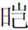
岚（1906—1983） 日记作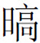
岚，湖南湘潭人。北京清华大学留美预备部学生。曾将所作短篇小说《中山装》寄《语丝》周刊未被采用，鲁迅函告未被采用的原因。——1928（11）5。罗家伦（1897—1969） 字志希，浙江绍兴人。北京大学英文系学生，新潮社主要成员，《新潮》杂志编辑。1920年在北京大学毕业后赴欧美留学，后历任清华大学、中央大学等校校长、国民党中央党史编纂委员会主任委员等职。——1919⑦1，8，9，10，27。⑧23。（11）25，26。1920⑦13。
罗常培（1899—1958） 字莘田，日记又作心田，北京人，语言学家。1926年间在厦门大学任教授。——1926⑩3。（12）5，11，17，31。1927①3，10。
罗清桢（1905—1942） 广东兴宁人，木刻家。1933年时在广东梅县松口中学任教，常将作品寄请鲁迅指导。1934年夏他与张慧拟赴日留学，经沪时曾往访鲁迅，后因张慧生病未能出国，返校后创办《松中木刻》，曾请鲁迅题签。1935年暑假去日本，因被日本警察注意，两月后即归国，仍在松口中学任教。——1933⑦5，7，11，18，19。⑨25，29。⑩5，23，26。（11）19。（12）5，7，24，26。1934②26。③22。④13，18。⑤27。⑥18，19。⑦1，11，17，27。⑧11。⑨30。⑩1，6，20，21。（11）8，19。1935③15，22，29。④13，30。⑤3。⑥5。⑦12。（11）4。1936②23。④17。⑤7，25。
罗蓂阶 可能为教育部职员。——1924③2。⑨14。
罗膺中 见罗庸。
岭 梅 见冯铿。
牧 之 见袁牧之。
和 孙 见阮和孙。
和 荪 见阮和孙。
和 清 见林和清。
和 森 见阮和孙。
和田齐（1904—？） 日本人。大阪《朝日新闻》上海分社职员。——1933⑨23。
和森之子 见阮善先。
和森长男 见阮善先。
季 上 见许季上。
季 巿 见许寿裳。
季 谷 见李宗武。
季 茀 见许寿裳。
季 野 见李霁野。
季 黻 见许寿裳。
季小波（1900—2000） 江苏常熟人。漫画作者，上海晨光研究会负责人之一，自设小波书店，出版期刊《学校生活》与《青年科学》。——1929⑥11。
季天复（1887—1944） 字自求，江苏南通人。1902年在南京水师学堂与周作人同学，通过周作人认识鲁迅。辛亥革命后在孙中山的参谋本部第三局从事军事谍报，后在袁世凯总统府任侍从副官、参谋部参谋。1915年至1917年随参谋次长陈宦入四川任军务处一等参谋，回京后任陆军秘书。——1912⑩4，6，17。（11）10。（12）1，22。1913①12。②16，23。⑧19，31。1914①25。②15，22。③22，26。④12。⑤3。⑥21，28。⑧2，4，16。⑩18，19。（11）15，22，29。1915①2，10，17。②14，16，21。③1，10。⑤9。⑥26。⑦25，31。1916（11）26，27。（12）1。1917⑤9，30。⑧31。⑨1。（11）11。1918（11）23。1920①13。
季巿子 见许世瑛。
季巿侄 见许诗芹、许诗荀。
季巿眷 见沈女士。
季自求 见季天复。
季志仁（1902—？） 江苏常熟人。陈学昭之男友。当时在法国学习音乐，曾为鲁迅购买书籍和版画，并向《奔流》投稿。——1929⑥5，17，21，24。⑧20，21，27。⑨2，3。⑩14，25。（11）16，26，28。（12）2。1930①21。②4，5，7，20。③8，10，11。④11，14。⑤2，6，7，13。1931①6，8。⑧29。⑨16。1932⑤15。⑨11，22。1933③11。1934③23。⑥13。
季春舫 未详。——1936①31。
季巿夫人 即许寿裳继配沈慈晖（1882—1918），日记又作“季巿眷”，浙江绍兴人。许寿裳元配沈淑晖的同父异母之妹。1909年10月与许寿裳结婚，生有两子三女。1918年9月病逝于南昌。——1918⑤13。⑨25。
季巿夫人 见陶伯勤。
季自求夫人 ——1920①13。
秉 中 见李秉中。
秉中夫人 见陈瑾琼。
侍 桁 见韩侍桁。
侃 元 见刘侃元。
依 吾 见骆宾基。
征 农 见夏征农。
径 三 见蒋径三。
金 丁（1909—1998） 原名汪林锡，字竹铭，北京人，作家，“左联”成员。1933年时在上海从事文艺工作。为商讨冯定的译稿出版问题与鲁迅通信。——1933④7。
金 人（1910—1971） 原名张少岩，后改君悌，笔名金人，河北南宫人，翻译家。1934年至1935年在哈尔滨法院任俄文翻译。因向《译文》投稿与鲁迅通信。——1934①20，24。1935③18，19。⑥3，22。⑧17。
金 子 见金子光晴。
金 帆（1914—？） 贵州贵阳人。1933年在上海中国无线电工程学校毕业前，曾函请鲁迅介绍工作。——1933⑩23。
金 君 第三国际工作人员，为营救牛兰夫妇事与史沫特莱同访鲁迅。——1932③28。
金 枝 见魏金枝。
金 钟 未详。——1925⑧14。
金九经（1906—1950） 朝鲜人。因不满日本统治流亡到北京，借住未名社。后曾在北平大学教授朝鲜文和日文。——1929⑤31。⑥2，3。
金天友 未详。——1925⑤3，6，10。
金友华 见金有华。
金有华 日记又作金友华，浙江绍兴人。周建人的同学。——1926⑨1。1929⑩7。1930①31。
金仲芸 荆有麟之妻。——1925⑦5，10，11，14，20，26，28。⑧2，5，11，13，14，16。⑨1，10。⑩14。1926⑦22，29。⑧2，8，9，10，26。（11）30。（12）1。1928②14。③17。⑥18。
金性尧 笔名文载道，日记误作金惟尧、金维尧，1916年生，浙江定海人。因欲与鲁迅会晤及修改文稿等事与鲁迅通信。——1934（11）19，21，24，28。（12）11。
金剑英 未详。——1913⑥17，18。
金惟尧 见金性尧。
金维尧 见金性尧。
金淑姿（1908—1931） 日记作淑姿女士，浙江金华人。费慎祥同事程鼎兴之妻，因被遗弃悒郁而死。后来程编印她的遗信，托费慎祥请鲁迅为之作序。鲁迅在序中对程作了含蓄的谴责。——1932⑦20。
金微尘 未详。——1935⑦5。
金溟若（1906—1970） 名志超，字溟若，浙江瑞安人。《奔流》撰稿者，因所译日本有岛武郎的作品无法出版，曾得到鲁迅的帮助。后与董每戡在上海合办时代书局。——1928⑤2，8，11，16，19，23，29。⑥4，6，9，14，21，25。⑦17，18，30。⑧30。⑨25。⑩12。（12）13，20，26。1929⑩8，10。1930②5。1933（12）11，18。
金肇野（1912—1996） 辽宁辽中人，木刻工作者，“左联”成员。1934年时为北平中国大学学生，平津木刻研究会组织者之一。1935年与唐诃、许仑音等举办第一次全国木刻联合展览会，筹备期间鲁迅曾给予支持。——1934（11）20。（12）17，19，24，30。1935①9，11，13，24。②13，14。③9。⑩3。1936⑤10。
金子夫人 见森三千代。
金子光晴（1895—1975） 日记又作金子，日本爱知人，诗人、画家。1928年春与国木田虎雄、宇留川等来华时经内山完造介绍认识鲁迅。次年3月鲁迅曾观看他创作的浮世绘展览。——1928④2。1929①26。③31。
金溟若友——1928⑥25。
念 敂 见钱念劬。
念 卿 见陶念卿。
朋 其 见黄鹏基。
朋 基 见黄鹏基。
胁 水 即胁水铁五郎，日本人。——1923⑤4。
周 文（1907—1952） 原名何开荣，又名何谷天，字稻玉，笔名周文，日记又作谷天、俊明、何俊明，四川荥经人，作家。1933年10月编辑《文艺》月刊，1934年担任“左联”组织部长，1935年出版《父子之间》等小说，1936年4月冯雪峰自陕北抵沪后，经鲁迅推荐为冯的助手。——1933⑩13。（11）21，30。（12）1，15，22，30。1934①3，6，13，18，19。④10，11。⑤22。（12）12。1935③22，29。④19，25。⑤15。⑧17。（11）2，26。1936①21，29。⑨11。
周 权 曾将北平《北辰报》副刊《荒草》寄赠鲁迅，疑为该刊编辑。——1934⑦1。
周 扬（1908—1989） 字起应，湖南益阳人，文艺理论家。1932年10月起接编“左联”机关刊物《文学月报》，1933年后任“左联”党团书记和“文委”书记。——1932⑩16。1933②3。⑥11。1935（11）26。
周 冲 周建人、羽太芳子的长子，一岁余夭折。——1915③1。④15。⑧17。1916⑦22。
周 君 周健，又名符其实、符号，湖南益阳人。黄埔军校六期学生，谢冰莹之友。谢将他的随军杂记《风沙拾掇》寄给鲁迅。——1930⑤13。
周 晔（1926—1984） 日记又作晔儿、烨儿、煜儿，乳名阿玉，浙江绍兴人。周建人、王蕴如之长女。——1927（11）18，19，30。1928①20。④11。1929④27。⑩17。1930③30。⑥12，22。⑦10，19。⑧9，18。⑨4，27。（12）23。1931（12）7，16，31。1932①18，25。（11）5。（12）12。1933⑤27。⑦30。⑩10。（12）23。1934①18。②2，5。③4，31。④1，3，15。⑤6，26。⑥16。⑦12。⑧11。⑩7，27。（11）24。（12）15。1935①5，26。②16。③9，30。④13。⑤4，18。⑥8，22，29。⑦20。⑧3，17，31。⑨14。⑩12。（11）2，23。（12）14，27。1936①11，25。②22。③14。④4，25。⑤16。⑦4。⑧8。⑨16，19。⑩10。
周 涛 原名罗滨荪，1911年生，湖南安仁人。北京大学学生。——1935①15，31。②12，14。
周 琳 湖北人。徐吉轩托保应县知事考试者。——1914②3。
周 颖（1907—1991） 河北南宫人，聂绀弩夫人。当时是“剧联”领导的上海中国艺术供应社经理。——1934（12）17，19。1935⑤8。
周 蕖 乳名蕖官，1932年生，浙江绍兴人。周建人、王蕴如之三女。——1933③26。④30。⑤14。⑦12，30。⑧16，20，27。⑨3。⑩8，22。（12）24。1934①21，28。⑤6，21。⑥25。⑧11，14。⑩20。（11）10。（12）8，29。1935③23。④6，27。⑤6。⑦6，27。⑧24。⑨21。⑩26。（12）7。1936①4。②8。③7，28。④18。⑦11。⑧5。⑨5。⑩3。
周 瑾（1927—2001） 日记又作瑾男、瑾儿，乳名阿菩，浙江绍兴人。周建人、王蕴如之次女。——1928⑨22。1929④27。1930①13。⑥22。⑨4。（12）23。1931②19。③20。⑧15，16。（12）16，31。1932（12）12。1933⑤27。⑦30。⑩10。（12）23。1934①18。②5。③4，31。④1，3，15。⑤6，26。⑥16。⑦12。⑧11。⑨29。⑩13。（11）3。（12）1，22。1935①13。②2，23。③16。④20。⑤11。⑥1，15，29。⑦13，20。⑧10，17。⑨7，28。⑩19。（11）9，30。（12）21。1936①18，25。②29。③21。④11，25。⑤23。⑦4，25。⑧15。⑨26。
周大封 浙江绍兴人。曾任山东莱阳县知事。——1913①3。
周子和 名煌诚，字子和，浙江诸暨人。绍兴浙江第五中学舍监。——1913⑥30。
周丰一（1912—1997） 原名丰，又称丰丸，后改丰一，浙江绍兴人。周作人之子。1919年至1923年间为北京孔德学校学生。——1912⑤23。⑨27。（12）21。1913⑤23。⑦3，4，13，26，27。⑧7。⑩5。1914⑥7。⑦4。1916②28。⑩25。1918①3。⑤31。⑥24。1919⑧10。⑩12，19。1920④25。⑥6。1921②27。⑥2。⑦10。1923④8。⑤13。
周丰二（1919—1992） 原名沛，改名丰二，诨名小土步，日记又作孩子，浙江绍兴人。周建人的次子。——1919⑤20。1920①10，12，16。⑤16，19，20，24，25，26。⑥6，19，22，26。⑦5，9，13，15，16。1921⑦21，29。⑧11。1924⑥21。⑦7。
周友之 见周友芝。
周友芝 日记又作周友之、周友芷，浙江绍兴人。当时在财政部公债司任职。——1915②15。③31。⑨21。（12）26。1916④21。⑤7。⑦7。
周友芷 见周友芝。
周凤升（1882—1918） 名文治，字伯升，又字凤升，日记作升叔，浙江绍兴人。鲁迅的叔父，江南水师学堂毕业，曾任联鲸兵轮轮机正。——1912⑥7，22。1918①27。
周凤岐（1876—1919） 字鸣山，小名芳，日记作芳叔、方叔，浙江绍兴人。鲁迅的族叔，肄业于南京江南水师学堂。当时在绍兴南街施医局任职。——1913⑦1。1919⑦17。（12）17。
周凤珂（1872—1932） 字伯撝，小名谦，日记又作谦叔，浙江绍兴人。鲁迅的族叔，曾在南京司法界任职。——1914②12，18，25。③11，19，22，25。⑤10，28。⑧13，21。1915①29。③5，8。1917⑩26。（11）15。
周予同（1898—1981） 名毓懋，字予同，浙江瑞安人，历史学家。上海商务印书馆《教育杂志》编辑。——1926⑧30。
周正扶 湖南人。上海暨南大学历史社会系学生，“坚冰社”成员。——1929（12）4。
周立波（1908—1979） 名绍仪，字凤翔，笔名立波，湖南益阳人，作家，“左联”成员。1935年时为《时事新报·每周文学》编辑。——1935（12）13。
周弁明 见周辨明。
周向明 未详。——1928⑧29。
周江丰 见江丰。
周志初 未详。——1927⑩11。
周志拯 浙江玉环人。绍兴浙江第五中学校长。——1927（12）10。
周作人（1885—1967） 原名櫆寿，改名作人，字启孟、启明，号知堂，笔名岂明、药堂、仲密等，浙江绍兴人，文学家。鲁迅的二弟。早年就读于南京江南水师学堂，1906年赴日本留学。1911年回国，次年6、7月间在杭州任浙江省教育司视学。1913年4月至1917年3月在绍兴浙江省立第五中学任教员，其间被选为绍兴教育会会长，编辑绍兴县《教育会月刊》。1917年4月至北京，先任北京大学附属国史编纂处编纂员，后在北京大学、北京师范大学、北京女子师范大学、燕京大学等校任教。曾编辑《语丝》周刊。1923年7月兄弟失和。抗日战争时期任日伪华北政务委员会教育总署督办等职。——1912⑤6，8，11，12，14，19，23，27，28，31。⑥1，5，6，9，10，12，13，15，16，22，23，26，29。⑦1，4，5，6，7，11，12，14，19，20，21，25，26，27。⑧2，7，8，11，12，13，14，16，18，23，24，26，28，31。⑨1，4，9，10，13，15，17，18，20，21，24，26，27，28，29。⑩1，4，6，11，12，15，17，20，22，24，26，31。（11）1，4，6，9，10，13，14，15，16，17，22，23，24，26，27，30。（12）1，3，6，8，11，13，15，18，21，23，25，28，30。1913①1，2，4，7，8，10，12，15，17，19，20，22，24，25，26，29。②2，3，5，7，9，12，15，16，17，19，20，21，22，23，26，27。③1，2，4，5，8，9，12，13，16，18，19，23，28，30，31。④2，5，6，9，10，11，13，15，16，19，20，25，27，28，30。⑤1，5，10，13，15，18，20，21，23，24，25，28，31。⑥2，5，7，10，14，16，18。⑦1，5，13，28，29，30。⑧2，7，8，9，11，12，15，20，21，23，24，27，28，31。⑨2，5，8，9，10，11，12，13，15，16，17，18，21，22，23，26，27。⑩1，3，5，7，9，12，14，16，19，21，23，24，25，26，27，28，31。（11）1，3，4，6，8，11，13，16，17，18，21，23，26，28。（12）1，3，4，5，7，8，11，12，13，15，18，20，23，24，25，27，29。1914①1，2，3，4，6，7，8，10，12，13，14，15，16，17，18，19，20，23，25，27，28，29，30。②1，2，5，6，10，14，15，16，19，20，22，25，27。③1，2，6，8，9，11，13，16，17，21，22，25，26，27，29，30，31。④3，5，8，10，12，15，17，20，21，25，26，28，29，30。⑤3，4，8，9，13，14，18，19，23，24，26，27，28，31。⑥1，3，6，7，9，10，12，15，16，20，21，23，26，28，30。⑦1，2，4，5，6，10，11，15，16，20，21，25，26，29，30，31。⑧4，5，9，10，11，14，15，19，20，22，23，27，28，30，31。⑨2，5，7，10，12，15，16，19，20，21，25，26，30。⑩1，5，6，8，11，12，15，16，18，21，22，25，26，27，29，31。（11）2，4，5，6，8，10，11，12，15，17，18，21，23，26，27，28，30。（12）1，2，6，10，12，15，17，20，21，25，26，27，30。1915①1，3，4，6，7，9，10，11，13，14，16，19，22，24，27，29，31。②2，5，7，8，10，12，15，16，19，23，24，26。③1，3，7，8，11，12，13，14，16，17，19，21，23，24，26，28，29，31。④1，2，4，6，8，9，10，13，16，18，20，21，23，26，27，28，30。⑤1，3，4，6，9，10，11，13，15，17，19，20，21，23，26，30。⑥1，5，6，9，10，11，15，17，19，20，21，22，24，26，28，29，30。⑦2，3，4，6，7，8，9，10，11，13，15，16，19，20，22，23，26，27，28，29，31。⑧1，4，5，7，8，10，11，12，13，14，16，17，20，21，23，24，25，26，27，30，31。⑨3，4，5，6，8，9，10，11，12，13，14，15，16，17，18，19，21，22，25，26，29，30。⑩2，4，7，8，11，12，14，15，16，19，20，21，22，23，25，26，29，30。（11）2，4，8，9，10，12，13，15，16，19，20，21，22，24，26，29，30。（12）3，4，8，9，12，13，17，18，20，21，25，26，27，28，30，31。1916①3，4，8，12，13，16，17，19，21，24，25，26，29，30。②1，4，5，8，9，10，11，12，14，15，18，19，22，23，27，28。③2，3，6，7，10，11，12，13，15，16，17，20，22，26，27，30，31。④2，3，6，7，11，12，17，18，19，21，23，25，28，29。⑤2，3，6，7，9，12，13，14，17，18，19，21，23，26，28，29。⑥2，3，5，6，7，9，10，12，13，15，16，18，19，20，21，22，23，26，27，29，30。⑦3，4，5，7，8，11，13，15，16，18，19，22，24，25，26，28，30，31。⑧2，3，4，6，8，9，10，11，12，14，15，16，18，20，21，25，29，30，31。⑨1，4，5，7，8，10，11，12，13，14，16，17，19，20，21，22，25，26，27，29，30。⑩3，4，5，7，8，9，12，13，14，16，17，19，22，23，25，26，28，29，31。（11）2，3，6，7，8，9，10，12，15，16，18，19，22，23，26，27，29。（12）2，8，20。1917①4，5，8，10，11，12，15，16，19，20，23，24，25，29，30。②3，4，8，11，12，13，15，16，20，21，23，24，25，28。③4，5，6，7，8，10，11，13，14，16，17，19，20，24，26，28，30。④1，2，7，8，9，15，22，23，28。⑤6，12，13，16，21，24。⑥10，14。⑦7，12，13，14，16，22，29。⑧5，19。⑨1，9。⑩7，20，21，22。（11）10，11，18，25，27，29。（12）14，23，28，30。1918①4，13，23。②1，3，11，13，17。③15，23。④1，7，19，30。⑤10，31。⑥1，3，5，17，20，24，25，26，27，29。⑦1，2，4，8，9，12，13，14，15，17，18，19，20，21，23，25，26，27，29，31。⑧1，2，3，5，6，8，10，11，12，14，15，16，17，18，19，20，21，23，24，25，28，29，30。⑨1，3，6，9，10，11，17。⑩6，11，14，20，27。（11）6，13，19。（12）6，22，26，28。1919①2，16，21。②2，6，12，16。③10，18，29，30，31。④3，5，9，12，13，17，18，19，21，26，29。⑤3，5，10，13，14，17，18。⑥1，6，19。⑦2，8，9，12，14，17，18，21，22，26，31。⑧2，4，6，7，10。⑨6。⑩19。（11）21。（12）9，11，12，16，21，22，29。1920①13。④23，25。⑤11，22。⑥25，26。1921①6。③29。④2，5，11，12，22，27，30。⑤1，7，10，14，18，25，26，27，28，31。⑥2，5，12，14，18，19，22，27，29，30。⑦1，2，4，6，7，8，10，13，17，19，22，23，24，26，28，30，31。⑧1，3，4，6，7，8，9，11，12，14，17，18，19，21，25，26，28，29，30，31。⑨2，3，4，5，6，7，9，10，12，13，17，19，21，26。⑩9，19。1922⑩15。（12）7。1923①20。②7，14，17。④8，15。⑤10，13，26。⑥26，29。⑦3，19。1924⑥11。
周伯超 来信挑拨鲁迅与创造社的关系。——1928②9。
周若子（1915—1929） 原名蒙，浙江绍兴人。周作人次女。——1915⑩29。1919⑧10。⑩19。
周秉钧（1864—1939） 字心梅，浙江绍兴人。鲁迅族叔。绍兴元泰纸店职员。——1916（12）8。1919（12）9，21。1920⑧13。1921⑩2。（12）25。1929（11）25，26。1931③9。1933（11）13。（12）23。
周秉铣（1865—1922） 字梅生，号传梅，浙江绍兴人。鲁迅族叔。——1919（12）5。
周建人（1888—1984） 原名松寿，改名建人，字乔峰，笔名克士等，浙江绍兴人，生物学家。鲁迅的三弟。原在绍兴僧立小学和明道女校任教，并研究生物学。1919年到北京。1921年九月赴沪任商务印书馆编辑。1932年一·二八战事后曾暂离该馆往安徽大学任教，同年8月回商务复职。1933年曾参加中国民权保障同盟。——1912⑤11，23，31。⑥1，10，14，15，16，23，28，29。⑦4，5，6，11，12，14，21，25，27。⑧12，13，28，31。⑨4，15，17，18。⑩1，6，15，17，31。（11）1，13，15，27。（12）1，18。1913①12，15，26，29。②15，17。③5，8，13，23，28。⑥26，28。⑦5，10，14。1914②27。③1，17，18。⑤23，24。⑥7，22，24，28。1915③1，3。④23，28，30。⑥28。⑧17。⑨3，4。（11）12。（12）3。1916①3，8。⑦19。⑧4，6。⑨3，5，8，10，11，12，16，17，19，24，30。⑩1，5，10，11，12，16，17，20，23，26，28。（11）2，3，12，18，19，20，22，23。1917①4，5，13。②8，11，14，16，24，28。③10，11，25，28。④7，8，13，16，17，25，26。⑤5，13，14，15，17，19，23，24，27，28。⑥3，27。⑦17。⑧4，5，13。（11）11，24。（12）12。1918①27。②4，22。③4，7，30。④8。⑥26。⑦13，15。⑧30。⑨2，11。⑩12，21，24。（11）9。（12）2，20，24，29。1919①15，26，28。②10，25。③21，28。④2，3，7，9，14，15，17，22，23，27，28，30。⑤3，5，8，10，12，13，17，19，20，22，27，31。⑥9。⑦4，9，12，14，15，17，19，20，22，23，24，29，30。⑧2，4，6，7，8，11，18，20，22，28。⑨3，5，15，18，19。（12）19，22，24。1920①20。⑤20。1921②21，27，28。④16。⑤13，15，28。⑥2。⑦19。⑧10，29。⑨2，9，13，17，25，26，30。⑩4，15，16，17，18，23，27，28，29。（11）15，16，18，24，29。（12）30，31。1922②1。③6。⑤25。1923①5，6，14，18，27。②25。③3，27。④30。⑤1，10，13，14，19，21，22，26，27，28。⑥1，10，17，26，29。⑦3，12，14，16，17，23，28，30。⑧1，5，6，13，14，16，22，24，26，27。⑨19。⑩1，6，13，15，22，23，27，29。（11）2，4，6，10，12，13，30。（12）2，6，7，14，21。1924①8，17，25，26。②1，4，14，15，23，25。③1，6，11，17，20，22，24，29。④12，15，24，26，29。⑤5，6，13，14，20，21，29。⑥2，7，8，10。⑦3，5，6，7。⑧12，14，16，17，18，23，24，26，28。⑨2，4，11，14，18。⑩1，3，16，20，31。（11）5，19，30。（12）3，6，10，18，28。1925①6，17，27，28。②14。③2，9，10，14，24，28。④10，11，13，20，21。⑤2，6，9，13，20，25，27。⑥4，12，16，22，23，25。⑦2，24，31。⑧2，12，17，18，24，31。⑨12，13，21，29。⑩6，7，16，17。（11）1，7，24，25，28。（12）26。1926①6，21。②7。③1，2，3，22，28，30。④2，21，24。⑤4，24。⑥3，18，21。⑦4，5，21，28。⑧6，7，16，29，30，31。⑨1，4，5，11，13，14，15，16，17，19，23，26，29。⑩4，5，6，18，19，25，27，29，30。（11）15，29，30。（12）1，5，15，17，19，20，24，27。1927①5，8，9，12，23，26。②10，15，26。③3，5，15，18，20。④8，19，26，28。⑤13，14，23，30。⑥1，2，8，14，18，22，23。⑦4，16，17。⑧1，7，9，10，21。⑨14。⑩3，4，5，6，7，8，9，11，15，16，17，18，22，23，24，25。（11）5，8，10，12，13，14，19，26，30。（12）1，3，17，25，29，31。1928①8，15，19，20，22，26。②9，12，26，29。③11。④5，8，22，23。⑤7。⑥2，10，12，24。⑦3，6，9，12，30。⑧4，6，8，9。⑨2，13，27。⑩8。（11）20，24，25。（12）1，12，27，30，31。1929①18。②11。③8，17，31。④5，27。⑤13，15，16，20，21，23，24，27。⑥7，8，10，23，26。⑦10，13，16，24。⑧1，6。⑩2，7，8，10，17，21。（11）25。（12）16，29。1930①28。②17。③21，22，23，24，25，26，28，29，30。④3，7，9，11，12，14，16，17，27，30。⑤14，17，19，26，28，29，31。⑥2，5，6，10，12，15，20，22，27，29。⑦6，9，10，14，19，21，22，23，26，28。⑧2，4，7，9，15，17，18，20，22，23，26，29，31。⑨6，7，10，12，14，22，26，27。⑩1，4，7，20，28。（11）5，9，13，15，21，26。（12）5，7，13，25，27，30，31。1931①3，6，8，11，15，18。②1，8，20。③20。④4，19，20，23，28，30。⑤15，16，22，25，31。⑥1，3，7，9，18，23，24，26，27。⑦2，7，16，22，29。⑧5，10，12，15，16，22，23，24，28，30。⑨6，8，9，13，16，20，25，26，29。⑩3，5，9，11，15，17，18，22，30。（11）6，8，10，13，16，21，29。（12）7，13，15。1932①1，2，4，5，10，19，23，26。②8，10，14，15，16，21，25。③4，13，14，16，18，22，28，30。④5，7，12，18，26，27，30。⑤3，8，10，11，12，15，16，27，29。⑥3，5，13，17，18，25，26，27，28。⑦2，7，13，15，17，19，22，23，25，27，28，30。⑧1，4，6，9，11，12，14，15，17，21，25，28。⑨1，3，4，8，11，16，18，24，29。⑩1，3，8，12，15，23，26，27，30。（11）2，5，9，10，13，21，22，30。（12）3，10，11，13，18，20，24，26，29，30。1933①1，3，4，6，8，11，15，19，22，25，28。②3，12，13，19，23，26，27。③5，6，11，13，20，25，26，28，31。④2，3，6，7，8，14，16，20，28，30。⑤1，3，7，12，13，14，21，24，25，27。⑥3，7，11，17，21，25，29。⑦2，7，12，13，16，22，23，24，30。⑧3，5，8，10，11，13，16，20，27，30。⑨3，5，10，12，17，24。⑩1，3，8，10，15，22，23，29，31。（11）5，9，12，16，19，26，29。（12）2，3，8，10，17，20，24，31。1934①2，6，7，9，12，14，16，18，21，27，28，30。②2，3，5，6，7，10，12，15，19，25，26。③4，5，6，11，13，14，18，19，21，26，31。④2，7，10，14，16，17，21，23，26，27，29。⑤1，3，4，5，6，7，12，14，19，21，24，26，31。⑥2，9，11，13，16，23，25，28，30。⑦2，4，7，10，12，14，16，18，21，25，28，30。⑧4，11，14，16，20，24，25。⑨1，2，5，8，15，17，21，22，29。⑩1，7，13，14，19，20，22，27，31。（11）3，10，13，14，17，24，29。（12）1，8，15，18，22，25，29，31。1935①5，7，10，13，15，17，19，26。②2，5，9，11，16，18，19，23，26。③2，8，9，11，16，23，25，27，30。④3，4，6，8，11，13，15，20，22，27，30。⑤4，6，11，16，18，25。⑥1，6，8，12，15，22，25，28，29。⑦6，13，20，23，27。⑧3，5，10，15，17，24，30，31。⑨5，7，10，11，14，17，18，21，28，29。⑩4，12，14，19，20，25，26。（11）2，9，11，13，16，23，30。（12）1，4，7，14，21，24，27。1936①4，9，10，11，18，25。②1，4，5，8，12，15，18，22，26，29。③6，7，9，11，14，17，19，21，28。④1，4，9，11，16，18，25，28，30。⑤2，3，7，8，9，16，19，21，23，30。⑥2。⑦1，4，7，8，11，18，21，25，29。⑧1，5，8，12，15，18，19，22，26，29，31。⑨2，3，5，6，8，12，16，23，26，30。⑩1，3，7，10，14，17。
周柳生 未详。——1933①11。
周昭俭 又名周俭，约1919年生，江苏常州人。文学爱好者，常向鲁迅请教文学创作问题，1936年曾参加《文学青年》编校工作。——1935⑩12。（11）19，25，30。（12）8，20。1936④19，28。⑤1。
周剑英 曾因《伪自由书》被禁无处购买事函告鲁迅，鲁迅赠以《伪自由书》与《准风月谈》各一册。——1935（12）14，30。
周冠五（1887—1970） 名凤纪，字冠五，笔名观鱼，日记作朝叔、潮叔，浙江绍兴人。鲁迅族叔。——1916③30。④3。⑥25。⑦19。⑧17。
周颂棣（1906—？） 浙江诸暨人。中华书局编辑。通过冯雪峰请求鲁迅书写条幅。——1932③31。
周阆风 未详。——1929⑥11。
周海婴 日记又作孩子，1929年生，浙江绍兴人。鲁迅之子。——1929⑨27。⑩1，10，11，12，16，18，22，23，28。（11）1，6，10，14，18，22，26，30。（12）4。1930①4，6，13，31。②6，11，12，28。③2，4，9，10，24，27，31。④10，11，16，23，28，30。⑤1，2，8，12，13，19，29。⑥13，16。⑦4，5，6，8，9，10，11，12，13，16，18，19，20，24，29。⑧30。⑨1，6，17，25，26，27，30。⑩2，4，6，31。（11）3。（12）21。1931①5，8，16，20。②1，28。③4，8，21。④20，24，26。⑤31。⑥2，4，5，23，29。⑦1，2，4，13，28，30。⑧10，11，15，30。⑨13，17，20，25，26。⑩26，31。（11）21。（12）4，6，8，11，15，22，31。1932①23，25，27。③13，19，20，21，24，26，28。⑤3，6，7，10，12，13，20，21，22，23，24，25，27，29，30。⑥1，3，5，7，9，13，14，15，18，19，20，21，25，26，29，30。⑦1，3，5，14，16，20，21，22，30。⑧7，9，11，29，30。⑨1，6，11，13，15，17，18，19，21，23，24，25，27，28，29，30。⑩1，3，5，7，9，11，13，15，17，19，21，23，25，28。（11）6，7，8，9，25。（12）9，23，25，28，30。1933①4，9，12，13，15，19，21，23，25，31。②8，10，12，16，20，28。③17，19，23。④2，4，6，8，14，20，23，29，30。⑤1，2，5，9，15，30。⑥7，8。⑦1，2，4，8，11，12，15，27，28。⑧2。⑨1，13，18，20，24，26。⑩14，15，17，19，20，21，23。（11）18。（12）3，5，6，8，12，22，23，24，30，31。1934②4，22。③7，8，9，11，13，14，15，16，17，18，29。④1，3，8，15，20，24，25，26，27，29。⑤1，3，9，11，18，22，27。⑥8，18，19，20，23，30。⑦4，13，21，30。⑧2，3，7，11，14，16，17，19，21，24。⑨5，9，15，16，17，18，21，22，27，30。⑩6，7，8，18，25，28。（11）8，11，17，26。（12）16，19，26，27，30。1935①1，9，10，11，13，14，16，25，29，30。②2，8，16，28。③5，18，19，21，23，25，27，29，31。④2，6，20，21，22，24，30。⑤2，3，4，7，9，11，17，26，28，30。⑥6，16，17，18，20，21，24，26，29。⑦7，15，21。⑧5，6，9，10，12，14，17，19，20，25。⑨1，14，15，24，26，27。⑩1，10，27。（11）2，3，10，24，26，27。（12）2，3，11，18，21，23，24。1936①2，3，4，12，13，18，19，22，29，30。②4，15，23。③18，28。④11，18，26。⑤7，10。⑦10，12。⑧1，5，7，11，31。⑨1，2，13。⑩4，6，10，11。
周陶轩（1903—1967） 名德鎔，字陶轩，浙江杭州人。黄萍荪的表弟，当时在家乡赋闲，曾通过黄萍荪转托郁达夫请鲁迅书写条幅。——1933⑥28。
周棱伽 见周楞伽。
周楞伽（1911—1992） 日记又作周棱伽，江苏宜兴人。1935年为出版长篇小说《炼狱》经周昭俭介绍与鲁迅通信。1936年4、5月间曾编辑《文学青年》杂志。——1935（12）8，20。1936①20。②3。④11。
周福清（1838—1904） 原名致福，号介孚，浙江绍兴人。鲁迅的祖父。清同治六年（1867）丁卯科举人，十年（1871）辛未科进士，翰林院庶吉士。——1912⑨21。
周静子（1914—1984） 原名谧，浙江绍兴人。周作人长女。——1914⑦10。1915⑧26。1919⑧10。⑩19。
周嘉谟 未详。——1923④15，17。⑤21。
周锵凤（1854—？） 字忆农，日记又作意农，浙江绍兴人。鲁迅族伯，在保定任职。——1913⑩25。（11）3。1917⑤8，22。⑨22，28。1919⑥5，21。
周醒南 广东人。厦门市工务局局长。——1926⑨21。
周辨明（1891—1984） 字忭民，日记作弁民，福建惠安人。曾任厦门大学文科外语系教授、学生指导长。1926年秋后为总务处主任。——1926（12）31。
周鞠子（1917—1976） 又名晨、马理、马理子，浙江绍兴人。周建人、羽太芳子之女。——1917（11）11。1922⑤22。1924③8。1925③12。1936⑧18，20，21，27。⑩4，6，10。
庖 人 京师图书馆分馆厨师。——1918⑤16。
育 和 见王育和。
郑 君 见郑效洵。
郑 君 见郑伯奇。
郑 奠（1896—1968） 字介石，号石君，浙江诸暨人，语言学家。1923年至1926年在北京女子师范大学任教，1928年在杭州浙江大学任教，1932年在北京大学任教。——1924⑤21。⑥21。1925⑨13。⑩1，21。1926②15。⑦3，18。⑩16，18。1928③26。⑦13，14，15。⑧5。（12）15。1929⑧28。1932（11）23，27。
郑小箴（1927—2002） 福建长乐人。郑振铎之女，当时是上海协进小学二年级生。——1935⑧6。
郑天挺（1899—1981） 字毅生，福建长乐人，历史学家。曾在北京大学预科任教，并在北京女子师范大学兼课。1928年赴杭州途经上海时曾往访鲁迅。——1928③26。
郑介石 见郑奠。
郑石君 见郑奠。
郑仲谟 未详。——1927③7。④4。
郑汝珍 见曹靖华。
郑阳和（1889—？） 江苏南京人。曾在教育部会计科及北京大学会计课任职。——1914①2。1919⑤17，21。
郑孝观（1898—？） 又名宾于，四川酉阳人。曾为北京大学研究所国学门研究生。1927年在福州协和大学任教。——1927①10。②24。
郑伯奇（1895—1979） 名隆谨，字伯奇，笔名郑君平等，日记又作郑君，陕西长安人，作家，创造社成员、“左联”成员。1927年11月为《创造周报》复刊事往访鲁迅；1932年至1935年秋在上海良友图书印刷公司任职，曾为该公司编辑《新小说》月刊，鲁迅常向其推荐青年作家文稿。——1927（11）9，19。1930⑥15。1932（11）7。1933⑨28。1934②7。（11）17，28。1935①10。②21，26。③25，26。⑥2，12，14。⑦2。⑧22。⑨1。1936⑦9。
郑君平 见郑伯奇。
郑佩宜（1888—1962） 江苏吴江人。柳亚子夫人。——1928⑧19。1932⑩5。
郑泗水（1908—？） 福建永春人。1927年间为厦门大学法科政治系学生，后转学至上海暨南大学。——1927④8，13。⑥1，2。⑩4。1928②7。（11）18，19。
郑振铎（1898—1958） 笔名西谛，福建长乐人，文学家，文学研究会发起人之一。1921年4月在上海编《时事新报·学灯》，沈雁冰接编《小说月报》后，他们曾函请鲁迅为《小说月报》写稿。同年5月入商务印书馆编辑《文学研究会丛书》，1923年后长期主编《小说月报》，因此常和鲁迅通信。1927年5月赴欧洲，1928年10月回国。1931年秋到北京燕京大学任教。1933年初开始与鲁迅合编《北平笺谱》，以后又重印《十竹斋笺谱》。1934年1月与靳以创办《文学季刊》，曾约请鲁迅撰稿。1935年初到上海任暨南大学文学院院长，并为生活书店编辑《世界文库》，鲁迅曾为之译果戈理的《死魂灵》。其后协助鲁迅翻印《凯绥·珂勒惠支版画选集》和出版《海上述林》。——1921④11。⑤16，19。⑨10。1923④30。⑤1，23。1924②2，3，4。⑤15，16。⑥11。⑦7。（12）2，5。1925③28。④7，9，19。⑥4。⑩9。1926⑤27。⑥3。⑧16，30。（11）3，4。（12）13，14，24，28，31。1927⑥16。⑩11。1930⑩4。1931①20。⑥9，27。⑦23，24。1933②3，6。④6。⑨7，17，18，28，30。⑩1，3，4，11，19，21，27，28，31。（11）3，11，20，25。（12）2，4，5，13，20。1934①11，16，22，26，29。②9，15，24，27。③3，9，10，14，24，26。④25。⑤3，16，24，31。⑥2，7，20，21，27，30。⑦5，7，30。⑧5，10，15，17。⑨2，27，28。⑩7，8，21，27。（11）7，8，9，10，16，25。（12）3，5，10，27。1935①8，9，17，21，25。②1，6，12，17。③9，20，28，30。④5，8，9，10，12，17，19，22，30。⑤12，20，23，25。⑥16，27。⑦1，27。⑧1，5，6，10，11，13，17。⑨11，17，23。⑩18，19。（11）5，7，9。1936①11。③12，22。④10。⑨29。
郑效洵（1907—1999） 日记又作郑君，福建闽侯人，狂飙社成员。——1925（12）22。1926②12，13。
郑家弘 未详。——1935③6。
郑宾于 见郑孝观。
郑野夫（1909—1973） 原名郑诚芝，浙江乐清人，木刻家。1932年8月与原一八艺社成员陈卓坤等组织野风画会，鲁迅曾应邀往演讲。1934、1935年间，曾两次将所作木刻连环画《水灾》和《卖盐》寄赠鲁迅，1936年又组织铁马版画会。——1933（12）20。1934①12，14，26。1935⑤30。（12）14。1936②17。④9。⑤8，30。⑦20。
郑惠贞 见成慧贞。
郑振铎女 见郑小箴。
单忠信 未详。——1934⑩20。
单新斋 安徽人。鲁迅在南京矿路学堂学习时的同学。——1913⑨2。
炜 春 见楼炜春。
浅 野（1908—？） 笔名原胜，日本作家。当时住上海施高塔路大陆新村八号三楼。——1936①9。④7。⑩12。
河 内 未详。——1933（11）27。
河 清 见黄源。
河野樱 日本人。池田幸子之友。——1936⑧23。⑨23。
河清夫人 见许粤华。
河野女士 见河野樱。
学 昭 见陈学昭。
学 琛 见洪学琛。
沸 声 见段沸声。
波 良 见王宝良。
波多江种一（1897—1961） 日本人。日本《每日新闻》上海分社职员。——1930②24。
泽 村 见泽村专太郎。
泽村幸夫（1883—1942） 日本人。1929年前后为日本《每日新闻》东亚部顾问。——1929⑨28。⑩9。（11）3。1931②5。
泽村专太郎（1884—1930） 日本人。东京帝国大学美术史教授。当时在北京做研究工作。——1923④16。⑤23，25，26。⑧23。（12）4。
宗 伟 见徐宗伟。
宗 武 见李宗武。
定 谟 见陈定谟。
宜 宾 见瞿秋白。
空 三 见陈空三。
宓汝卓（1903—？） 字君伏，浙江慈溪人。1925年北京大学文预科毕业，1926年在日本早稻田大学学习时曾自称鲁迅代表，向盐谷温教授索取《三国志平话》，以该书尚在装订中而未果。事后托郑振铎函请鲁迅认可其为代表。——1926（11）3。
诗 英 见许世瑛。
诗 苓 见许诗苓。
诗 荃 见许诗荃。
诗 荃 见徐诗荃。
诗 荀 见许诗荀。
诗 堇 见许诗芹。
房师俊 1911年生，山东益都人。复旦大学外国文学系学生。——1936④11。
房曼弦 未详。——1928①19。
诚 一 见
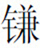
田诚一。建 功 见魏建功。
建 行 未详。——1930③15。
建 纲 未详。——1931⑥28。
妹 尾 日本人。上海须藤医院医师。——1936⑧7。
孟 克 见魏猛克。
孟 余 见顾孟余。
孟 真 见傅斯年。
孟 渔 见顾孟余。
孟十还（1908—？） 原名孟斯根，辽宁人，翻译家。1934年11月起常给《译文》月刊投稿。鲁迅曾约他同译果戈理选集。1936年4月起编辑《作家》月刊，得到鲁迅的支持。——1934⑩21，24，29，30，31。（11）22。（12）4，5，6，8，27。1935①17，23，27，30。②1，4，6，8，9，16，18，22，24，25，27。③3，8，9，17，20。④21。⑤6，11，22，23。⑥3，18，19。⑦4，27。⑨2，3，8，13。⑩4，12，19，20。（11）6，8，9，24。（12）4，6，20，22。1936①22。②12，18，22，27。③6，20，23，28，31。④9，11，14，23。⑤6，13，15，25。⑥5。⑧11，14，15，21，22。⑨5，16，26，29。
孟云桥（1904—？） 名繁倬，字云桥，山东章邱人。北京大学文预科学生。函请鲁迅指导学习方法，鲁迅曾予复信。——1925⑨20。
孟斯根 见孟十还。
绀 奴 见聂绀弩。
绀 弩 见聂绀弩。
练熟精 未详。——1936⑨10。
细 井 日本人。余未详。——1923④8。
织 芳 见荆有麟。
绍 明 见董秋斯。
绍 原 见江绍原。
经子渊（1877—1938） 名亨颐，字子渊，浙江上虞人。和鲁迅同时期留学日本，回国后在杭州浙江两级师范学堂任教职。1914年时为杭州浙江省立第一师范学校校长，兼浙江省教育会会长。——1914③21。
经泰来（1880—？） 浙江绍兴人。鲁迅在绍兴府中学堂任教时的同事。1913年时仍在该校（已改名浙江省立第五中学）任教。——1913⑥30。
九画
春 才 见何春才。
春 台 见孙福熙。
珂勒惠支（Käthe Kollwitz，1867—1945） 德国版画家。鲁迅曾通过史沫特莱购买她的作品。1931年柔石等五位青年作家被国民党当局杀害时，她曾与世界著名文艺家联名抗议。德国纳粹上台后，她和另一些德国文艺家同遭迫害。鲁迅曾两次向她购买版画原拓，1936年7月以“三闲书屋”名义编印出版《凯绥·珂勒惠支版画选集》，作为对她七十寿辰的祝贺。——1931④7。⑤24。⑦24。⑧20。1936⑧31。
封德三 名燮臣，浙江绍兴人。江南水师学堂毕业。——1917⑧19，29。⑨1，2，9，21，30。1918③30。1920⑦9。⑨22。⑩13，14，25。（11）3，9，11。
项 拙 又名亦愚，胡也频在海军学校学习时的同学。1924年12月至次年5月12日与胡也频、荆有麟等合编《京报·民众文艺周刊》期间，与鲁迅有过交往。——1924（12）28。1925②27。④16，19。
项亦愚 见项拙。
政 一 见田诚一。
赵 清 未详。——1936④28。
赵 越 1912年生，山东安丘人。木刻爱好者，当时在北平私立华北大学艺术科学习西画，曾参加全国木刻联合展览会的筹备工作。——1935⑦28。1936⑧5。
赵 德 即赵德清，时在日本东京办《日文研究》月刊，该刊辟有“日文华译”栏目，将鲁迅列为该栏目执笔者之一，也登载过鲁迅的两篇译文。——1935⑨19。
赵广湘（1908—1934） 笔名贺非，日记又作侯朴、贺菲，河北武清人，翻译工作者，韩侍桁之友。1930年他据德译本重译《静静的顿河》第一卷，鲁迅曾为之校订、翻译作者小传并作后记。——1930③13，15。⑤16，17，31。⑦27。⑧30。⑨12，16。⑩2，3。
赵之远（1894—1964） 浙江绍兴人。法学家。当时是北京大学法律系学生。——1920①25。
赵子厚 未详。——1923⑤12。
赵少侯（1899—1978） 名祖欣，字少侯，浙江杭州人，翻译家。1921年北京大学法文系毕业。1926年至1929年间任北京大学讲师、中法大学教授等职。《莽原》半月刊投稿者。——1926⑧3。1929②13。
赵风和 未详。——1926（12）14，19。1927④27。⑤16。
赵丹若（1892—1966） 名廷炳，字丹若，浙江嘉善人。北京大学化学系毕业，1924年起任北京女子师范大学化学教授、理科主任。——1926⑧14。
赵汉卿（1889—1950） 名建藩，字叔屏，号汉卿，浙江萧山人。《越铎日报》发起人之一。《越铎日报》分裂后，他与王铎中续办该报。——1914③9。
赵竹天 未详。——1933⑦18。
赵自成 广西灵川人。曾在北京大学俄文系肄业。——1925④9。
赵赤坪（1902—1948） 又名善甫、桐仁，安徽霍丘人。北京俄文专修馆学生。——1925⑤6。⑥5。⑦6。⑧30。⑨1，9。⑩1。1926①31。
赵其文（1903—1980） 四川江北人。北京大学附属音乐传习所及北京美术专科学校学生，当时在创造社北京分部任职，曾旁听鲁迅讲课。《野草》的散篇在《语丝》陆续发表后，曾多次写信向鲁迅请教作品的含义。——1925③10，12，13。④3，5，8，9，11。⑤24，26。
赵松祥 浙江诸暨人。因投考县知事请鲁迅作保。——1915④2。
赵昕初 未详。——1928⑦10。
赵秉忠 浙江诸暨人。因投考县知事请鲁迅作保。——1915④3。
赵绍仙 见赵鹤年。
赵荫棠（1893—1970） 字憩之，笔名老铁，河南巩县人。音韵学家、小说家。1924至1926年间在北京大学研究所国学门读书。曾为创办《微波》刊物拜访鲁迅。——1925⑤6，29。⑦14。1926①18，21。⑥9。
赵南柔（1907—？） 江苏崇明（今属上海）人。当时在日本法政大学留学，后曾任南京日本平民社编辑。——1927⑥29。
赵树笙 未详。——1936⑦8。
赵泉澄 浙江余杭人。北京大学史学类研究生。——1926③1。
赵家璧（1908—1997） 江苏松江（今属上海）人，出版家，上海良友图书印刷公司文艺书籍编辑。1932年9月为出版《良友文学丛书》通过郑伯奇向鲁迅约稿，鲁迅即为之编译《新俄小说家二十人集》；1933年8月鲁迅又为之编选比利时麦绥莱勒的木刻连环图画故事《一个人的受难》，并作序。1934年主编《中国新文学大系》时，邀请鲁迅编选其中的《小说二集》；1936年鲁迅又为之编选《苏联版画集》。在这期间，鲁迅也通过他在良友公司出版一些青年作家的著译。——1933③10，28。⑥19，20，27。⑧4，5，7，9。⑩7，8。（11）30。（12）7，21。1934①22。⑤25。⑨1，3。（11）28。（12）12，16，18，25，26。1935①4，7，8，10，15，16，19，21，28。②9，17，26，28。③3，7，8，9，16。④19，25。⑤5，8，9，10，11，24，25。⑥28。⑦13。⑨2，7。（11）9，15，18。（12）13，21，25。1936②21。④2，8，13，17。⑤23，28。⑦6，14，22。⑧6，7，19，20。⑨5，7，9，10。⑩12，15。
赵清海 字晏亭，河南巩县人。镇嵩军第四路步兵第二营营长。——1924⑦14。
赵景深（1902—1985） 四川宜宾人，作家、学者。1927年8月起任上海开明书店编辑，编辑《文学周报》等。1928年10月，为弄清日本小泉八云《几个中国鬼》一书中的故事出典，向鲁迅借阅《百孝图说》。1930年6月起任北新书局总编辑，并主编《青年界》月刊，1935年后多次向鲁迅约稿。——1927⑩5，12，18。1928⑦2。⑩31。（12）22，25。1930④19。1931⑤8。1935⑩5，28。（12）21，23，27。1936④19，30。⑤5，11，23。
赵善甫 见赵赤坪。
赵鹤年 字绍仙，河北易县人。教育部社会教育司分部人员，京师图书馆分馆职员。——1918⑨21，25。1924⑨15。
赵鹤年夫人——1924⑨15。
郝力群 原名丽春，1912年生，山西灵石人，木刻家。1933年在杭州艺术专科学校学习时，因组织木铃木刻研究会与同学曹白、叶洛同时被捕，1936年初出狱。1936年时在上海杂志公司及美商柯达公司画广告。通过曹白常将所作木刻寄请鲁迅指教。——1936②15，20。⑦9。⑧4，9。
郝秉衡 见郝昺蘅。
郝昺蘅（1895—1978） 名立权，字秉衡，又作昺蘅，江苏盐城人。1924年北京大学毕业，1926年间为厦门大学文科国文系教授。——1926（12）17。1927①6，9。⑥18。
郝荫潭（1904—1952） 河北平山人，沉钟社成员。北京女子师范大学国文系学生。杨晦夫人。——1929⑤24。
某 君 见张仲素。
荆有麟（1903—1951） 日记又作有林、织芳，山西猗氏（今临猗）人。1924年在北京世界语专门学校读书时，因向鲁迅请教写作、翻译问题开始来往。1925年春世界语专门学校停办后，经鲁迅介绍任京报馆校对，并参加《莽原》周刊的出版工作。在此前后，编过《民众文艺周刊》和《每日评论》。1927年5月在南京办《市民日报》，后任国民党中央党部工人部干事。1928年任国民党军第二十二独立师秘书长。1930年至1931年先后在河北怀远及江苏萧县任教员。1936年时为国民党中央考选委员会科员。后加入国民党中统、军统特务组织。——1924（11）16，19，20，24，25，30。（12）1，4，5，6，8，11，12，15，19，21，22，25，26，27，28，31。1925①2，4，6，8，9，11，12，13，15，17，19，21，23，26，29，30，31。②3，5，7，8，11，13，18，19，21，23，25，26，27。③1，3，4，5，6，7，9，10，15，18，19，20，21，22，26，27，28，29，31。④3，4，7，11，15，18，19，20，21，23，24，26，28，29，30。⑤1，2，3，5，6，7，8，9，10，11，14，16，17，18，20，21，22，23，24，26，29，31。⑥1，2，3，4，5，7，8，10，12，13，14，16，19，20，25，26，29。⑦3，4，5，6，7，8，9，10，11，14，20，25，28，29，31。⑧2，4，5，7，9，10，11，13，14，16，20，22，24，25。⑨1，10，11，13，15，18，20，21，22，24，25。⑩2，16，23，28。（11）1，6，13，20，22，27，30。（12）1，12，13，19，23，24，26，31。1926①6，7，24。②28。③13，18，27，29。④4，5，6，7，10，18，19，20，22，24。⑤24，28。⑥1，11，24，27。⑦16，31。⑧2，8，9，21，26。（11）30。（12）1，19，22。1927①14，28。②7。③3，5。④13，18，24。⑤30，31。⑥16，19，23。⑦24，25。⑧6，7。⑩20，21，26。（11）1，2，5，9，17。（12）1，2，5，6，7，9，11，12，13，20，23，24，26，30。1928①4，13，19，29。②5，6，10，14，15，17。③6，8，9，17，20，25，26，27。④6，9，17，19，21。⑤8，10，11，15，16，25，30。⑥2，12，18，20。⑦9。⑧9，17。⑩16。（11）24，25。（12）19。1929②25。④10。⑤2，3，10。⑥28，29。⑦17。⑨17。（11）15。1930①18。②20。⑤10，11。⑥30。⑦6。⑨15。（12）8，9。1931②5，18。⑦16。1936④18。
草 明（1913—2002） 原名吴绚文，广东顺德人，作家，“左联”成员。1933年在广州因参加学生运动、编辑进步刊物被通缉离粤。1935年在上海被捕后曾得到鲁迅的资助，次年2月出狱后函鲁迅致谢，并于7月间归还鲁迅部分借款。——1936②12。③18。⑤15。⑦8。
草 宣 姓藤井，日本人。中国现代佛教研究者，日华佛教会常务理事。——1934⑤10。
胡 风（1902—1985） 原名张光人，笔名胡风、谷非等，日记又作谷风、古飞、古斐、光仁、张因等，湖北蕲春人，文艺理论家。1925年秋至1926年夏在北京大学预科，曾旁听鲁迅讲授中国小说史。1929年赴日本留学，1933年夏回国后一度任中山文化教育馆翻译，同时先后担任“左联”宣传部长、行政书记。——1926①17。1934①18。②13，22。⑤11。⑦22。⑧28。⑨16，23。⑩3，24，30。（11）14，21，22，29。（12）14，17，19，23，25。1935①19，30。②1，9，16，18，22。③2，8，12，15，21。④10，11，25，28，29。⑤5，8，11，13，17，18，24，28。⑥1，6，18，25，29。⑦7，24。⑧11，13，18，24，31。⑨1，4，12，13，24，28，30。⑩11，30。（11）7，14，17，26，28。（12）19，28。1936①6，7，11，22，29。②1，2，9，12，13，16，21，25，27。③3，7，13，18，19，23，25，27。④5，13，19，22。⑤8，10，18，28，31。⑦5，8，25。⑨11，30。⑩17。
胡 弦（1906—？） 姓黄，名建安，笔名胡弦，福建南安人。1930年间为上海复旦大学文科学生。——1929⑥11。1930④26。⑤3。
胡 适（1891—1962） 原名洪骍，后改名适，字适之，安徽绩溪人，文学家、学者。1917年留美后回国，任北京大学教授。曾参与编辑《新青年》。1924年前从事白话诗、小说史研究，鲁迅与之往来较多。1928年后倡导西方民主，主张“全盘西化”。曾任国民党政府驻美大使等职。——1918⑧12，14。1919⑤23。⑥19。1920（11）27。1921①3，25，26。②7。1922②1，2。③6。1923①6。②5，27。③14，18。④17。⑨1。（12）22，28，29。1924①1，5，21。②9，11，16，26。④12。⑤3，27。⑥2，5，7，26。⑧12，13。⑨2。1926⑧4。
胡 敩（1901—1943） 字成才，浙江龙游人。1924年北京大学俄文系毕业。其所译勃洛克长诗《十二个》收入《未名丛刊》，鲁迅曾为之校订并作后记。——1925⑥20。⑦11，15，16，19，21。⑧9。⑩3，7。
胡人哲 又名萍霞，日记又作胡平霞、吴萍霞，湖北孝感人。1920年北京女子高等师范学校保姆讲习科毕业，1924年间为该校舍监。——1924⑨14，18，22，25。⑩2，13，16，19，26，28，31。（11）4，6，8，29。（12）18，20。1925②23。（11）7，17。
胡子方 见胡梓方。
胡也频（1903—1931） 原名崇轩，福建福州人，作家，“左联”成员。1924年12月至1925年5月在北京与荆有麟、项拙等合编《京报·民众文艺》周刊期间，与鲁迅往来较多。鲁迅曾为该刊审阅部分稿件并作杂文多篇。1931年2月7日被国民党秘密杀害于龙华。——1924（12）28。1925①8。③28。④16，19。⑤21。
胡今虚（1915—2003） 浙江温州人。1933年时在温州任报馆编辑，曾因与胡民大等拟将《毁灭》、《十月》等改写为通俗读物，致函鲁迅征求意见。——1933⑧1，2。⑨29。⑩6，9，16，23，27，28。（11）3，9，30。1934（12）9。
胡玉搢（1859—1940） 字绥之，江苏吴县人。1913年间为历史博物馆筹备处处长。后任北京大学等校教授。——1912⑥14。1913③26。1914③2。⑤22。1915③28。④14，15。⑥21。⑦20，25，26。⑧22。1917⑤23。
胡平霞 见胡人哲。
胡兰成（1906—1982） 字蕊生，浙江嵊县人。当时在广西南宁第一中学任教。后曾任汪伪政府宣传部政务次长兼《中华日报》总主笔。——1933④1。
胡民大（1915—1935） 浙江温州人，文学青年。因拟与胡今虚等将《毁灭》、《十月》等改写为通俗读物，致函鲁迅征求意见。——1933⑩23。
胡成才 见胡敩。
胡仲持（1900—1967） 字学志，笔名宜闲，浙江上虞人，翻译工作者，胡愈之弟。上海商务印书馆编辑，《东方杂志》撰稿人。——1929⑤5。
胡仰曾 名以鲁，字仰曾，日记误作吴仰曾，浙江定海人。曾任司法部参事。——1914（12）31。
胡芬舟 未详。——1918⑩17。
胡其藻 广东台山人。广州现代创作版画研究会会员。——1935⑧13。（12）3。
胡孟乐（1879—？） 又作猛碌，名豫，浙江绍兴人。与鲁迅同时期留学日本，后在山会初级师范学堂同事，1912年间为教育部普通教育司主事。——1912⑦21。⑨11。⑩19。1913⑨11。（11）29。（12）26。1914②7。
胡适之 见胡适。
胡祖姚 浙江永康人，北京师范大学英文系学生。——1925⑥16。
胡绥之 见胡玉搢。
胡萍霞 见胡人哲。
胡梓方（1877—？） 名朝梁，字梓方，日记又作胡梓芳、胡子方，江西铅山人。鲁迅在江南水师学堂学习时的同学胡韵仙之兄。1912年至1914年间任教育部社会教育司主事。——1912⑤11。1913③5。⑥2，11。1914①2。
胡梓芳 见胡梓方。
胡崇轩 见胡也频。
胡博厚 字载安，浙江绍兴人。北京大学文预科一年级学生。——1918⑨10。
胡愈之（1896—1986） 字学愚，浙江上虞人，政论家、出版家。鲁迅在绍兴府中学堂任教时的学生。1921年至1927年间为商务印书馆《东方杂志》助理编辑。因介绍爱罗先珂往北京大学任教与鲁迅通信。此后鲁迅曾先后将译成的爱罗先珂童话多种，通过他在商务出版的一些杂志上发表。1928年1月去欧洲游学。1931年2月回国后复任《东方杂志》编辑，著有《莫斯科印象记》。1933年至1937年间为哈瓦斯通讯社上海分社翻译。曾参加中国民权保障同盟并从事革命文化活动。——1921（11）4，5，30。（12）3，13，26，27。1923④28，29。1926⑧30。1927⑩18。1931⑧28，31。1933①11。③24。1935⑧27。1936①29。
胡醒灵 又名胡心灵，1912年生，江苏宜兴人。当时是中学生。——1927⑩11。
胡风夫人 见梅志。
胡风孩子 见张晓谷。
胡绥之女儿——1917⑤23。
荫 棠 见赵荫棠。
荔 丞 见郦荔臣。
荔 臣 见郦荔臣。
南江店友 见柔石。
柯世五（1877—？） 名兴昌，汉军镶蓝旗人。1901年留学日本，民国后为教育部佥事任庶务科科长。——1918①19。1924②8。
柯仲平（1902—1964） 云南广南人，诗人，狂飙社成员。北京法政大学肄业。——1925⑥5。⑦12。⑧5。⑩9。（12）20。1926①17。②11，23。
柯世五弟——1918①19。
查 姓 未详。——1913（12）14。
查士骥 翻译工作者。《北新》半月刊投稿人。——1929③26。⑥26。
柏 生 见孙伏园。
柳 垂 未详。——1929⑨10。
柳 原 见柳原烨子。
柳 倩（1911—2004） 原名刘智明，又名刘倩，四川荣县人，诗人。《新诗歌》月刊编辑。——1934（11）17。
柳无忌（1907—2002） 江苏吴江人。柳亚子之子。当时在美国耶鲁大学留学，因想得到有关明代小说《玉娇梨》作者及著作年代的资料致函鲁迅。鲁迅在其来信上加按语后发表于《语丝》周刊第五卷第四十五期。——1930②19。
柳无非 1911年生，江苏吴江人。柳亚子长女。时为上海大同大学文预科学生。——1928⑧19。
柳无垢（1914—1963） 字小宜，江苏吴江人。柳亚子次女。时为上海大同大学附中学生。——1928⑧19。
柳亚子（1887—1958） 名慰高，后改名弃疾，字安如，号亚子，江苏吴江人。诗人，南社创始人之一。1928年时为国民党中央监察委员，上海通志馆馆长。1932年曾与鲁迅、宋庆龄等发起营救牛兰夫妇，1933年参加中国民权保障同盟。——1928⑧19。1932⑩5，12。1933①19。
柳柳桥 未详。——1928⑩29。
柳树人（1905—？） 原名柳基石，朝鲜爱国者。1926年汉城《东光杂志》曾刊出他译的鲁迅小说《狂人日记》。1928年时在上海从事文学活动，在翻译鲁迅作品时因遇到绍兴方言等问题，由时有恒陪同往访鲁迅。——1928⑨1。
柳爱竹 女，1916年生，湖南湘潭人。上海美术专科学校学生，MK木刻研究会会员。1935年为营救被租界当局逮捕的周金海等，向鲁迅索取MK木刻研究会历届展览会的请柬、目录等资料，以证明该会活动的合法性。同年下半年失踪。——1935⑥30。
柳亚子女 见柳无非、柳无垢。
柳原烨子（1885—1967） 笔名白莲，日本作家。1931年春夏间偕其夫宫崎龙介来华旅行，由内山完造介绍与鲁迅晤面。——1931⑤31。⑥2，14。
柳亚子夫人 见郑佩宜。
郦荔臣（1881—1942） 名永康，字荔臣，日记又作荔丞，浙江绍兴人，画家。鲁迅鲁莲二姨母之次子。——1923（12）6。1930⑥12。1931⑦10，24。
郦藕人（1891—1971） 名永庚，字藕人，号辛农，浙江绍兴人。鲁迅二姨母之三子。——1918⑤29。1919（12）6，13，19。
省 三 见冯省三。
省 吾 见姚省吾。
映 霞 见王映霞。
星 农 见陈启修。
星 微 见许省微。
思 远 见王志之。
品 青 见王品青。
钝 拙 见寿洙邻。
钟 吾 见尚钺。
钟子岩（1907—1989） 名显谟，字子岩，浙江上虞人。曾在上海劳动大学编译馆任职，为向《奔流》投稿事与鲁迅联系。——1929①23。④4。
钟贡勋 湖南人。鲁迅在广州中山大学任教时的学生。——1928⑤28。1929③6。
钟步清（1910—？） 广东兴宁人。上海美术专科学校学生。1931年曾参加鲁迅主办的暑期木刻讲习班。1933年参加MK木刻研究会。——1934①6。⑤19，28。⑥6。1936⑤25。
钟青航 四川人。1925年时为北京中国大学旁听生。——1925①9。⑧11。1926②7。1928⑨28。
钟宪民（约1910—？） 又名唯明，浙江崇德（今桐乡）人，世界语者。1927年时为上海南洋中学学生，课余学习世界语。同年寒假曾从家乡给鲁迅信。1929年时在南京国民党中央党部宣传部国际科任职，为以世界语译《阿Q正传》事与鲁迅通信，该译本于1932年2月由上海出版合作社出版。——1927①15，24。1929④16，18。
钟娟如（1898—1963） 浙江宁波人。许叔和夫人。——1929（11）26。
钟望阳（1910—1984） 笔名白兮，上海人，作家。当时是小学教员，曾参加《无名文艺》编辑工作。为约稿给鲁迅写信，后又多次寄稿请鲁迅审阅。——1933⑥5，10，27。（12）9。1934⑦23。⑧13。1935⑦9。1936③30。⑧7。
钟敬文（1903—2002） 广东海丰人，作家、民俗学家。当时是广州岭南大学中国文学系职员，从顾颉刚信中得知鲁迅到广州任教后，曾偕梁式等往访。后为拟在广州设立“北新分局”事，与杨成志同写信给鲁迅。——1927①22。②27。③11。⑥29。⑦3。
钦 文 见许钦文。
钧 初 见王钧初。
拜 言 见许拜言。
适 之 见胡适。
适 夷 见楼适夷。
秋 方 见董秋芳。
秋 田 见秋田义一。
秋 田 见秋田康世。
秋 芳 见董秋芳。
秋田义一 日本画家。旅居上海，常赠画给鲁迅，鲁迅曾在经济上给他资助。——1929①26。⑦1，3。⑨7，28。⑩1，11，12。（11）19。（12）25。
秋田康世（1877—1956） 日本熊本人。上海篠崎医院院长兼内科医师。——1933④23。
秋朱之介 日本人。书籍装帧者。——1934⑨3。
重 久 见羽太重久。
重 君 见羽太重久。
重光葵（1887—1957） 日本人。1925年时为日本驻中国公使馆一等秘书。——1925⑨17。1926②14。
段 君 见段可情。
段 炼（？—1963） 后更名为冯骥、冯纪，北京房山人。北平海淀小学教员，曾为其所作长篇叙事诗《丰年》函请鲁迅作序并介绍出版。——1935⑨12。
段干青（1902—1956） 原名兴邦，山西芮城人，木刻家。平津木刻研究会会员，曾参加第一次全国木刻联合展览会的筹备工作。通过许仑音介绍与鲁迅通信，寄赠《干青木刻初集》等，经鲁迅帮助曾在《文学》月刊发表作品。——1935①16，18。⑥24。⑩3。（12）7。1936①4。④24。⑤1，7，16。
段可情（1899—？） 日记又作段君，四川达县人。1927年参加创造社，同年11月与郑伯奇、蒋光慈为《创造周报》复刊事，两度往访鲁迅。——1927（11）9，19。
段沸声 山西晋南人，狂飙社成员。——1926⑤8。⑦25。⑧14，26。
段绍岩（1890—1964） 又名民达，陕西岐山人。1924年时为西安西北大学秘书兼讲师，鲁迅赴西安讲学时曾参与接待。——1924⑧23。⑩15。
段雪生（1891—1945） 字翰荪，日记又作段雪笙，贵州赤水人。曾参加创造社，任北方“左联”执行委员。——1930③16。④5。⑤11。1933（12）6。1936④25。
段雪笙 见段雪生。
修 人 见应修人。
修 甫 见党家斌。
保 中 见沈雁冰。
保 宗 见沈雁冰。
保宗之长儿 见沈霜。
信 子 见羽太信子。
侯 朴 见赵广湘。
侯希民（1882—？） 名毓汶，字希民，江苏无锡人。北京医院医师。——1914⑤14。
俊 明 见周文。
须 藤 见须藤五百三。
须藤夫人 即须藤花代（1874—1949），日本人。须藤五百三之妻。——1934⑦21。
须藤医士 见须藤五百三。
须藤五百三（1876—1959） 日记又作须藤、须藤先生、须藤医士，日本冈山人。早年曾任军医，1911年后在朝鲜任道立医院院长，1917年退役后在上海开设须藤医院，并任内山书店医药顾问。1933年7月开始继坪井学士为海婴诊病，1934年11月后迄鲁迅逝世，常为鲁迅诊病。回国后在家乡行医。——1932⑩20。1933④23。⑥2。⑦1，2，27，28。⑧2，6。⑨24，26。⑩17，19，21，23。（11）18。（12）3，5，6，8，12，30，31。1934③8，9，11，13，14，15，16，17，18。⑥10，18，19，20。⑦7，16，21，26，29。⑧14，16，17，19，21。⑨15，17，18，21，22。⑩6，8，18。（11）7，8，11，13，15，16，17，18，19，21，26，28，30。（12）3。1935①11，13，14，16，19，28，30。②28。③18，19，21，23，25，27，29，31。④19，21，22，24，30。⑤3，7，26，28，30。⑥17，18，20，21，24。⑦13。⑧9，10，12，25。⑨14，15。1936①4。②28。③1，2，3，4，6，8，15。④17。⑤20，22，23，24，25，26，27，28，29，30，31。⑥1，2，3，4。⑦1，2，3，4，5，6，7，8，9，10，11，12，14，16，17，18，19。⑧1，5，7，11，12，13，14，15，16，17，18，19，20，21，22，25，28，30，31。⑨1，2，3，4，5，6，7，8，9，10，11，12，13，14，15，16，17，18，19，20，21，22，23，24，25，26，28，30。⑩1，3，5，7，11，13，15，17。
须藤武一郎（1898—？） 日记又作须藤先生少君，日本人。须藤五百三之义子。——1935①16。1936⑦26。
须藤先生少君 见须藤武一郎。
须藤医院看护——1936⑦19，20，21，22，23。
俞 公 见俞芬。
俞 师 见俞明震。
俞 芬（1899—1960） 字馨如，日记又作俞公、俞小姐，浙江绍兴人。俞英崖长女，鲁迅住在北京砖塔胡同六十一号时的邻居。1923年时在北京女高师附中读书，1924年毕业后任家庭教师，间或去北京大学旁听鲁迅讲课。——1923⑧3，23，29。⑨12。（12）12。1924②11，13，20。⑤13。⑥8，23，26。⑨27。⑩6。（11）18。1925①1，25。③8，15。④5，11。⑦21。1926②28。
俞 芳 日记又作俞小姐、俞宅二孩子，1911年生，浙江绍兴人。俞英崖次女，1924年转入培根小学读书时，鲁迅曾为其作保。1935年7月毕业于北平师范大学数学系。在北师大肄业期间，曾为鲁迅母亲代笔给鲁迅写信。——1923⑨8。1924⑥8。⑨10。1925①1，25。⑦21。1930③12。1933⑥7。
俞 某 见俞印民。
俞 藻 日记又作俞小姐、俞宅二孩子，1913年生，浙江绍兴人。俞英崖三女，1924年入培根小学读书时，鲁迅曾为其作保。1933年春在北平女子大学附中读书。——1923⑨8。1924⑥8。⑨10。1925①1，25。⑦21。1933③18。
俞 韫 浙江诸暨人。因投考县知事请鲁迅作保。——1915④2。
俞小姐 见俞芬。
俞小姐 见俞芳。
俞小姐 见俞藻。
俞月湖 见俞毓吴。
俞平伯（1900—1990） 浙江德清人，文学家、学者。清末学者俞曲园之曾孙。曾为新潮社、文学研究会、语丝社成员。时为上海大学国文系讲师。——1923（11）10。
俞印民（1895—1949） 笔名泗水渔隐等，日记又作俞某，浙江上虞人。鲁迅在山会初级师范学堂任教时的学生。1935年曾函请鲁迅为他的长篇小说《同舟》作序，但未寄原稿，鲁迅未复。——1932⑧27。⑨3，5，20。1935②23。③16。
俞伯英 浙江绍兴人。曾任绍兴中西学堂英文教员。——1912⑨11。1914①9。
俞沛华 见余沛华。
俞英崖（1876—1955） 浙江绍兴人。俞芬姐妹之父，1912年时为吉林延吉知事，因事到北京时认识鲁迅。——1912⑥13。⑦22，23，26。
俞雨苍 未详。——1914⑤3。
俞明震（1860—1918） 字恪士，日记又作俞师，浙江绍兴人。清光绪进士。1901年以江苏候补道委任南京江南陆师矿路学堂总办。1915年时为平政院肃政厅肃政史。——1915②17。④10，11。1919①20。
俞物恒（1893—？） 原名知本，字觉先，浙江新昌人。鲁迅在绍兴府中学堂任教时的学生。1918年间为北京大学理预科学生，1920年鲁迅曾为其留学美国作保。——1920⑥15。1921④1。
俞念远（1904—？） 笔名俞荻，浙江金华人。1926年间为厦门大学文科国文系学生。在鲁迅支持和指导下，与谢玉生、崔真吾、王方仁等组织泱泱社，编辑出版《波艇》月刊和《鼓浪》周刊。——1926⑨8。1934（11）8。
俞宗杰（1896—1981） 字枕寰，浙江新昌人。曾为绍兴浙江省立第五师范学校学生，与许钦文、龚宝贤同班，后同在北京大学旁听鲁迅讲课。1927年时为广州中山大学预科教授。——1927②3。③1，25。
俞恪士 见俞明震。
俞颂华（1893—1947） 名垚，字颂华，江苏太仓人。1933年时与黄幼雄等在上海编辑《申报月刊》。——1933（12）8。
俞乾三（1885—？） 字景贤，浙江萧山人。鲁迅在杭州浙江两级师范学堂任教时的学生。1911年与鲁迅在绍兴府中学堂同事，任史地教员。——1912⑩29。
俞鸿模（1908—1968） 福建福清人。曾留学日本。1936年2月将自著小说《鍊》寄赠鲁迅。——1936②14。
俞毓吴 名，字毓吴，又字月湖，浙江绍兴人。工商部商务司佥事。——1912⑩19。（12）31。1913（12）14。
俞宅二孩子 见俞芳、俞藻。
剑 成 见冯剑丞。
昝健行（1895—？） 字元勋，甘肃靖远人。江苏省苏州师范学校毕业。鲁迅在西安讲学时为西北大学国文专修科学生，鲁迅讲演记录人之一。——1924⑧23，29。⑨9。
饶伯康 名炎，字伯康，四川人。广州中山大学法律系教授兼法科主任。——1927③19。
饶超华 广东梅县人。广州中山大学预科学生，《莽原》投稿者。——1926（11）12。1927①22。④4。⑤3，31。⑥3，4。⑦20。1928⑩1。
盈 昂 姓杨。曾为上海复旦实验中学学生，《语丝》投稿者。——1929（12）15。
施 乐 见斯诺。
施 君 未详。——1928②3。
施 君 见斯诺。
施宜云 未详。——1928（11）5。
施复亮（1890—1970） 原名存统，后改名复亮，浙江金华人，经济学家。大江书铺编辑。——1928⑨15。1930②1。
施蛰存（1905—2003） 原名德普，改名蛰存，浙江杭州人。作家。1929年时为松江联合中学教员、水沫书店编辑。1932年至1934年间在现代书局主编《现代》杂志，曾向鲁迅约稿。——1929⑨12。1932⑨10。1933③29。④1，28。⑤1。⑥1。⑦18，19。⑧3。
施乐夫人 见斯诺夫人。
恂 士 见董恂士。
养 浩 见傅养浩。
姜 仇 原名许锡流，日记又作姜君，原为广州岭南大学学生，曾在黄埔军校任教。1927年协助梁式编辑广州《国民新闻》副刊《国花》和《新时代》。——1927⑨16，17。
姜 华 四川人。北京中国大学学生、《莽原》半月刊投稿者。——1926①26。②6，7。
姜 君 见姜仇。
娄如煐（1914—1980） 名怀庭，又作如暎，日记误作娄如焕，浙江绍兴人。时为上海正风文学院学生。——1934⑤1。1935⑥18。
娄如焕 见娄如煐。
娄春舫 日记误作楼春舫，浙江绍兴人。曾在北京法政学堂学习。——1913④21。1914③22。
前田河 见前田河广一郎。
前田寅治 日本人。上海日本基督教青年会总干事。——1933①28。
前田河广一郎（1888—1957） 日本小说家。当时在上海逗留。——1928（12）21。1929①26。②11。
总 长 见范源濂。
总 长 见张一麐。
洪学琛 福建同安人。1927年时为厦门大学教育系四年级学生。泱泱社成员。——1927①15。1928（11）8。
洙 邻 见寿洙邻。
洛 扬 见冯雪峰。
津 曲 日本人。曾协助鲁迅从日文翻译爱罗先珂童话剧《桃色的云》。——1923⑧4。
津岛文 日记作岛津女士、津岛女士，日本人。在上海开业的助产士。——1932⑦26，30。1936⑧5。
津岛女士 见津岛文。
室伏高信（1892—1970） 日本人。《读卖新闻》记者，来华采访时经内山完造介绍认识鲁迅。——1930⑥15。
宫 崎 见宫崎龙介。
宫竹心（1899—1966） 名万选，字竹心，笔名白羽，山东东阿人，作家。1921年在北京邮政局工作时曾给周作人写信，因周作人病，由鲁迅代复并赠书，自此开始交往。鲁迅曾为他翻译的契诃夫小说作校订并介绍出版。——1921⑦30。⑧7，17，18，24，25，31。⑨2，3，6，10，17，20，25，26，28。⑩14，15，16，27。（11）3，4，21，25。1922②16。1926⑤27。
宫崎龙介（1892—1971） 日本律师，协助孙中山反清的日本政治家宫崎寅藏（1871—1922）之长子。1931年偕其妻柳原烨子来华旅行，由内山完造介绍认识鲁迅。——1931⑥2，14。
宫野入博爱 未详。——1923（11）12。
客兰恩夫人 似为美国人。姚克之友，中国文艺爱好者。——1933③24。
语 堂 见林语堂。
语堂夫人 见廖翠凤。
祖 父 见周福清。
祝庆安 见祝宏猷。
祝秀侠（1906—1986） 广东番禺人。1930年曾加入“左联”。1933年2月化名首甲在他编辑的《现代文化》第一卷第二期上作文攻击鲁迅。同年4月19日《申报·自由谈》发表《透底》（瞿秋白作，署名何家干）后，他又写信给鲁迅继续纠缠。——1933④22。
祝宏猷（1889—1958） 字庆安，浙江绍兴人。鲁迅在杭州浙江两级师范学堂任教时的学生。北京高等师范学校理化部学生。——1916⑥11。（12）2。
祝荫庭 名椿年，字荫庭，北京人。河北省教育厅厅长。——1916①24。
费 君 见费慎祥。
费仁祥 见费慎祥。
费同泽 字萸九，湖北沔阳人。北京师范大学国文研究科学生。——1925⑤8。
费明君（1912—1975） 浙江宁波人，曾为一八艺社成员。1936年在日本早稻田大学日文科学习，后从事翻译工作。——1936⑩9。
费鸿年（1900—约1951） 浙江海宁人。广州中山大学理科动物学教授。——1927②21。
费慎祥（1913—约1951） 日记又作费君、费仁祥、仁祥，江苏无锡人。1932年时为上海北新书局职员，1933年在鲁迅帮助下成立野草书屋，次年又创办联华书局，出版过鲁迅的一些译著。——1932⑩19。（11）10。1933①14。②9，22。⑥3。⑦12。⑩25。（11）1，4，14，29。（12）22。1934①24，30。②1。④20。⑤11，17。⑥12。⑧4。1935①26。③12，16，20。④30。⑦16。⑧4，11。⑨29。⑩28。1936①20。②3，9。④3，4，18。⑤29。⑦4，22，23。⑨11，22，28，29。⑩7，11，17。
眉 山 姓高畠，日本人。仓圆觉寺佛日庵住持。与铃木大拙等同来中国参观佛迹。——1934⑤10。
姨 母（1838—1921） 鲁迅母亲的大姐，阮和孙兄弟之母。——1921①26。②5。
姚 克（1905—1991） 原名志伊，字莘农，日记又作惺农、星农，浙江余杭人，翻译家、剧作家。1932年冬与斯诺计划合作翻译鲁迅作品开始与鲁迅交往。1933年9月应斯诺之邀往北平，因翻译中的问题及在法国展出中国木刻等事多次和鲁迅通信。1935年秋返沪后常往访鲁迅，并为鲁迅、黄源主持的《译文丛书》翻译萧伯纳的剧本《魔鬼的门徒》。——1932（11）30。（12）3。1933③5，7，15，22，24。④1，13，20，22，27，29。⑤9，11，20，25，26，28。⑥18。⑧30，31。⑨8，24，28。⑩2，9，22。（11）4，5，14，16。（12）4，6，16，19，29。1934①5，12，16，24，26。②3，9，11，12，13，19，21。③6，15，24。④3，6，9，12，13，17，23，24。⑤24，27。⑥19，23。⑦9。⑧28，31。⑩24。1935⑦17。⑧3，12，13，25。⑨1，6，26。⑩20。（11）16，20，22。1936①4。②2，3，6，7，9，12，23。③20，31。④3，20，26。⑦2。⑨22。
姚 君 见姚克。
姚 君 见姚省吾。
姚 君 见汤兆恒。
姚可昆（1904—2003） 日记作第二师范学院学生、冯至夫人，河北秦皇岛人。1929年为北平第二师范学院学生会主席。鲁迅回平探亲时，她曾邀鲁迅赴该校讲演。1930年往德国留学。1935年秋回国后曾偕冯至往访鲁迅。——1929⑥1。1935⑨6。
姚白森（V.Robinson，1910—？） 美国人，伊罗生夫人。——1934③25。
姚省吾（1908—？） 名志曾，日记又作姚君，浙江余杭人。姚克之弟，上海中国实业银行职员。姚克在北平期间与鲁迅的书信往还，部分通过他转交。——1934①10。⑤23。⑥23。⑧31。⑨3。⑩3，11，24，26。1935⑧12。（11）20。
姚星农 见姚克。
姚祝卿 浙江绍兴人，封德三的友人。——1917⑨1。
姚莘农 见姚克。
姚梦生 见姚蓬子。
姚惺农 见姚克。
姚蓬子（1905—1969） 原名梦生，字裸人，浙江诸暨人，作家。1930年参加“左联”。1933年底被捕，次年5月发表《姚蓬子脱离共党宣言》。——1924⑥11，16。⑨5。（12）27。1925①11。1928（12）29。1929⑤4。（11）8，12，23。1930②23。③2。④9，24。1932③31。
姚裸人 见姚蓬子。
贺 见贺嗣章。
贺 君 未详。——1919⑥26。
贺 菲 见赵广湘。
贺云鹏 未详。——1926①6。
贺昌群（1903—1973） 四川马边人，文学研究会成员，历史学家。上海商务印书馆编辑，曾与周建人同住上海景云里。——1929④5，27。（12）15。
贺嗣章 号赐湖，日记误作贺慈章，日本人永持德一的翻译。——1923①7。②11。
贺慈章 见贺嗣章。
贺川丰彦（1888—1960） 日本人。基督教牧师。——1934③10。
贺昌群夫人 姓夏，名志和。——1929（12）15。
贺昌群孩子——1929（12）15。
勇 乘 见杉本勇乘。
柔 石（1902—1931） 原名赵平福，后改平复，笔名柔石等，浙江宁海人，作家。1925年春入北京大学国文系旁听。翌年春南归。1928年底与鲁迅、王方仁、崔真吾等组织朝花社，次年初由鲁迅推荐编辑《语丝》周刊。中国自由运动大同盟和“左联”发起人之一。1931年2月7日被国民党秘密杀害于龙华。他牺牲后，鲁迅曾多次作文纪念。所著《二月》、《旧时代之死》分别由鲁迅作序和校订。——1928⑨27。（11）3，24，27。（12）1，9。1929①14，18，24。②11。③8，17，31。④5，9，27。⑤13，18，20。⑥26。⑦19，25。⑧2，20，27，29。⑨13。⑩5，9，20。（11）7，27，29。（12）5，8，23，29。1930①25。②10，11，13，16，17，20，25。③14，15，20，23，24，25，26，28，29，30，31。④1，6，8，9，11，12，16，18，24。⑤15，17，27，28，30，31。⑥2，3，5，7，10，17，18，22，24。⑦4，8。⑧3。⑨26，27。⑩6，26。（11）6。（12）29。1931①12。②16。⑧15。1932⑥10。1933②7。
孩 子 见周丰二。
孩 子 见周海婴。
骆宾基（1917—1994） 本名张璞君，日记作伊吾、张依吾，吉林珲春人，作家。1936年从哈尔滨流亡上海从事文学创作。曾将所作长篇小说《边陲线上》的最初几章寄给鲁迅，询问有无出版价值。——1936⑦10。⑧5。⑨6，14，17，18，21。
十画
耕 男 见车耕南。
耕 南 见车耕南。
耕南夫人 见车耕南夫人。
秦 汾（1882—1973） 字景阳，江苏嘉定（今属上海市）人。曾留学美、英、德国，时为教育部参事。——1923⑤10。
秦 君 未详。——1923①4。
秦君烈 未详。——1926④5。
秦姓者 房屋掮客。——1923⑧22。⑨23。
秦涤清 见抱朴。
秦锡铭 字友荃，山东广饶人，教育部佥事、统计科科长。——1924②29。
秦锡铭之父——1924②29。
素 园 见韦素园。
聂绀弩（1903—1986） 笔名耳耶、萧今度等，日记又作甘努、绀奴，湖北京山人，作家，“左联”成员。1934年4月起鲁迅给他编辑的《中华日报·动向》写稿。同年5月3日所还的小说稿即他的短篇小说《金元爹》。1936年1月在鲁迅支持下与胡风等编辑《海燕》月刊。——1934⑤3，15，18。⑥22。⑦4，20。⑧9，10，12，16，28。⑨8，21，25。⑩1，4，7，15，16，19，21。（11）13，21。（12）17，19。1935①27。⑤8。⑧6。⑨13。⑩12，23，28。（11）20。1936④13。
聂绀弩夫人 见周颖。
起 应 见周扬。
起 孟 见周作人。
盐 谷 见盐谷温。
盐谷温（1878—1962） 字节山，日本汉学家，文学博士。辛岛骁之岳父。1926年开始与鲁迅通信，1928年曾在上海晤面。——1926⑧9，17，26。1928②18，23。1929②21。③6。1930④7。1931⑨17。（11）7。
盐谷节山 见盐谷温。
盐谷俊次 日本人。上海朝鲜银行职员，常往内山书店购书。——1936③22。
盐泽博士 日本医师，在北京同仁医院应诊。——1932（11）14，16，18，21，23。
袁 公 见袁匋盦。
袁小姐 见袁志先。
袁文薮（1873—1950） 名太虚，又名毓麟，字文漱，又作文薮，浙江杭州人。与鲁迅同留学日本时曾拟合作出版《新生》杂志。——1912⑨24。1913②27。1914⑤30。
袁世凯（1859—1916） 字慰亭，河南项城人。1912年3月任中华民国临时大总统，次年10月又雇用“公民团”包围议会，强迫选他为正式总统，1915年12月宣布恢复君主专制政体，自称皇帝。在全国反对下，被迫于1916年3月22日取消帝制，6月6日死去。——1912（11）2。（12）26。1913⑩10。1914⑨16。1916⑥28。
袁延龄 未详。——1935（12）25。
袁志先（约1899—？） 日记作袁小姐，江苏人。袁匋盦之女，1924年时为北京女子师范大学附中学生，与俞芬同学。——1924⑥23。1925③8。
袁牧之（1909—1978） 浙江宁波人，剧作家。1934年时为《中华日报·戏》周刊主编，中通影片公司演员。曾改编《阿Q正传》为电影剧本。他在给鲁迅的信中叙述了自己参加“左联”的经过，并提出退出“左联”的要求。——1934（12）9。
袁匋盦 日记又作袁公，江苏人，画家。擅长山水花鸟。鲁迅曾通过俞芬托他作画。——1924⑤13。1925④5。
袁项城 见袁世凯。
袁总统 见袁世凯。
莘 士 见杨莘耜。
莘 农 见姚克。
真 吾 见崔真吾。
桂太郎 日本人。当时在北平留学，专攻汉文学。——1936①6。
桂百铸（1878—1968） 名诗成，字百铸，贵州贵阳人，画家。曾先后在教育部普通教育司、专门教育司任主事。——1914（11）6。
桔 朴（1881—1945） 日本人。中国问题研究者。当时任北京《顺天时报》记者。——1923①7。
桢 吾 见崔真吾。
索 非（约1900—？） 原姓周，安徽绩溪人。1925年时为北京《国风日报》副刊《学汇》编辑。——1925⑤14。
栗原猷彦 日本人。上海三井洋行职员，业余画家。——1932⑦3。
贾 华 曾是广州中山大学学生。——1927③27。
夏 衍（1900—1995） 原名沈端先，笔名夏衍、H.S.等，浙江杭州人，作家，“左联”和“文总”负责人之一。1928年曾向鲁迅请教翻译问题。后常与鲁迅保持关系。——1928③4。1930②1。1931（11）⑩12。1932④19。⑧11。
夏元瑮（1884—1944） 字浮筠，日记又作夏浮云，浙江余杭人，物理学家。夏曾佑之子。北京大学教授，兼任北京女子师范大学讲师，曾与鲁迅同时赴西安讲学。——1924③1。⑥21。⑦18。⑧3，19。（11）⑩14。
夏丏尊（1886—1946） 名铸，字勉旃，浙江上虞人，作家、出版家。曾留学日本，回国后在杭州浙江两级师范学堂任教，与鲁迅同事。1926年创办开明书店，任总编辑、编辑所长。1927年时为上海暨南大学国文系主任。1934年鲁迅为印《十竹斋笺谱》，曾托他通过开明书店寻觅合适的纸张。——1926⑧30。1927⑩5，12，30。（11）6。1928⑤15。1933⑨16。1934⑨16，28。⑩8。
夏司长 见夏曾佑。
夏先生 见夏曾佑。
夏传经 南京盛记布庄职员，来信询问鲁迅著译的有关情况及研究文学的方法。——1936②19，24，29。③2，11，12。④1。⑦8。
夏征农 又名子美，1904年生，江西丰城人，“左联”成员。1933年12月翻译美国黑人作家休士的《不是没有笑的》，要求鲁迅介绍给良友图书印刷公司。1934年任《读书生活》半月刊编辑。1935年协助陈望道编辑《太白》半月刊，同年秋随陈望道赴广西桂林师范专科学校任教。——1933（12）7。1934（11）⑩5，11。（11）5，15。（12）3，30。1935①16。⑥7。1936③27。⑧15。
夏洛蒂 见夏莱蒂。
夏莱蒂（1902—1973） 日记又作夏洛蒂，江苏松江（今属上海）人，翻译工作者。1928年至1930年间协助郁达夫编辑《大众文艺》月刊。——1928（11）⑩1，2，31。（11）24，28。1929①11。⑧27。1933⑥27。
夏浮云 见夏元瑮。
夏浮筠 见夏元瑮。
夏康农（1902—？） 原名检，湖北鄂城人。曾留学法国，1928年间在鲁迅支持下和张友松创办春潮书局，并任《春潮》月刊编辑。翻译过法国等文学作品。——1928（12）24，25。1929②19。④27，30。⑤4。⑦3。⑧10。⑨7，21，29。⑩10，26。（11）4。（12）9。1930①29，30。③15。
夏葵如 安徽怀宁人。北京大学文预科学生。——1923（11）⑩10。
夏揖颜 名斌，字揖颜，江苏南京人。鲁迅在日本弘文学院学习时的同学。——1912（11）11。1913①23。②4，18。
夏曾佑（1865—1924） 字穗卿，日记又作夏司长、夏先生，浙江杭县人，历史学家。清光绪十六年（1890）进士。1912年任教育部社会教育司司长。1916年调任京师图书馆馆长。——1912⑧20，31。⑨5。（11）16，25。（12）12，19。1913②18。③6，19，26，31。④1，4，15。⑤11，16，23。⑥2，5，17。⑨28。（11）1。1914①23。③8，9。⑤9。（12）9。1915①11。1916②29。1924⑤1，8。
夏穗卿 见夏曾佑。
夏康农兄——1929（12）9。
原田让二（1885—1964） 日本《朝日新闻》主笔。鲁迅曾应其所请为1934年1月1日出版的《朝日新闻》以日文写《上海所感》一篇。——1933⑨23。
烈 文 见黎烈文。
顾 君 见顾孟余。
顾 琅（1880—？） 原姓芮，名体乾，后改姓顾，名琅，号硕臣，又作石臣，江苏南京人。鲁迅在南京矿路学堂和日本弘文学院学习时的同学，曾与鲁迅合著《中国矿产志》。1912年后任奉天本溪湖煤矿公司技师等职。——1912⑤21，22。1915（11）20，21。
顾一樵（1902—2002） 名毓琇，江苏无锡人，科学家、文学家，文学研究会成员。当时在美国麻省理工学院电机工程科留学。——1924②3。
顾子言（1887—？） 名行，字子言，江苏常州人。教育部会计科主事。——1912（11）13。
顾世明（1893—1924） 字仲雍，浙江绍兴人。鲁迅在山会初级师范学堂任教时的学生。当时为北京师范大学国文系学生。——1924③29。
顾石臣 见顾琅。
顾石君 名兆麐，字石君，河北宛平（今属北京）人。京师学务局小学教育科科长。——1918⑧31。
顾竹侯 见顾震福。
顾寿伯 见陶寿伯。
顾孟余（1888—1972） 名兆熊，字孟余，日记又作孟渔、梦渔、顾君，河北宛平（今属北京）人。早年留学德国。1925年时为北京大学经济系教授，北京教育会会长。1926年下半年任广州中山大学委员会副主任委员。后任国民党中央执行委员、宣传部长，国民党政府铁道部长等职。——1925（11）26，28，29。1928③1。1929①10。④28。1934⑨27。
顾养吾（1880—？） 名澄，字养吾，江苏无锡人。1912年间为教育部佥事兼总务厅统计科科长，后在财政部等处任职。1914年1月，鲁迅通过他将周作人所译小说《炭画》交文明书局出版。——1913（12）8。1914①16。
顾颉刚（1893—1980） 字铭坚，江苏吴县人，历史学家。1920年北京大学哲学部毕业，1924年时在该校任教。1926年、1927年先后为厦门大学、广州中山大学教授。——1924（11）⑩12。（12）5，15。1925⑧14，20。1926⑤15。⑥15。⑧5。⑨8。1927①8。⑦31。⑧1，5，8。
顾鼎梅（1875—1949） 名燮光，字鼎梅，浙江绍兴人，金石学家、书画家。1917年间在河南一带搜集金石拓本。——1917③20，21。⑤16。1918⑥3。
顾敦
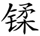
日记又作顾雍如，江苏吴县人。北京大学研究所国学门毕业，曾在杭州之江大学任教。——1926（12）6，9。顾雍如 见顾敦。
顾震福（？—1935） 字竹侯，江苏淮安人，声韵训诂学家。北京女子高等师范学校国文系教授。——1924④16。
顾孟余夫人 即韦增瑛（1885—1975），广东广州人。曾赴德国学习绘画。——1929①10。
顿宫宽（1884—1974） 日记作福民医院院长，日本香川人。上海福民医院院长兼外科医师。——1933（11）⑩23。
振（曰振？） 未详。——1925③9。
振 铎 见郑振铎。
党修甫 见党家斌。
党家斌（1903—1972） 字修甫，陕西郃阳人。张友松的中学同学，1929年时住张友松家，曾为鲁迅聘杨铿律师与北新书局交涉偿还版税等事。——1929⑦1，18，22。⑧7，8，10，11，12，13，14，16，17，18，21，25，27。⑨2，5，7，10，11，16，20，21，27，29。⑩2，17，27。（11）4，5，7，13，19，21，27。（12）3，5，12，22，25，28。1930①2，6，9，10，26，30。②6。③2，15。
晓 见内山晓。
晔 儿 见周晔。
峰 籏 见峰籏良充。
峰籏良充（1881—？） 日本人。日本东京高等师范学校教员，由许寿裳介绍认识鲁迅。——1925⑨8，9，16，17。⑩5。
圆谷弘（1888—1949） 日本人。大学教授，研究社会学。当时在上海考察中国社会。——1935⑩27。
钱 君 须藤五百三医师的助手。——1936⑧8，9，10。
钱中季 见钱玄同。
钱公侠（1907—1977） 后改工侠，浙江嘉兴人。《北新》半月刊投稿者。上海光华大学学生，曾以该校文学会名义邀请鲁迅演讲。——1929④9。
钱允斌 名聘珍，字允斌，浙江吴兴人。鲁迅在杭州浙江两级师范学堂任教时的学生。——1913④19，22，25。⑤6。
钱玄同（1887—1939） 名夏，改名玄同，字德潜，号中季，浙江吴兴人，语言文字学家。在日本留学时曾与鲁迅同听章太炎讲学。民国后历任北京大学、北京师范大学国文系教授、系主任等职。积极从事国语运动和语文改革。1917年后参与《新青年》杂志编辑工作，鲁迅因他的邀请开始为《新青年》撰稿。——1913③16。⑨27，29，30。1914①31。⑥13。⑨27。（12）13，31。1915②14。③8，12。④10。⑥20，24。1917⑤13。⑧9，17，27。⑨24，28，29，30。⑩8，13。（11）12。（12）23。1918②9，15，19，23，28。③2，18，28。④5，21，26。⑤2，12，22，27。⑥8，20，22，24，27，30。⑦5，11，12，14，15，20，29。⑧5，6，15，16，25，27。⑨4，5，11，17，29。⑩6。（11）1，6，7，13，17，18，28。（12）4，11，17，22，26，29。1919①7，12，21，28，30，31。②4，10，16，18，20。③1，7，18，29。④4，16，17，22，23，28，30。⑤3，9，15，25，29。⑥2，11，25，29。⑦4，5，8，10，20，23，31。⑧3，7，12，13，15。⑨13。1920①4。⑦17。⑩10。（12）25。1921①19，26。②14，21。④11，12，18。⑤19。⑧22。⑨1。1923⑧24。（12）22。1924③29，31。④13。⑥27，30。（11）26。1925①11，12。⑤18。⑦6，7，13，18，20，21。
钱亦尘 日记作钱奕丞，浙江绍兴人。鲁迅在绍兴府中学堂任教时，他是山会初级师范学堂附小主任。1930年时在上海开明书店任职。——1930①31。
钱均夫（1882—1969） 名家治，字均甫，又作均夫，浙江杭州人。曾留学日本，在弘文学院与鲁迅同学，又与鲁迅同听章太炎讲学。1909年回国，在杭州浙江两级师范学堂任教时和鲁迅同事。民国后任教育部视学、科长等职。——1914①22。1915③3，13。1916④21。1917⑦2。1918①23。③11。
钱均甫 见钱均夫。
钱杏邨 见阿英。
钱君匋（1906—1998） 浙江海宁人，美术家，陶元庆的同学。上海开明书店编辑，曾经手印制鲁迅的《朝花夕拾》封面。——1928⑦17，18，19。1931③4。1934⑩1。
钱季青 未详。——1935⑨18。
钱念劬（1853—1927） 名恂，字念劬，日记误作念敂，浙江吴兴人，光复会会员，钱玄同之兄，钱稻孙之父。历任清政府驻日、法、意等使馆参赞和公使等职。1909年任湖北省留日学生监督。1913年任总统府顾问。——1913⑧9。⑨28。
钱念敂 见钱念劬。
钱奕丞 见钱亦尘。
钱秣陵 名振椿，字秣陵，浙江余杭人。北京大学文预科讲师。——1918（12）22。
钱聘珍 见钱允斌。
钱锦江（1874—1931） 名遹鹏，字锦江，浙江嵊县人。曾留学日本，民国元年为绍兴北伐军同志会参谋员。1913年时为浙江第五中学校长。——1913⑥30。
钱稻孙（1887—1966） 字介眉，浙江吴兴人。钱玄同之侄，钱念劬长子。曾留学日本和意大利。1912年任教育部主事，1915年1月兼任京师图书馆分馆主任，后改任视学，并在北京大学东方文学系兼课。北平沦陷后，任日伪控制的北京大学校长等职。——1912⑦19，20，25，28。⑧1，2，4，8，11，15，22，23，24，25，27，28，29，31。⑨1，4，5，6，7，8，13，19，21，24，25，27，28，29。⑩1，2，4，6，27。（11）2，6，12，17。1913①28。③1，20，21，26。④25，28。⑤4，7。⑧9，18，21。⑨4，27，29，30。⑩28。（11）4，6，7，11，15，21。（12）8，26，30。1914①2，13，16，29。③17，18，25，26。④27，30。⑤9，14，24，25，26。⑥4，13，29。⑦3，10，29。⑧17。⑩24，27。（11）3，7，9。（12）19，25。1915①2，4，12，15，18，21，29，30。②12，19，20，23，27。③3，5，6，8，10，19。⑤3，21，24。⑥4，15，26。⑦17。⑧7。⑨2。⑩30。1916⑨28。⑩31。（11）4，11，14，16，20，24。1918⑥19。⑦30。1919（11）23。1920④10，23，27。⑥13。1923②5。⑨19。⑩13，15，22，26，27。1924④2，15。1925③24。⑧17。1929⑥1。
钱稻孙女——1924④2。
铁 民 见章铁民。
铁 耕 见陈铁耕。
铃木大拙（1870—1966） 本名铃木贞太郎，日本人，佛学家，文学博士。仓圆觉寺释宗禅师。1934年时为东京大谷大学教授，来华参观佛迹。同年10月28日曾将据这次考察写成的《中国佛教印象记》一册赠给鲁迅。——1934⑤10。⑩28。
积 功 见朱积功。
倪风之 见倪家襄。
倪文宙（1898—？） 浙江绍兴人。鲁迅在山会初级师范学堂任教时的学生。南京高等师范学校毕业后曾任上海商务印书馆编辑。——1926（12）14。1929⑤5。⑩26。
倪汉章 浙江绍兴人。1913年时为北洋政府内阁总理赵秉钧的门客，在北京闲居。后曾任参议院庶务科三等科员、宪法会议庶务科秘书。——1913⑨15，21。
倪家襄（1909—1959） 又名倪风之，化名倪焕之，浙江镇海人，美术工作者，春地美术研究所和野风画会成员。1931年夏参加鲁迅主办的暑期木刻讲习班。1933年12月曾为在狱中的江丰代向鲁迅借阅德国原版《珂勒惠支画集》。——1933（12）20，26。
息 方 见冯雪峰。
郫县读者 未详。——1936⑨21。
徐 元（1892—？） 字嘉德，浙江上虞人。鲁迅在绍兴府中学堂任教时的学生。1914年考入北京工业专门学校，鲁迅为之作保。后转入北京大学电气机械科。在京学习期间常在鲁迅处借支和汇划学费。——1914⑨9。1915⑥6。⑩17。（12）28。1916①27。②27。④5。⑤10，22，29，30。⑨17。1917①14。④8。⑤24，25。⑥21，28。⑧2，20。⑨17。1918②4。
徐 氏 见徐懋庸。
徐 白 见白莽。
徐
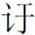
（1908—1980） 原名伯，笔名徐于、东方既白，浙江慈溪人，作家。小品文半月刊《人间世》编辑，常向鲁迅约稿。——1934④17，18，20，23。⑤25。⑥6。（12）14，16，17。1935①23。③21，22，28。（11）29。（12）3，5，7，8。1936①4。④11。徐 华 未详。——1934（12）23。
徐 行（1903—1978） 原名褐夫，江西修水人，翻译工作者。——1934⑩4。
徐 芬 未详。——1936⑤20。
徐 坤 见齐坤。
徐 某 未详。——1919⑨20。
徐 翘 字小梦。鲁迅1913年乘“塘沽”轮自沪返京时的同舱旅客。——1913⑧2。
徐 翼 字思贻，江苏常熟人。曾在教育部社会教育司任职。——1919⑦20。1921⑩25。1924⑧16。1925⑧17。1928⑩22。（12）11。
徐小梦 见徐翘。
徐少眉 浙江绍兴人。广州商务印书馆经理。——1927③16。
徐文雅 见徐彬如。
徐以孙（1866—1919） 名维则，字以孙，又作以、以，日记又作贻孙，浙江绍兴人，越中金石拓本搜藏家、金石目录学家。北京大学国史编纂处编纂。——1918⑤18。⑥1，2，3，5，12，23，26。⑦5。⑧14，20，22。1919（12）20。
徐以 见徐以孙。
徐式庄（1898—1942） 福建屏南人。时在河北开滦煤矿任职，曾写信给鲁迅商榷《一天的工作》中几个名词的译法。——1934④10。
徐吉轩（1870—？） 名协贞，字吉轩，湖北钟祥人。金石、甲骨文字的研究者。1912年起任教育部佥事、科长，兼任历史博物馆馆长。曾帮助鲁迅购买和修建房屋。——1914①10，29，31。②3。③2。④30。⑤14，30。⑧18。（12）22，31。1915①23，30。⑥19。⑨10。1916⑦21。1918（11）10。1919⑤4，29。⑥3。⑦10，14，30。⑨18，22。⑩5。（11）4。（12）22，29，30。1920②16，19。⑧2，14。⑩18。1921①25。②5，7。③7，8，10，14。1923②6。③17。④24。（12）15，22，26。1924②8。⑥21。⑧16，19。⑨4。1925⑧14。（12）16。1929⑤21。
徐仲荪（1876—1943） 名伟，字仲荪，浙江绍兴人。徐锡麟二弟。与鲁迅同时留日。1915年时在上海开西药店。——1915⑨26。
徐企商（1872—1929） 名彭龄，字企商，江苏青浦（今属上海）人。曾留学日本，时为司法部佥事。——1913（12）13。
徐旭生（1888—1976） 名炳昶，字旭生，又作虚生，河南唐河人。1925年至1926年间为北京大学哲学系教授兼北京女子师范大学讲师、《猛进》周刊编辑；1927年5月至1928年底任西北科学考察团团长，返京后著有《徐旭生西游日记》；1929年时为北平大学第二师范学院院长；1931年时为北平师范大学校长。——1925③12，30。⑦13。⑨15。（11）9。（12）14。1926①21，22。②8，10。⑤7。⑧13。1929②6。③16。⑤20，27。⑥1。1931③4。
徐名鸿（1897—1934） 字只鸾，广东丰顺人。北京高等师范学校国文系助教。——1924③7。
徐声涛 未详。——1930③13。
徐伯 见徐伯昕。
徐伯昕（1905—1984） 名亮，字伯昕，日记又作徐伯，江苏武进人，出版家。上海生活书店经理。——1936⑦11，15。
徐沁君 名瀛，字沁君，1911年生，江苏靖江人，上海某私立学院学生。——1929⑥21。
徐季孙（1880—1953） 名锡骥，字季荪，日记作季孙，浙江绍兴人。徐锡麟的四弟，毕业于日本千叶医专，回国后在上海等地行医。——1914①1。
徐宝谦（1892—1944） 字六吉，浙江上虞人。原浙江第五中学学生，当时任北京基督教青年会干事。——1918⑩16。
徐宗伟（1895—？） 字贻孙，浙江上虞人。鲁迅在绍兴府中学堂任教时的学生。1914年考入北京工业专门学校，鲁迅曾为他作保。后转入北京大学电机科。在京学习期间经常在鲁迅处借支和汇划学费。——1914⑨5，9。1915①2。②27。⑥6，30。⑨11。（12）11，13，14，28。1916①19，26，27。④14。⑤30。⑥20。⑨17。1917③9，30。⑤5，19。⑥21，28。1918①4。②6。③11。⑤5。
徐诗荃（1909—2000） 原名琥，谱名诗荃，又名焚澄，字季海，笔名冯珧、梵可等，日记又作徐思荃，湖南长沙人。作家、翻译家。1928年上半年在上海复旦大学求学，因记录鲁迅在江湾复旦实验中学演讲和在《语丝》投稿，与鲁迅通信并晤面。1929年留学德国，鲁迅曾托其购买书籍、报刊、木刻作品，1932年8月回国。鲁迅曾校读他译的《尼采自传》，并多次托人抄写他的稿件推荐给书店、报刊出版和发表。——1928⑤16，30。⑥5，13，20，22，26。⑦17。⑧10，29，30，31。⑨3，6。⑩16，21。（12）19。1929②4，6，7。③31。⑦28。⑧9，20。⑨13。⑩25。（11）16，30。（12）14，29。1930①6，7，9，12，13，15，21，24。②12，15，17，21，26，27，28。③7，8，11，14，17，26。④2，12，16，17，21，29，30。⑤3，8，10，13，16，19，21，24，25，28，31。⑥4，10，11，18，20，22，23，30。⑦10，11，15，19，21，26，27，30。⑧1，4，5，6，8，18，20。⑨1，3，5，12，14，23。⑩5，7，9，11，13，14，15，19，27，30，31。（11）1，5，8，10，11，13，14，15，21，25。（12）5，9。1931①6，9，14，19，26，28，30。②13，19，21。③11，26，28。④2，20。⑤2，4，7，19，26。⑥9，12，23，24，27。⑦6，22，27，30，31。⑧22。⑨2，22。（11）4，10，12，17。（12）2，17，21，28，29，30。1932①12。②21。③10，22。④23，24。⑤12，15。⑥6，21。⑦5，6。⑧30。⑨6，8。⑩4，6，8，14。（12）5，6。1933①5，7，9，18，20，27。②9。③28。⑥10，14，30。⑦7，14，20，25，28。⑧11。（11）9，17，30。（12）10，11，12，16，17，21，24。1934①1，7，8，14，17，18，19，23，25，28。②1，7，10，12，15，16，17，21。③4，5，8，11，13，20，23，26。④1，2，4，14，16，17，18，20，22，23，24，27，30。⑤4，6，8，9，11，12，16，20，22，26。⑥3，6，10，12，13，14，15，16，20，21，23，24，25。⑦4，8，16，19，20，22，23，29。⑧5，9，15，19，24，25，26，29，30。⑨1，2，5，8，10，14，15，19，22。⑩3，17，19，22，27。（11）4，8，9，12，19，21。（12）1，3，7，12。1935①3，20，30。②1，28。③12，22。④15。⑤25。⑥1，18。⑦13。⑧7，17，20。⑨11，13。（11）1，14。（12）3，6。1936①29。④8。⑦2。
徐思旦 浙江上虞人。因投考县知事托鲁迅作保。——1914②6。
徐思庄 因投考县知事托鲁迅作保。——1914④8。
徐思荃 见徐诗荃。
徐思贻 见徐翼。
徐思道 广州中山大学预科甲部学生。——1927⑦24。
徐贻孙 见徐以孙。
徐祖正（1895—1978） 字耀辰，日记又作曜辰，江苏昆山人，作家、翻译家。1922年自日本回国，在北京高等师范学校任教。1923年经周作人介绍到北京大学任教授。1926年间兼北京女子师范大学讲师。——1923①1。②17。④15，16。⑤26。⑥3，26。⑧23。1924⑥11。1926⑤13。⑧16。1929⑤20，27，29。
徐班侯（1845—1917） 字定超，浙江永嘉人。辛亥革命后任温州军政分府都督。1916年时在教育部任职。——1916⑩23。
徐挽澜 未详。——1928⑩19。
徐益三（1875—1936） 名撝庭，字益三，浙江上虞人。因投考县知事托鲁迅作保。——1914④14。
徐彬如（1901—1990） 原名文雅，江苏萧县（今属安徽）人。广州中山大学法科学生，中国共产党中山大学总支部书记，曾受中共广东区区委指示与毕磊、陈辅国等与鲁迅联系。——1927①24，31。②9。
徐涵生 未详。——1916④7。
徐森玉（1881—1971） 名鸿宝，字森玉，浙江吴兴人。版本学家、文物鉴别家。教育部佥事兼京师图书馆主任。——1919⑨22。
徐悲鸿（1895—1953） 江苏宜兴人，画家。1918年时为北京大学画法研究会导师。——1918（12）22。
徐景文 牙科医师，曾留学美国。在北京王府井门诊。——1913⑤3，5，10，11。（12）20，21。1915⑦24，26，31。⑧6，13。（12）19，24，26，31。1916①2，7，14。③18。
徐蔚南（1900—1952） 原名毓麟，笔名泽人，江苏吴江人，翻译家。上海世界书局编辑兼复旦实验中学教员。——1928（12）31。
徐耨仙（1881—1934） 浙江绍兴人。与陈子英同里，当时在绍兴任小学教员。——1915③24。
徐懋庸（1910—1977） 原名茂荣，又名余杨灵、余致力，浙江上虞人，作家，“左联”成员。1933年因译《托尔斯泰传》与鲁迅通信。1934年编辑《新语林》半月刊，1935年与曹聚仁合编《芒种》半月刊，常与鲁迅联系，鲁迅曾为他的《打杂集》写序。后任“左联”行政书记。——1933（11）15，18，19。（12）20。1934⑤22，26，28，31。⑥8，9，11，12，21，24，28。⑦9，13，14，15，17，23，27。⑧3，8。⑨19，20，25。⑩16，17，18，22，31。（11）1，4，7，12，16，17。1935①17，29。②8。③12，13，21，26，29，31。④1，7，19，20。⑦13，16，19，29。⑧31。⑨3，6，7，8，11。⑩13，17，19，22，29。（11）4，18，22。（12）3，7，13，15。1936①4，7，10，23。②7，16，18，21。③17。⑤2，5。⑥3。⑧2，5。⑩2。
徐霞村（1907—1986） 名元度，字霞村，湖北阳新人，法国文学研究者。当时是《熔炉》杂志编辑，由赵景深陪同往鲁迅寓约稿。——1928⑦2，4。
徐耀辰 见徐祖正。
徐吉轩父——1918（11）10。1919⑤4。
徐翼夫人——1919⑦20。
殷 林 未详。——1934⑩18。（12）4。
爱 罗 见爱罗先珂。
爱罗先珂（Василий Яковлевич Ерошенко，1889—1952） 日记又作爱罗、E君，俄国盲诗人、童话作家。1921年来华，1922年2月到北京后寓于鲁迅家，任北京大学世界语讲习班讲师。同年7月往芬兰参加第十四次万国世界语大会，11月返京。1923年4月回国。鲁迅曾翻译他的一些作品。——1921（12）1，3，26。1922⑦3。（11）4，24。1923①19，20，26，27。④15，16，21。⑦12，17。⑧8。
奚 如 见吴奚如。
颂 棣 见周颂棣。
留 仙 见朱家骅。
高 山 见高山章三。
高 明（1908—？） 江苏武进人，翻译工作者，《语丝》周刊投稿者。——1928②18。⑦22。⑨13。1929④24。⑥28，30。
高 桥 见高桥澈志。
高 桥 见高桥淳三。
高 植（1910—1960） 字介植，安徽芜湖人，翻译家。时在南京中央大学就读。——1933（12）9。
高 鲁（1877—1947） 字曙青，福建长乐人。曾任教育部编纂员。1924年时为中央观象台台长，北京大学讲师。——1924（12）14。
高 歌（1904—？） 山西盂县人，狂飙社成员。高长虹二弟，鲁迅在北京世界语专门学校任教时的学生。1925年与吕琦、向培良在开封合编《豫报》副刊，1926年参加《弦上》周刊编辑工作。——1924（12）20。1925①22。②24。③12，22，23，28。④5，22，23。⑧18。1926⑤8，16。⑥2，5，23，30。⑦4，6，15，18，25。⑧8，14，26。
高一涵（1885—1968） 安徽六安人。曾留学日本，时任北京大学政治系教授，《新青年》杂志编者之一。——1919③10。
高久肇（1892—？） 日本人。曾任满铁调查所北京分所所长，当时在上海分所任职，因常到内山书店认识鲁迅。——1930⑥15。
高女士 见高秀英。
高长虹（1898—约1956） 山西盂县人，狂飙社主要成员。在创作上曾得到鲁迅许多帮助，他的第一本杂感和诗的合集《心的探险》，由鲁迅选编、校正并编入《乌合丛书》。鲁迅离京到厦门后，他在上海借故对鲁迅进行攻击、诽谤。鲁迅曾著文予以批判。——1924（12）10，20，24。1925②8，11，16，24。③1，4，9，16，20，22，24，29。④5，11，13，17，21，26，28。⑤2，3，5，8，9，14，19，21，25，29。⑥3，8，13，16，18，22，29。⑦5，13，14，19，20，27。⑧2，4，5，9，10，14，18，20，23，24，28。⑨5，9，14，18，22，26，27。⑩1，12，18，27。（11）6。（12）22。1926①10，29。②12，13，22。③1，14，23。④2，8，11，13。⑥14。⑦14。⑧31。⑨14。
高医士 见高福林。
高步瀛（1873—1940） 字阆仙，日记又作朗仙，河北霸县人。1915年8月任教育部社会教育司司长，后为北京师范大学国文系教授兼女子师范大学教授。——1915⑨29。1920④10，25。⑤2。1921⑨13。⑩7。1923①30。⑤15。1924⑤6，31。（11）10。1925⑦7。⑧14。⑨25。1929⑤21。
高秀英 字超群，日记又作高女士，河南开封人。1924年北京女子高等师范学校数理系毕业，与许羡苏同学。——1924（12）1，7。
高良富（1896—？） 日记作高良富子、高良女士、高良夫人，日本人。日本女子大学教授，基督教徒。因去印度访问甘地途经上海，由内山完造介绍认识鲁迅。鲁迅曾书赠七绝一首，由内山完造径寄日本，高良富回国后即回赠鲁迅《唐宋元明名画大观》一部。——1932①12，23。⑤17。⑥3。
高君风 未详。——1925⑨6，13。
高桥穰（1885—1968） 日本心理学家、文学博士。《岩波哲学丛书》主编之一。1935年与岩波书店主人岩波茂雄同到上海。——1935⑤6。
高峻峰 字秀山，天津人。国民党军中校，经齐寿山介绍认识鲁迅。——1929①31。③6，12。1930②18。③16。④3。⑤6，9。
高阆仙 见高步瀛。
高朗仙 见高步瀛。
高福林 日记又作高医士，美国传教士，绍兴福康医院院长。1921年时曾到北京参加医学会议。——1912（11）30。1921⑧10。
高山章三（1896—1982） 日记作高山，日本郡马人。上海福民医院妇产科医师。——1933⑩23。
高良女士 见高良富。
高良夫人 见高良富。
高良富子 见高良富。
高桥医生 见高桥澈志。
高桥悟朗 日本人。当时在上海研究帮会组织“青帮”、“红帮”。——1931⑧24。
高桥淳三 日记作高桥，日本人。上海福民医院放射科技师。——1933⑩23。
高桥澈志 日记又作高桥、高桥医生，日本人。上海齿科医院医师。——1930③24。⑥21，24。⑦12，13，15。1931①3。1932⑤7。1933⑩23。1934（12）17。
高阆仙母——1920④10。⑤2。
高桥澈志夫人——1930⑦12。
郭 某 见郭焕章。
郭 珊（1885—1954） 浙江绍兴人。蔡元康之妻。——1918③3。
郭令之 未详。——1915⑩12。
郭尔泰 李庸倩之友，因入江亢虎在上海创办的南方大学，请鲁迅作保。——1924⑨14。
郭庆天 未详。——1936⑨29。
郭孟特 《申报·自由谈》投稿者。——1934（11）14。1935⑧17。
郭昭熙（1899—？） 广东潮安人。上海大江书铺会计。——1930②1。
郭焕章 浙江绍兴人，蔡元康的内兄，绍兴成章女校校长。——1913⑦1。
郭德金 未详。——1927②24。
郭德修 山西人，律师。——1914⑩15。
郭耀宗 字光先，河北蠡县人。北京高等师范学校学生。——1923⑥8。
斋 藤 日本人。东京高等师范学校大冢童话会会员。应内山完造聘请，与福家、安藤到沪为日本儿童举办童话会，担任讲师。——1930④6。
斋 藤 见斋藤女士。
斋 藤 见斋藤贞一。
斋田乔（1895—1976） 日本画家、儿童剧作家。东京成城学园美术教师，内山嘉吉之师。——1932⑥7。
斋藤女士 即斋藤菊子，日记又作斋藤，日本人。内山书店职员。——1931⑥2，12。
斋藤贞一 日记又作斋藤，日本佛教徒，随铃木大拙来华，任秘书。——1934⑤10。⑥20。
斋藤秀一（1908—1940） 日本语言学家，世界语学者，并从事日文拉丁化运动。1936年曾翻译鲁迅、叶籁士有关汉字拉丁化的著作，出版《中文拉丁化理论》、《方言论考》等。——1936⑧8。
斋藤揔一（1886—1960） 应名为斋藤惣一，日本人。日本基督教青年会同盟总干事。当时逗留上海，在内山书店认识鲁迅。——1931⑤19。
效 洵 见郑效洵。
唐 诃（1913—1984） 原名田际华，笔名唐诃，山西汾阳人。太原榴花社成员，木刻爱好者。北平医学院学生，第一次全国木刻联合展览会主持人之一。后长期从事医务和医学编辑工作。——1934（12）18。1935①15，18，30，31。②3，4，6，7。③3。④21。⑤15，30。⑥5。⑦7。⑨25。⑩2，3。1936⑨20，21。
唐 君 未详。——1925⑤3。
唐 弢（1913—1992） 笔名晦庵、风子等，浙江镇海人，作家。1932年在上海邮局工作时常向《申报·自由谈》投稿。1934年1月6日在黎烈文宴请《自由谈》撰稿人时认识鲁迅。同年7月26日函询鲁迅如何自学社会科学和外文。——1934⑦26，27。⑧7，8，9。1935④17，19。⑤28。⑧26。1936③15，17，28，31。④14，15。⑤10，22。⑥2。⑧7，19，20。
唐英伟（1915—2000） 广东潮安人。广州市立美术学校国画系毕业。1934年与李桦、赖少其等发起组织广州现代版画会。——1935④22。⑤24。⑥24，29。1936③23。④23，25。⑤26。⑦22。⑧18。⑨20。
唐依尼 未详。——1929⑤10。
唐静恒 未详。——1925④8，10。
悄 吟 见萧红。
阆 声 见张阆声。
凌 煦 字叔舆，浙江绍兴人。教育部专门教育司办事员。——1914②4。
凌璧如 湖南平江人。杨骚的同学。偕杨往访鲁迅。——1929（11）13。
兼 士 见沈兼士。
烟 桥 见陈烟桥。
烨 儿 见周晔。
涉 君 见增田涉。
海 生 见杜海生。
海 婴 见周海婴。
海端生 美国人。芝加哥大学社会学教授，当时来华考察社会教育状况等。——1913②13。
流 水 福建惠安人。厦门大学的工友。——1931⑤3。
害 马 见许广平。
家 斌 见党家斌。
家 璧 见赵家璧。
朗 西 见吴朗西。
冢本善隆（1898—1980） 日本汉学家。日本东方文化研究所研究员。当时在中国考察中国历史和宗教问题。——1929⑤31。⑥20。
谈君讷（1874—1950） 名锡恩，字君讷，日记误作谭君陆，湖北兴山人。曾留学日本，时任教育部佥事。——1915①16。
陶 未详。——1912⑨11。
陶 轩 见周陶轩。
陶 君 未详。——1926⑧7。
陶女士 指陶振能，浙江嘉兴人。许寿裳的内侄女。——1935①13。
陶元庆（1893—1929） 字璇卿，日记又作璿卿，浙江绍兴人，美术家。1924年到北京，经许钦文介绍认识鲁迅。曾为鲁迅的《坟》、《彷徨》、《朝花夕拾》、《苦闷的象征》、《出了象牙之塔》等著译作封面。并先后在台州浙江第六中学、上海立达学园、杭州国立艺术院任教。——1924（12）3。1925①20，25。③18，19，22。⑧2，6，14。⑨3，28。⑩9，30。1926①5，26。②15，27。④18。⑤3，12，31。⑥6。⑦12，26，27。⑧26。⑨27。⑩29。（11）21，23，24，25。1927⑩6。（11）4，21，22，23，27。（12）10，14，15，17，22，30。1928①3，11。②1，8，18。③1，31。④5，13。⑤7，8。⑥1，21。⑦2，9。⑧13。⑩9，21。（11）23。1929①4。②21。⑦16。⑧10，14。⑨8。1930⑦19。
陶公衡（1893—1948） 日记作公衡，浙江嘉兴人。陶伯勤之弟，因患胃疾请鲁迅介绍须藤医生医治。——1936⑤29。
陶亢德（1908—1983） 浙江绍兴人。1933年时为《论语》半月刊编辑，后又编辑《宇宙风》、《人间世》等，常写信向鲁迅约稿。——1933⑩18，23，27。（11）2，13。（12）5，13，29。1934①6。③28，30，31。④2，4，5，7，8，16，21。⑤5，6，8，17，18，20，25，27。⑥6，8，23。⑦31。⑩19。（11）21。1936⑦7。
陶书臣（1881—1953） 名礽，字书臣，日记又作书诚，浙江绍兴人。1914年后任京师地方检查厅京师第一监狱看守长，1932年时为杭州浙江省监狱典狱长。因许钦文涉嫌命案，鲁迅曾写信请他营救。——1913（12）12，13，23。1914⑧20。⑨19。⑩26。（11）4。1915①3。⑧8。1916①1。1919⑦5，9。⑧31。⑨5，14，20，21。1920①3。1922⑨16。1924（11）15。1926⑦18，25，26。⑧18。⑨26。⑩9。1932②18。
陶书诚 见陶书臣。
陶光惜 未详。——1929①4。
陶寿伯（1902—1997） 名知奋，字寿伯，日记误作顾寿伯，江苏无锡人，篆刻家。当时在上海西泠印社刻印。——1931⑥7。
陶伯勤（1899—1994） 又名善敦，日记作季巿夫人，浙江嘉兴人。许寿裳的再续夫人。1919年11月与许寿裳结婚，生有三女。——1925⑧17。1934⑩23。（11）26，28，30。
陶冶一 见陶望潮。
陶冶公 见陶望潮。
陶念钦 见陶念卿。
陶念卿（1865—1925） 名传尧，字念钦，日记又作念卿，浙江绍兴人。当时是京师图书馆分馆主任。——1914（11）11，26。1915⑤18，29。⑥19，27。⑨12。⑩9，30。（12）19。1916②11，13。③10，11，13，14。⑦3。⑧26。⑩2。（11）12，29。1917③25。⑥25。⑦5。⑨4。1918①27。③23。
陶孟和（1888—1960） 名履恭，字孟和，天津人，社会学家。早年留学美国。1919年时为北京大学教授，《新青年》杂志撰稿人之一。——1919②12。
陶望潮（1886—1962） 名铸，字冶公，又作冶一，号望潮，浙江绍兴人。光复会会员，陶成章的族叔。与鲁迅同期留学日本，毕业于日本兵事讲习所步科。曾与鲁迅同从孔特夫人学俄文。民国后入陆军部参事处为办事员。1926年10月任汉口市政府委员兼卫生局局长。后又任国民革命军第四集团军前敌指挥部政治部主任，国民政府军事委员会政治训练部代理主任等职。——1913⑩17。（11）16。（12）22。1914①1，5。⑨7，12，20。⑩12，25。1915③9。（12）23。1916⑦8。（12）2。1921④24。1926⑦27，31。⑧1，8，15，17。1929⑤17，21，28。
陶晶孙（1897—1952） 江苏无锡人，作家。创造社、“左联”成员。1929年11月在上海接郁达夫主编《大众文艺》月刊。——1929④1。⑦13。（11）15。1930①23。②7，8。
陶璇卿 见陶元庆。
陶璿卿 见陶元庆。
陶书臣父——1924（11）15。
绢笠佐一郎 未详。——1929⑥20。
绥理绥夫 又译谢利谢夫，俄国人。北京世界语专门学校教授，经该校陈空三、荆有麟介绍与鲁迅晤面。——1924（12）28。
十一画
培 良 见向培良。
堀尾纯一 日本肖像漫画家，东京漫画会会员。1935年10月自青岛来沪暂住。——1936①13。
堀越英之助 日本画家。1934年10月6、7两日在上海文路（今塘沽路）日本人俱乐部举办个人画展，展出他游历印度、南洋和中国江南时作画多种。——1934⑩7。
黄 厶 未详。——1918①4。
黄 龙 未详。——1929（11）18。
黄 源（1906—2003） 字河清，浙江海盐人，翻译家。1927年鲁迅在上海劳动大学作《关于智识阶级》演讲时由他作记录。1931年任新生命书局编辑，因出版《士敏土》与鲁迅联系。1933年起任《文学》月刊助编。1934年8月参与鲁迅倡议出版的《译文》月刊的筹备工作，同年11月继鲁迅接编该刊，后又编辑《译文丛书》。——1931（11）19。1934⑧30。⑨2，14。⑩15，20，21，22，25，31。（11）6，7，11，14，16，17，22，27。（12）4，5，14，16，18，25，26。1935①1，2，6，23，24，25，31。②3，4，13。③1，5，15，17，18，23，26，27，28，31。④3，8，11，15，25，26。⑤6，14，20，23，26，28，29，30。⑥2，3，5，10，14，15，29。⑦1，7，11，16，20，30。⑧7，10，12，15，16，25，27。⑨2，6，8，10，12，15，16，18，19，21，25，28，30。⑩8，10，21，24，28。（11）2，8，23，25，28，29，30。（12）3，10，20。1936①3，8，14，16，18，29。②2，8，9，11，12，20，22，23，24，29。③6，7，8，12，16，20，31。④7，11，22，26。⑤2，5，9，14，19，30。⑦8，11，21。⑧1，9，14，24，25。⑨2，18，29。⑩1，7，9，11，14。
黄于协 字元生，福建闽侯人。教育部社会教育司办事员。——1913⑤18。⑥5，19。⑧9。⑨8，13，14。（11）9。（12）28。1914①25。⑥28。（12）31。
黄士英 江苏松江（今属上海）人，漫画家。1934年与吴朗西等合编《漫画生活》，1936年该刊改名《生活漫画》后由他独编。——1935⑦6。⑧21。1936②5。
黄山定（1910—？） 原名黄聊化，日记作山定，广东兴宁人，上海一八艺社成员。1931年夏参加鲁迅举办的暑期木刻讲习班。1935年时在家乡赋闲，曾将自己的木刻作品寄给鲁迅征求意见。——1935①22。
黄子涧 见黄芷涧。
黄元生 见黄于协。
黄中垲 见黄芷涧。
黄正刚 广州《民国日报》编辑。——1927④18。
黄幼雄（1894—1968） 浙江上虞人。胡愈之的表兄，鲁迅寓景云里时的邻居，上海商务印书馆东方杂志社编辑。1933年间与俞颂华等合编《申报月刊》。——1930②23。1933④3。（12）8。1934①17，18。
黄延凯 广东梅县人。广州岭南大学毕业后曾在北京大学旁听。当时为广州中山大学预科教员。——1927③15，25。
黄后绘 疑即黄素（1895—1971），名芝岗，又名衍仁，笔名黄素，湖南长沙人，南国社社员。曾参加中国自由运动大同盟和左翼戏剧家联盟。1930年秋被捕，其亲友曾筹款营救。“黄后绘”可能是鲁迅借《论语·八佾》中“绘事后素”一语而作的代称。——1931②7。
黄行武 疑为黄启衡，广东人。原是广州中山大学学生，1927年四一五事变后被开除，1929年时为上海立达学园学生。——1929①4。
黄守华 未详。——1928（12）21。
黄运新 未详。——1926⑤24。
黄芷涧 名中垲，又作中恺，字芷涧，日记又作子涧，湖北江陵人。早年留学日本，民国后任教育部社会教育司佥事。——1914（11）5，17。（12）31。1915②16。⑦6。1916①28。1917⑨21。1923⑥27。
黄苹荪 见黄萍荪。
黄昌谷（1889—1959） 字贻孙，湖北蒲圻人。早年留学美国，时任北京《民国日报》编辑。——1925②17。
黄季刚（1886—1935） 名侃，字季刚，湖北蕲春人，音韵训诂学家、文学家。留学日本时在鲁迅之后听章太炎讲学。1913年间为北京大学教授。——1913⑨30。1914⑨27。
黄炎培（1878—1965） 字任之，江苏川沙（今属上海）人，教育家。民国初年任江苏省教育司司长。1915年春以实业视察团名义往美国调查教育情况，回国后应邀于12月15日至17日到教育部讲演。——1915（12）16。
黄河清 见黄源。
黄春园（1906—？） 湖南长沙人。原为广州中山大学学生，1927年四一五“清党”事变后被开除，由香港转道上海，为明了当时形势及以后的出路等问题向鲁迅请教。——1927（11）2。
黄药眠（1903—1987） 原名访荪，广东梅县人，作家、美术家。曾任创造社出版部助编，当时在上海做党的地下工作。——1933（11）30。
黄彦远 未详。——1927④14。
黄莫京 即黄强，当时在香港工作，因事到厦门。——1926⑨21。
黄振球（1911—1980） 笔名欧查，广西容县人。曾留学日本，后参加“左联”。时任《现代妇女》杂志编辑，通过郁达夫向鲁迅索字幅。——1933④23。⑤7。（12）17，30。
黄萍荪（1908—1993） 日记又作黄苹荪，浙江杭州人。1933年通过郁达夫向鲁迅索字幅，鲁迅为书五绝一首。1936年编辑《越风》半月刊时多次写信向鲁迅约稿，为鲁迅拒绝。同年10月他曾将鲁迅所书五绝字幅刊印于该刊第二十一期封面。——1933⑥28。1936①30。②2，10，13，28。③9，21。④2，8，21。
黄涵秋（1895—1964） 名鸿诏，字涵秋，江苏崇明（今属上海）人。新华艺术大学西画系主任。——1927（11）27。
黄尊生 广东番禺人。广州世界语讲习所所长，中山大学法国文学史教授。曾邀请鲁迅参加欢迎法国世界语学者赛耳大会。——1927①21，22，25，27，30。
黄鹏基（1901—1952） 笔名朋其，四川仁寿人，小说家。北京大学法文系学生，《莽原》撰稿人。——1925⑨29。⑩16，29。（11）14，21，26。（12）1，15。1926①4，6，18，23。②27。④14，15，22。⑤16。⑥24，26，27。⑦17，22。⑧9，11。
黄新波（1915—1980） 原名黄裕祥，笔名一工，日记又作新波，广东台山人，木刻家。上海美术专科学校学生，参加过“左联”和“美联”，MK木刻研究会和铁马版画会成员。鲁迅曾为他和刘岘的《无名木刻集》作序。——1934（12）31。1935①4。
黄静元 未详。——1932⑧14，16。
黄瘦鹤 未详。——1929⑥30。
黄芷涧兄——1917⑨21。
黄中垲女——1923⑥27。
萍 荪 见黄萍荪。
菅 见菅又吉。
菅又吉（1894—1939） 日本东京人。上海篠崎医院妇产科医师。——1933④23。
菅原英 见升屋治三郎。
萧 见萧军。
萧 见萧红。
萧 三（1896—1983） 原名子暲，又名爱梅，日记又作肖三、小山、安弥、萧参，湖南湘乡人，诗人。“左联”驻国际革命作家联盟代表。1932年和1935年曾先后受托邀鲁迅赴苏参加全苏第一次作家代表大会、国际革命作家代表大会和进行疗养，并常将苏联新出版的书刊寄赠鲁迅。——1932⑥21。⑧29。⑨12。1933⑩19，31。（11）24。1934①11，17，29。②8，19。③5，6。④9，13，23，30。⑤15。⑥6。⑦23，28。⑧20。⑩8，11，30。（12）14，18。1935①20。⑤17。⑥7，24，28。1936①19。②7。④23，24。
萧 军（1907—1988） 原名刘鸿霖，笔名田军、萧军等，日记又作刘军、张莹、萧，辽宁义县人，作家。“九一八”后与萧红从东北流亡青岛，1934年10月到上海。所著长篇小说《八月的乡村》由鲁迅作序并编入《奴隶丛书》。——1934⑩9，22，28。（11）3，5，9，12，14，17，20，27，28，30。（12）2，4，6，10，14，17，19，20，23，26。1935①4，9，21，23，26，29。②3，9，11，12，26。③1，5，8，14，19，20，25，26。④2，4，9，13，18，23，25，27，29。⑤1，2，8，9，12，22，23，27，29。⑥3，6，7，14，15，18，22，23，24，27。⑦2，6，15，16，20，27，29。⑧12，17，22，24。⑨1，2，6，11，13，16，19，21。⑩2，3，7，20，27，29。（11）5，6，11，15，16，28。（12）9，15，30。1936①14，19，22，25，26。②7，10，12，15，16，21，23，26。③2，3，4，8，9，11，14，20，23，25，28，30。④3，11，13。⑦7，25。⑧10。⑩14。
萧 红（1911—1942） 女，原名张迺莹，笔名萧红等，日记又作悄吟、萧、张莹夫人，黑龙江呼兰人，作家。“九一八”后她与萧军从东北流亡青岛，开始与鲁迅通信。1934年10月到上海后曾得到鲁迅的关怀，作品也大都经鲁迅介绍发表。所著中篇小说《生死场》由鲁迅校订、作序，编入《奴隶丛书》。——1934（11）9，12，14，30。（12）17，19。1935②3，8。③5，17。⑤2，6。⑥3，23。⑦2。⑧22。⑩20，27。（11）6，16，28。（12）15，30。1936①22，25，31。②7，16，23，26。③2，4，9，11，14，20，23，25，28。④3，11，13。⑦15。
萧 英 见萧殷。
萧 参 见萧三。
萧 参 见瞿秋白。
萧 殷（1915—1983） 原名郑文生，笔名萧英、萧殷等，广东龙川人，文艺理论家。当时在广州参加广东文学艺术救亡协会，从事文学创作。曾函告鲁迅有关广东文艺界抗日救亡运动的情况，以及对报纸被迫“开天窗”之不满，同时向鲁迅请教如何写作杂文。所附文稿是他作的散文《温热的手》。——1936⑩9。
萧友梅（1884—1940） 字雪朋，广东中山人，音乐家。北京大学国文系讲师，并主持该校音乐研究会。——1921⑨1。
萧伯纳（George Bernard Shaw，1856—1950） 英国剧作家、批评家。出生于爱尔兰都柏林。1933年他乘船周游世界，2月17日经香港抵上海，在宋庆龄寓所与鲁迅等会面。他在港沪的言论曾受到一些报纸和文人的指责，为此鲁迅先后作文多篇予以驳斥。——1933②17。
萧纯锦（1893—1968） 字权絅，江西永新人。曾留学美国，时任北京女子师范大学教务长。——1925（12）1。
萧剑青 东南亚的华侨，原籍广东。爱好漫画、文学，在上海世界书局任职时认识鲁迅。——1936①4。
萧恩承（1898—？） 字铁笛，江西永新人。早年留学美国，回国后曾任北京大学教育系教授，当时为厦门大学文科教育系教授。——1926（12）24。
萧盛嶷 湖南宁远人。1926年北京大学国文系毕业生。——1926⑦20，21。
梦 庚 见阮梦庚。
梦 渔 见顾孟余。
梦 禅 见邹梦禅。
梵 可 见徐诗荃。
梵斯女士 未详。——1935（11）22。
梅 志（1914—2004） 原名屠玘华，日记作谷非夫人、张因夫人、胡风夫人，江苏常州人。——1934⑩25。（12）17，19。1935⑩11。1936③13。⑨30。
梅 君 未详。——1927②6。
梅光羲（1877—？） 字撷云，江西南昌人。中国佛教会及中国佛学会会员，教育部秘书。——1912⑤24。⑥14。⑩19。
梅叔卫 未详。——1936⑨16，27。
梅恕曾 四川人。北京大学肄业。——1927③20，21。
梅撷云 见梅光羲。
梓 生 见张梓生。
梓 年 见潘梓年。
梓 模（1911—1931） 原名陈凯，字仲模，笔名梓模，云南昆明人。1927年四一二事变后在上海从事地下革命工作。——1925④21，23。
曹 白 原名刘萍若，1914年生，江苏江阴人。1933年10月在杭州国立艺术专门学校因组织木铃木刻社，被国民党当局逮捕。1935年底出狱后任小学教师。其时全国木刻联合展览会将在上海展出，他将自作的两幅木刻送往展览，其中的《鲁迅像》被国民党检查官禁止展出，他将此画寄鲁迅后开始与鲁迅交往。——1936③22，26，27，30，31。④1，6，7，8。⑤4，7，8，12。⑦9，28。⑧2，4，7，9。⑨29，30。⑩2，6，15，16。
曹 坪 见端木蕻良。
曹 禺（1910—1996） 原名万家宝，湖北潜江人，剧作家。1936年在南京剧专任教时，曾将所著《雷雨》日译本寄赠鲁迅。——1936④22。
曹式如 未详。——1919②22。
曹轶欧（1903—1989） 河北大兴（今属北京）人。上海大学学生。她曾以“一萼”笔名作《阶级与鲁迅》一文，写信征询鲁迅的意见，鲁迅曾介绍到《语丝》发表。——1926（11）3。
曹培元（1869—1958） 字植甫，河南卢氏人。曹靖华之父，在家乡从事教育工作。鲁迅曾应曹靖华之请，为之作“教泽碑文”。——1934（11）29。
曹靖华（1897—1987） 原名联亚，日记又作亚丹、汝珍，河南卢氏人，翻译家，未名社成员。早年曾和韦素园等同去俄国留学，在莫斯科东方大学学习。1922年回国后在北京大学旁听过鲁迅讲授中国小说史。1925年在开封国民革命军第二军工作，因王希礼俄译《阿Q正传》事开始与鲁迅通信。同年冬加入未名社。1926年至1927年参加北伐。大革命失败后赴苏联，先后在莫斯科中山大学、列宁格勒东方学院及列宁格勒国立大学任教并研究俄国文学，同时向国内读者介绍苏联文学，协助鲁迅搜集书刊及木刻作品，并向鲁迅介绍一些木刻家。1933年秋回国，先后在北平大学女子文理学院、东北大学、中国大学任教。鲁迅曾介绍出版他的译作多种。——1925⑤8，9，20，27。⑥8，14。⑦10，13，26。⑩19。1926③21。④2。1929⑦3。（11）6，18。1930④14。⑤16。⑥4，9，11，13，22，28。⑦16，17，30。⑧5，19。⑨10，15，20，30。⑩2，18，22，26，28，29。（12）6，7。1931①7，30。②2，24。③4，13，28。④8。⑥13，14，17，19。⑧11，14，15，17，21，24，28。⑨2，4，5，18，21。⑩12，27，29，31。（11）9，10，15。（12）8，9，14，17，19，21，25。1932①6，8，11，25。③3，21。④23，28，30。⑤1。⑥2，3，7，8，11，17，25。⑦6，19，20，21，24。⑧2，4，28。⑨9，12，15，29。⑩3，12。（12）14，15。1933①10，19，29。②1，9，10，14。③2，7，30。④6，21，29。⑤11。⑦10，18。⑧7，9，18，20，22，30。⑨4，7，10。⑩21，31。（11）1，8，14，24，26。（12）6，20，22。1934①28。②7，12，13，14，15，23。③3，6，16，17，27，28，31。④6，10，11，20，28。⑤15，22，23，31。⑥6，11，19，29。⑦7，11，17，28，31。⑧14，25。⑨11，24。⑩5，6，8，14，15，22，26，30。（11）2，15，16，25，29，30。（12）2，6，18，24，28，31。1935①6，15，16，18，26。②7，10，17，18，25。③23。④5，7，9，16，23，29。⑤9，12，15，21，22，30。⑥7，9，11，18，24。⑦2，3，12，17，22，26，30。⑧3，11，19。⑨19，25。⑩22，28。（11）18，25。（12）7，18，19。1936①4，5，6，18，22，31。②1，10，13，21，29。③10，14，16，24。④1，11，13，23，24。⑤1，3，14，15，23。⑥2。⑦6，17，20。⑧2，7，11，24，25，28。⑨5，8，10，12，15。⑩16，17。
曹聚仁（1900—1972） 字挺岫，号听涛，浙江浦江人，作家、学者。1933年时为上海暨南大学教授，并主编《涛声》周刊，同年5月7日函请鲁迅为《守常全集》作题记。《涛声》停刊后于1935年3月与徐懋庸创办《芒种》小品文半月刊。因约稿和编辑等事多次与鲁迅通信。——1933⑤7，30，31。⑥3，4，14，19。⑦11。⑧7，11。⑨1，8，11，22。⑩6，9。（11）10，13，14，20，23。1934①4。④30。⑤28。⑥2，9。⑦28，29。⑧3，13，17。⑨11，13。（11）12，16。（12）11，13。1935①9，17，27，29。②14，19，20，24。③5，29。④1，5，10。⑤1。⑥3。⑦29。⑧17，22。⑩7，9，17，29。（11）8。1936①14。②20，21，24。③6，7，9。⑧17。
龚 玨 见龚宝贤。
龚未生（1886—1922） 名宝铨，字未生，浙江嘉兴人。章太炎的长婿，清末从事革命活动，为光复会创立人之一。留学日本期间曾与鲁迅等同听章太炎讲学。1905年9月与徐锡麟、陶成章创办绍兴大通学堂。民国后曾任浙江图书馆馆长。——1915④13，15。⑤30。⑥17。⑨19，26。⑩25，26。（11）21。1916③9，13。（12）18。1920④18。1921（12）16。
龚宝贤（1898—？） 名玨，浙江新昌人。原为绍兴浙江省立第五师范学校学生，与许钦文、俞宗杰同班，后同在北京大学旁听鲁迅讲课。1927年去法国留学途经广州时往访鲁迅。——1927③1。④21，23。
龚未生夫人 见章
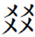
。雪 儿 见冯雪明。
雪 方 见冯雪峰。
雪 生 见段雪生。
雪 辰 未详。——1933①11。
雪 村 见章锡琛。
雪 明 见冯雪明。
雪 峰 见冯雪峰。
雪 箴 见章锡琛。
常 君 见常毅箴。
常 君 见尚献生。
常 君 见常毓麟。
常 君 见常瑞麟。
常 惠（1894—1985） 字维钧，日记又作惟钧，河北宛平（今属北京）人。在北京大学法文系学习时选修过鲁迅的中国小说史，1923年参加《歌谣》周刊编辑工作，曾请鲁迅为该刊设计封面。1924年毕业后在北平研究院任职。鲁迅在广州时曾托他代购古籍。——1923⑧8。⑨11。⑩29。（11）30。（12）12，28。1924②29。③15。④4。⑤15。⑦5。⑧28。⑩3，12，28。（12）4。1925①10。②21，27。⑧18。⑨4。1926③7。⑧3，12，13，19。1929⑤17。⑥3。1932（11）18。
常玉书 见常瑞麟。
常应麟（1909—？） 河北抚宁人。常瑞麟的小妹，天津女子师范学校学生。——1930②25。
常惟钧 见常惠。
常维钧 见常惠。
常瑞麟（1900—1984） 字玉书，日记又作常君，河北抚宁人。谢敦南之妻，许广平在河北省立第一女子师范学校时的同学。1932年至1935年间住在东北。——1932⑤13。1935⑧15，28。
常毓麟（1906—1979） 日记作常君，谢君夫人，河北抚宁人，常瑞麟之妹，谢莹之妻。当时因病在上海疗养，曾请鲁迅代办银行提款等事。——1934⑧9，18，29。
常毅箴 名国宪，字毅箴，日记又作常君，湖南衡阳人。当时是教育部社会教育司主事，并曾兼任京师图书馆分馆主任。——1912（11）13。（12）15。1913①2。②15，19。1914④30。⑤14，29，30。⑧28。⑩23。（11）5，6，17。（12）5，31。1915①15。③11。⑩7，9。1917①20，27。②24。⑩4。1918④4，10。⑥16。
常燕生（1898—1947） 名乃德，字燕生，山西榆次人，狂飙社成员。燕京大学历史系教员。后为国家主义派文人。——1925④17，21。⑤7，12，13。⑥17。⑦20。⑩24。
常毅箴子——1918④10。
晨 见周鞠子。
野 夫 见郑野夫。
野口米次郎（1875—1947） 日本诗人。日本庆应大学教授。1929年鲁迅译过他的《爱尔兰文学之回顾》。1935年10月去印度加尔各答大学讲学途经上海与鲁迅晤面时，提出国家托管的问题，为日本军国主义侵华辩解，鲁迅曾予驳斥。——1935⑩21。
逷 先 见朱逷先。
崔 见崔真吾。
崔万秋（1908—？） 山东观城人。曾留学日本，1933年3月回国，任上海《大晚报》副刊《火炬》主编。——1928⑦10。1933③19，21，22。④6，27。⑥19。⑦31。⑧1。（12）13。
崔月川 见吴月川。
崔真吾（1902—1937） 名功河，字禹成，笔名真吾、采石等，日记又作崔，浙江鄞县人。1926年间为厦门大学文科外语系学生，泱泱社成员。1928年到上海复旦大学附属实验中学任教，和鲁迅同住景云里。同年年底与鲁迅、柔石、王方仁组织朝花社。1930年2月离沪往广州中山大学附中、广东合浦、广西南宁等地工作。1935年间为广西平乐省立中学教员。所著诗集《忘川之水》曾由鲁迅代为编选、校订。——1926（11）28。（12）4，26。1927①1，10，15，29，30。③20。⑨19。（11）23，28。（12）8。1928②22，25，28。③4，10，22，29。④8，15，21，28。⑤1，4，5，24。⑥1，2，5，11，14，27。⑦17，18。⑨9，10，12，23，24，29。⑩6，8，10，13，24，27。（11）3，10，17，24，30。（12）1，8，15，21，29。1929①4，10，15，19，20，21。②20。③7，8，31。④5，9，16。⑤8，12，13。⑥1，7，8，11。⑦19，25，29。（11）7。（12）26，29，30。1930②14。（11）19，20。1931⑩12，13。1932①3，24。⑦17，18。⑩12，15。（11）30。（12）2。1933①5。1934（12）26，31。1935⑤8。1936⑩17。
崔真吾友——1928⑤1。
崇 轩 见胡也频。
铭 之 见邵铭之。
铭 伯 见许铭伯。
符九铭 名鼎升，字九铭，江西宜黄人。在教育部编审处任职。——1926⑦1。
第二师范学院学生 见姚可昆。
猛 克 见魏猛克。
康 农 见夏康农。
康小行 函请鲁迅设法代购《凯绥·珂勒惠支版画选集》。——1936⑧26。
康心孚（？—1919） 名宝忠，字心孚，日记作康性夫，陕西城固人。早年留学日本，加入同盟会，曾任临时总统府秘书，时任北京大学哲学系教授。——1914⑨27。
康性夫 见康心孚。
康嗣群（1910—1969） 陕西城固人。1928年时为上海复旦大学学生。7月间函请鲁迅代为修改所投《语丝》周刊稿的错字和询问购买外文书的书店。1932年函请鲁迅寄赠木刻《士敏土之图》。——1928⑦26。⑧20。1932⑤20，21。
鹿 地 见鹿地亘。
鹿地亘（1903—1982） 日本作家。1936年1月因受政治迫害到上海避难，在翻译《鲁迅杂感选集》为日文时曾得到鲁迅的帮助。——1936⑧18，23。⑨3，6，15。⑩4，17。
鹿地夫人 见池田幸子。
鹿地君之母夫人——1936⑧18。
章 师 见章炳麟。
章 武 1928年生，浙江上虞人。章廷谦之子。——1931⑦6。
章 （1894—1915） 字蕴来，日记作龚未生夫人、章师长女，浙江余杭人。章太炎长女，龚未生妻。1915年章太炎被袁世凯囚于北京，她偕龚至京省视，因悲愤于其父被囚的处境，于9月7日自缢。——1915⑨19，26。
章 炜 甘润生托保应文官考试者。——1917③6。
章 嵚（1880—1931） 字厥生，又作菊绅，浙江余杭人，历史学家。曾与鲁迅同在杭州浙江两级师范学堂任教。时为北京大学历史系教授。——1923①10，12，14。⑩10，15。
章士钊（1881—1973） 字行严，号秋桐，笔名孤桐等，湖南善化（今属长沙）人。辛亥革命前曾参加反清革命运动。五四运动后成为复古主义者。1924年至1926年间曾任段祺瑞执政府司法总长兼教育总长等职。1925年鲁迅因支持女师大的学生运动，被他非法革去教育部佥事职。鲁迅曾为此向平政院提出控告。后思想倾向进步，成为爱国民主人士。——1925⑧31。
章士英（1900—1939） 字瓞斋，浙江上虞人。周秉钧之婿。教员。——1921⑨13。⑩2，11。（11）15，21。1922①27。
章小燕 改名淹，日记作小燕，1925年生，浙江上虞人。章廷谦之女。——1928⑦13，15。1929⑦17。1931⑦6。
章子青（1874—1921） 名运昌，字子青，浙江上虞人。时在北京悦昌文记绸缎店当私塾教师。——1920②11。⑧13。
章太炎 见章炳麟。
章介眉（1855—1925） 名恩寿，字介眉，浙江绍兴人。鲁迅姑祖父章介倩的族人，曾为浙江巡抚张曾敭的幕友。辛亥革命后他因秋瑾被害案为绍兴军政分府逮捕，以“毁家纾难”名义捐献田产获释。后任袁世凯政府财政咨议、财政部秘书等职。袁死后在京闲住。——1916⑩6，10。
章矛尘 见章廷谦。
章先生 见章炳麟。
章廷谦（1901—1981） 字矛尘，笔名川岛等，浙江上虞人，作家。1922年北京大学哲学系毕业后留校任职。1924年参与《语丝》出版发行事务，受到鲁迅的鼓励和帮助。鲁迅曾为他标点的《游仙窟》作序。鲁迅到厦门大学后他也去该校任职。1927年至1930年夏在杭州浙江大学、杭州高级中学任教。1928年与许钦文共邀鲁迅、许广平游杭州。1931年后回北京，长期从事教育工作。——1923④8。⑧12。⑨11。（12）22，24，30。1924①13。②3。⑤6。⑥8，20，22。⑦4。⑧15。⑨1，16。⑩19，21。（11）13，16，22。（12）15，17。1925④8，10。⑤4。⑥15，22，23。⑧15。⑨5。⑩28。（11）8，26。（12）14。1926①3，9，28。②19，23，24。③8。④8，11。⑤2，12。⑦9，11，13，14，16，25，27，30。⑧9，24。⑨16。⑩4，10，11，23，24，27。（11）16，17，21，22，30。（12）1，8，22，24，25，30，31。1927①1，8，10，11，15，22，27，31。②15，20，24，26。③2，14，25。④4，13，25。⑤9，11，13，15，30。⑥11，12，23，27，29，30。⑦2，8，16，17，28，29，31。⑧8，17。⑨20。（11）7，8。（12）5，10，26，29。1928③4，5，6，12，15，25，26，31。④30。⑤5，8，16，30。⑥2，3，6，26。⑦6，7，9，10，12，13，14，15，16，18，22。⑧3，15，17，19，20。⑨11，16，19，25。⑩9，12，13，17，19。（11）7，14，26，29。（12）6，28。1929①1，3，7。③9，12，13，16。⑥13，25。⑦2，17，22。⑧10，17，23，24，26，27，28，29，30。⑨5，12。⑩24，28。（11）1，8，19。1930②22。③7，15，22，27，28。④17，29。⑤24。⑩20。（11）22。1931⑦6。（11）14。1932（11）27，28。（12）23。1933①13。⑤9，23。
章廷骥（1907—1982） 浙江上虞人。章廷谦之弟，《语丝》投稿者。——1929⑧20。（11）16。
章衣萍（1900—1946） 名鸿熙，字衣萍，日记又作洪熙，安徽绩溪人，作家。1924年秋由孙伏园介绍开始与鲁迅交往，不久参加筹办《语丝》并常为该刊撰稿。1927年夏到上海，在暨南大学文学院任教。——1924⑨28。⑩2，13。（11）3，8，13，17，18，23，24。（12）4，7，13，21，22，25。1925①4，8，9，13，14，17，21，27，28，31。②1，5，8，11，12，15，19，24，27。③5，6，7，11，15，18，19，20，21，27，29，31。④2，5，7，8，10，11，12，16，18，19，22，26，30。⑤3，5，9，14，16，18，21，23，27，30。⑥6，7，17，20，28。⑦17，30，31。⑧12，14，26。⑨20。⑩2，12，13，22。（11）14，25，26，29。（12）3，4，16，25。1926①9，31。②1，2。③1，27。④10，25。⑥21。1927⑩9，12，23，26，30。（11）4，10，26。（12）6，13，16，19，21，27，31。1928①3，16。②2，16，18，23。③9，28。④12，29。⑤7。（12）23。1929②23。③18。④14。⑤12。⑦19。⑧22，28。⑩26。（11）23。1930①6，31。
章炳麟（1869—1936） 字枚叔，后改名绛，号太炎，日记作章师、章先生，浙江余杭人，清末革命家和学者，后期光复会会长。1908年在日本时，鲁迅等曾听他讲学。民国以后，先后任孙中山、袁世凯的枢密顾问、高等顾问。因反袁被囚时，鲁迅等常往探视，袁死后始获释。——1912（12）22。1914⑧22。1915①31。②14。⑤29。⑥17。⑨19。1916⑩12。
章洪熙 见章衣萍。
章铁民 浙江淳安人。北京大学毕业。1927年间为上海暨南大学事务处出版科主任兼中学部教员，秋野社成员。——1927（11）26。1929①22。
章瓞斋 见章士英。
章菊绅 见章嵚。
章雪山 见章锡珊。
章雪村 见章锡琛。
章雪箴 见章锡琛。
章厥生 见章嵚。
章景鄂（1877—？） 字鲁瞻，浙江诸暨人。绍兴浙江第五中学学监兼物理教员。——1913⑥30。1916（12）8。
章鲁瞻 见章景鄂。
章靳以（1909—1959） 原名方叙，天津人，作家。曾先后任《文学季刊》、《文季月刊》等杂志编辑。1935年经黄源介绍认识鲁迅。——1936⑤22，24。
章锡珊（1891—1975） 日记作章雪山，浙江绍兴人，章锡琛之弟，上海开明书店副经理。——1928①26。
章锡琛（1889—1969） 字雪村，日记又作雪箴，浙江绍兴人。早年在当地中小学任教，1921年至1925年间在上海商务印书馆编辑《妇女杂志》，1925年和周建人与陈大齐就新性道德问题进行论战时，鲁迅曾给他和周建人以支持。1926年初辞去《妇女杂志》编辑职务，自行出版《新女性》杂志，并与章锡珊创办开明书店，后又设美成印刷公司。1933年至1935年间因开明书店支付未名社归还鲁迅欠款事多次与鲁迅通信。1936年曾协助鲁迅出版瞿秋白的译文集《海上述林》。——1921⑦23。1924⑨14。1925③28。⑤26。⑨25，29。⑩9。1926①10。⑧17，29，30，31。⑨20，23。（11）21。1927⑩5，12，17，18。1928①26。②12。③10。⑥2。1931②9。1933⑨16，18，24，27。（11）8，10。1934④2。1935（11）15，27。（12）7，14。1936②7，20。④9，14，24。⑤1，3，5，14。⑧11。⑨30。⑩2。
章锡箴 见章锡琛。
章演群（1877—1951） 名鸿钊，字演群，浙江吴兴人，地质学家。曾留学日本，回国后任京师大学堂（北京大学前身）地质学讲师。民国初年任实业部矿政司地质科科长。——1912⑧2。
章警秋（1889—1945） 名桐，字警秋，江苏南京人。江苏省南京中学校长。——1931⑧24。
章师长女 见章。
商契衡（1890—？） 字颐芗，浙江嵊县人。鲁迅在绍兴府中学堂任教时的学生。1912年入北京大学理科学习，1916年毕业，后任北大图书馆事务员。在学习期间鲁迅曾借予学费。——1912⑥9，30。⑧25。（11）23。1913⑤12，31。⑥6。⑨27。⑩9。（11）8，22。（12）4，23。1914①4。②23。③3，28。⑥14。⑨15，19。（12）6，7，12。1915①11。③13。④3。⑤8。⑥24，25。⑨14，19。（11）7，27。1916①16。②26，28。④6。⑤14，25。⑥5，7，9。⑧5。⑨13，22。⑩25。（11）29。1917①9，21。②4，15。③3，17，24。④2。⑤9，19。⑥2，24。⑧10，31。⑨9，22，26，27，29。⑩11，17，18。（11）17。（12）8。1918②16。③1，5。⑥15。
望 道 见陈望道。
望 潮 见陶望潮。
望月玉成 日本美术家。当时来中国作画。——1933①26。
惟 宁 见瞿秋白。
阎 桪 未详。——1935⑤13，15。
阎甘园（1865—1942） 陕西蓝田人。清末肄业于西安关中书院，后游学日本，回国后创办甘园学堂。长于绘画，收藏名画古物甚多。——1924⑦19。
阎宗临（1904—1978） 字琮琳，笔名已燃，日记又作已然，山西五台人。1925年因高长虹关系认识鲁迅，同年冬往法国勤工俭学。——1925②8。③9。⑥16。⑨5。1926⑦21。⑧17。
清 水 见清水三郎。
清水清 见清水三郎。
清水三郎 日记又作清水、清水清，日本地质学家。1931年时为上海自然科学研究所研究员。经增田涉介绍认识鲁迅。——1931⑤6，10，17，21，27，30。⑥3，8，10，11，12，19，24，25，26，28。⑧4。⑨23。⑩20，21，24。（11）28。1935（11）6。
清水安三（1891—1988） 日本人，天主教神父。1921年在北京创立崇贞学园。与藤原兄编辑的《北京周报》关系密切，曾为该报向爱罗先珂和鲁迅等约稿。——1923①20。⑧1。1924⑤7。
清水登之（1887—1945） 日本画家。当时从法国回国途经上海，在其兄清水董三（东亚同文书院教授）处逗留。——1932⑦3。
淑 卿 见许羡苏。
淑姿女士 见金淑姿。
淡 海（1883—1956） 原名田边耕治，改名志贺迺家淡海，日本喜剧演员，“志贺迺家”歌舞伎团团长。来华演出时经由内山完造介绍会晤鲁迅，鲁迅曾两次往观演出。——1934②4，5，7。⑦28。⑩25，28。
梁 式（1894—1972） 又名君度、匡平，笔名尸一等，日记又作梁君，广东台山人。1927年时任黄埔军校教官、广州《国民新闻》副刊《新时代》编辑。因向鲁迅采访和组稿开始交往。抗日战争期间为汪伪报刊《中华副刊》撰稿人。——1927①22，23，28。②11，13，16，20，22。③10，11。⑨12。⑩6。（11）11，17。1928④13。⑤5，25。1929④24。
梁 君 见梁文楼。
梁 君 见梁式。
梁 君 见梁以俅。
梁子美 见梁生为。
梁文若（1916—1968） 日记又误作李文若，广东中山人，作家，“左联”及反帝大同盟成员。她当时在上海、杭州从事创作和翻译。——1935⑦3，31。⑧2。
梁文楼 日记又作梁问楼、梁君，陈师曾之友。喜收藏碑石拓本，曾通过陈师曾向鲁迅出售藏品。——1915（12）7。1916⑤31。1918⑤29。（11）20。
梁以俅（1906—？） 日记又作梁君，广东南海人，美术工作者。1933年至1934年先后在北平星云堂和南京《民声报》任编辑，经姚克介绍认识鲁迅，曾根据鲁迅给斯诺的照片为鲁迅画像。——1933⑨24。1934①1，10。
梁生为（1904—1997） 一名绳袆，字容若，又字子美，河北行唐人。1924年间为北京师范大学国文系学生，因和傅筑夫拟据古代神话改写儿童故事，联名致函鲁迅请教有关神话的资料问题。——1924（12）14。1925③12，15。
梁匡平 见梁式。
梁问楼 见梁文楼。
梁次长 见梁善济。
梁次屏 河南卢氏人。曹靖华的小学同学，当时在卢氏县高级小学任教。——1931（12）21。
梁社乾（1889—？） 广东新会人，生于美国，精通英语。为译《阿Q正传》为英文事与鲁迅通信。——1925⑤2。⑥14，20。⑦2，13，20，24，30。1926①11。（12）6，9，11。
梁君度 见梁式。
梁品青（1902—1938） 名玉堂，字品青，山西襄恒人。时在山西太原任中学教员。——1936⑨26，27。⑩6，8。
梁得所（1905—1938） 广东连县人。1928年至1929年间为上海良友图书印刷公司《良友》画报总编辑，1934年时为大众出版社总编辑。——1928②25。③16，21。④22。1929①8。1934⑦4，14。
梁惜芳（1912—1937） 原名梁启佑，笔名温流，广东梅县人，诗人。当时为梅县松口中学学生。——1929⑥30。
梁绳袆 见梁生为。
梁善济（1861—1941） 字伯强，日记又作梁次长、次长，山西崞县人。曾留学日本，辛亥革命后任国会众议院议员。1914年至1915年为教育部次长。——1914⑤12。⑧18。1915③29。
梁耀南（1909—1941） 浙江台州人。上海中华艺术大学美术系学生。1930年参加“美联”。1935年曾编《鲁迅论文选集》、《鲁迅书信选集》，由上海龙虎书店出版。——1929⑧13，29。（11）3。（12）15。1935⑥3。
寄 野 见李霁野。
宿 荷 姓鲁，浙江上虞人。曾为上海棉业银行职员，当时在黄埔军校任职。——1927④8。
密斯冯 见冯铿。
密斯冯 未详。——1930（11）22。
密斯何 见何爱玉。
隅 卿 见马隅卿。
维 宁 见瞿秋白。
维 忱 见王维忱。
维 钧 见常惠。
维 铨 见杨骚。
维宁夫人 见杨之华。
十二画
联 亚 见曹靖华。
斯 诺（Edgar Snow，1905—1972） 即埃德加·斯诺，日记又作施乐、施君，美国记者和作家。1933年春在上海经鲁迅同意开始翻译鲁迅的部分小说，同年秋在北平燕京大学任教并继续翻译工作。以后曾将鲁迅及其他中国现代作家的作品编译成集，题作《Living China》（《活的中国》）。1936年4月赴陕北前曾往访鲁迅。——1933②21。1934③8，23。⑥19。⑩8。1935①17。1936④26。
斯诺夫人 即海伦·福斯特·斯诺（Helen Foster Snow，1907—1997），笔名尼姆·威尔斯（Nym Wales），日记作施乐夫人，美国人。——1934③8，23。⑥19。⑩8。
越 之 见胡愈之。
彭允彝（1878—1943） 字静仁，湖南湘潭人。曾任参议院议员、广东政务会议参议，1922年11月任教育总长。因遭北京大学学生反对，于1923年9月4日辞职。——1923⑨10。
彭礼陶 未详。——1929②20，21。
彭柏山（1910—1968） 原名丙生，又名冰山，日记作冰山、陈友生、友生，湖南茶陵人，作家，“左联”成员。1934年开始与鲁迅通信，1935年后在狱中化名陈友生，通过鲁迅转信给胡风。——1934⑦6，7。⑩3，4。（12）13，14，21。1935⑤24。⑧31。1936⑩7。
彭允彝父——1923⑨10。
葛 飞 未详。——1933（12）24。
葛 琴（1907—1995） 江苏宜兴人，作家，“左联”成员。鲁迅曾为她的小说《总退却》作序，并在经济上给予资助。——1933（12）18，19，28。1934①4，18。⑧25，27。（11）26。1935⑥10。1936⑧9。
葛世荣 后改名斯永。1928年时是上海复旦大学学生。同年5月15日鲁迅应邀到复旦实验中学讲演，题为《老而不死论》，他曾将所作记录寄给鲁迅，鲁迅稍作修改寄还时曾嘱不要发表，但他仍擅自投寄报纸发表。——1928⑥13。
葛贤宁 文学青年，《申报·自由谈》投稿者。——1934②22。③13。
董 君 见董恂士。
董 君 见董秋斯。
董 姓 未详。——1914①16。
董长志 未详。——1927⑦21。⑨17，26。
董世乾（1892—？） 字惕夫，浙江嵊县人。鲁迅在绍兴府中学堂任教时的学生。——1919⑤7。
董尔陶 浙江新昌人。因投考县知事请鲁迅作保。——1915④3。
董永舒 广西钟山人。1933年时在桂林第三高级中学任教，曾函请鲁迅指导其创作并代购书籍。——1933⑧9，13。⑨28。（12）9。1934⑤11。⑥2。⑩2，11。（11）10。1935①19，20。1936⑩7。
董先振 董秋芳之弟，当时为中学生。——1927（12）27。
董仿都 名敩江，字仿都，浙江人。北京公立第一女子高等小学校长。——1914⑤5，15。
董次长 见董恂士。
董时雍 见董秋斯。
董每戡（1907—1980） 原名华，化名杨大元、杨每戡，浙江永嘉人。戏曲史家。1928年春因从事农民运动被通缉去沪，因同乡金溟若所译日本有岛武郎的作品无法出版，曾偕往求助于鲁迅。——1928⑤2。
董雨苍 未详。——1925⑩20。
董绍明 见董秋斯。
董秋士 见董秋斯。
董秋芳（1897—1977） 笔名冬芬等，浙江绍兴人，翻译家。1920年考入北京大学英语系，曾旁听鲁迅讲课。所译高尔基、托尔斯泰等的小说、散文，编集时题作《争自由的波浪》，由鲁迅校订并作小引编入《未名丛刊》。1927年春北伐军攻占浙江后去杭州。“四一二”后因被通缉去上海。1928年春起常为《语丝》写稿。1929年春回北大复学，同年夏毕业。1931年时在山东济南高级中学任国文教员。——1924（12）8。1926①2。②15。③3，9，18，28。④18，25。⑤10，24。⑥14，24。⑦11，30。⑧7，26。⑩6，9，27。（11）17。1927④7，13。⑩13。（11）16。（12）22，27，31。1928②3。③2，12，26。⑤4。（11）1。（12）22。1929③14，30。⑤10，19，30。1931④28。
董秋斯（1899—1969） 原名绍明，字秋士，日记又作董时雍、董君，河北静海（今属天津）人，翻译家，“左联”成员。1929年间在上海编辑《世界月刊》、《国际》月刊。与史沫特莱熟识。他和蔡咏裳合译的苏联小说《士敏土》于1931年再版时，鲁迅曾为之校阅并译序。——1929（12）27。1930①25。②10，12，14。⑤6。⑩6。（11）6。1931⑧30。⑨23。
董恂士（1877—1916） 名鸿祎，字恂士，日记又作次长、董次长，浙江杭州人。钱念劬之婿。1902年在日本留学时从事反清活动，是光复会的主要成员。1912年任教育部秘书长、次长，1913年4月至9月代理总长。——1912⑤11，18，19。⑥1，23。⑦19，29，30，31。⑧15，31。⑨27。1913①4。②13。④22。⑤3，4。⑩26。1914⑥27。⑦12。1915⑥22。1916③6，21，26，27。
董敩江 见董仿都。
董秋芳弟 见董先振。
敬 夫 见吴敬夫。
敬隐渔 四川遂宁人。北京大学法文系肄业，1926年在法国将《阿Q正传》译成法文，经罗曼·罗兰阅后发表于《欧罗巴》杂志同年5月、6月号。后又将《孔乙己》和《故乡》译为法文，1929年与《阿Q正传》同收入他编译的《中国当代短篇小说家作品选》。在翻译过程中曾多次与鲁迅通信。——1926②20，27。④23，25。⑦1，16，27。（12）8。1927②11。③22。⑩15。1930②24。
蒋 君 见蒋廷黻。
蒋子奇 浙江绍兴人。鲁迅表叔蒋玉田之子。——1921⑩22，23，30。
蒋玉田 名珍，字叔田，浙江绍兴人。鲁迅祖父继室蒋氏的内侄。——1919（12）24。
蒋百器（1882—1931） 名尊簋，字伯器，浙江诸暨人。与鲁迅同期留日，日本陆军士官学校毕业。同盟会成员。1912年时为浙江省都督。——1912（11）16。
蒋光慈（1901—1931） 又名光赤，安徽六安人，作家，太阳社成员，“左联”成员。1927年11月为《创造周报》复刊事与郑伯奇等往访鲁迅。——1927（11）9。
蒋廷辅 见蒋廷黻。
蒋廷黻（1895—1965） 字绶章，日记又作蒋廷辅、蒋君，湖南邵阳人，历史学家。曾留学美国。1924年时为天津南开大学历史系教授，与鲁迅同时被邀赴西安讲学。后曾任国民党政府驻苏联大使、行政院善后救济总署署长等职。——1924⑦16，17。1925②23。③23，24。
蒋竹庄（1873—1958） 名维乔，字竹庄，号因是子，江苏武进人，哲学家。民国后历任教育部秘书长、参事、编审处编审员等职。——1916①18。
蒋抑之 见蒋抑卮。
蒋抑卮（1875—1940） 名鸿林，字一枝、抑巵，日记又作抑之，浙江杭州人，银行家。鲁迅留学日本时与之相识，曾资助鲁迅出版《域外小说集》。1906年以后长期任浙江兴业银行董事。——1912⑨24，29，30。1914③30。④1。1915①21，24。⑥5，16。⑦15，16。⑨12。1916⑥5。⑦11，12。1917①5。②21。③1。④22，23。⑧12，14。⑨23。⑩22，24。（12）12。1918④23。⑤6。（11）19。1919⑤5。⑦6。（11）16，20。1920①18，20。③16，21。1921⑦3。1926⑤26。1927⑩11。1928①27。②18。
蒋希曾 字孝丰，湖南湘乡人。1921年北京大学毕业。当时为厦门集美学校秘书兼图书馆主任。——1926（11）26，27。
蒋径三（1899—1936） 浙江临海人。1927年时为广州中山大学图书馆馆员，兼文科历史语言研究所助理员。曾邀鲁迅往知用中学等处讲演，并为鲁迅代借有关编纂《唐宋传奇集》所需书籍。1930年任上海商务印书馆编辑。一·二八战争后往安徽大学任教。1933年夏转至广东省立勷勤大学任教。——1927③15。④22。⑤8。⑥10，23。⑦3，7，10，21，23。⑧12，18，19，25。⑨8，11，17，24，25。1928②17。⑧26。（11）9。1930⑦28。⑧7，25，27。⑩4，15，18，24。（11）6，16。（12）7。1931①17，23。②6，16。③9。④24。⑤12。⑥6，8，9，27。⑨8，19。（11）7。（12）9。1932③18，20。⑤3，10，11。⑥25。1933②2。④1。⑥25。1934④3。⑧28。1935①7。1936⑧22，29。
蒋孟平（1877—1954） 名汝藻，字孟平，日记又作孟频、孟苹，浙江吴兴人，藏书家。蒋抑卮之友。清光绪举人，曾任学部总务司郎中。辛亥革命后任浙江军政府盐政局长、浙江省铁路公司董事长等职，时在北京经营轮船等实业的来远公司，业余购藏书籍古玩。——1914④1。1915⑦15，16。1917①5。
蒋孟苹 见蒋孟平。
蒋孟频 见蒋孟平。
蒋庸生（1885—1966） 名谦，字庸生，亦作蓉生，浙江绍兴人。鲁迅在杭州浙江两级师范学堂任教时的博物科学生，当时任绍兴浙江第五中学植物学教员。——1913⑥30。⑦5。1916（12）28。
蒋鸿年 未详。——1925④30。
韩 起（1910—1933） 笔名寒琪等，江西南昌人。“左联”成员，青年文艺研究会负责人之一，当时为上海大中中学国文教师。——1933⑩17。
韩士泓（1884—1921） 名清泉，字叔陶，又字士泓，日记又作士鸿，浙江慈溪人。留学日本时与鲁迅同在弘文学院学习，后习医。回国后参与创办浙江病院，先后任浙江医学专门学校校长、浙江医院院长等职。——1916⑧6，12，26，30。
韩士鸿 见韩士泓。
韩云浦 见韩侍桁。
韩白罗 原名宝善，1912年生，天津人。当时在太原晋绥兵工筑路总指挥部工作。木刻爱好者，曾用晒图方法翻印《士敏土之图》和《母亲》的木刻插图。——1934⑦7，25，27。⑩10。
韩寿晋（1893—？） 字原荪，浙江绍兴人。鲁迅在绍兴府中学堂任教时的学生，韩寿谦之弟。1913年5月考入北京大学预科，请鲁迅作保。1920年北京大学政治系毕业。在京学习期间曾向鲁迅借支和汇划学费。——1913⑤17，29。⑩19。1914③30。④2。⑥24。⑨11。（11）21。1915②27。④11。⑤6。⑨21。⑩24。1916④19，26。⑥10。⑩15。（11）7。1917①10。⑤12。（11）18。（12）17。1918⑤5。
韩寿谦（1890—？） 字毅光，浙江绍兴人。鲁迅在绍兴府中学堂任教时的学生，韩寿晋之兄。——1913⑩11，16，19。1914⑥27。⑨11。1915①15。⑨21。（11）30。1916②24。③13，16。⑤29。1917③29。⑤29。1918①23。
韩侍桁（1908—1987） 又名云浦，天津人。1928年、1929年间在日本留学，常将译稿投寄《语丝》和《奔流》。回国后曾参加“左联”，不久后他的文学主张与杨邨人提出的“小资产阶级革命文学”合流，鲁迅遂与之疏远。——1928④27。⑤24，31。⑥5，12，15，16，18，28，30。⑦21。⑧24，28。⑨11，20。⑩6，8，12，16，31。（11）5，7，20，30。（12）5，11，17，24，27。1929①5，6，7，9，10，18，20，21，23。②7，13，14，15，17。③11，25，26，27，29。④2，3，12，15，18，19，20，26，29。⑤7，8，25，28。⑥2，9，13，27。⑦22，28，29。⑧8，9，18，20，28，29。⑨13，16，19，24，25。⑩9，16，17，24，27。（11）6，25。（12）9，10，25，26。1930①14，24，29，30。②1，3，5，7，10，13，17。③4，13，14，15，21，23，25，26，28，30。④1，6，8，9，11，15，16，24。⑤2，15，17。⑥10，20，22，26，29。⑧19。⑩20。（11）15。
韩恒章 上海永源南货店店员。函询鲁迅《野草》中的疑难问题。——1935⑧17。
韩振业（1891—1935） 名厥修，又名守余，浙江余姚人。上海天马书店经理。《鲁迅自选集》等书即由该店出版。——1934（12）10，13。1935②26，28。③1。
朝 叔 见周冠五。
森 本 见森本清八。
森 堡 见任钧。
森女士 见森三千代。
森三千代（1905—1977） 日记又作森女士、金子夫人，日本爱媛人，小说家、诗人。金子光晴之妻。1929年曾与鲁迅晤面，其后曾请郁达夫转赠《森三千代诗集》。1934年又将所著《东方之诗》寄赠鲁迅。——1929①26，31。1934③12，17。
森本清八 日本人。日本住友生命保险公司上海分公司主任。——1931③23。1933⑦21。⑧23。⑨2。⑩19。
森本清八夫人——1933⑨2。
惠 迪 见孙惠迪。
惠 迭 见孙惠迪。
惠川重 日本人。余不详。——1934②5。③2。
雁 冰 见沈雁冰。
雁 宾 见沈雁冰。
斐 君 见孙斐君。
紫 佩 见宋子佩。
晶 卿 见陆晶清。
晶 清 见陆晶清。
遇 安 见李遇安。
遇 庵 见李遇安。
景 宋 见许广平。
景 明 未详。——1933（12）12。
景 渊 见邵景渊。
景万禄 山西人。因投考县知事请鲁迅作保。——1915④3。
程 姓 见程锁成。
程伯高（1878—？） 名莹度，字百高，日记作伯高，四川云阳人。同盟会会员，刘历青之友。1911年四川保路运动中曾任保路同志会讲演部长，1914年时为参议院议员。——1914（11）22。（12）15。
程沃渣（1905—1974） 原名振兴，浙江衢县人，木刻家。1931年在上海新华美术专科学校学习，为一八艺社、野风画会、涛空画会成员。1935年曾创作《旱年》、《水灾》等版画向鲁迅请教，也在《中国呼声》（英文刊物）上发表木刻插图。——1935②6，14。
程叔文 名士晋，字叔文，湖南宁乡人。教育部社会教育司一等额外部员。——1921⑨16。
程琪英 四川人。时在德国留学。1932年底曾函询鲁迅有关她作品的出版情况，鲁迅复信并寄赠《彷徨》等六册。——1933②12，13，16。④21。（11）2。1934⑦29。
程锁成 字信斋，河北冀县人。北京宏道堂书铺经理。——1913②9。
程鼎兴（约1904—约1933） 浙江金华人。上海北新书局校对。曾托同事费慎祥请鲁迅为其妻金淑姿遗简作序。——1932⑧26。1933③6。⑦13，27。
程靖宇 鲁迅作品读者。——1933⑦18，19。1936④29。⑤1。
傅 岩 字介石，浙江绍兴人。北京师范大学国文系学生。——1924③29。
傅 铜（1886—1970） 字佩青，河南兰封人。西安西北大学校长。函请鲁迅往西安讲学。——1924⑥30。
傅书迈 未详。——1926⑧1。
傅东华（1893—1971） 笔名伍实等，浙江金华人，文学家。1930年间为上海复旦大学、暨南大学国文系教授。1933年起任《文学》月刊编辑。在该刊第一卷第二期发表的《休士在中国》中指责鲁迅，鲁迅因作《给文学社信》并宣布退出文学社。一年后《文学》受当局压迫，鲁迅复为该刊写稿表示支持。——1930②1。1935①24。④13。⑤9，11，30。⑥3。⑧27。⑨10。⑩4。
傅作楫 见傅筑夫。
傅佩青 见傅铜。
傅孟真 见傅斯年。
傅彦长（1892—1961） 名硕家，字彦长，湖南宁乡人。曾留学日本、美国，回国后任同济大学等校教授。1926年时为上海《音乐界》杂志编辑。抗日战争期间曾在汪伪政府任职。——1926⑤15。
傅养浩 1919年生，浙江金华人。傅东华之子。上海吴淞中学学生。因患伤寒症，由鲁迅介绍入上海福民医院诊治。——1935⑨10，13。
傅斯年（1896—1950） 字孟真，山东聊城人。北京大学国文系学生，新潮社主要成员，《新潮》杂志编辑。1919年在北京大学毕业后留学英国、德国。1926年归国，任广州中山大学哲学系主任兼文科主任。——1919④16，17。1927②8，9，10。③5，13。④1，19。
傅筑夫（1902—1985） 字作楫，河北永年人。北京师范大学国文系一年级学生。曾与梁生为同函鲁迅请教有关神话资料的问题。——1924（12）14。
傅增湘（1872—1949） 字沅叔，四川江安人，藏书家。1917年12月至1919年5月间任教育总长，后曾任大总统顾问。——1921⑩3。
傅东华子 见傅养浩。
傅增湘之父 即傅世榕（1842—1925），字申甫，四川江安人。曾任河北怀安、藁城等县知事。——1921⑩3。
闻 见王林。
储元熹 《北新》半月刊投稿者。——1931①3。
储安平（1909—1966） 江苏宜兴人。上海光华大学学生，《奔流》、《北新》投稿者。——1929⑥21。
舒 见宋舒。
舒伯勤 鲁迅在南京矿路学堂时的同学。——1916③20。
舒新城（1892—1960） 湖南溆浦人，出版家。1928年任《辞海》主编，曾函询鲁迅《故乡》中的“猹”是怎样的动物。后为中华书局编辑所所长。——1929⑤5。
鲁 彦（1902—1944） 姓王，名衡，字忘我，笔名鲁彦，浙江镇海人，作家。1925年在北京从事创作和翻译。1926年春一度往长沙第一女子师范学校任教，不久重返北京。1927年5月底应聘为武汉《民国日报》副刊编辑。1928年在南京国民政府国际宣传部任世界语翻译。——1925⑤14，17，20，23，28。⑥3，8。⑦5，16，20，27。⑧1，24。⑨4，27。⑩13，23。1926③9，18。（11）2，25。1927①12，14。④19。⑦13。⑩12，15。1928③9。⑤31。⑦4，8。⑧8。⑨21。（11）30。
鲁 瑞（1858—1943） 浙江绍兴人。鲁迅的母亲。——1913⑦4。1916（11）30。（12）13。1919（12）19，24。1920④25。⑥6。⑦6，18，19。（12）7。1921⑤5。⑦4，10。1923⑧5，13，19，21，26，29，31。⑨8，12，16，18，27。⑩10，20。（11）3，4，6，9。（12）1，10，17。1924②13，14，17，19，28。③10，22。④29。⑤6，20，28。⑥8，11，23。⑦14，24。⑧2。1925①22，25。②15。④11。1926⑥27。⑦3。1928⑧13。（12）4。1929⑩26。1930①17。③12，14，25，28。④11，12，28。⑤2，3，18。⑥25。⑦12。⑧4，5，18，19，23。⑨20。⑩2，17，19。（12）7，9，18。1931①5，7，17，30。②5，11。③7。④3，4。⑤23，30。⑦6，16。⑧8，11，17，26。⑨7，11。⑩13，30。（12）30。1932①8，12，25。②7，15，23，28。③1，17，21。④3，6，11，19。⑤3，4，12，13。⑥5，16，17，24，30。⑦3，8。⑧1，5，12，15，16，26。⑨24，29。⑩1，6，14，15，18，20，21。（11）6，8，9，10，13，14，16，18，21，23，25。（12）1，6，11，16，20，22，30。1933①2，5，11，13，14，20。②4，5，6，8，18。③1，10，13，19，20，22。④1，3，6，7，11，13，19，21，23。⑤1，3，7，15，18，25。⑥9，13，25，26。⑦5，11，12。⑧13，22，29。⑨3，8，17，24，29，30。⑩5，23，24。（11）9，13，19，23，24。（12）8，19。1934①20，23。②1，5，6，13，15，22。③15，24，29。④11，13，20，25，28。⑤3，5，16，20，29，31。⑥10，13。⑦12，18，30。⑧2，8，11，12，20，21，23，26，31。⑨8，16，25，28，30。⑩17，20，29，30。（11）16，17，19，29。（12）6，16，23。1935①5，9，11，15，16，25。②23。③1，8，23，26，27，31。④1，4，5，28，30。⑤9。⑥6。⑦9，13，17。⑧15，31。⑨10。⑩14，18。（11）2，15，19，26，29。（12）4，5，20，21，23。1936①6，8，9，10，15，17，22，30。②1，7，15。③20。④1，7。⑤6，7，21。⑦6，15。⑧2，20，25。⑨2，4，12，22。⑩1。
鲁寄湘（1862—1917） 浙江绍兴人。鲁迅的小舅父，清代县学生员。民国初年曾两次到京谋职未成。——1913⑦1，5，10，12，14，21。⑧29。1914（12）15，20，30。1915①1，10。②13，21。③20。⑤2，20，24，25。⑥12，13。（11）28。（12）24，25。1916①3，8，13，16，29。③4，18。⑧30。1917⑤25。
鲁彦夫人 见谭昭。
鲁彦孩子 即王涟涟，后改名谭涟佑，1925年生。——1925⑨27。
敦 南 见谢敦南。
童 未详。——1912⑨11。
童亚镇（1891—？） 字夏城，浙江嵊县人。鲁迅在绍兴府中学堂任教时的学生。1913年考入北京大学预科，请鲁迅作保。1914年至1916年在医科一部肄业。在京学习期间一度向鲁迅借支和汇划学费。——1913⑤17，29。1914②3，4。③25，30。④2，28。⑤1，20。⑥24。⑨5，8，9。（11）9，26，30。（12）7，26，27。1915②12，14，18。③1，21。⑨11。1916①2。
童杭时（1877—1949） 原名荫乔，字枕谿，号萱甫，浙江嵊县人。日本东京法政大学毕业，清末曾随徐锡麟进行反清革命。民国初年任参议院议员，反对袁世凯称帝。后又任大理院庭长，浙江实业厅厅长等职。——1914①3，21。1916⑨12。
童经立 江西萍乡人。北京大学国文系学生。曾将其所作《乡学期中的回想五篇和一条不相干的长尾巴》寄《语丝》，希望能得到1927年12月在沪复刊的几期《语丝》为报酬。鲁迅满足了他的愿望。——1928④3。
童萱甫 见童杭时。
童鹏超 字润梅，浙江绍兴人。鲁迅在杭州浙江两级师范学堂任教时的学生。曾患精神病。——1912⑤20。1914①28，31。②1，8，9。
惺 农 见姚克。
善 子 见山室善子。
善 先 见阮善先。
善 甫 见赵赤坪。
翔 鹤 见陈翔鹤。
羡 苏 见许羡苏。
羡 蒙 见许羡蒙。
曾 未详。——1914⑨27。
曾 见曾侣人。
曾 根 见曾根录三郎。
曾女士 见曾立珍。
曾立珍 日记作立峨友人、曾女士，广东兴宁人。廖立峨之妻。1928年初随廖自粤至沪寄寓鲁迅家，同年8月复随廖返粤。——1928①8。⑥12。
曾吕仁 见曾侣人。
曾纪勋 四川人。曾为北京孔德学校学生，当时在广州一三杂志社任编辑。——1936⑨20。
曾丽润 见曾侣人。
曾其华 日记又作立峨友人，广东兴宁人。曾立珍之兄。1928年初随廖立峨夫妇去沪后曾同寓鲁迅家。——1928①8。③10。
曾侣人（1879—1945） 字丽润，日记又作曾、曾吕仁、曾丽润，浙江绍兴人。寿洙邻的内弟。早年加入同盟会，曾在陕西作幕友。民国初年为北京绍兴县馆董事。——1913①27。②7。1918②3。⑨26。
曾吕仁母 即谭采芹（1859—1939），浙江绍兴人，谭廷襄之侄女。1918年谭氏六十寿诞，鲁迅与蔡元培、许铭伯等联署“寿文”致贺，在京同乡集资制作寿屏。——1918⑨26。
曾根录三郎 日本人。羽太信子的二妹夫。——1916⑨16。⑩7。
湘 生 未详。——1926③9。
温 涛（1907—1949） 广东梅县人，木刻家。曾参加反帝大同盟。1935年间在香港组织深刻木刻会，常将作品寄给鲁迅。——1935⑤10。⑦13，17。⑨6。（11）18。1936③18。⑦6。
温梓川（1911—1986） 原名玉舒，笔名舒弟，广东惠阳人，生于马来西亚，作家。时为上海暨南大学学生。——1929②16。
渡 边 见渡边义知。
渡边义知（1889—1963） 日记作渡边，日本雕刻家。日本美术团体二科会雕刻部主席，内山嘉吉之师。——1932⑥7。
游 见增田游。
游允白 名洪范，字允白，湖南汉寿人。教育部社会教育司主事。——1912（12）14，16，17。1913①17。③2。
游观庆 未详。——1912⑥2。⑩15。
寒 筠 未详。——1935⑤9。
谢 旦 未详。——1926⑩22，25，30。
谢 芬 见沈雁冰。
谢 君 见谢莹。
谢 晋 浙江萧山人。因投考县知事请鲁迅作保。——1914④15。
谢 莹（1905—1989） 字宽南，日记作谢君，福建安溪人。谢敦南之弟，常毓麟之夫。1932年毕业于清华大学化学系，在厦门集美中学等校任教。1934年夏在沪养病，8月拟返回北平时偕妻女往鲁迅处道别。——1934⑧9。
谢仁冰（1883—1952） 名冰，字仁冰，江苏武进人。教育部佥事，在普通教育司任职。——1920④2。1924⑤1，11。
谢六逸（1898—1945） 名光燊，字六逸，贵州贵阳人，作家。上海复旦大学教授。1935年时任《立报》副刊《言林》主编，曾函鲁迅约稿。——1935（12）23，25，27。1936①4。
谢玉生 湖南耒阳人。厦门大学国文系学生，泱泱社发起人之一，兼任厦门中山中学教员，曾邀鲁迅至该校讲演。鲁迅到广州后，他与厦大同学七人转学中山大学。——1927①8，22。②16，20。③5，6，7，8，23，26，31。④7，15，23，25，28，29。⑤1，3，6，9，13，14，17，20，24，30。⑥4，9，11，18，25，29。⑦5，8，12，13，17，19，20。⑧11。⑨12。⑩4，17，18。（12）15，19，28，29。1928①3，7，29。②1。
谢西园 字良翰，浙江绍兴人。江南陆师学堂毕业，曾留学日本。民国以后在北京陆军部任职。——1912⑥30。⑦17，26。⑧9，19。（11）17。1913③24。④16。⑤14。⑥11。1917③15，22。⑥2。
谢冰莹（1906—2000） 湖南新化人，作家。大革命时期参加北伐军，1930年加入北方“左联”，不久脱离。——1930④16，18。⑤13。⑧2。1932（11）30。
谢炳文 未详。——1936⑨27，28。
谢敦南（1900—1959） 名毅，字敦南，福建安溪人。常瑞麟之夫。1929年至1935年间在东北工作。——1929⑨27。⑩11，17，23。（12）29。1932⑦26。（12）15。1934（11）8。1935②5。
谢仁冰母——1924⑤1，11。
谢仁冰妹 即谢纫瑜（1898—1977），江苏武进人。曾是北京女子师范大学学生。——1920④2。
谢君夫人 见常毓麟。
谢君孩子 谢莹之女。——1934⑧9。
谦 叔 见周凤珂。
谧 见周静子。
遐 卿 见李霞卿。
十三画
靳 以 见章靳以。
蓝 德 鲁迅临时请来护送阮久荪回乡的工人。——1916（11）5，6，14。
蓝耀文 福建古田人。鲁迅在厦门大学任教时的学生。——1927⑩25。
蒯若木 名寿枢，字若木，安徽合肥人。与鲁迅同期留日，喜谈佛法。民国初年在北京任职，1914年去甘肃任省禁烟督察处会办等职。——1912⑤16。⑧4。（12）18。1914①17。1920③7，14，16。1921②2。
蒯若木夫人——1921②2。
蓬 子 见姚蓬子。
蒲 风（1911—1942） 原名黄日华，又名飘霞，笔名蒲风，广东梅县人，诗人，“左联”成员。1932年与杨骚、穆木天等发起组织中国诗歌会，1934年下半年该会遭破坏后去日本。1935年11月曾托雷石榆将其诗稿并信通过内山书店转给鲁迅。——1935（11）6，9。1936①8，22。
蒙 见周若子。
楚 囚 见王志之。
楷 尔 未详。——1933（11）8。
楼 客 未详。——1913（12）7。
楼亦文 字以文，浙江余杭人。北京女子师范大学国文系学生，与许广平同班。——1925⑨23，26。
楼启元 浙江萧山人。因投考县知事请鲁迅作保。——1915④2。
楼炜春（1910—1994） 浙江余姚人。楼适夷的堂弟。1932年与同乡韩振业创办天马书店。1933年楼适夷被捕后，曾为楼适夷与鲁迅之间进行联系。——1934②1。⑥23，25。⑧20，22。⑨16，21，23。（11）5。1935⑥27。⑧12，23。1936③4，19。④3，13。⑦23。
楼春舫 见娄春舫。
楼适夷（1905—2001） 原名锡椿，又名建南，笔名适夷等，浙江余姚人，作家，“左联”成员。1933年时以天马书店义务编辑为掩护，从事党的地下工作。同年9月被捕，在狱中通过楼炜春将《在人间》等译稿寄给鲁迅。1934年间鲁迅、茅盾等在编辑英译中国短篇小说集《草鞋脚》时，收录了他的小说《盐场》。——1933①14，23，24。③3，7。④13。⑥11，12。1934⑥23，25。⑨16。（11）5。1935⑥27。⑧12，23。1936④3。⑦23。
赖少其（1915—2000） 原名少麒，广东普宁人，美术家。广州市立美术学校学生，现代创作版画研究会会员。1934年间从事漫画、木刻和新诗创作，曾将自作的《诗与版画》寄赠鲁迅请教。经鲁迅推荐，《文学》月刊曾发表他的部分版画。——1934（12）25。1935①18。②6。⑤6，10，24。⑥3，11，29。⑦2，4，13，16，20，24，29。⑧12，17，18，22。（11）9。1936⑤26。⑨26。
赖少麒 见赖少其。
赖贵富 未详。——1928②2，14，16。
甄永安（1905—？） 字升平，笔名柳风，河北大名人。当时的文学青年，在北京大学旁听过鲁迅的课。——1926②6，8，14，15。③16。
雷 川 见吴雷川。
雷 宁 见薛汕。
雷 渝 见雷志潜。
雷石榆（1911—1996） 笔名舌夷、纱雨等，广东台山人。留学日本时曾参加日本左翼诗人组织，1935年冬受日本当局迫害回沪，离日前曾受蒲风之托，将其诗稿并信转鲁迅。——1936②9。
雷志潜 名渝，字志潜，湖南桂阳人。京师图书馆馆员。——1913（12）4，10，20，26，31。1914①2。
雷助翔 未详。——1926②6。
雷雨生 见来雨生。
雷金茅 见薛汕。
雷镜波 当为雷静波（1908—1999），笔名溅波，云南思茅人。时在上海劳动大学工作，后参加“左联”。——1928⑩19。
雾 城 见陈烟桥。
裘 君 见裘善元。
裘子元 见裘善元。
裘子亨（1892—1933） 浙江绍兴人。裘子元之弟。当时在迪化（今乌鲁木齐）新疆督办公署任职。——1918②6。1920③13。
裘柱常（1906—？） 浙江余姚人。1928年间在南京电报局任报务员，因向《奔流》投稿与鲁迅通信。鲁迅曾将他的诗介绍给《朝花》周刊发表。——1928⑦8，19。（12）16。1929①5。
裘善元（1890—1944） 字子元，浙江绍兴人。教育部办事员，通俗教育研究会小说股会员。——1914④20，22，26，30。⑤5，15，17，24，28，29。⑥1，3，5。⑦12，14，19。1915（12）5。1916①30。④13，14，20，23。⑤7，17。⑧12。（11）9。1917①21。1918②6。1920③13。1921⑦28。⑨30。1923②6，20。③17。④18，24。⑤14。⑦31。⑨15。1924②2，4。⑥24。（12）4。1925⑧14，29。⑨11，13，24。⑩25，28。（11）1。（12）13。1926③21，26，30。⑥2。⑧8。
裘子元弟 见裘子亨。
裘子元祖母——1921⑨30。
虞含章（1864—1921） 名辉祖，字含章，浙江镇海人。1901年与钟观光、虞和钦等在上海创办科学仪器馆，继又创办《科学世界》杂志。——1917③21。
虞叔昭 当时是教育部职员。——1915⑩1。1916②29。⑥14，16。1917⑧26。1919⑤29。
锡 丰 未详。——1934⑤11。
锡 君 未详。——1933①5。
锡 琛 见章锡琛。
舅 父 见鲁寄湘。
愈 之 见胡愈之。
詹 虹 女，诗人。当时与文学月刊《夜莺》的主编方之中有联系。——1936⑦6，7，24。
鲍文蔚（1902—？） 江苏宜兴人。1927年时在江苏南通中学任英文教员，是年冬抵沪，与潘汉年同访鲁迅。——1927（12）13。
鲍成美 未详。——1925⑦25。
鹑 见内山鹑。
靖 华 见曹靖华。
靖 农 见台静农。
靖华之父 见曹培元。
新 波 见黄新波。
新居格（1888—1951） 日本作家、文艺批评家。1934年来华旅行，5月抵沪，经内山完造介绍认识鲁迅。——1934⑤30。
新居多美子 日本人。新居格长女。鲁迅知道她在学画后，赠以《引玉集》一册。——1934⑥26。
意农伯 见周锵凤。
慎 祥 见费慎祥。
煜 儿 见周晔。
滨之上 见滨之上信隆。
滨之上信隆（1899—1967） 日记作滨之上，日本鹿儿岛人。上海篠崎医院耳鼻喉科医师。——1932（12）28，31。1933④23。
窦隐夫 见杜谈。
谨 夫 见吴敬夫。
福 子 见羽太福子。
福 冈 见福冈诚一。
福 家 日本人。东京高等师范学校大冢童话会会员。应内山完造之请，与斋藤、安藤到上海为日本儿童举办童话会，担任讲师。——1930④6。
福冈诚一（1897—1975） 日记又作福冈、SF君，日本人。1923年时为东京帝国大学学生。曾与爱罗先珂同住鲁迅家三周。1929年以后在日本联合通讯社任职，驻上海。——1923⑥12。⑧4，19。1924⑩19。1926（12）19，20。1929⑧8。1933⑧31。⑨2。1934①4。
福民医院院长 见顿宫宽。
骝 先 见朱家骅。
十四画
静 未详。——1926⑦15。
静 农 见台静农。
静 恒 见唐静恒。
碧 山 见冯雪明。
碧 珊 见冯雪明。
嘉 吉 见内山嘉吉。
綦岱峰（1910—？） 山东利津人。1936年时为发行《青年文化》月刊函请鲁迅指导。——1936⑨18。
聚 仁 见曹聚仁。
蔡 仪（1906—1992） 又名蔡南冠，湖南攸县人，文学评论家。1936年7月自日本返籍途经上海时，因欲探望病中的鲁迅，故写信联系。——1936⑦14。
蔡 君 见蔡咏裳。
蔡 察 未详。——1924②17。
蔡女士 见蔡咏裳。
蔡女士 见蔡漱六。
蔡孑民 见蔡元培。
蔡元培（1868—1940） 字鹤卿，号孑民，日记又作鹤庼、蔡先生、蔡总长，浙江绍兴人，教育家。清末翰林，曾参加反清革命，为光复会会长，后加入同盟会。1907年留学德国。1912年回国，任南京临时政府教育总长，曾聘鲁迅到教育部任职。教育部迁北京后不久辞职，7月赴欧洲考察。1916年底回国后任北京大学校长，1920年聘鲁迅为该校讲师。1927年6月任大学院院长，同年底聘鲁迅为该院特约撰述员。1932年与宋庆龄等发起组织中国民权保障同盟。——1912⑥22。⑦2，10，15，19，22。⑩6。1917①10，18，25。②15，18。③8。④5。⑤13，21，22。⑥19。⑦31。⑧5，7，15。（11）7。（12）2。1918④28。⑥1。⑧10，28，29。1919④28。1920⑧16，17，20，21。1923①9。④3。1927（12）7。1928④14。1931②14。1932⑧11。1933①4，17，20。②17，22，23，24。1934②26。⑤21。⑦5。
蔡元康（1879—1921） 字谷清，日记又作国庼、国青、国亲、国卿、谷青、谷卿、垕卿，浙江绍兴人。蔡元培之从弟，光复会会员。与鲁迅同期留日，回国后授法科举人。1912年5月与鲁迅等自绍兴至北京。1913年冬至1916年夏先后任浙江高等审判厅厅长、江苏高等审判厅厅长。1917年冬至次年夏为临时参议院议员。后在浙江兴业银行及中国银行任职。——1912⑤8，10，16，18，28，31。⑥8，13，16。⑦7，21，22，27。⑧21，22。⑩29。（11）21。1913①12。②8，14。③1，14，24。④8。⑦1。⑧21。⑨15，21。⑩19。（11）9，29。（12）12。1914①16，19。②25。③3，20，24，28。④1。⑥21。1915④5，8。1916③13。④29。⑤12，16。⑧30。⑨18，20。1917①4。（12）1，2，4。1918②11。③3。⑧26，27。1919⑤6。（12）3，7，14，16，21，23，25，31。1921④9，17。⑤11。
蔡丏因（1890—1955） 名冠洛，字丏因，浙江诸暨人。鲁迅在杭州浙江两级师范学堂任教时的学生。曾留学日本，回国后在杭州、绍兴、上虞等地中学任教。1924年任上海世界书局编辑。——1925⑥13，18。
蔡永言 见蔡咏裳。
蔡先生 见蔡元培。
蔡江澄 陕西渭南人。西北大学法科主任。——1924⑧23。
蔡谷青 见蔡元康。
蔡谷卿 见蔡元康。
蔡谷清 见蔡元康。
蔡松冈 未详。——1921（11）5。
蔡国青 见蔡元康。
蔡国亲 见蔡元康。
蔡国卿 见蔡元康。
蔡咏裳（1901—1940） 日记又作蔡君、蔡女士、蔡咏霓、蔡永言、永言，广东南海人，翻译工作者。当时为董秋斯之妻。1930年曾与董合译苏联小说《士敏土》。该书再版时，鲁迅曾为之校阅并译序。——1929（12）27。1930①25。⑧26。⑨19。⑩6。（11）6。1931⑤30。⑦13。⑧14，17。1932①11，27。⑩6，7。1933⑤10。⑦22。⑧4。
蔡咏霓 见蔡咏裳。
蔡南冠 见蔡仪。
蔡柏林 见蔡柏龄。
蔡柏龄（1906—1993） 原名柏林，浙江绍兴人，物理学家。蔡元培三子。曾与季志仁、陈学昭等同在法国留学。——1934③23。
蔡省三 见蔡察。
蔡垕卿 见蔡元康。
蔡总长 见蔡元培。
蔡斐君（1914—1995） 名蔡健，笔名易斐君，湖南攸县人。蔡仪之弟。1933年留学日本时与友人合办刊物《诗歌》。1935年7月回国，返籍前在沪曾写信向鲁迅请教“诗和口号”的关系问题，后又多次与鲁迅通信。1936年8月将所译的《阿波洛莫夫》（今译《奥勃洛摩夫》）部分稿寄请鲁迅审阅，鲁迅因病未阅。——1935⑦13。⑨20。（11）10，12，28。（12）13。1936③27。④4，28。⑧11，18。
蔡漱六（1900—？） 原名漱艺，改名漱六，笔名林兰，日记又作小峰夫人、蔡女士、林兰、李太太，江苏无锡人。1924年初与李小峰结婚后到北京，次年3月后协助李经营北新书局，1927年4月随李至沪。费慎祥离北新书局后，大多由她代表北新与鲁迅联系。——1925②24。⑤9。1927⑩3，4，5，12，16，17，20。（11）4。（12）27，31。1928②23。④5。⑤3。⑥24。⑦7。⑧4，19。1929③17。⑩26。1931⑦6。⑧26。1932（12）28。1933⑥21。1935②23。⑩19。1936②5，29。③28。④30。
蔡毓骢（1905—？） 字良五，浙江慈溪人。上海复旦大学社会科学科学生。——1927（11）2。
蔡儒楷 字志赓，江西南昌人。1914年2月至5月以教育部次长代署教育总长。——1914②21。
蔡国青夫人 见郭珊。
蕖 官 见周蕖。
蓼 南 见韦丛芜。
樋口良平 日本医生。坪井芳治之友。任职于上海纺织股份公司附属医院。——1933⑥21。
臧亦蘧（1903—1946） 名瑗望，字亦蘧，山东诸城人。臧克家之叔父。时为北京中国大学预科学生。——1924（12）2，3。1925④15，21。
臧克家（1905—2004） 山东诸城人，诗人。1934年时为青岛大学国文系学生。1936年时在山东省立临清中学任教，将他的诗集《自己的写照》寄赠鲁迅。——1934（12）1。1936⑧22。
霁 野 见李霁野。
霁野学生 见刘文贞。
岚 见罗岚。
疑 仌 见瞿秋白。
疑 今 见林疑今。
疑 冰 见瞿秋白。
廖立峨（1903—1962） 广东兴宁人。鲁迅在厦门大学任教时的学生。1927年1月随同鲁迅到广州，转入中山大学外语系学习。1928年与其女友等到沪，寄寓鲁迅家，并请托鲁迅介绍工作。在“革命文学论争”中，因恐受鲁迅连累，又因物质要求未得满足而离去。——1927①30。②4。③7。④30。⑤11，15，23，28。⑥6，16，18，27，30。⑦2，7，8，15，18，20，24，25，28。⑧3，11，14，15，16，17，19，20，25，29，31。⑨3，7，8，11，12，13，16，21，25，26，27。⑩7，14，17，20，21。（11）1，11，15，22，27。（12）2，9，17，19。1928①5，8。⑥2，12，24。⑧24。1930③13。
廖翠凤（1896—？） 日记作语堂夫人、林语堂夫人，福建龙溪人。曾任北京大学预科英文教员。——1927（12）31。1928①26。④5。⑤1。⑥24。⑦7。⑧4。1929①26。⑧28。1933⑤15。
廖馥君（1895—1971） 四川资中人。曾留学德国，1927年在上海同济大学教授德语时译《阿Q正传》为德文，译稿曾请该校德籍教师卢克斯修改。次年10月为该译本事与卢克斯同访鲁迅，鲁迅同意他翻译，并赠以书籍。译稿后经卢克斯带往德国，拟在德国出版，其后卢克斯与译稿俱无下落。——1928⑩7，8，9，15，17。
端 仁 未详。——1933③5。
端 先 见夏衍。
端木善孚（1880—1948） 名彰，字善夫，浙江丽水人。早年入南京江南陆师学堂，后留学日本习军事，回国后任陆军部编练处督练官等职。——1917⑧26。
端木蕻良（1912—1996） 原名曹京平，笔名叶之林、曹坪等，辽宁昌图人，作家。1933年时为北平清华大学历史系学生，同年参加北方“左联”，并编辑其机关刊《科学新闻》。曾化名叶之琳与鲁迅通信。1935年一二·九运动后到上海，常将自己的稿件寄给鲁迅。——1933⑧25。⑨3，25。1936②20。⑦11，12，19，30。⑨11，22。⑩4，14。
漱 六 见蔡漱六。
漱 园 见韦素园。
谭 昭（1903—1994） 日记作鲁彦夫人，湖南湘乡人。1924年与鲁彦结婚，1929年离异。——1925⑦20。⑧1。⑨4，27。
谭女士 即谭丽德（I.Treat），美国人。国际反战调查团派来中国的代表，法国《Vu》（《观察》）杂志女记者，瓦扬·古久里夫人。鲁迅曾应她之请收集中国青年版画家的作品，寄往法国和苏联展出。——1934①17。
谭正璧（1901—1991） 江苏嘉定（今属上海）人，学者。1925年夏在上海近郊南翔教家馆，在读《中国小说史略》后将施耐庵的原名和表字函告鲁迅。1934年10月编成《中国文学家大辞典》后，曾函请鲁迅题写书名。——1925⑦8，13。⑩9，14。1934⑩13。
谭在宽 未详。——1926⑤10，12。
谭君陆 见谈君讷。
谭金洪 泰国华侨。广州培正学校肄业。从泰国将自己的七篇作品寄请鲁迅介绍给北新书局出版。——1930（11）5。
熊文钧 又名庚甫，1914年生，湖北武昌人。时在武昌荆南中学读高中，将习作小说《大年三十晚上》寄请鲁迅指导。——1932⑧28。⑨22。⑩1。
熊梦飞（1895—1962） 字仁安，湖南宁乡人。上海劳动大学秘书长。曾约请鲁迅往该校演讲。——1927⑩19。
翟 见翟凤鸾。
翟凤鸾 字澹心，日记又作翟，湖南长沙人。北京女子师范大学国文系学生。——1925⑩4，5。
翟用章 山西人。因投考县知事请鲁迅作保。——1914②5。
翟永坤（1900—1959） 字资生，河南信阳人。1925年间为北京法政大学学生，因向《国民新报副刊》投稿而与鲁迅交往。次年转入北京大学国文系，1932年毕业。鲁迅曾在其创作方面给以指导和帮助。——1926③10，11。⑤22，27。⑧1。1927①11，12。⑨19，20。⑩17，20。（11）1，12，19。1928①6。③12。⑤8。⑦11。⑧19。（12）7，30。1929②20。⑤20。1930②27。
翟觉群（1893—？） 名俊千，字觉群，广东东莞人。上海暨南大学副校长兼政治系主任。——1928⑥8。
缪子才 名篆，字子才，江苏泰兴人。厦门大学哲学系副教授。——1926（11）17。
缪金源 字渊如，江苏东台人。1922年北京大学哲学系毕业后曾在辅仁大学任教。——1923⑥14，17。1926⑤1。1935⑥4。
缪崇群（1907—1945） 笔名终一，江苏泰县人。《语丝》、《奔流》投稿者。——1929③9。④3。
十五画
瑾 儿 见周瑾。
瑾 男 见周瑾。
璇 卿 见陶元庆。
增 川 见增井经夫。
增 井 见增井经夫。
增 田 见增田涉。
增田涉（1903—1977） 日本汉学家。1931年3月至7月，鲁迅曾为他讲解《中国小说史略》和自己的其他作品。回国后他将该书译成日文，并请鲁迅作序。后又与佐藤春夫合译《鲁迅选集》等书。——1931④11，17，19，23。⑤6，8，10，16，19，27，30。⑥2，9，12，19，25，27，28，29。⑦17，20，30。⑧23。⑨15，26。⑩21。（11）9，11。（12）2，6，11，23，27。1932①6，8，16，21。④12。⑤7，8，9，12，13，16，20，21，28。⑥1，8，16，17，28。⑦16，18。⑧9，11。⑨22。⑩2，8，28。（11）9。（12）19，21。1933①10，27。②24。③2，18，24。④3，25，29。⑤13，20。⑥12，26。⑦11，12。⑧7。⑨23，24。⑩3，7，13，26，31。（11）13，14，21。（12）2，27。1934①4，8，16，27。②7，12，23，26，27。③12，18，19，21，28。④11，17。⑤3，11，19，31。⑥1，6，8，27。⑧7。⑨11，12。⑩5。（11）14，22。（12）2，14，29。1935①9，25，26。②6，7，20，26。③19，22，23。④4，9，19，26，30。⑤1，21。⑥9，10，22，25。⑦1，3，17，19，20，26，29。⑧2，13。⑨6，11。⑩6，21，26。（11）11，27。（12）4，17。1936②3。③9，28。④25。⑤29。⑦6，9，24，25。⑧7。⑨15，17。⑩5，11，14。
增田游 日记作游，1933年生，日本人。增田涉之长子。——1934①8。
增井经夫（1907—？） 日记又误作增川，日本人。田中庆太郎之女婿。东京东洋高等女子学校讲师，专研东洋史。当时来华考察旅行，由内山完造介绍与鲁迅会面。——1935（12）14。1936①5。③15。
增田木实 日记作木之实、木の实，1930年生，日本人。增田涉之长女。——1931⑨26。1932⑤28。1934②7。
增田忠达（1871—1941） 日本人。增田涉之父。当时在日本岛根县家乡一带行医。——1932①8。1935③19。
增田涉之女 见增田木实。
增田涉之子 见增田游。
蕴 如 见王蕴如。
蕴 儒 见吕琦。
蕴如之甥女 见成春祥。
横山宪三 日本人。为研究中国社会情况，在上海居住。——1929⑥20。
樊 镛 见樊朝荣。
樊仲云（1901—1990） 字德一，浙江嵊县人。曾任上海商务印书馆编辑及新生命书局总编辑。抗日战争期间曾任汪伪政府教育部政务次长、教育委员会主任委员等职。——1927⑩18。
樊朝荣 未详。——1915⑥22。
墨 卿 见邢穆卿。
田 见田寿、田诚一。
田寿（1899—1975） 日记又作田，日本福冈人。田诚一之兄，内山书店会计。常代鲁迅办理水电房租等支付事务。——1930⑨27。1932③10，19。⑤21。⑦3。⑩27。1933①25。②14。④23。⑤25。（12）31。1934②3。（12）30。1935②3。④11。⑤17。⑧6，31。1936②25。⑦4，12。
田夫人 原名不破爱子，日本人。田寿之妻。——1933④23。1934⑤27。（12）27，30。1935（12）21。
田诚一（1905—1934） 日记又作田政一、田、政一、诚一，日本福冈人。内山书店店员，绘画爱好者。鲁迅曾以他的名义在溧阳路赁屋藏书。1934年病故后，翌年鲁迅曾为之作墓记。——1930⑩28。1931④17。⑤16。1932③11，19。⑤7。⑦3。⑨13。1933④23。⑦13。1934⑤17。1935④11，22。⑤17。
田政一 见田诚一。
田寿之二孩子——1933④23。
稻 孙 见钱稻孙。
黎 君 日本东京帝国大学泽村专太郎教授的助教。——1923④16。
黎 君 未详。——1927④26。
黎 君 未详。——1927④26。
黎 明 见黎锦明。
黎光明 又名静修，四川灌县人。广州中山大学史学系学生。——1927①29，30，31。②5。⑤17。
黎仲丹（1886—1951） 名凤墀，字仲丹，广西玉林人。当时在进驻广东的军阀林虎手下任职。——1927⑤5，12，25。⑥2，3，17。⑦4，13，14。⑧14，28。⑨8。
黎劭西 见黎锦熙。
黎国昌（1894—？） 字慎图，日记误作黎慎斋，广东东莞人。1927年时为广州中山大学教授、动植物系主任兼教务处副主任。1928年时为上海暨南大学教授。——1927⑤3。1928⑤21。⑥8。
黎烈文（1904—1972） 湖南湘潭人，翻译家。曾留学日本及法国，1932年回国，同年12月起编辑《申报·自由谈》，曾约鲁迅为该刊撰稿，1934年5月去职。同年9月与鲁迅、茅盾创办《译文》月刊。1936年在鲁迅支持下编辑《中流》半月刊。——1933②24，25。③1，3，17，18，22，24，31。④6，7，10。⑤4，15，19，20，26，28，30，31。⑥6，8，16，17。⑦7，8，13，14，17，22，25，28，29。⑧1，3，7，11，14，16，24，30。⑨5，6，7，8，11，15，21，29。⑩1，7，12，13，20，23，25，28，30。（11）3，7，16，20，25。（12）11，12，24。1934①6，9，16，18，25，27，28，30。②7，17，19，23。③2，5，8，12。④2，4，5，14，16，23，26，27，30。⑤10，18。⑥6，9。⑦20，25。⑧2，8，13。⑨14，18，25。⑩1，5，13，15，20，22，25。（11）5，9，11，14，15。（12）1，11，14，21，26，31。1935①2，11，12，27。②4，8，19，22，23。③1，4，7，17。④1。⑤3，20。⑥5，16。⑦2，8，26。⑨6，14，18，24，30。⑩6，8，9，15，30。（11）5，17。（12）13。1936①11，26，30，31。②1，2，3，6，13，18，22。③7，12，24。④3，6，12，22，30。⑤10，31。⑦3，15，27。⑧2，4，7，12，24，27，28。⑨5，10，20，22，23，28。⑩8，9，11。
黎锦明（1905—1999） 字君亮，日记又误作黎明，湖南湘潭人，作家。黎锦熙之五弟。1927年间在广东海丰中学任教，1月间利用寒假往广州访鲁迅。同年秋鲁迅到上海时他也在沪，曾请鲁迅为其所著中篇小说《尘影》作序。年底去河南任洛阳中学国文教员。1928年8月至1929年底，先后在郑州、开封任编辑和中学教师。1930年在北平中国大学任教，1931年为保定河北大学国文系教授。——1927①31。②9，11，14。③2。⑩14，17，18，23。（12）5。1928①20。⑦18，20，21。⑧24，29。1929⑨10。（11）6。1930④3，8。1931②8，9。
黎锦熙（1889—1978） 字劭西，湖南湘潭人，语言学家。黎锦明之兄。1915年到北京，先后任教育部教科书特约编纂员、国语统一筹备会委员等职。1920年后兼任北京高等师范学校、北京女子高等师范学校、北京大学等校国文系讲师、教授。1925年时兼北京女子师范大学国文系代主任。——1925③21，23。（12）25。
黎慎斋 见黎国昌。
黎煜夏 未详。——1936②27。
黎静修 见黎光明。
黎翼墀 广东增城人。广州中山大学教务处职员。——1927④22。⑤2，3。
稼 庭 见张稼庭。
德 三 见封德三。
德 元 见宋德沅。
德 芷 见孔德沚。
德 沅 见宋德沅。
颜杰人 未详。——1935⑨12。
颜衡卿 未详。——1928①6。
颜黎民（1913—1947） 原名邦定，四川梁平人。1934年为北平宏达中学学生，1936年4月收到鲁迅的第二封回信后不久，因“共党嫌疑”被捕，半年后出狱。——1936④2，3，14，16，25。
澎 岛 原名许延年，河北保定人，北方“左联”成员。1929年在北平第一师范学院读书时，曾与同学次丰代表国文学会邀请鲁迅到校讲演。1934年时在北平编《北国》月刊。——1929⑥1。1934①18。
潮 叔 见周冠五。
潘 妈 北京人。鲁迅母亲雇用的保姆。——1923⑧26。1932（11）18，23。
潘汉年（1906—1977） 江苏宜兴人，作家，创造社、“左联”成员。潘梓年之堂弟。1927年底与叶灵凤筹编《现代小说》月刊。——1927（12）13。
潘考鉴 广东顺德人。广州中山大学预科学生，曾加入中国共产党。四一五事变后叛变。——1927①24。
潘企莘（1892—1974） 名渊，字企莘，浙江上虞人，心理学家。1914年至1916年夏为绍兴浙江第五中学教员，与周作人同事。1916年5月到京应文官考试，录取后在教育部社会教育司任职，并为通俗教育研究会编译员。1923年间在北京女子高等师范学校兼课。——1916⑤17，24，25，31。⑥22。⑦10，19，21。⑨18。（12）1，2。1917①10，20。②28。③10。④4，10，22。⑤14，17，31。⑥29。⑦5，13，20，29。⑧21。⑨8，30。⑩15。（11）11，25。（12）9。1918①1。③30。⑤3。⑧9。⑩7。（11）8。（12）8。1919①1。③23。⑧4。⑨13。（11）14。（12）15，20。1920①1。1921⑥22。1922⑦16。1923⑧4。⑨2，8，20。（12）15。1924②15。⑤21。⑥21，27。⑨14。（12）8。1925⑧14，27。⑩15。
潘垂统（1896—1993） 浙江慈溪人。文学研究会成员。周作人在绍兴浙江第五中学任教时的学生。——1921⑨5，10。1929④28。
潘家洵（1896—1989） 字介泉，江苏吴县人，翻译家，新潮社、文学研究会成员。1919年北京大学英文系毕业后留校任教。——1926⑤15。
潘梓年（1893—1972） 江苏宜兴人，哲学家。潘汉年之堂兄。上海北新书局编辑，编辑《北新》半月刊。——1927⑩5。1928①24。④11。
禤参化（1901—1928） 原名赞枢，广东三水人。原在厦门集美中学任教，与鲁迅同时回广州，任中山大学附中及知用中学国文教员。曾邀鲁迅到知用中学讲演。——1927③26。⑥25。⑦6，8，10。⑧2，9。
鹤 庼 见蔡元培。
十六画
燕 生 见常燕生。
燕志 见燕遇明。
燕遇明（1907—1982） 原名志，改名遇明，山东泰安人，诗人。山东济南第一中学学生，因病在家休养时，将所作新诗托其同学孙永显转寄鲁迅。——1925④26。
薛 汕 原名黄谷农，笔名雷金茅、雷宁等，1916年生，广东潮安人。1936年间在全国学生抗日救国联合会工作，同年4月将自作小说《赤秋》稿寄给鲁迅，鲁迅曾复信鼓励和指导。6月因返潮汕从事学生运动写信向鲁迅辞别，8月间又以雷宁署名与鲁迅通信。——1936④11。⑤1，6。⑥5。⑧29。
薛效宽 名声震，字效宽。鲁迅在西安讲学时，他是西北大学国文专修科学生，鲁迅讲演记录人之一。——1924⑧23，29。⑨9。
冀贡泉（1892—1970） 字育堂，号醴亭，山西汾阳人，法学家。日本明治大学法律学士。1912年8月任教育部社会教育司主事，同年冬任山西省立法政专门学校教务长，次年2月升任校长。1914年夏至1921年间为山西大学法科学长。——1913④27。1914②5。⑩15。1915⑧6，8。1916⑦21。1921⑩2。
冀育堂 见冀贡泉。
冀醴亭 见冀贡泉。
镜 吾 见寿镜吾。
穆 克 木刻工作者，其作品曾在第二回全国木刻流动展览会上展出。——1936⑧14。
穆 诗 未详。——1932（12）22。
穆 禊 原名葛一虹（1913—2005），江苏嘉定（今属上海）人，戏剧家，“剧联”成员。时为《文学新辑》编者。——1935④1。
穆木天（1900—1971） 吉林伊通人，诗人、翻译家。创造社和“左联”成员。1932年与蒲风等组织中国诗歌会，1934年间在上海翻译外国文学作品，同年7月被捕。——1934④27。⑦30。
衡 山 见沈钧儒。
十七画
戴 君 未详。——1919③30。
戴芦苓 见戴螺舲。
戴芦林 见戴螺舲。
戴芦舲 见戴螺舲。
戴芦龄 见戴螺舲。
戴昌霆 未详。——1923⑦17。
戴望舒（1905—1950） 浙江余杭人，诗人，“左联”成员。——1928⑦22，26。
戴敦智 河北光山人。北京大学英文系学生，《莽原》投稿者。——1926①6。
戴锡璋 见戴锡樟。
戴锡樟（1898—1982） 日记作锡璋，福建闽侯（今福州）人。1924年北京师范大学国文系毕业，当时为厦门集美学校国文教师。——1926⑨19。
戴螺苓 见戴螺舲。
戴螺舲（1874—？） 名克让，字螺舲，日记又作芦林、芦苓、芦舲、芦龄、螺苓，浙江余杭人。历任教育部社会教育司主事、佥事。——1912⑩7，25。（11）20。（12）12。1913②15，26。③1，2，5，15，19，31。④1，4，15，26。⑤5，7，8，10，11，23，29。⑥2，14，16，17，22。⑦3，5，16，19，24。⑧9，12，21。⑩28。（11）21。1914①4，10，30。③9，17，18。④6，30。⑤9，14，30。⑩11，23。（12）8，12，31。1915①11。②9。⑥19，21。⑦19。⑨1，10。1916⑨21。1917④28。⑥15。⑦4。（11）16。（12）25。1918①28。③11，28。④29。⑧31。⑨20。⑩11。1919②2，6，22，26。④14。⑤26。⑦30。（12）30。1920③30。④10。⑥11，15。⑧2。⑨24。1921④28。⑩25。1923④27。⑥15。⑦30。⑧23。（12）12。1924⑥21。⑧18。1925⑧20。1926⑦7。⑧13。1928④29。
懋 庸 见徐懋庸。
霞 卿 见李霞卿。
曙 天 见吴曙天。
螺 舲 见戴螺舲。
螺舲之公子——1928④29。
魏 见魏福绵。
魏 见魏兆淇。
魏 生 见魏福绵。
魏 兰（1866—1928） 字石生，浙江云和人。光复会会员，1905年前后与陶成章在浙东等地进行革命活动。民国后曾任浙江永康、武康等县知事、县长。1915年以免试知事入京，经龚未生介绍往访鲁迅。——1915（11）21。
魏女士 指魏璐诗（Ruth Weiss 1908—？），奥地利维也纳人。1933年9月来中国从事文化工作，经史沫特莱、姚克介绍认识鲁迅。——1936①26。
魏石生 见魏兰。
魏兆淇（1907—1978） 笔名卓治，福建福州人。原为上海南洋大学工科学生，1926年因鲁迅到厦门大学任教，转入厦大电讯工程系，为泱泱社成员。鲁迅离厦大后，他往日本、欧洲留学。——1926（11）28。（12）4。1927①1。②10，17。③5，9，10，29。④28。⑨17。⑩13。（12）10。1928③29。1932⑦16，17。（12）6。1933⑤5，7，9。
魏卓治 见魏兆淇。
魏金枝（1900—1972） 浙江嵊县人，作家，“左联”成员。1930年曾助编“左联”机关刊《萌芽月刊》，1931年柔石等被捕后离沪。1935年时为上海麦伦中学教员。——1929⑩20。1930③20。⑤4。⑦4。1931①15。1935⑩24。
魏建功（1901—1980） 字天行，江苏海安人，语言学家。1921年考入北京大学国文系，二年级时选修鲁迅的中国小说史，1925年毕业。1923年1月因作文对爱罗先珂进行人身攻击，曾遭鲁迅批评。五卅运动后与友人合组黎明中学，鲁迅曾应邀至该校兼课四个月。北京大学毕业后长期留校任教，1928年间曾往朝鲜京城大学讲学。——1923①14。1925⑧28。⑨7。⑩3。1926⑦10，11，19。1928②17。③5，8。1929⑤29，30。⑥3。1932（11）15，17，19。
魏猛克（1911—1984） 原名干松，笔名何家骏等，日记又作孟克，湖南长沙人，作家，“左联”成员。1934年3月，曾应鲁迅之请为斯诺翻译的《阿Q正传》作插图，同年9月去日本，在东京与陈辛人等创办《杂文》月刊。——1933⑤13。⑥4，6。1934①9，12，13，16，17。②2。③23，31。④3，8，10，21。⑤10，14，15，20，22，31。⑥9，26。⑧2，19，20。⑨5。⑩3。（11）26。1935②19。⑤17。⑥28。⑦26，27。⑧9，26，31。⑨24，25。⑩12，14，22，28。（11）11，21。（12）17。1936③30。⑧14。
魏福绵（1889—1942） 浙江上虞人。鲁迅在绍兴府中学堂任教时的学生。1913年考入北京大学预科，请鲁迅作保。1919年北京大学工科采矿冶金学门毕业。在京学习期间曾向鲁迅借支和汇划学费。1930年在上海上虞同乡会任职，鲁迅援助女工王阿花事件中曾参与调停。——1913⑤17，31。⑩5，8。（11）25，28。1914①31。②24。③20，25。④1，5，8。⑤3，10。⑥7，22。（11）22，28。1915①8。④2。⑤1，17，26，29。⑥26。⑧5。⑩2。（11）14。1916②16。③26。④13，30。⑤8，20，30。（12）2。1917①17。④5。⑥3，22。（12）27。1918④29。1930①8，9。
燮 和 见张协和。
燮 侯 见何燮侯。
蹇先艾（1906—1994） 贵州遵义人，作家。当时为北京大学法学院学生。——1926③17。
十八画
藤 冢 见藤冢邻。
藤冢邻（1879—1948） 日本汉学家。1923年间为日本名古屋第八高等学校教授，后任朝鲜京城大学教授。——1923①7。④15。（11）14。1926②8。
藤井元一 日本人。中国问题研究者。——1930⑥15。
藤原兄（1878—1953） 日本长野人。1922年至1927年底为日文《北京周报》主编兼发行人。——1923⑤8。
瞿 氏 见瞿秋白。
瞿 君 见瞿秋白。
瞿秋白（1899—1935） 又名瞿霜，笔名史铁儿、宋阳等，日记又作何凝、何君、维宁、惟宁、它、疑仌、疑冰、宜宾、萧参、宁华、瞿氏、瞿君，江苏常州人，文艺理论家、翻译家、中国共产党的早期领导人之一。1931年初离开中央工作后，在上海从事革命文化工作。1932年至1933年间曾三次在鲁迅家暂住，在此期间编就《鲁迅杂感选集》并作序言。1934年初去中央根据地，任苏维埃政府教育人民委员。1935年2月在闽西被俘，同年6月被害于长汀。鲁迅为纪念他的牺牲，亲自汇编他的译作为《海上述林》上、下两册，以“诸夏怀霜社”名义出版。——1932⑨1，14。⑩24。（12）9，11，25，28。1933①2，15，24。②4，10。③6，7。④21。⑦5，10。⑧28。⑨3，12。⑩9，24。（11）10。1934①4，9，28。1935⑧12。⑩22。
曜 辰 见徐祖正。
馥 泉 见汪馥泉。
彝 初 见马叙伦。
二十画
耀 辰 见徐祖正。
耀 唐 见陈铁耕。
其他
见方善境。
外文
A.K. 见Kravchenko，A.
Ashbrook，Harriette 哈里特·阿什布鲁克，未详。——1934⑩11。
Bartlett（R.M.Bartlett） 日记误作Battlet。巴特勒特，美国人。1926年在北京大学、燕京大学任教，由韦丛芜介绍往访鲁迅，拟写《与鲁迅先生的谈话》未成。1927年10月，在美国《当代历史》月刊上发表《中国革命的知识分子领袖》，介绍了鲁迅和康有为、陈独秀、李大钊、梁启超、胡适、周作人等。——1926⑥11。
Battlet 见Bartlett.
Cherepnin，G.（1899—1977） 英译名应作Alexander Tcherepnin，车列蒲宁，俄国作曲家，后加入美国籍。1934年曾来华，1936年再次来华时拟创作以《红楼梦》为题材的歌剧，写信商请鲁迅撰写剧本。——1936⑤28。
Dinamov，S. 狄纳莫夫，苏联人。曾任《国际文学》编辑。——1935⑧8。
Diper，Dr. 狄博尔医师，德国人。北京德国医院院长。——1917⑤16。
E君 见爱罗先珂。
Ettinger，P. 巴惠尔·艾丁格尔，寓居莫斯科的德国美术家。1934年向鲁迅函索《引玉集》，鲁迅即赠以此书及《木刻纪程》一册，1935年又赠以木刻《士敏土之图》及《猎俄皇记》各一册，1936年他向鲁迅回赠版画及《波兰美术》。——1934⑩22，23，27。1935①21。⑦3。⑧11。（11）18。（12）6，19。1936③2，7。④3。⑤4。⑦10。⑨1，2，15。
G.F. 未详。——1928③9。⑦25。⑧19。
Granich（1896—？） 即M.Granich，日记又作史女士友，即格兰尼奇，美国作家，国际共产主义运动远东支部书记。曾在上海创办英文《中国呼声》半月刊（Voice of China）。——1936③23。⑩2。
Gibings 应作Gibbings（R.Gibbings，1889—1958），即吉宾斯，或译杰平，英国木刻家。其作品《闲坐》及为包伊斯·马瑟斯（E.Powys Mathers）的《红的智慧》所作插图，均由鲁迅编入朝花社出版的《近代木刻选集（二）》中。——1929⑩20。
Goncharov，A. 见冈察罗夫。
Grimm Dr. 格林医师，德国人。北京德国医院医生。——1917⑤13。
H 见羽太重久。
H.S. 见夏衍。
Kollwitz，Käthe 见珂勒惠支。
Körber，Lili（1901—？） 莉莉·珂贝，奥地利女作家。她去日本搜集创作素材过沪时曾就地采访。鲁迅译过她的《赠〈新语林〉诗及致〈新语林〉读者辞》。——1934⑦23。
Кравцова，Татьяна 日记又作Татьяна Кравцовой，塔吉耶娜·克拉芙卓娃，捷克女作家。——1930⑨5。（12）23。
Кравцовой，Татьяна 见Кравцова，Татьяна。
Kravchenko，A.（A.И.Кравченко，1889—1940） 阿列克赛·克拉甫兼珂，苏联版画家。经曹靖华介绍与鲁迅通信并寄赠木刻作品。——1934⑨19。⑩6，27。
Lidin，V.（B.Г.Лидин，1894—？） 符拉基米尔·理定，苏联作家。1928年鲁迅曾译他的短篇小说《竖琴》，1929年又译《Vi.G.理定自传》。——1936④25。
Malianosusky，N.P. 马利亚诺苏斯基，余未详。——1928⑨7。
Meyenburg，Erwin 欧文·迈恩堡，德国人。德国柏林大学德语教师，1931年在日本讲学，因希望与鲁迅会晤，曾函托徐诗荃致函鲁迅作介绍，后因故未能来华。——1931④20，27。
Orlandini，Dr. 奥兰迪尼，可能为意大利艺术家。姚克之友。——1933③15。
Petrov，Nicola 见Petrov，Nikolai.
Petrov，Nikolai（H.Петров） Nikolai日记又作Nicola，尼古拉·彼得洛夫，苏联人。——1935④7。⑥28。
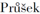
，y.（1906—1980） 应作Jaroslav Prušek，即雅罗斯拉夫·普实克，捷克东方语专家和汉学家。为研究中国史搜集资料，1932年秋来中国，后通过文学杂志社与鲁迅通信。鲁迅为他即将着手翻译的《呐喊》捷克译本写了序文。——1936⑦13，24。⑨2，28。S.F. 见福冈诚一。
Sekir，S. 斯吉尔，或译塞柯尔，画家。——1928③22。
Smedley，A. 见史沫特莱。
Vaillant-Couturier，Paul（1892—1937） 瓦扬-古久里，法国共产党员，社会活动家，作家、记者。1933年9月参加在上海召开的世界反对帝国主义战争委员会远东会议，曾在伊罗生寓与鲁迅晤面。——1933⑨5。
W W 未详。——1936⑦2。
Wei，T. 未详。——1935⑦30。
パン·ウル 见宇留川。